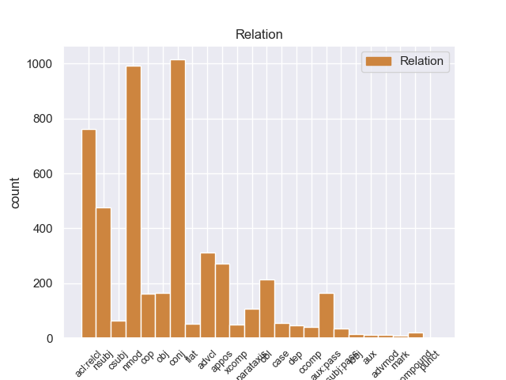
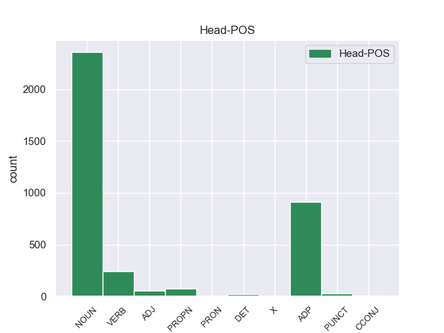
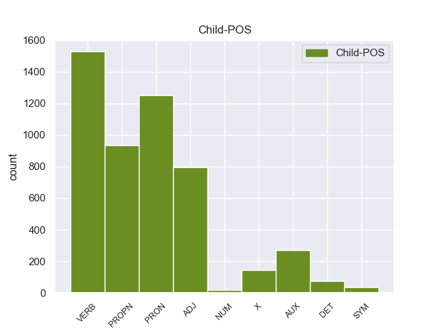

Distribution of features within this leaf



Agreement Rules sorted by frequency.
- When the dependent token is the conjunct(conj) of the head token, and the head token is ADJ and the dependent token is ADJ.
1 Se _ _ _ _ 0 _ _ _
2 dividen _ _ _ _ 0 _ _ _
3 en _ _ _ _ 0 _ _ _
4 dos _ _ _ _ 0 _ _ _
5 subtipos _ _ _ _ 0 _ _ _
6 , _ _ _ _ 0 _ _ _
7 uno _ _ _ _ 0 _ _ _
8 generalmente _ _ _ _ 0 _ _ _
9 compuesto _ _ _ _ 0 _ _ _
10 de _ _ _ _ 0 _ _ _
11 una _ _ _ _ 0 _ _ _
12 tumba _ _ _ _ 0 _ _ _
13 de _ _ _ _ 0 _ _ _
14 corredor _ _ _ _ 0 _ _ _
15 con _ _ _ _ 0 _ _ _
16 bóveda _ _ _ _ 0 _ _ _
17 con _ _ _ _ 0 _ _ _
18 piedras _ _ _ _ 0 _ _ _
19 en _ _ _ _ 0 _ _ _
20 voladizo _ _ _ _ 0 _ _ _
21 con _ _ _ _ 0 _ _ _
22 una _ _ _ _ 0 _ _ _
23 cámara _ _ _ _ 0 _ _ _
24 mortuoria _ _ _ _ 0 _ _ _
25 única _ _ _ _ 0 _ _ _
26 con _ _ _ _ 0 _ _ _
27 vinculación _ _ _ _ 0 _ _ _
28 a _ _ _ _ 0 _ _ _
29 la _ _ _ _ 0 _ _ _
30 entrada _ _ _ _ 0 _ _ _
31 por _ _ _ _ 0 _ _ _
32 un _ _ _ _ 0 _ _ _
33 pasaje _ _ _ _ 0 _ _ _
34 corto corto ADJ _ Gender=Masc|Number=Sing 0 _ _ _
35 y _ _ _ _ 0 _ _ _
36 cubierto cubierto ADJ _ Gender=Masc|Number=Sing|VerbForm=Part 34 conj _ _
37 con _ _ _ _ 0 _ _ _
38 un _ _ _ _ 0 _ _ _
39 túmulo _ _ _ _ 0 _ _ _
40 de _ _ _ _ 0 _ _ _
41 piedras _ _ _ _ 0 _ _ _
42 , _ _ _ _ 0 _ _ _
43 con _ _ _ _ 0 _ _ _
44 las _ _ _ _ 0 _ _ _
45 entradas _ _ _ _ 0 _ _ _
46 orientadas _ _ _ _ 0 _ _ _
47 a _ _ _ _ 0 _ _ _
48 el _ _ _ _ 0 _ _ _
49 suroeste _ _ _ _ 0 _ _ _
50 , _ _ _ _ 0 _ _ _
51 hacia _ _ _ _ 0 _ _ _
52 la _ _ _ _ 0 _ _ _
53 puesta _ _ _ _ 0 _ _ _
54 de _ _ _ _ 0 _ _ _
55 el _ _ _ _ 0 _ _ _
56 sol _ _ _ _ 0 _ _ _
57 en _ _ _ _ 0 _ _ _
58 pleno _ _ _ _ 0 _ _ _
59 invierno _ _ _ _ 0 _ _ _
60 . _ _ _ _ 0 _ _ _
1 También _ _ _ _ 0 _ _ _
2 incluyeron _ _ _ _ 0 _ _ _
3 variaciones _ _ _ _ 0 _ _ _
4 en _ _ _ _ 0 _ _ _
5 el _ _ _ _ 0 _ _ _
6 kickoff _ _ _ _ 0 _ _ _
7 con _ _ _ _ 0 _ _ _
8 patadas patada NOUN _ Gender=Fem|Number=Plur 0 _ _ _
9 cortas _ _ _ _ 0 _ _ _
10 , _ _ _ _ 0 _ _ _
11 que _ _ _ _ 0 _ _ _
12 fue _ _ _ _ 0 _ _ _
13 incluida incluir VERB _ Gender=Fem|Number=Sing|Tense=Past|VerbForm=Part 8 acl:relcl _ _
14 por _ _ _ _ 0 _ _ _
15 primera _ _ _ _ 0 _ _ _
16 vez _ _ _ _ 0 _ _ _
17 en _ _ _ _ 0 _ _ _
18 la _ _ _ _ 0 _ _ _
19 WLAF _ _ _ _ 0 _ _ _
20 . _ _ _ _ 0 _ _ _
1 Su _ _ _ _ 0 _ _ _
2 última _ _ _ _ 0 _ _ _
3 etapa _ _ _ _ 0 _ _ _
4 como _ _ _ _ 0 _ _ _
5 realizador _ _ _ _ 0 _ _ _
6 se _ _ _ _ 0 _ _ _
7 define _ _ _ _ 0 _ _ _
8 por _ _ _ _ 0 _ _ _
9 otro _ _ _ _ 0 _ _ _
10 reemplazo _ _ _ _ 0 _ _ _
11 en _ _ _ _ 0 _ _ _
12 pleno _ _ _ _ 0 _ _ _
13 rodaje _ _ _ _ 0 _ _ _
14 , _ _ _ _ 0 _ _ _
15 en _ _ _ _ 0 _ _ _
16 este _ _ _ _ 0 _ _ _
17 caso caso NOUN _ Gender=Masc|Number=Sing 0 _ _ _
18 de _ _ _ _ 0 _ _ _
19 " _ _ _ _ 0 _ _ _
20 El _ _ _ _ 0 _ _ _
21 último _ _ _ _ 0 _ _ _
22 adiós adiós PROPN _ Gender=Masc|Number=Sing 17 nmod _ _
23 de _ _ _ _ 0 _ _ _
24 la _ _ _ _ 0 _ _ _
25 sra _ _ _ _ 0 _ _ _
26 . _ _ _ _ 0 _ _ _
1 El _ _ _ _ 0 _ _ _
2 City _ _ _ _ 0 _ _ _
3 quiere _ _ _ _ 0 _ _ _
4 a _ _ _ _ 0 _ _ _
5 ambos _ _ _ _ 0 _ _ _
6 , _ _ _ _ 0 _ _ _
7 sobre _ _ _ _ 0 _ _ _
8 todo todo PRON _ Gender=Masc|Number=Sing|PronType=Tot 11 nmod _ _
9 a _ _ _ _ 0 _ _ _
10 el _ _ _ _ 0 _ _ _
11 argentino argentino NOUN _ Gender=Masc|Number=Sing 0 _ _ _
12 que _ _ _ _ 0 _ _ _
13 juega _ _ _ _ 0 _ _ _
14 de _ _ _ _ 0 _ _ _
15 mediocentro _ _ _ _ 0 _ _ _
16 . _ _ _ _ 0 _ _ _
1 Una _ _ _ _ 0 _ _ _
2 vez _ _ _ _ 0 _ _ _
3 construido construir VERB _ Gender=Masc|Number=Sing|Tense=Past|VerbForm=Part 0 _ _ _
4 el _ _ _ _ 0 _ _ _
5 primer _ _ _ _ 0 _ _ _
6 mazo _ _ _ _ 0 _ _ _
7 y _ _ _ _ 0 _ _ _
8 jugado jugar VERB _ Gender=Masc|Number=Sing|Tense=Past|VerbForm=Part 3 conj _ _
9 unas _ _ _ _ 0 _ _ _
10 cuantas _ _ _ _ 0 _ _ _
11 partidas _ _ _ _ 0 _ _ _
12 , _ _ _ _ 0 _ _ _
13 el _ _ _ _ 0 _ _ _
14 usuario _ _ _ _ 0 _ _ _
15 es _ _ _ _ 0 _ _ _
16 el _ _ _ _ 0 _ _ _
17 que _ _ _ _ 0 _ _ _
18 decide _ _ _ _ 0 _ _ _
19 hasta _ _ _ _ 0 _ _ _
20 donde _ _ _ _ 0 _ _ _
21 quiere _ _ _ _ 0 _ _ _
22 llegar _ _ _ _ 0 _ _ _
23 , _ _ _ _ 0 _ _ _
24 cuantos _ _ _ _ 0 _ _ _
25 mazos _ _ _ _ 0 _ _ _
26 quiere _ _ _ _ 0 _ _ _
27 construir _ _ _ _ 0 _ _ _
28 , _ _ _ _ 0 _ _ _
29 y _ _ _ _ 0 _ _ _
30 cuan _ _ _ _ 0 _ _ _
31 competetivos _ _ _ _ 0 _ _ _
32 desea _ _ _ _ 0 _ _ _
33 que _ _ _ _ 0 _ _ _
34 sean _ _ _ _ 0 _ _ _
35 , _ _ _ _ 0 _ _ _
36 ajustándo _ _ _ _ 0 _ _ _
37 se _ _ _ _ 0 _ _ _
38 el _ _ _ _ 0 _ _ _
39 juego _ _ _ _ 0 _ _ _
40 a _ _ _ _ 0 _ _ _
41 su _ _ _ _ 0 _ _ _
42 presupuesto _ _ _ _ 0 _ _ _
43 . _ _ _ _ 0 _ _ _
1 Valoro _ _ _ _ 0 _ _ _
2 de _ _ _ _ 0 _ _ _
3 manera _ _ _ _ 0 _ _ _
4 muy _ _ _ _ 0 _ _ _
5 especial _ _ _ _ 0 _ _ _
6 que _ _ _ _ 0 _ _ _
7 apuesten _ _ _ _ 0 _ _ _
8 por _ _ _ _ 0 _ _ _
9 mí _ _ _ _ 0 _ _ _
10 en _ _ _ _ 0 _ _ _
11 la _ _ _ _ 0 _ _ _
12 candidatura _ _ _ _ 0 _ _ _
13 de _ _ _ _ 0 _ _ _
14 las _ _ _ _ 0 _ _ _
15 próximas _ _ _ _ 0 _ _ _
16 elecciones _ _ _ _ 0 _ _ _
17 municipales _ _ _ _ 0 _ _ _
18 siendo _ _ _ _ 0 _ _ _
19 éste este PRON _ Gender=Masc|Number=Sing|PronType=Dem 21 nsubj _ _
20 un _ _ _ _ 0 _ _ _
21 partido partido NOUN _ Gender=Masc|Number=Sing 0 _ _ _
22 que _ _ _ _ 0 _ _ _
23 actualmente _ _ _ _ 0 _ _ _
24 tiene _ _ _ _ 0 _ _ _
25 responsabilidades _ _ _ _ 0 _ _ _
26 de _ _ _ _ 0 _ _ _
27 gobierno _ _ _ _ 0 _ _ _
28 . _ _ _ _ 0 _ _ _
1 Sabía _ _ _ _ 0 _ _ _
2 dónde _ _ _ _ 0 _ _ _
3 había _ _ _ _ 0 _ _ _
4 estado _ _ _ _ 0 _ _ _
5 y _ _ _ _ 0 _ _ _
6 dónde _ _ _ _ 0 _ _ _
7 estaba _ _ _ _ 0 _ _ _
8 , _ _ _ _ 0 _ _ _
9 a _ _ _ _ 0 _ _ _
10 mí _ _ _ _ 0 _ _ _
11 nunca _ _ _ _ 0 _ _ _
12 me _ _ _ _ 0 _ _ _
13 contó _ _ _ _ 0 _ _ _
14 detalles _ _ _ _ 0 _ _ _
15 de _ _ _ _ 0 _ _ _
16 lo _ _ _ _ 0 _ _ _
17 que _ _ _ _ 0 _ _ _
18 había _ _ _ _ 0 _ _ _
19 vivido _ _ _ _ 0 _ _ _
20 ahí _ _ _ _ 0 _ _ _
21 adentro _ _ _ _ 0 _ _ _
22 , _ _ _ _ 0 _ _ _
23 lo _ _ _ _ 0 _ _ _
24 que _ _ _ _ 0 _ _ _
25 sí _ _ _ _ 0 _ _ _
26 me _ _ _ _ 0 _ _ _
27 contó _ _ _ _ 0 _ _ _
28 es _ _ _ _ 0 _ _ _
29 que _ _ _ _ 0 _ _ _
30 lo él PRON _ Case=Acc|Gender=Masc|Number=Sing|Person=3|PrepCase=Npr|PronType=Prs 32 obj _ _
31 habían _ _ _ _ 0 _ _ _
32 torturado torturar VERB _ Gender=Masc|Number=Sing|Tense=Past|VerbForm=Part 0 _ _ _
33 delante _ _ _ _ 0 _ _ _
34 de _ _ _ _ 0 _ _ _
35 su _ _ _ _ 0 _ _ _
36 madre _ _ _ _ 0 _ _ _
37 para _ _ _ _ 0 _ _ _
38 que _ _ _ _ 0 _ _ _
39 ella _ _ _ _ 0 _ _ _
40 diera _ _ _ _ 0 _ _ _
41 los _ _ _ _ 0 _ _ _
42 datos _ _ _ _ 0 _ _ _
43 de _ _ _ _ 0 _ _ _
44 una _ _ _ _ 0 _ _ _
45 hipoteca _ _ _ _ 0 _ _ _
46 o _ _ _ _ 0 _ _ _
47 de _ _ _ _ 0 _ _ _
48 una _ _ _ _ 0 _ _ _
49 casa _ _ _ _ 0 _ _ _
50 que _ _ _ _ 0 _ _ _
51 tenían _ _ _ _ 0 _ _ _
52 . _ _ _ _ 0 _ _ _
1 Si _ _ _ _ 0 _ _ _
2 un _ _ _ _ 0 _ _ _
3 producto _ _ _ _ 0 _ _ _
4 destinado _ _ _ _ 0 _ _ _
5 a _ _ _ _ 0 _ _ _
6 durar _ _ _ _ 0 _ _ _
7 demasiado _ _ _ _ 0 _ _ _
8 , _ _ _ _ 0 _ _ _
9 una _ _ _ _ 0 _ _ _
10 vez _ _ _ _ 0 _ _ _
11 este estar VERB _ Gender=Masc|Number=Sing|VerbForm=Fin 14 advcl _ _
12 ya _ _ _ _ 0 _ _ _
13 ha _ _ _ _ 0 _ _ _
14 llegado llegar VERB _ Gender=Masc|Number=Sing|Tense=Past|VerbForm=Part 0 _ _ _
15 a _ _ _ _ 0 _ _ _
16 el _ _ _ _ 0 _ _ _
17 mercado _ _ _ _ 0 _ _ _
18 la _ _ _ _ 0 _ _ _
19 producción _ _ _ _ 0 _ _ _
20 puede _ _ _ _ 0 _ _ _
21 parar _ _ _ _ 0 _ _ _
22 hasta _ _ _ _ 0 _ _ _
23 que _ _ _ _ 0 _ _ _
24 no _ _ _ _ 0 _ _ _
25 vuelva _ _ _ _ 0 _ _ _
26 a _ _ _ _ 0 _ _ _
27 necesitar _ _ _ _ 0 _ _ _
28 se _ _ _ _ 0 _ _ _
29 y _ _ _ _ 0 _ _ _
30 esto _ _ _ _ 0 _ _ _
31 suponía _ _ _ _ 0 _ _ _
32 una _ _ _ _ 0 _ _ _
33 catástrofe _ _ _ _ 0 _ _ _
34 para _ _ _ _ 0 _ _ _
35 las _ _ _ _ 0 _ _ _
36 empresas _ _ _ _ 0 _ _ _
37 . _ _ _ _ 0 _ _ _
1 El _ _ _ _ 0 _ _ _
2 atareco atareco PROPN _ Gender=Masc|Number=Sing 9 nsubj _ _
3 ( _ _ _ _ 0 _ _ _
4 localismo _ _ _ _ 0 _ _ _
5 canario _ _ _ _ 0 _ _ _
6 ) _ _ _ _ 0 _ _ _
7 es _ _ _ _ 0 _ _ _
8 un _ _ _ _ 0 _ _ _
9 cencerro cencerro NOUN _ Gender=Masc|Number=Sing 0 _ _ _
10 o _ _ _ _ 0 _ _ _
11 campana _ _ _ _ 0 _ _ _
12 que _ _ _ _ 0 _ _ _
13 se _ _ _ _ 0 _ _ _
14 cuelga _ _ _ _ 0 _ _ _
15 a _ _ _ _ 0 _ _ _
16 el _ _ _ _ 0 _ _ _
17 cuello _ _ _ _ 0 _ _ _
18 a _ _ _ _ 0 _ _ _
19 los _ _ _ _ 0 _ _ _
20 animales _ _ _ _ 0 _ _ _
21 de _ _ _ _ 0 _ _ _
22 granja _ _ _ _ 0 _ _ _
23 , _ _ _ _ 0 _ _ _
24 tales _ _ _ _ 0 _ _ _
25 como _ _ _ _ 0 _ _ _
26 cabras _ _ _ _ 0 _ _ _
27 , _ _ _ _ 0 _ _ _
28 ovejas _ _ _ _ 0 _ _ _
29 y _ _ _ _ 0 _ _ _
30 vacas _ _ _ _ 0 _ _ _
31 . _ _ _ _ 0 _ _ _
1 Fue _ _ _ _ 0 _ _ _
2 considerada considerado VERB _ Gender=Fem|Number=Sing|Tense=Past|VerbForm=Part 0 _ _ _
3 , _ _ _ _ 0 _ _ _
4 ese _ _ _ _ 0 _ _ _
5 año _ _ _ _ 0 _ _ _
6 , _ _ _ _ 0 _ _ _
7 como _ _ _ _ 0 _ _ _
8 una uno PRON _ Gender=Fem|Number=Sing|PronType=Ind 2 obl _ _
9 de _ _ _ _ 0 _ _ _
10 las _ _ _ _ 0 _ _ _
11 mayores _ _ _ _ 0 _ _ _
12 estrellas _ _ _ _ 0 _ _ _
13 de _ _ _ _ 0 _ _ _
14 el _ _ _ _ 0 _ _ _
15 cine _ _ _ _ 0 _ _ _
16 europeo _ _ _ _ 0 _ _ _
17 por _ _ _ _ 0 _ _ _
18 la _ _ _ _ 0 _ _ _
19 European _ _ _ _ 0 _ _ _
20 Film _ _ _ _ 0 _ _ _
21 Promotion _ _ _ _ 0 _ _ _
22 . _ _ _ _ 0 _ _ _
1 Su _ _ _ _ 0 _ _ _
2 primer _ _ _ _ 0 _ _ _
3 papel _ _ _ _ 0 _ _ _
4 fue _ _ _ _ 0 _ _ _
5 en _ _ _ _ 0 _ _ _
6 la _ _ _ _ 0 _ _ _
7 película película NOUN _ Gender=Fem|Number=Sing 0 _ _ _
8 " _ _ _ _ 0 _ _ _
9 Carne carne PROPN _ Gender=Fem|Number=Sing 7 appos _ _
10 viva _ _ _ _ 0 _ _ _
11 " _ _ _ _ 0 _ _ _
12 ( _ _ _ _ 0 _ _ _
13 1972 _ _ _ _ 0 _ _ _
14 ) _ _ _ _ 0 _ _ _
15 , _ _ _ _ 0 _ _ _
16 en _ _ _ _ 0 _ _ _
17 la _ _ _ _ 0 _ _ _
18 cual _ _ _ _ 0 _ _ _
19 interpretaba _ _ _ _ 0 _ _ _
20 el _ _ _ _ 0 _ _ _
21 papel _ _ _ _ 0 _ _ _
22 de _ _ _ _ 0 _ _ _
23 una _ _ _ _ 0 _ _ _
24 mujer _ _ _ _ 0 _ _ _
25 vendida _ _ _ _ 0 _ _ _
26 en _ _ _ _ 0 _ _ _
27 la _ _ _ _ 0 _ _ _
28 trata _ _ _ _ 0 _ _ _
29 de _ _ _ _ 0 _ _ _
30 blancas _ _ _ _ 0 _ _ _
31 . _ _ _ _ 0 _ _ _
1 Los _ _ _ _ 0 _ _ _
2 antiguos _ _ _ _ 0 _ _ _
3 vagones _ _ _ _ 0 _ _ _
4 habían _ _ _ _ 0 _ _ _
5 sido ser AUX _ Gender=Masc|Number=Sing|Tense=Past|VerbForm=Part 6 aux:pass _ _
6 preservados preservado VERB _ Gender=Masc|Number=Plur|Tense=Past|VerbForm=Part 0 _ _ _
7 , _ _ _ _ 0 _ _ _
8 a _ _ _ _ 0 _ _ _
9 el _ _ _ _ 0 _ _ _
10 igual _ _ _ _ 0 _ _ _
11 que _ _ _ _ 0 _ _ _
12 modelos _ _ _ _ 0 _ _ _
13 y _ _ _ _ 0 _ _ _
14 otras _ _ _ _ 0 _ _ _
15 exhibiciones _ _ _ _ 0 _ _ _
16 fueron _ _ _ _ 0 _ _ _
17 exhibidas _ _ _ _ 0 _ _ _
18 . _ _ _ _ 0 _ _ _
1 La _ _ _ _ 0 _ _ _
2 ocupación _ _ _ _ 0 _ _ _
3 brasileña _ _ _ _ 0 _ _ _
4 duro _ _ _ _ 0 _ _ _
5 hasta _ _ _ _ 0 _ _ _
6 1876 _ _ _ _ 0 _ _ _
7 tras _ _ _ _ 0 _ _ _
8 esto _ _ _ _ 0 _ _ _
9 se _ _ _ _ 0 _ _ _
10 sucederia _ _ _ _ 0 _ _ _
11 una _ _ _ _ 0 _ _ _
12 etapa etapa NOUN _ Gender=Fem|Number=Sing 0 _ _ _
13 de _ _ _ _ 0 _ _ _
14 constantes _ _ _ _ 0 _ _ _
15 golpes _ _ _ _ 0 _ _ _
16 de _ _ _ _ 0 _ _ _
17 estado _ _ _ _ 0 _ _ _
18 , _ _ _ _ 0 _ _ _
19 en _ _ _ _ 0 _ _ _
20 la _ _ _ _ 0 _ _ _
21 que _ _ _ _ 0 _ _ _
22 el _ _ _ _ 0 _ _ _
23 control _ _ _ _ 0 _ _ _
24 de _ _ _ _ 0 _ _ _
25 el _ _ _ _ 0 _ _ _
26 gobierno _ _ _ _ 0 _ _ _
27 era _ _ _ _ 0 _ _ _
28 efectiva efectivo ADJ _ Gender=Fem|Number=Sing 12 acl:relcl _ _
29 solo _ _ _ _ 0 _ _ _
30 en _ _ _ _ 0 _ _ _
31 la _ _ _ _ 0 _ _ _
32 zona _ _ _ _ 0 _ _ _
33 de _ _ _ _ 0 _ _ _
34 Asunción _ _ _ _ 0 _ _ _
35 . _ _ _ _ 0 _ _ _
1 Curiosamente _ _ _ _ 0 _ _ _
2 , _ _ _ _ 0 _ _ _
3 como _ _ _ _ 0 _ _ _
4 ya _ _ _ _ 0 _ _ _
5 se _ _ _ _ 0 _ _ _
6 ha _ _ _ _ 0 _ _ _
7 comentado comentar VERB _ Gender=Masc|Number=Sing|Tense=Past|VerbForm=Part 13 advcl _ SpaceAfter=No
8 , _ _ _ _ 0 _ _ _
9 The _ _ _ _ 0 _ _ _
10 Kinks _ _ _ _ 0 _ _ _
11 fueron _ _ _ _ 0 _ _ _
12 un _ _ _ _ 0 _ _ _
13 grupo grupo NOUN _ Gender=Masc|Number=Sing 0 _ _ _
14 vetado _ _ _ _ 0 _ _ _
15 en _ _ _ _ 0 _ _ _
16 USA _ _ _ _ 0 _ _ _
17 tras _ _ _ _ 0 _ _ _
18 su _ _ _ _ 0 _ _ _
19 gira _ _ _ _ 0 _ _ _
20 de _ _ _ _ 0 _ _ _
21 1965 _ _ _ _ 0 _ _ _
22 , _ _ _ _ 0 _ _ _
23 lo _ _ _ _ 0 _ _ _
24 que _ _ _ _ 0 _ _ _
25 les _ _ _ _ 0 _ _ _
26 impidió _ _ _ _ 0 _ _ _
27 volver _ _ _ _ 0 _ _ _
28 a _ _ _ _ 0 _ _ _
29 actuar _ _ _ _ 0 _ _ _
30 en _ _ _ _ 0 _ _ _
31 el _ _ _ _ 0 _ _ _
32 país _ _ _ _ 0 _ _ _
33 ( _ _ _ _ 0 _ _ _
34 y _ _ _ _ 0 _ _ _
35 llegar _ _ _ _ 0 _ _ _
36 a _ _ _ _ 0 _ _ _
37 sus _ _ _ _ 0 _ _ _
38 listas _ _ _ _ 0 _ _ _
39 ) _ _ _ _ 0 _ _ _
40 hasta _ _ _ _ 0 _ _ _
41 1970 _ _ _ _ 0 _ _ _
42 . _ _ _ _ 0 _ _ _
1 Greatest _ _ _ _ 0 _ _ _
2 Hits _ _ _ _ 0 _ _ _
3 Remixed _ _ _ _ 0 _ _ _
4 es _ _ _ _ 0 _ _ _
5 el _ _ _ _ 0 _ _ _
6 cuarto _ _ _ _ 0 _ _ _
7 álbum álbum NOUN _ Gender=Masc|Number=Sing 0 _ _ _
8 recopilatorio _ _ _ _ 0 _ _ _
9 de _ _ _ _ 0 _ _ _
10 la _ _ _ _ 0 _ _ _
11 banda _ _ _ _ 0 _ _ _
12 canadiense _ _ _ _ 0 _ _ _
13 de _ _ _ _ 0 _ _ _
14 hard _ _ _ _ 0 _ _ _
15 rock _ _ _ _ 0 _ _ _
16 Triumph _ _ _ _ 0 _ _ _
17 y _ _ _ _ 0 _ _ _
18 fue _ _ _ _ 0 _ _ _
19 publicado publicar VERB _ Gender=Masc|Number=Sing|Tense=Past|VerbForm=Part 7 conj _ _
20 en _ _ _ _ 0 _ _ _
21 2010 _ _ _ _ 0 _ _ _
22 . _ _ _ _ 0 _ _ _
1 Les _ _ _ _ 0 _ _ _
2 he _ _ _ _ 0 _ _ _
3 pedido _ _ _ _ 0 _ _ _
4 donde _ _ _ _ 0 _ _ _
5 podía _ _ _ _ 0 _ _ _
6 encontrar _ _ _ _ 0 _ _ _
7 un _ _ _ _ 0 _ _ _
8 fabricante _ _ _ _ 0 _ _ _
9 de _ _ _ _ 0 _ _ _
10 trofeos _ _ _ _ 0 _ _ _
11 en _ _ _ _ 0 _ _ _
12 metacrilato _ _ _ _ 0 _ _ _
13 , _ _ _ _ 0 _ _ _
14 y _ _ _ _ 0 _ _ _
15 ellos él PRON _ Case=Acc,Nom|Gender=Masc|Number=Plur|Person=3|PronType=Prs 20 nsubj _ _
16 mismos _ _ _ _ 0 _ _ _
17 me _ _ _ _ 0 _ _ _
18 los _ _ _ _ 0 _ _ _
19 han _ _ _ _ 0 _ _ _
20 fabricado fabricar VERB _ Gender=Masc|Number=Sing|Tense=Past|VerbForm=Part 0 _ _ _
21 a _ _ _ _ 0 _ _ _
22 un _ _ _ _ 0 _ _ _
23 precio _ _ _ _ 0 _ _ _
24 muy _ _ _ _ 0 _ _ _
25 interesante _ _ _ _ 0 _ _ _
26 . _ _ _ _ 0 _ _ _
1 Tiene _ _ _ _ 0 _ _ _
2 la _ _ _ _ 0 _ _ _
3 peculiaridad _ _ _ _ 0 _ _ _
4 de _ _ _ _ 0 _ _ _
5 ser _ _ _ _ 0 _ _ _
6 una uno PRON _ Gender=Fem|Number=Sing|PronType=Ind 0 _ _ _
7 de _ _ _ _ 0 _ _ _
8 las él PRON _ Case=Acc|Gender=Fem|Number=Plur|Person=3|PrepCase=Npr|PronType=Prs 6 nmod _ _
9 más _ _ _ _ 0 _ _ _
10 extensas _ _ _ _ 0 _ _ _
11 realizadas _ _ _ _ 0 _ _ _
12 por _ _ _ _ 0 _ _ _
13 este _ _ _ _ 0 _ _ _
14 estudio _ _ _ _ 0 _ _ _
15 de _ _ _ _ 0 _ _ _
16 animación _ _ _ _ 0 _ _ _
17 y _ _ _ _ 0 _ _ _
18 una _ _ _ _ 0 _ _ _
19 de _ _ _ _ 0 _ _ _
20 las _ _ _ _ 0 _ _ _
21 series _ _ _ _ 0 _ _ _
22 animadas _ _ _ _ 0 _ _ _
23 estadounidenses _ _ _ _ 0 _ _ _
24 de _ _ _ _ 0 _ _ _
25 las _ _ _ _ 0 _ _ _
26 que _ _ _ _ 0 _ _ _
27 más _ _ _ _ 0 _ _ _
28 episodios _ _ _ _ 0 _ _ _
29 se _ _ _ _ 0 _ _ _
30 han _ _ _ _ 0 _ _ _
31 realizado _ _ _ _ 0 _ _ _
32 , _ _ _ _ 0 _ _ _
33 siendo _ _ _ _ 0 _ _ _
34 superada _ _ _ _ 0 _ _ _
35 únicamente _ _ _ _ 0 _ _ _
36 por _ _ _ _ 0 _ _ _
37 Los _ _ _ _ 0 _ _ _
38 Picapiedra _ _ _ _ 0 _ _ _
39 , _ _ _ _ 0 _ _ _
40 Scooby _ _ _ _ 0 _ _ _
41 Doo _ _ _ _ 0 _ _ _
42 y _ _ _ _ 0 _ _ _
43 Los _ _ _ _ 0 _ _ _
44 Simpsons _ _ _ _ 0 _ _ _
45 . _ _ _ _ 0 _ _ _
1 Sabía _ _ _ _ 0 _ _ _
2 dónde _ _ _ _ 0 _ _ _
3 había _ _ _ _ 0 _ _ _
4 estado _ _ _ _ 0 _ _ _
5 y _ _ _ _ 0 _ _ _
6 dónde _ _ _ _ 0 _ _ _
7 estaba _ _ _ _ 0 _ _ _
8 , _ _ _ _ 0 _ _ _
9 a _ _ _ _ 0 _ _ _
10 mí _ _ _ _ 0 _ _ _
11 nunca _ _ _ _ 0 _ _ _
12 me _ _ _ _ 0 _ _ _
13 contó _ _ _ _ 0 _ _ _
14 detalles _ _ _ _ 0 _ _ _
15 de _ _ _ _ 0 _ _ _
16 lo él PRON _ Case=Acc|Gender=Masc|Number=Sing|Person=3|PrepCase=Npr|PronType=Prs 0 _ _ _
17 que _ _ _ _ 0 _ _ _
18 había _ _ _ _ 0 _ _ _
19 vivido vivir VERB _ Gender=Masc|Number=Sing|Tense=Past|VerbForm=Part 16 acl:relcl _ _
20 ahí _ _ _ _ 0 _ _ _
21 adentro _ _ _ _ 0 _ _ _
22 , _ _ _ _ 0 _ _ _
23 lo _ _ _ _ 0 _ _ _
24 que _ _ _ _ 0 _ _ _
25 sí _ _ _ _ 0 _ _ _
26 me _ _ _ _ 0 _ _ _
27 contó _ _ _ _ 0 _ _ _
28 es _ _ _ _ 0 _ _ _
29 que _ _ _ _ 0 _ _ _
30 lo _ _ _ _ 0 _ _ _
31 habían _ _ _ _ 0 _ _ _
32 torturado _ _ _ _ 0 _ _ _
33 delante _ _ _ _ 0 _ _ _
34 de _ _ _ _ 0 _ _ _
35 su _ _ _ _ 0 _ _ _
36 madre _ _ _ _ 0 _ _ _
37 para _ _ _ _ 0 _ _ _
38 que _ _ _ _ 0 _ _ _
39 ella _ _ _ _ 0 _ _ _
40 diera _ _ _ _ 0 _ _ _
41 los _ _ _ _ 0 _ _ _
42 datos _ _ _ _ 0 _ _ _
43 de _ _ _ _ 0 _ _ _
44 una _ _ _ _ 0 _ _ _
45 hipoteca _ _ _ _ 0 _ _ _
46 o _ _ _ _ 0 _ _ _
47 de _ _ _ _ 0 _ _ _
48 una _ _ _ _ 0 _ _ _
49 casa _ _ _ _ 0 _ _ _
50 que _ _ _ _ 0 _ _ _
51 tenían _ _ _ _ 0 _ _ _
52 . _ _ _ _ 0 _ _ _
1 Es _ _ _ _ 0 _ _ _
2 el _ _ _ _ 0 _ _ _
3 único _ _ _ _ 0 _ _ _
4 puente puente NOUN _ Gender=Masc|Number=Sing 0 _ _ _
5 sobre _ _ _ _ 0 _ _ _
6 el _ _ _ _ 0 _ _ _
7 Támesis _ _ _ _ 0 _ _ _
8 que _ _ _ _ 0 _ _ _
9 tiene _ _ _ _ 0 _ _ _
10 siete _ _ _ _ 0 _ _ _
11 arcos _ _ _ _ 0 _ _ _
12 y _ _ _ _ 0 _ _ _
13 es _ _ _ _ 0 _ _ _
14 el _ _ _ _ 0 _ _ _
15 más _ _ _ _ 0 _ _ _
16 antiguo antiguo ADJ _ Gender=Masc|Number=Sing 4 conj _ _
17 de _ _ _ _ 0 _ _ _
18 la _ _ _ _ 0 _ _ _
19 zona _ _ _ _ 0 _ _ _
20 central _ _ _ _ 0 _ _ _
21 de _ _ _ _ 0 _ _ _
22 el _ _ _ _ 0 _ _ _
23 río _ _ _ _ 0 _ _ _
24 . _ _ _ _ 0 _ _ _
1 " _ _ _ _ 0 _ _ _
2 Las _ _ _ _ 0 _ _ _
3 poblaciones _ _ _ _ 0 _ _ _
4 locales _ _ _ _ 0 _ _ _
5 o _ _ _ _ 0 _ _ _
6 aledañas _ _ _ _ 0 _ _ _
7 a _ _ _ _ 0 _ _ _
8 el _ _ _ _ 0 _ _ _
9 recurso _ _ _ _ 0 _ _ _
10 natural _ _ _ _ 0 _ _ _
11 , _ _ _ _ 0 _ _ _
12 no _ _ _ _ 0 _ _ _
13 reciben _ _ _ _ 0 _ _ _
14 los _ _ _ _ 0 _ _ _
15 recursos recurso NOUN _ Gender=Masc|Number=Plur 0 _ _ _
16 económicos _ _ _ _ 0 _ _ _
17 adecuados _ _ _ _ 0 _ _ _
18 o _ _ _ _ 0 _ _ _
19 muy _ _ _ _ 0 _ _ _
20 pocos poco PRON _ Gender=Masc|Number=Plur|NumType=Card|PronType=Ind 15 conj _ SpaceAfter=No
21 . _ _ _ _ 0 _ _ _
1 Rasgos _ _ _ _ 0 _ _ _
2 industriales _ _ _ _ 0 _ _ _
3 ( _ _ _ _ 0 _ _ _
4 en _ _ _ _ 0 _ _ _
5 su _ _ _ _ 0 _ _ _
6 futurista _ _ _ _ 0 _ _ _
7 diseño _ _ _ _ 0 _ _ _
8 de _ _ _ _ 0 _ _ _
9 Piano _ _ _ _ 0 _ _ _
10 ) _ _ _ _ 0 _ _ _
11 y _ _ _ _ 0 _ _ _
12 lujo _ _ _ _ 0 _ _ _
13 cinco _ _ _ _ 0 _ _ _
14 estrellas _ _ _ _ 0 _ _ _
15 definen _ _ _ _ 0 _ _ _
16 el _ _ _ _ 0 _ _ _
17 estilo _ _ _ _ 0 _ _ _
18 de _ _ _ _ 0 _ _ _
19 el _ _ _ _ 0 _ _ _
20 nuevo _ _ _ _ 0 _ _ _
21 NH nh PROPN _ Gender=Masc|Number=Sing 0 _ _ _
22 Lingotto lingotto PROPN _ Gender=Masc|Number=Sing 21 flat _ _
23 Tech _ _ _ _ 0 _ _ _
24 , _ _ _ _ 0 _ _ _
25 un _ _ _ _ 0 _ _ _
26 establecimiento _ _ _ _ 0 _ _ _
27 de _ _ _ _ 0 _ _ _
28 vanguardia _ _ _ _ 0 _ _ _
29 que _ _ _ _ 0 _ _ _
30 incorpora _ _ _ _ 0 _ _ _
31 una _ _ _ _ 0 _ _ _
32 impresionante _ _ _ _ 0 _ _ _
33 área _ _ _ _ 0 _ _ _
34 de _ _ _ _ 0 _ _ _
35 boutiques _ _ _ _ 0 _ _ _
36 ( _ _ _ _ 0 _ _ _
37 la _ _ _ _ 0 _ _ _
38 llamada _ _ _ _ 0 _ _ _
39 " _ _ _ _ 0 _ _ _
40 Galería _ _ _ _ 0 _ _ _
41 Ocho _ _ _ _ 0 _ _ _
42 " _ _ _ _ 0 _ _ _
43 ) _ _ _ _ 0 _ _ _
44 , _ _ _ _ 0 _ _ _
45 sala _ _ _ _ 0 _ _ _
46 de _ _ _ _ 0 _ _ _
47 conciertos _ _ _ _ 0 _ _ _
48 y _ _ _ _ 0 _ _ _
49 una _ _ _ _ 0 _ _ _
50 galería _ _ _ _ 0 _ _ _
51 de _ _ _ _ 0 _ _ _
52 arte _ _ _ _ 0 _ _ _
53 proyectada _ _ _ _ 0 _ _ _
54 por _ _ _ _ 0 _ _ _
55 Piano _ _ _ _ 0 _ _ _
56 ( _ _ _ _ 0 _ _ _
57 Lo _ _ _ _ 0 _ _ _
58 Scrigno _ _ _ _ 0 _ _ _
59 ) _ _ _ _ 0 _ _ _
60 . _ _ _ _ 0 _ _ _
1 El _ _ _ _ 0 _ _ _
2 RMS _ _ _ _ 0 _ _ _
3 Queen _ _ _ _ 0 _ _ _
4 Mary _ _ _ _ 0 _ _ _
5 fue _ _ _ _ 0 _ _ _
6 en _ _ _ _ 0 _ _ _
7 su _ _ _ _ 0 _ _ _
8 momento _ _ _ _ 0 _ _ _
9 el _ _ _ _ 0 _ _ _
10 transatlántico _ _ _ _ 0 _ _ _
11 de _ _ _ _ 0 _ _ _
12 mayor _ _ _ _ 0 _ _ _
13 envergadura _ _ _ _ 0 _ _ _
14 construido _ _ _ _ 0 _ _ _
15 y _ _ _ _ 0 _ _ _
16 hasta _ _ _ _ 0 _ _ _
17 1948 _ _ _ _ 0 _ _ _
18 era _ _ _ _ 0 _ _ _
19 el _ _ _ _ 0 _ _ _
20 más _ _ _ _ 0 _ _ _
21 rápido _ _ _ _ 0 _ _ _
22 , _ _ _ _ 0 _ _ _
23 siendo _ _ _ _ 0 _ _ _
24 solo _ _ _ _ 0 _ _ _
25 superado superado VERB _ Gender=Masc|Number=Sing|VerbForm=Part 0 _ _ _
26 por _ _ _ _ 0 _ _ _
27 el _ _ _ _ 0 _ _ _
28 SS ss PROPN _ Gender=Masc|Number=Sing 25 obl _ _
29 United _ _ _ _ 0 _ _ _
30 States _ _ _ _ 0 _ _ _
31 . _ _ _ _ 0 _ _ _
1 Rasgos _ _ _ _ 0 _ _ _
2 industriales _ _ _ _ 0 _ _ _
3 ( _ _ _ _ 0 _ _ _
4 en _ _ _ _ 0 _ _ _
5 su _ _ _ _ 0 _ _ _
6 futurista _ _ _ _ 0 _ _ _
7 diseño _ _ _ _ 0 _ _ _
8 de _ _ _ _ 0 _ _ _
9 Piano _ _ _ _ 0 _ _ _
10 ) _ _ _ _ 0 _ _ _
11 y _ _ _ _ 0 _ _ _
12 lujo _ _ _ _ 0 _ _ _
13 cinco _ _ _ _ 0 _ _ _
14 estrellas _ _ _ _ 0 _ _ _
15 definen _ _ _ _ 0 _ _ _
16 el _ _ _ _ 0 _ _ _
17 estilo _ _ _ _ 0 _ _ _
18 de _ _ _ _ 0 _ _ _
19 el _ _ _ _ 0 _ _ _
20 nuevo _ _ _ _ 0 _ _ _
21 NH _ _ _ _ 0 _ _ _
22 Lingotto _ _ _ _ 0 _ _ _
23 Tech _ _ _ _ 0 _ _ _
24 , _ _ _ _ 0 _ _ _
25 un _ _ _ _ 0 _ _ _
26 establecimiento _ _ _ _ 0 _ _ _
27 de _ _ _ _ 0 _ _ _
28 vanguardia _ _ _ _ 0 _ _ _
29 que _ _ _ _ 0 _ _ _
30 incorpora _ _ _ _ 0 _ _ _
31 una _ _ _ _ 0 _ _ _
32 impresionante _ _ _ _ 0 _ _ _
33 área área NOUN _ Gender=Fem|Number=Sing 0 _ _ _
34 de _ _ _ _ 0 _ _ _
35 boutiques _ _ _ _ 0 _ _ _
36 ( _ _ _ _ 0 _ _ _
37 la él PRON _ Case=Acc|Gender=Fem|Number=Sing|Person=3|PrepCase=Npr|PronType=Prs 33 appos _ _
38 llamada _ _ _ _ 0 _ _ _
39 " _ _ _ _ 0 _ _ _
40 Galería _ _ _ _ 0 _ _ _
41 Ocho _ _ _ _ 0 _ _ _
42 " _ _ _ _ 0 _ _ _
43 ) _ _ _ _ 0 _ _ _
44 , _ _ _ _ 0 _ _ _
45 sala _ _ _ _ 0 _ _ _
46 de _ _ _ _ 0 _ _ _
47 conciertos _ _ _ _ 0 _ _ _
48 y _ _ _ _ 0 _ _ _
49 una _ _ _ _ 0 _ _ _
50 galería _ _ _ _ 0 _ _ _
51 de _ _ _ _ 0 _ _ _
52 arte _ _ _ _ 0 _ _ _
53 proyectada _ _ _ _ 0 _ _ _
54 por _ _ _ _ 0 _ _ _
55 Piano _ _ _ _ 0 _ _ _
56 ( _ _ _ _ 0 _ _ _
57 Lo _ _ _ _ 0 _ _ _
58 Scrigno _ _ _ _ 0 _ _ _
59 ) _ _ _ _ 0 _ _ _
60 . _ _ _ _ 0 _ _ _
1 ' _ _ _ _ 0 _ _ _
2 Ello _ _ _ _ 0 _ _ _
3 puede _ _ _ _ 0 _ _ _
4 ser _ _ _ _ 0 _ _ _
5 el _ _ _ _ 0 _ _ _
6 primer _ _ _ _ 0 _ _ _
7 paso _ _ _ _ 0 _ _ _
8 hacia _ _ _ _ 0 _ _ _
9 una _ _ _ _ 0 _ _ _
10 moralización _ _ _ _ 0 _ _ _
11 , _ _ _ _ 0 _ _ _
12 un _ _ _ _ 0 _ _ _
13 primer _ _ _ _ 0 _ _ _
14 acto _ _ _ _ 0 _ _ _
15 de _ _ _ _ 0 _ _ _
16 responsabilidad _ _ _ _ 0 _ _ _
17 , _ _ _ _ 0 _ _ _
18 consciente _ _ _ _ 0 _ _ _
19 de _ _ _ _ 0 _ _ _
20 que _ _ _ _ 0 _ _ _
21 todo todo PRON _ Gender=Masc|Number=Sing|PronType=Tot 24 nsubj _ _
22 no _ _ _ _ 0 _ _ _
23 está _ _ _ _ 0 _ _ _
24 permitido permitido ADJ _ Gender=Masc|Number=Sing|VerbForm=Part 0 _ _ _
25 y _ _ _ _ 0 _ _ _
26 no _ _ _ _ 0 _ _ _
27 se _ _ _ _ 0 _ _ _
28 puede _ _ _ _ 0 _ _ _
29 hacer _ _ _ _ 0 _ _ _
30 todo _ _ _ _ 0 _ _ _
31 lo _ _ _ _ 0 _ _ _
32 que _ _ _ _ 0 _ _ _
33 uno _ _ _ _ 0 _ _ _
34 quiere _ _ _ _ 0 _ _ _
35 ' _ _ _ _ 0 _ _ _
36 , _ _ _ _ 0 _ _ _
37 afirma _ _ _ _ 0 _ _ _
38 . _ _ _ _ 0 _ _ _
1 El _ _ _ _ 0 _ _ _
2 doodle _ _ _ _ 0 _ _ _
3 de _ _ _ _ 0 _ _ _
4 Google _ _ _ _ 0 _ _ _
5 de _ _ _ _ 0 _ _ _
6 este _ _ _ _ 0 _ _ _
7 sábado _ _ _ _ 0 _ _ _
8 - _ _ _ _ 0 _ _ _
9 domingo _ _ _ _ 0 _ _ _
10 ha _ _ _ _ 0 _ _ _
11 sido ser AUX _ Gender=Masc|Number=Sing|Tense=Past|VerbForm=Part 13 cop _ _
12 un _ _ _ _ 0 _ _ _
13 helado helado NOUN _ Gender=Masc|Number=Sing 0 _ _ _
14 sundae _ _ _ _ 0 _ _ _
15 que _ _ _ _ 0 _ _ _
16 ha _ _ _ _ 0 _ _ _
17 podido _ _ _ _ 0 _ _ _
18 acaramelar _ _ _ _ 0 _ _ _
19 a _ _ _ _ 0 _ _ _
20 los _ _ _ _ 0 _ _ _
21 usuarios _ _ _ _ 0 _ _ _
22 que _ _ _ _ 0 _ _ _
23 lo _ _ _ _ 0 _ _ _
24 vieron _ _ _ _ 0 _ _ _
25 . _ _ _ _ 0 _ _ _
1 El _ _ _ _ 0 _ _ _
2 reverendo _ _ _ _ 0 _ _ _
3 Manfredo _ _ _ _ 0 _ _ _
4 Leone _ _ _ _ 0 _ _ _
5 lo _ _ _ _ 0 _ _ _
6 describió _ _ _ _ 0 _ _ _
7 como _ _ _ _ 0 _ _ _
8 « _ _ _ _ 0 _ _ _
9 una _ _ _ _ 0 _ _ _
10 falta _ _ _ _ 0 _ _ _
11 de _ _ _ _ 0 _ _ _
12 respeto _ _ _ _ 0 _ _ _
13 , _ _ _ _ 0 _ _ _
14 de _ _ _ _ 0 _ _ _
15 mal _ _ _ _ 0 _ _ _
16 gusto _ _ _ _ 0 _ _ _
17 y _ _ _ _ 0 _ _ _
18 poco poco PRON _ Gender=Masc|Number=Sing|NumType=Card|PronType=Ind 19 nmod _ _
19 provocativo provocativo ADJ _ Gender=Masc|Number=Sing 0 _ _ _
20 » _ _ _ _ 0 _ _ _
21 . _ _ _ _ 0 _ _ _
1 En _ _ _ _ 0 _ _ _
2 consecuencia _ _ _ _ 0 _ _ _
3 , _ _ _ _ 0 _ _ _
4 es _ _ _ _ 0 _ _ _
5 considerada considerar VERB _ Gender=Fem|Number=Sing|Tense=Past|VerbForm=Part 7 cop _ _
6 una _ _ _ _ 0 _ _ _
7 especie especie NOUN _ Gender=Fem|Number=Sing 0 _ _ _
8 vulnerable _ _ _ _ 0 _ _ _
9 por _ _ _ _ 0 _ _ _
10 la _ _ _ _ 0 _ _ _
11 Unión _ _ _ _ 0 _ _ _
12 Internacional _ _ _ _ 0 _ _ _
13 para _ _ _ _ 0 _ _ _
14 la _ _ _ _ 0 _ _ _
15 Conservación _ _ _ _ 0 _ _ _
16 de _ _ _ _ 0 _ _ _
17 la _ _ _ _ 0 _ _ _
18 Naturaleza _ _ _ _ 0 _ _ _
19 ( _ _ _ _ 0 _ _ _
20 IUCN _ _ _ _ 0 _ _ _
21 por _ _ _ _ 0 _ _ _
22 sus _ _ _ _ 0 _ _ _
23 siglas _ _ _ _ 0 _ _ _
24 en _ _ _ _ 0 _ _ _
25 inglés _ _ _ _ 0 _ _ _
26 ) _ _ _ _ 0 _ _ _
27 . _ _ _ _ 0 _ _ _
1 El _ _ _ _ 0 _ _ _
2 delegado _ _ _ _ 0 _ _ _
3 de _ _ _ _ 0 _ _ _
4 el _ _ _ _ 0 _ _ _
5 Gobierno _ _ _ _ 0 _ _ _
6 en _ _ _ _ 0 _ _ _
7 el _ _ _ _ 0 _ _ _
8 País _ _ _ _ 0 _ _ _
9 Vasco _ _ _ _ 0 _ _ _
10 , _ _ _ _ 0 _ _ _
11 Mikel _ _ _ _ 0 _ _ _
12 Cabieces _ _ _ _ 0 _ _ _
13 , _ _ _ _ 0 _ _ _
14 también _ _ _ _ 0 _ _ _
15 ha _ _ _ _ 0 _ _ _
16 seguido _ _ _ _ 0 _ _ _
17 el _ _ _ _ 0 _ _ _
18 discurso _ _ _ _ 0 _ _ _
19 de _ _ _ _ 0 _ _ _
20 López _ _ _ _ 0 _ _ _
21 , _ _ _ _ 0 _ _ _
22 junto junto ADJ _ Gender=Masc|Number=Sing 25 case _ _
23 con _ _ _ _ 0 _ _ _
24 el _ _ _ _ 0 _ _ _
25 presidente presidente NOUN _ Gender=Masc|Number=Sing 0 _ _ _
26 de _ _ _ _ 0 _ _ _
27 el _ _ _ _ 0 _ _ _
28 Tribunal _ _ _ _ 0 _ _ _
29 Superior _ _ _ _ 0 _ _ _
30 de _ _ _ _ 0 _ _ _
31 Justicia _ _ _ _ 0 _ _ _
32 de _ _ _ _ 0 _ _ _
33 el _ _ _ _ 0 _ _ _
34 País _ _ _ _ 0 _ _ _
35 Vasco _ _ _ _ 0 _ _ _
36 , _ _ _ _ 0 _ _ _
37 José _ _ _ _ 0 _ _ _
38 Luis _ _ _ _ 0 _ _ _
39 Ibarra _ _ _ _ 0 _ _ _
40 , _ _ _ _ 0 _ _ _
41 o _ _ _ _ 0 _ _ _
42 el _ _ _ _ 0 _ _ _
43 alcalde _ _ _ _ 0 _ _ _
44 de _ _ _ _ 0 _ _ _
45 Ermua _ _ _ _ 0 _ _ _
46 , _ _ _ _ 0 _ _ _
47 entre _ _ _ _ 0 _ _ _
48 otros _ _ _ _ 0 _ _ _
49 . _ _ _ _ 0 _ _ _
1 Todavía _ _ _ _ 0 _ _ _
2 no _ _ _ _ 0 _ _ _
3 han _ _ _ _ 0 _ _ _
4 sido _ _ _ _ 0 _ _ _
5 fotografiados fotografiar VERB _ Gender=Masc|Number=Plur|Tense=Past|VerbForm=Part 0 _ _ _
6 juntos junto ADJ _ Gender=Masc|Number=Plur 5 xcomp _ _
7 pero _ _ _ _ 0 _ _ _
8 sí _ _ _ _ 0 _ _ _
9 han _ _ _ _ 0 _ _ _
10 sido _ _ _ _ 0 _ _ _
11 vistos _ _ _ _ 0 _ _ _
12 en _ _ _ _ 0 _ _ _
13 varias _ _ _ _ 0 _ _ _
14 ocasiones _ _ _ _ 0 _ _ _
15 en _ _ _ _ 0 _ _ _
16 distintos _ _ _ _ 0 _ _ _
17 lugares _ _ _ _ 0 _ _ _
18 de _ _ _ _ 0 _ _ _
19 Cataluña _ _ _ _ 0 _ _ _
20 . _ _ _ _ 0 _ _ _
1 Si _ _ _ _ 0 _ _ _
2 uno _ _ _ _ 0 _ _ _
3 contesta _ _ _ _ 0 _ _ _
4 que _ _ _ _ 0 _ _ _
5 los _ _ _ _ 0 _ _ _
6 datos _ _ _ _ 0 _ _ _
7 y _ _ _ _ 0 _ _ _
8 la _ _ _ _ 0 _ _ _
9 experiencia _ _ _ _ 0 _ _ _
10 contradicen _ _ _ _ 0 _ _ _
11 su _ _ _ _ 0 _ _ _
12 opinión _ _ _ _ 0 _ _ _
13 , _ _ _ _ 0 _ _ _
14 le _ _ _ _ 0 _ _ _
15 llaman _ _ _ _ 0 _ _ _
16 políticamente _ _ _ _ 0 _ _ _
17 correcto _ _ _ _ 0 _ _ _
18 ( _ _ _ _ 0 _ _ _
19 y _ _ _ _ 0 _ _ _
20 , _ _ _ _ 0 _ _ _
21 por _ _ _ _ 0 _ _ _
22 supuesto _ _ _ _ 0 _ _ _
23 , _ _ _ _ 0 _ _ _
24 los _ _ _ _ 0 _ _ _
25 datos _ _ _ _ 0 _ _ _
26 y _ _ _ _ 0 _ _ _
27 la _ _ _ _ 0 _ _ _
28 experiencia _ _ _ _ 0 _ _ _
29 son _ _ _ _ 0 _ _ _
30 falsos falso ADJ _ Gender=Masc|Number=Plur 0 _ _ _
31 y _ _ _ _ 0 _ _ _
32 están _ _ _ _ 0 _ _ _
33 manipulados manipulado VERB _ Gender=Masc|Number=Plur|VerbForm=Part 30 conj _ _
34 por _ _ _ _ 0 _ _ _
35 los _ _ _ _ 0 _ _ _
36 progres _ _ _ _ 0 _ _ _
37 , _ _ _ _ 0 _ _ _
38 que _ _ _ _ 0 _ _ _
39 es _ _ _ _ 0 _ _ _
40 como _ _ _ _ 0 _ _ _
41 llaman _ _ _ _ 0 _ _ _
42 aquí _ _ _ _ 0 _ _ _
43 a _ _ _ _ 0 _ _ _
44 lo _ _ _ _ 0 _ _ _
45 que _ _ _ _ 0 _ _ _
46 en _ _ _ _ 0 _ _ _
47 EEUU _ _ _ _ 0 _ _ _
48 dicen _ _ _ _ 0 _ _ _
49 liberals _ _ _ _ 0 _ _ _
50 ) _ _ _ _ 0 _ _ _
51 . _ _ _ _ 0 _ _ _
1 El _ _ _ _ 0 _ _ _
2 joven _ _ _ _ 0 _ _ _
3 Balcarce _ _ _ _ 0 _ _ _
4 me _ _ _ _ 0 _ _ _
5 ha _ _ _ _ 0 _ _ _
6 gustado gustar VERB _ Gender=Masc|Number=Sing|Tense=Past|VerbForm=Part 0 _ _ _
7 mucho _ _ _ _ 0 _ _ _
8 : _ _ _ _ 0 _ _ _
9 desnudo _ _ _ _ 0 _ _ _
10 de _ _ _ _ 0 _ _ _
11 la _ _ _ _ 0 _ _ _
12 secatura _ _ _ _ 0 _ _ _
13 de _ _ _ _ 0 _ _ _
14 carácter _ _ _ _ 0 _ _ _
15 de _ _ _ _ 0 _ _ _
16 la _ _ _ _ 0 _ _ _
17 familia _ _ _ _ 0 _ _ _
18 , _ _ _ _ 0 _ _ _
19 ha _ _ _ _ 0 _ _ _
20 tomado tomar VERB _ Gender=Masc|Number=Sing|Tense=Past|VerbForm=Part 6 parataxis _ _
21 los _ _ _ _ 0 _ _ _
22 modales _ _ _ _ 0 _ _ _
23 suaves _ _ _ _ 0 _ _ _
24 y _ _ _ _ 0 _ _ _
25 la _ _ _ _ 0 _ _ _
26 susceptibilidad _ _ _ _ 0 _ _ _
27 necesaria _ _ _ _ 0 _ _ _
28 de _ _ _ _ 0 _ _ _
29 sus _ _ _ _ 0 _ _ _
30 años _ _ _ _ 0 _ _ _
31 . _ _ _ _ 0 _ _ _
1 Aunque _ _ _ _ 0 _ _ _
2 fue _ _ _ _ 0 _ _ _
3 vendido vender VERB _ Gender=Masc|Number=Sing|Tense=Past|VerbForm=Part 19 ccomp _ _
4 primero _ _ _ _ 0 _ _ _
5 a _ _ _ _ 0 _ _ _
6 The _ _ _ _ 0 _ _ _
7 American _ _ _ _ 0 _ _ _
8 Review _ _ _ _ 0 _ _ _
9 , _ _ _ _ 0 _ _ _
10 que _ _ _ _ 0 _ _ _
11 lo _ _ _ _ 0 _ _ _
12 imprimió _ _ _ _ 0 _ _ _
13 en _ _ _ _ 0 _ _ _
14 1845 _ _ _ _ 0 _ _ _
15 , _ _ _ _ 0 _ _ _
16 El _ _ _ _ 0 _ _ _
17 cuervo _ _ _ _ 0 _ _ _
18 fue _ _ _ _ 0 _ _ _
19 publicado publicar VERB _ Gender=Masc|Number=Sing|Tense=Past|VerbForm=Part 0 _ _ _
20 por _ _ _ _ 0 _ _ _
21 primera _ _ _ _ 0 _ _ _
22 vez _ _ _ _ 0 _ _ _
23 en _ _ _ _ 0 _ _ _
24 el _ _ _ _ 0 _ _ _
25 « _ _ _ _ 0 _ _ _
26 Evening _ _ _ _ 0 _ _ _
27 Mirror _ _ _ _ 0 _ _ _
28 » _ _ _ _ 0 _ _ _
29 el _ _ _ _ 0 _ _ _
30 29 _ _ _ _ 0 _ _ _
31 de _ _ _ _ 0 _ _ _
32 enero _ _ _ _ 0 _ _ _
33 de _ _ _ _ 0 _ _ _
34 1845 _ _ _ _ 0 _ _ _
35 , _ _ _ _ 0 _ _ _
36 aún _ _ _ _ 0 _ _ _
37 antes _ _ _ _ 0 _ _ _
38 de _ _ _ _ 0 _ _ _
39 la _ _ _ _ 0 _ _ _
40 publicación _ _ _ _ 0 _ _ _
41 oficial _ _ _ _ 0 _ _ _
42 . _ _ _ _ 0 _ _ _
1 Recibió _ _ _ _ 0 _ _ _
2 en _ _ _ _ 0 _ _ _
3 dos _ _ _ _ 0 _ _ _
4 ocasiones _ _ _ _ 0 _ _ _
5 el _ _ _ _ 0 _ _ _
6 Premio _ _ _ _ 0 _ _ _
7 BienalRicardo _ _ _ _ 0 _ _ _
8 Jaimes _ _ _ _ 0 _ _ _
9 Freyre _ _ _ _ 0 _ _ _
10 , _ _ _ _ 0 _ _ _
11 la _ _ _ _ 0 _ _ _
12 mayor _ _ _ _ 0 _ _ _
13 distinción _ _ _ _ 0 _ _ _
14 de _ _ _ _ 0 _ _ _
15 su _ _ _ _ 0 _ _ _
16 provincia _ _ _ _ 0 _ _ _
17 para _ _ _ _ 0 _ _ _
18 el _ _ _ _ 0 _ _ _
19 género _ _ _ _ 0 _ _ _
20 poesía _ _ _ _ 0 _ _ _
21 , _ _ _ _ 0 _ _ _
22 y _ _ _ _ 0 _ _ _
23 en _ _ _ _ 0 _ _ _
24 otras _ _ _ _ 0 _ _ _
25 dos _ _ _ _ 0 _ _ _
26 oportunidades _ _ _ _ 0 _ _ _
27 el _ _ _ _ 0 _ _ _
28 Bienal bienal PROPN _ Gender=Masc|Number=Sing 0 _ _ _
29 Pablo pablo PROPN _ Gender=Masc|Number=Sing 28 appos _ _
30 Rojas _ _ _ _ 0 _ _ _
31 Paz _ _ _ _ 0 _ _ _
32 , _ _ _ _ 0 _ _ _
33 máximo _ _ _ _ 0 _ _ _
34 galardón _ _ _ _ 0 _ _ _
35 provincial _ _ _ _ 0 _ _ _
36 para _ _ _ _ 0 _ _ _
37 obra _ _ _ _ 0 _ _ _
38 narrativa _ _ _ _ 0 _ _ _
39 . _ _ _ _ 0 _ _ _
1 Es _ _ _ _ 0 _ _ _
2 un _ _ _ _ 0 _ _ _
3 bar _ _ _ _ 0 _ _ _
4 disfrazado _ _ _ _ 0 _ _ _
5 de _ _ _ _ 0 _ _ _
6 restaurante _ _ _ _ 0 _ _ _
7 la _ _ _ _ 0 _ _ _
8 comida _ _ _ _ 0 _ _ _
9 esta estar AUX _ Gender=Fem|Number=Sing|VerbForm=Fin 11 cop _ _
10 demasiado _ _ _ _ 0 _ _ _
11 salada salado ADJ _ Gender=Fem|Number=Sing|VerbForm=Part 0 _ _ _
12 . _ _ _ _ 0 _ _ _
1 " _ _ _ _ 0 _ _ _
2 El _ _ _ _ 0 _ _ _
3 conflicto _ _ _ _ 0 _ _ _
4 es _ _ _ _ 0 _ _ _
5 entre _ _ _ _ 0 _ _ _
6 los _ _ _ _ 0 _ _ _
7 gremios _ _ _ _ 0 _ _ _
8 y _ _ _ _ 0 _ _ _
9 son _ _ _ _ 0 _ _ _
10 ellos él PRON _ Case=Acc,Nom|Gender=Masc|Number=Plur|Person=3|PronType=Prs 11 nsubj _ _
11 los él PRON _ Case=Acc|Gender=Masc|Number=Plur|Person=3|PrepCase=Npr|PronType=Prs 0 _ _ _
12 que _ _ _ _ 0 _ _ _
13 tienen _ _ _ _ 0 _ _ _
14 que _ _ _ _ 0 _ _ _
15 poner _ _ _ _ 0 _ _ _
16 se _ _ _ _ 0 _ _ _
17 de _ _ _ _ 0 _ _ _
18 acuerdo _ _ _ _ 0 _ _ _
19 y _ _ _ _ 0 _ _ _
20 plantear _ _ _ _ 0 _ _ _
21 la _ _ _ _ 0 _ _ _
22 solicitud _ _ _ _ 0 _ _ _
23 a _ _ _ _ 0 _ _ _
24 el _ _ _ _ 0 _ _ _
25 cuerpo _ _ _ _ 0 _ _ _
26 " _ _ _ _ 0 _ _ _
27 concluyó _ _ _ _ 0 _ _ _
28 . _ _ _ _ 0 _ _ _
1 Pero _ _ _ _ 0 _ _ _
2 , _ _ _ _ 0 _ _ _
3 durante _ _ _ _ 0 _ _ _
4 la _ _ _ _ 0 _ _ _
5 pre pre X _ Gender=Fem|Number=Sing 7 dep _ _
6 - _ _ _ _ 0 _ _ _
7 temporada temporada NOUN _ Gender=Fem|Number=Sing 0 _ _ _
8 para _ _ _ _ 0 _ _ _
9 afrontar _ _ _ _ 0 _ _ _
10 el _ _ _ _ 0 _ _ _
11 Torneo _ _ _ _ 0 _ _ _
12 de _ _ _ _ 0 _ _ _
13 Clausura _ _ _ _ 0 _ _ _
14 2012 _ _ _ _ 0 _ _ _
15 , _ _ _ _ 0 _ _ _
16 sufrió _ _ _ _ 0 _ _ _
17 una _ _ _ _ 0 _ _ _
18 rotura _ _ _ _ 0 _ _ _
19 total _ _ _ _ 0 _ _ _
20 de _ _ _ _ 0 _ _ _
21 el _ _ _ _ 0 _ _ _
22 ligamento _ _ _ _ 0 _ _ _
23 cruzado _ _ _ _ 0 _ _ _
24 anterior _ _ _ _ 0 _ _ _
25 , _ _ _ _ 0 _ _ _
26 lo _ _ _ _ 0 _ _ _
27 que _ _ _ _ 0 _ _ _
28 lo _ _ _ _ 0 _ _ _
29 dejó _ _ _ _ 0 _ _ _
30 fuera _ _ _ _ 0 _ _ _
31 de _ _ _ _ 0 _ _ _
32 la _ _ _ _ 0 _ _ _
33 canchas _ _ _ _ 0 _ _ _
34 durante _ _ _ _ 0 _ _ _
35 seis _ _ _ _ 0 _ _ _
36 meses _ _ _ _ 0 _ _ _
37 . _ _ _ _ 0 _ _ _
1 Su _ _ _ _ 0 _ _ _
2 papel _ _ _ _ 0 _ _ _
3 protagonista _ _ _ _ 0 _ _ _
4 en _ _ _ _ 0 _ _ _
5 Sid _ _ _ _ 0 _ _ _
6 and _ _ _ _ 0 _ _ _
7 Nancy _ _ _ _ 0 _ _ _
8 figura _ _ _ _ 0 _ _ _
9 en _ _ _ _ 0 _ _ _
10 la _ _ _ _ 0 _ _ _
11 lista _ _ _ _ 0 _ _ _
12 oficial _ _ _ _ 0 _ _ _
13 Las _ _ _ _ 0 _ _ _
14 100 _ _ _ _ 0 _ _ _
15 mejores _ _ _ _ 0 _ _ _
16 interpretaciones interpretación PROPN _ Gender=Fem|Number=Plur 0 _ _ _
17 de _ _ _ _ 0 _ _ _
18 la _ _ _ _ 0 _ _ _
19 historia historia PROPN _ Gender=Fem|Number=Sing 16 nmod _ _
20 de _ _ _ _ 0 _ _ _
21 el _ _ _ _ 0 _ _ _
22 cine _ _ _ _ 0 _ _ _
23 . _ _ _ _ 0 _ _ _
1 Con _ _ _ _ 0 _ _ _
2 el _ _ _ _ 0 _ _ _
3 estallido _ _ _ _ 0 _ _ _
4 de _ _ _ _ 0 _ _ _
5 la _ _ _ _ 0 _ _ _
6 Guerra _ _ _ _ 0 _ _ _
7 Civil _ _ _ _ 0 _ _ _
8 Española _ _ _ _ 0 _ _ _
9 la _ _ _ _ 0 _ _ _
10 escultura _ _ _ _ 0 _ _ _
11 quedó _ _ _ _ 0 _ _ _
12 olvidada olvidado ADJ _ Gender=Fem|Number=Sing|VerbForm=Part 0 _ _ _
13 en _ _ _ _ 0 _ _ _
14 un _ _ _ _ 0 _ _ _
15 almacén _ _ _ _ 0 _ _ _
16 , _ _ _ _ 0 _ _ _
17 hasta _ _ _ _ 0 _ _ _
18 que _ _ _ _ 0 _ _ _
19 fue _ _ _ _ 0 _ _ _
20 recuperada recuperar VERB _ Gender=Fem|Number=Sing|Tense=Past|VerbForm=Part 12 advcl _ _
21 en _ _ _ _ 0 _ _ _
22 1961 _ _ _ _ 0 _ _ _
23 por _ _ _ _ 0 _ _ _
24 la _ _ _ _ 0 _ _ _
25 emisora _ _ _ _ 0 _ _ _
26 , _ _ _ _ 0 _ _ _
27 que _ _ _ _ 0 _ _ _
28 la _ _ _ _ 0 _ _ _
29 cedió _ _ _ _ 0 _ _ _
30 a _ _ _ _ 0 _ _ _
31 el _ _ _ _ 0 _ _ _
32 Ayuntamiento _ _ _ _ 0 _ _ _
33 de _ _ _ _ 0 _ _ _
34 Barcelona _ _ _ _ 0 _ _ _
35 para _ _ _ _ 0 _ _ _
36 colocar _ _ _ _ 0 _ _ _
37 la _ _ _ _ 0 _ _ _
38 en _ _ _ _ 0 _ _ _
39 los _ _ _ _ 0 _ _ _
40 jardines _ _ _ _ 0 _ _ _
41 de _ _ _ _ 0 _ _ _
42 la _ _ _ _ 0 _ _ _
43 Plaza _ _ _ _ 0 _ _ _
44 de _ _ _ _ 0 _ _ _
45 la _ _ _ _ 0 _ _ _
46 Sagrada _ _ _ _ 0 _ _ _
47 Familia _ _ _ _ 0 _ _ _
48 , _ _ _ _ 0 _ _ _
49 donde _ _ _ _ 0 _ _ _
50 se _ _ _ _ 0 _ _ _
51 mantiene _ _ _ _ 0 _ _ _
52 en _ _ _ _ 0 _ _ _
53 la _ _ _ _ 0 _ _ _
54 actualidad _ _ _ _ 0 _ _ _
55 . _ _ _ _ 0 _ _ _
1 Las _ _ _ _ 0 _ _ _
2 licencias _ _ _ _ 0 _ _ _
3 se _ _ _ _ 0 _ _ _
4 adquirieron _ _ _ _ 0 _ _ _
5 para _ _ _ _ 0 _ _ _
6 el _ _ _ _ 0 _ _ _
7 S _ _ _ _ 0 _ _ _
8 - _ _ _ _ 0 _ _ _
9 55 _ _ _ _ 0 _ _ _
10 y _ _ _ _ 0 _ _ _
11 el _ _ _ _ 0 _ _ _
12 S _ _ _ _ 0 _ _ _
13 - _ _ _ _ 0 _ _ _
14 56 _ _ _ _ 0 _ _ _
15 y _ _ _ _ 0 _ _ _
16 ambos ambos PRON _ Gender=Masc|Number=Plur|NumType=Card|PronType=Tot 18 nsubj:pass _ _
17 fueron _ _ _ _ 0 _ _ _
18 probados probar VERB _ Gender=Masc|Number=Plur|Tense=Past|VerbForm=Part 0 _ _ _
19 en _ _ _ _ 0 _ _ _
20 un _ _ _ _ 0 _ _ _
21 área _ _ _ _ 0 _ _ _
22 llamada _ _ _ _ 0 _ _ _
23 Miller _ _ _ _ 0 _ _ _
24 Army _ _ _ _ 0 _ _ _
25 Air _ _ _ _ 0 _ _ _
26 Field _ _ _ _ 0 _ _ _
27 , _ _ _ _ 0 _ _ _
28 pero _ _ _ _ 0 _ _ _
29 sólo _ _ _ _ 0 _ _ _
30 el _ _ _ _ 0 _ _ _
31 S _ _ _ _ 0 _ _ _
32 - _ _ _ _ 0 _ _ _
33 56 _ _ _ _ 0 _ _ _
34 llegó _ _ _ _ 0 _ _ _
35 a _ _ _ _ 0 _ _ _
36 producir _ _ _ _ 0 _ _ _
37 se _ _ _ _ 0 _ _ _
38 . _ _ _ _ 0 _ _ _
1 Tiene _ _ _ _ 0 _ _ _
2 la _ _ _ _ 0 _ _ _
3 peculiaridad _ _ _ _ 0 _ _ _
4 de _ _ _ _ 0 _ _ _
5 ser _ _ _ _ 0 _ _ _
6 una uno PRON _ Gender=Fem|Number=Sing|PronType=Ind 0 _ _ _
7 de _ _ _ _ 0 _ _ _
8 las _ _ _ _ 0 _ _ _
9 más _ _ _ _ 0 _ _ _
10 extensas _ _ _ _ 0 _ _ _
11 realizadas _ _ _ _ 0 _ _ _
12 por _ _ _ _ 0 _ _ _
13 este _ _ _ _ 0 _ _ _
14 estudio _ _ _ _ 0 _ _ _
15 de _ _ _ _ 0 _ _ _
16 animación _ _ _ _ 0 _ _ _
17 y _ _ _ _ 0 _ _ _
18 una uno PRON _ Gender=Fem|Number=Sing|PronType=Ind 6 conj _ _
19 de _ _ _ _ 0 _ _ _
20 las _ _ _ _ 0 _ _ _
21 series _ _ _ _ 0 _ _ _
22 animadas _ _ _ _ 0 _ _ _
23 estadounidenses _ _ _ _ 0 _ _ _
24 de _ _ _ _ 0 _ _ _
25 las _ _ _ _ 0 _ _ _
26 que _ _ _ _ 0 _ _ _
27 más _ _ _ _ 0 _ _ _
28 episodios _ _ _ _ 0 _ _ _
29 se _ _ _ _ 0 _ _ _
30 han _ _ _ _ 0 _ _ _
31 realizado _ _ _ _ 0 _ _ _
32 , _ _ _ _ 0 _ _ _
33 siendo _ _ _ _ 0 _ _ _
34 superada _ _ _ _ 0 _ _ _
35 únicamente _ _ _ _ 0 _ _ _
36 por _ _ _ _ 0 _ _ _
37 Los _ _ _ _ 0 _ _ _
38 Picapiedra _ _ _ _ 0 _ _ _
39 , _ _ _ _ 0 _ _ _
40 Scooby _ _ _ _ 0 _ _ _
41 Doo _ _ _ _ 0 _ _ _
42 y _ _ _ _ 0 _ _ _
43 Los _ _ _ _ 0 _ _ _
44 Simpsons _ _ _ _ 0 _ _ _
45 . _ _ _ _ 0 _ _ _
1 Amazonia _ _ _ _ 0 _ _ _
2 : _ _ _ _ 0 _ _ _
3 Live _ _ _ _ 0 _ _ _
4 in _ _ _ _ 0 _ _ _
5 the _ _ _ _ 0 _ _ _
6 Jungle _ _ _ _ 0 _ _ _
7 , _ _ _ _ 0 _ _ _
8 es _ _ _ _ 0 _ _ _
9 un _ _ _ _ 0 _ _ _
10 DVD dvd NOUN _ Gender=Masc|Number=Sing 0 _ _ _
11 en _ _ _ _ 0 _ _ _
12 vivo _ _ _ _ 0 _ _ _
13 de _ _ _ _ 0 _ _ _
14 la _ _ _ _ 0 _ _ _
15 banda _ _ _ _ 0 _ _ _
16 de _ _ _ _ 0 _ _ _
17 hard _ _ _ _ 0 _ _ _
18 rock _ _ _ _ 0 _ _ _
19 Scorpions _ _ _ _ 0 _ _ _
20 , _ _ _ _ 0 _ _ _
21 fue _ _ _ _ 0 _ _ _
22 grabado grabar VERB _ Gender=Masc|Number=Sing|Tense=Past|VerbForm=Part 10 parataxis _ _
23 en _ _ _ _ 0 _ _ _
24 la _ _ _ _ 0 _ _ _
25 ciudad _ _ _ _ 0 _ _ _
26 brasileña _ _ _ _ 0 _ _ _
27 de _ _ _ _ 0 _ _ _
28 Recife _ _ _ _ 0 _ _ _
29 el _ _ _ _ 0 _ _ _
30 día _ _ _ _ 0 _ _ _
31 7 _ _ _ _ 0 _ _ _
32 de _ _ _ _ 0 _ _ _
33 Diciembre _ _ _ _ 0 _ _ _
34 de _ _ _ _ 0 _ _ _
35 2008 _ _ _ _ 0 _ _ _
36 , _ _ _ _ 0 _ _ _
37 ante _ _ _ _ 0 _ _ _
38 un _ _ _ _ 0 _ _ _
39 lleno _ _ _ _ 0 _ _ _
40 total _ _ _ _ 0 _ _ _
41 de _ _ _ _ 0 _ _ _
42 40.000 _ _ _ _ 0 _ _ _
43 personas _ _ _ _ 0 _ _ _
44 . _ _ _ _ 0 _ _ _
1 Como _ _ _ _ 0 _ _ _
2 paso _ _ _ _ 0 _ _ _
3 preliminar _ _ _ _ 0 _ _ _
4 , _ _ _ _ 0 _ _ _
5 se _ _ _ _ 0 _ _ _
6 flexibilizará _ _ _ _ 0 _ _ _
7 la _ _ _ _ 0 _ _ _
8 normativa _ _ _ _ 0 _ _ _
9 para _ _ _ _ 0 _ _ _
10 facilitar _ _ _ _ 0 _ _ _
11 la _ _ _ _ 0 _ _ _
12 situación _ _ _ _ 0 _ _ _
13 de _ _ _ _ 0 _ _ _
14 los _ _ _ _ 0 _ _ _
15 pasajeros _ _ _ _ 0 _ _ _
16 en _ _ _ _ 0 _ _ _
17 tránsito _ _ _ _ 0 _ _ _
18 que _ _ _ _ 0 _ _ _
19 hayan _ _ _ _ 0 _ _ _
20 comprado comprar VERB _ Gender=Masc|Number=Sing|Tense=Past|VerbForm=Part 0 _ _ _
21 líquidos _ _ _ _ 0 _ _ _
22 en _ _ _ _ 0 _ _ _
23 las _ _ _ _ 0 _ _ _
24 tiendas _ _ _ _ 0 _ _ _
25 ' _ _ _ _ 0 _ _ _
26 duty _ _ _ _ 0 _ _ _
27 - _ _ _ _ 0 _ _ _
28 free _ _ _ _ 0 _ _ _
29 ' _ _ _ _ 0 _ _ _
30 de _ _ _ _ 0 _ _ _
31 un _ _ _ _ 0 _ _ _
32 aeropuerto _ _ _ _ 0 _ _ _
33 extracomunitario _ _ _ _ 0 _ _ _
34 , _ _ _ _ 0 _ _ _
35 y _ _ _ _ 0 _ _ _
36 que _ _ _ _ 0 _ _ _
37 ahora _ _ _ _ 0 _ _ _
38 están _ _ _ _ 0 _ _ _
39 obligados obligado ADJ _ Gender=Masc|Number=Plur|VerbForm=Part 20 conj _ _
40 a _ _ _ _ 0 _ _ _
41 entregar _ _ _ _ 0 _ _ _
42 los _ _ _ _ 0 _ _ _
43 cuando _ _ _ _ 0 _ _ _
44 hacen _ _ _ _ 0 _ _ _
45 una _ _ _ _ 0 _ _ _
46 escala _ _ _ _ 0 _ _ _
47 en _ _ _ _ 0 _ _ _
48 Europa _ _ _ _ 0 _ _ _
49 . _ _ _ _ 0 _ _ _
1 Una _ _ _ _ 0 _ _ _
2 de _ _ _ _ 0 _ _ _
3 las _ _ _ _ 0 _ _ _
4 características _ _ _ _ 0 _ _ _
5 de _ _ _ _ 0 _ _ _
6 el _ _ _ _ 0 _ _ _
7 periodo _ _ _ _ 0 _ _ _
8 es _ _ _ _ 0 _ _ _
9 la _ _ _ _ 0 _ _ _
10 desvalorización _ _ _ _ 0 _ _ _
11 de _ _ _ _ 0 _ _ _
12 el _ _ _ _ 0 _ _ _
13 sentimiento _ _ _ _ 0 _ _ _
14 íntimo _ _ _ _ 0 _ _ _
15 en _ _ _ _ 0 _ _ _
16 favor _ _ _ _ 0 _ _ _
17 de _ _ _ _ 0 _ _ _
18 la _ _ _ _ 0 _ _ _
19 expresión expresión NOUN _ Gender=Fem|Number=Sing 0 _ _ _
20 pública _ _ _ _ 0 _ _ _
21 y _ _ _ _ 0 _ _ _
22 de _ _ _ _ 0 _ _ _
23 la _ _ _ _ 0 _ _ _
24 filosofía _ _ _ _ 0 _ _ _
25 , _ _ _ _ 0 _ _ _
26 más _ _ _ _ 0 _ _ _
27 abstractas abstracto ADJ _ Gender=Fem|Number=Plur 19 appos _ _
28 y _ _ _ _ 0 _ _ _
29 objetivas _ _ _ _ 0 _ _ _
30 . _ _ _ _ 0 _ _ _
1 El _ _ _ _ 0 _ _ _
2 modelo _ _ _ _ 0 _ _ _
3 tradicional _ _ _ _ 0 _ _ _
4 de _ _ _ _ 0 _ _ _
5 desarrollo desarrollo NOUN _ Gender=Masc|Number=Sing 0 _ _ _
6 de _ _ _ _ 0 _ _ _
7 el _ _ _ _ 0 _ _ _
8 software software X _ Gender=Masc|Number=Sing 5 nmod _ _
9 es _ _ _ _ 0 _ _ _
10 una _ _ _ _ 0 _ _ _
11 aplicación _ _ _ _ 0 _ _ _
12 literal _ _ _ _ 0 _ _ _
13 de _ _ _ _ 0 _ _ _
14 los _ _ _ _ 0 _ _ _
15 principios _ _ _ _ 0 _ _ _
16 de _ _ _ _ 0 _ _ _
17 fabricación _ _ _ _ 0 _ _ _
18 de _ _ _ _ 0 _ _ _
19 otras _ _ _ _ 0 _ _ _
20 ingenierías _ _ _ _ 0 _ _ _
21 , _ _ _ _ 0 _ _ _
22 como _ _ _ _ 0 _ _ _
23 la _ _ _ _ 0 _ _ _
24 construcción _ _ _ _ 0 _ _ _
25 : _ _ _ _ 0 _ _ _
26 en _ _ _ _ 0 _ _ _
27 una _ _ _ _ 0 _ _ _
28 primera _ _ _ _ 0 _ _ _
29 fase _ _ _ _ 0 _ _ _
30 se _ _ _ _ 0 _ _ _
31 establecen _ _ _ _ 0 _ _ _
32 los _ _ _ _ 0 _ _ _
33 requerimientos _ _ _ _ 0 _ _ _
34 , _ _ _ _ 0 _ _ _
35 luego _ _ _ _ 0 _ _ _
36 se _ _ _ _ 0 _ _ _
37 " _ _ _ _ 0 _ _ _
38 diseña _ _ _ _ 0 _ _ _
39 " _ _ _ _ 0 _ _ _
40 el _ _ _ _ 0 _ _ _
41 producto _ _ _ _ 0 _ _ _
42 , _ _ _ _ 0 _ _ _
43 se _ _ _ _ 0 _ _ _
44 desarrolla _ _ _ _ 0 _ _ _
45 , _ _ _ _ 0 _ _ _
46 y _ _ _ _ 0 _ _ _
47 finalmente _ _ _ _ 0 _ _ _
48 se _ _ _ _ 0 _ _ _
49 pasa _ _ _ _ 0 _ _ _
50 a _ _ _ _ 0 _ _ _
51 producción _ _ _ _ 0 _ _ _
52 . _ _ _ _ 0 _ _ _
1 Inició _ _ _ _ 0 _ _ _
2 entonces _ _ _ _ 0 _ _ _
3 estudios estudio NOUN _ Gender=Masc|Number=Plur 0 _ _ _
4 de _ _ _ _ 0 _ _ _
5 pintura _ _ _ _ 0 _ _ _
6 en _ _ _ _ 0 _ _ _
7 los _ _ _ _ 0 _ _ _
8 talleres _ _ _ _ 0 _ _ _
9 de _ _ _ _ 0 _ _ _
10 Antonio _ _ _ _ 0 _ _ _
11 Cabral _ _ _ _ 0 _ _ _
12 Bejarano _ _ _ _ 0 _ _ _
13 , _ _ _ _ 0 _ _ _
14 y _ _ _ _ 0 _ _ _
15 más _ _ _ _ 0 _ _ _
16 tarde _ _ _ _ 0 _ _ _
17 en _ _ _ _ 0 _ _ _
18 el el DET _ Definite=Def|Gender=Masc|Number=Sing|PronType=Art 3 nmod _ _
19 de _ _ _ _ 0 _ _ _
20 su _ _ _ _ 0 _ _ _
21 tío _ _ _ _ 0 _ _ _
22 paterno _ _ _ _ 0 _ _ _
23 Joaquín _ _ _ _ 0 _ _ _
24 Domínguez _ _ _ _ 0 _ _ _
25 Bécquer _ _ _ _ 0 _ _ _
26 , _ _ _ _ 0 _ _ _
27 que _ _ _ _ 0 _ _ _
28 le _ _ _ _ 0 _ _ _
29 pronosticó _ _ _ _ 0 _ _ _
30 « _ _ _ _ 0 _ _ _
31 Tú _ _ _ _ 0 _ _ _
32 no _ _ _ _ 0 _ _ _
33 serás _ _ _ _ 0 _ _ _
34 nunca _ _ _ _ 0 _ _ _
35 un _ _ _ _ 0 _ _ _
36 buen _ _ _ _ 0 _ _ _
37 pintor _ _ _ _ 0 _ _ _
38 , _ _ _ _ 0 _ _ _
39 sino _ _ _ _ 0 _ _ _
40 un _ _ _ _ 0 _ _ _
41 mal _ _ _ _ 0 _ _ _
42 literato _ _ _ _ 0 _ _ _
43 » _ _ _ _ 0 _ _ _
44 , _ _ _ _ 0 _ _ _
45 aunque _ _ _ _ 0 _ _ _
46 le _ _ _ _ 0 _ _ _
47 estimuló _ _ _ _ 0 _ _ _
48 a _ _ _ _ 0 _ _ _
49 los _ _ _ _ 0 _ _ _
50 estudios _ _ _ _ 0 _ _ _
51 y _ _ _ _ 0 _ _ _
52 le _ _ _ _ 0 _ _ _
53 pagó _ _ _ _ 0 _ _ _
54 los _ _ _ _ 0 _ _ _
55 de _ _ _ _ 0 _ _ _
56 latín _ _ _ _ 0 _ _ _
57 . _ _ _ _ 0 _ _ _
1 El _ _ _ _ 0 _ _ _
2 Museo museo PROPN _ Gender=Masc|Number=Sing 14 nsubj _ _
3 de _ _ _ _ 0 _ _ _
4 Bellas _ _ _ _ 0 _ _ _
5 Artes _ _ _ _ 0 _ _ _
6 de _ _ _ _ 0 _ _ _
7 Turkmenistán _ _ _ _ 0 _ _ _
8 y _ _ _ _ 0 _ _ _
9 otros _ _ _ _ 0 _ _ _
10 museos _ _ _ _ 0 _ _ _
11 de _ _ _ _ 0 _ _ _
12 Balkanabat _ _ _ _ 0 _ _ _
13 han _ _ _ _ 0 _ _ _
14 adquirido adquirir VERB _ Gender=Masc|Number=Sing|Tense=Past|VerbForm=Part 0 _ _ _
15 sus _ _ _ _ 0 _ _ _
16 obras _ _ _ _ 0 _ _ _
17 . _ _ _ _ 0 _ _ _
1 Si _ _ _ _ 0 _ _ _
2 me _ _ _ _ 0 _ _ _
3 vuelven _ _ _ _ 0 _ _ _
4 a _ _ _ _ 0 _ _ _
5 dar _ _ _ _ 0 _ _ _
6 una _ _ _ _ 0 _ _ _
7 beca _ _ _ _ 0 _ _ _
8 y _ _ _ _ 0 _ _ _
9 me _ _ _ _ 0 _ _ _
10 desplazo _ _ _ _ 0 _ _ _
11 a _ _ _ _ 0 _ _ _
12 Sevilla _ _ _ _ 0 _ _ _
13 seguro seguro ADJ _ Gender=Masc|Number=Sing 0 _ _ _
14 que _ _ _ _ 0 _ _ _
15 vuelvo volver VERB _ Gender=Masc|Number=Sing|VerbForm=Fin 13 csubj _ SpaceAfter=No
16 . _ _ _ _ 0 _ _ _
1 El _ _ _ _ 0 _ _ _
2 Dreadnought _ _ _ _ 0 _ _ _
3 usaba _ _ _ _ 0 _ _ _
4 turbinas _ _ _ _ 0 _ _ _
5 de _ _ _ _ 0 _ _ _
6 vapor _ _ _ _ 0 _ _ _
7 para _ _ _ _ 0 _ _ _
8 su _ _ _ _ 0 _ _ _
9 propulsión _ _ _ _ 0 _ _ _
10 , _ _ _ _ 0 _ _ _
11 lo _ _ _ _ 0 _ _ _
12 que _ _ _ _ 0 _ _ _
13 le _ _ _ _ 0 _ _ _
14 permitía _ _ _ _ 0 _ _ _
15 alcanzar _ _ _ _ 0 _ _ _
16 los _ _ _ _ 0 _ _ _
17 21 _ _ _ _ 0 _ _ _
18 nudos _ _ _ _ 0 _ _ _
19 , _ _ _ _ 0 _ _ _
20 frente _ _ _ _ 0 _ _ _
21 a _ _ _ _ 0 _ _ _
22 los _ _ _ _ 0 _ _ _
23 18 _ _ _ _ 0 _ _ _
24 nudos _ _ _ _ 0 _ _ _
25 típicos _ _ _ _ 0 _ _ _
26 de _ _ _ _ 0 _ _ _
27 los _ _ _ _ 0 _ _ _
28 acorazados acorazado NOUN _ Gender=Masc|Number=Plur|VerbForm=Part 0 _ _ _
29 pre _ _ _ _ 0 _ _ _
30 - _ _ _ _ 0 _ _ _
31 dreadnought dreadnought X _ Gender=Masc|Number=Sing 28 appos _ SpaceAfter=No
32 . _ _ _ _ 0 _ _ _
1 El _ _ _ _ 0 _ _ _
2 Dreadnought _ _ _ _ 0 _ _ _
3 usaba _ _ _ _ 0 _ _ _
4 turbinas _ _ _ _ 0 _ _ _
5 de _ _ _ _ 0 _ _ _
6 vapor _ _ _ _ 0 _ _ _
7 para _ _ _ _ 0 _ _ _
8 su _ _ _ _ 0 _ _ _
9 propulsión _ _ _ _ 0 _ _ _
10 , _ _ _ _ 0 _ _ _
11 lo _ _ _ _ 0 _ _ _
12 que _ _ _ _ 0 _ _ _
13 le _ _ _ _ 0 _ _ _
14 permitía _ _ _ _ 0 _ _ _
15 alcanzar _ _ _ _ 0 _ _ _
16 los _ _ _ _ 0 _ _ _
17 21 _ _ _ _ 0 _ _ _
18 nudos _ _ _ _ 0 _ _ _
19 , _ _ _ _ 0 _ _ _
20 frente _ _ _ _ 0 _ _ _
21 a _ _ _ _ 0 _ _ _
22 los _ _ _ _ 0 _ _ _
23 18 _ _ _ _ 0 _ _ _
24 nudos _ _ _ _ 0 _ _ _
25 típicos _ _ _ _ 0 _ _ _
26 de _ _ _ _ 0 _ _ _
27 los _ _ _ _ 0 _ _ _
28 acorazados _ _ _ _ 0 _ _ _
29 pre pre X _ Gender=Masc|Number=Sing 31 compound _ _
30 - _ _ _ _ 0 _ _ _
31 dreadnought dreadnought X _ Gender=Masc|Number=Sing 0 _ _ _
32 . _ _ _ _ 0 _ _ _
1 Georgina _ _ _ _ 0 _ _ _
2 Meneses _ _ _ _ 0 _ _ _
3 García _ _ _ _ 0 _ _ _
4 mejor _ _ _ _ 0 _ _ _
5 conocida _ _ _ _ 0 _ _ _
6 como _ _ _ _ 0 _ _ _
7 Geo _ _ _ _ 0 _ _ _
8 Meneses _ _ _ _ 0 _ _ _
9 ( _ _ _ _ 0 _ _ _
10 22 _ _ _ _ 0 _ _ _
11 de _ _ _ _ 0 _ _ _
12 marzo _ _ _ _ 0 _ _ _
13 de _ _ _ _ 0 _ _ _
14 1974 _ _ _ _ 0 _ _ _
15 en _ _ _ _ 0 _ _ _
16 Oaxaca _ _ _ _ 0 _ _ _
17 de _ _ _ _ 0 _ _ _
18 Juárez _ _ _ _ 0 _ _ _
19 , _ _ _ _ 0 _ _ _
20 México _ _ _ _ 0 _ _ _
21 ) _ _ _ _ 0 _ _ _
22 , _ _ _ _ 0 _ _ _
23 es _ _ _ _ 0 _ _ _
24 una _ _ _ _ 0 _ _ _
25 productora _ _ _ _ 0 _ _ _
26 y _ _ _ _ 0 _ _ _
27 cantante _ _ _ _ 0 _ _ _
28 mexicana _ _ _ _ 0 _ _ _
29 de _ _ _ _ 0 _ _ _
30 música _ _ _ _ 0 _ _ _
31 tradicional _ _ _ _ 0 _ _ _
32 en _ _ _ _ 0 _ _ _
33 su _ _ _ _ 0 _ _ _
34 estilo _ _ _ _ 0 _ _ _
35 musical _ _ _ _ 0 _ _ _
36 fusiona _ _ _ _ 0 _ _ _
37 boleros _ _ _ _ 0 _ _ _
38 , _ _ _ _ 0 _ _ _
39 sones _ _ _ _ 0 _ _ _
40 istmeños _ _ _ _ 0 _ _ _
41 con _ _ _ _ 0 _ _ _
42 jazz jazz NOUN _ Gender=Masc|Number=Sing 0 _ _ _
43 , _ _ _ _ 0 _ _ _
44 blues blues PROPN _ Gender=Masc 42 conj _ _
45 y _ _ _ _ 0 _ _ _
46 pop _ _ _ _ 0 _ _ _
47 , _ _ _ _ 0 _ _ _
48 en _ _ _ _ 0 _ _ _
49 su _ _ _ _ 0 _ _ _
50 repertorio _ _ _ _ 0 _ _ _
51 interpreta _ _ _ _ 0 _ _ _
52 sones _ _ _ _ 0 _ _ _
53 tradicionales _ _ _ _ 0 _ _ _
54 , _ _ _ _ 0 _ _ _
55 así _ _ _ _ 0 _ _ _
56 como _ _ _ _ 0 _ _ _
57 temas _ _ _ _ 0 _ _ _
58 de _ _ _ _ 0 _ _ _
59 compositores _ _ _ _ 0 _ _ _
60 mexicanos _ _ _ _ 0 _ _ _
61 donde _ _ _ _ 0 _ _ _
62 hace _ _ _ _ 0 _ _ _
63 una _ _ _ _ 0 _ _ _
64 mezcla _ _ _ _ 0 _ _ _
65 de _ _ _ _ 0 _ _ _
66 ritmosbasándose _ _ _ _ 0 _ _ _
67 en _ _ _ _ 0 _ _ _
68 los _ _ _ _ 0 _ _ _
69 sonidos _ _ _ _ 0 _ _ _
70 de _ _ _ _ 0 _ _ _
71 los _ _ _ _ 0 _ _ _
72 estados _ _ _ _ 0 _ _ _
73 de _ _ _ _ 0 _ _ _
74 Oaxaca _ _ _ _ 0 _ _ _
75 y _ _ _ _ 0 _ _ _
76 Veracruz _ _ _ _ 0 _ _ _
77 . _ _ _ _ 0 _ _ _
1 Sin _ _ _ _ 0 _ _ _
2 embargo _ _ _ _ 0 _ _ _
3 , _ _ _ _ 0 _ _ _
4 estas este DET _ Gender=Fem|Number=Plur|PronType=Dem 0 _ _ _
5 y _ _ _ _ 0 _ _ _
6 otras otro DET _ Gender=Fem|Number=Plur|PronType=Ind 4 conj _ _
7 obras _ _ _ _ 0 _ _ _
8 suyas _ _ _ _ 0 _ _ _
9 de _ _ _ _ 0 _ _ _
10 música _ _ _ _ 0 _ _ _
11 de _ _ _ _ 0 _ _ _
12 cámara _ _ _ _ 0 _ _ _
13 fueron _ _ _ _ 0 _ _ _
14 muy _ _ _ _ 0 _ _ _
15 demandadas _ _ _ _ 0 _ _ _
16 , _ _ _ _ 0 _ _ _
17 por _ _ _ _ 0 _ _ _
18 su _ _ _ _ 0 _ _ _
19 originalidad _ _ _ _ 0 _ _ _
20 y _ _ _ _ 0 _ _ _
21 nobleza _ _ _ _ 0 _ _ _
22 . _ _ _ _ 0 _ _ _
1 Ella _ _ _ _ 0 _ _ _
2 protestó _ _ _ _ 0 _ _ _
3 a _ _ _ _ 0 _ _ _
4 el _ _ _ _ 0 _ _ _
5 respecto _ _ _ _ 0 _ _ _
6 , _ _ _ _ 0 _ _ _
7 por _ _ _ _ 0 _ _ _
8 lo _ _ _ _ 0 _ _ _
9 que _ _ _ _ 0 _ _ _
10 un _ _ _ _ 0 _ _ _
11 ser _ _ _ _ 0 _ _ _
12 - _ _ _ _ 0 _ _ _
13 a _ _ _ _ 0 _ _ _
14 el _ _ _ _ 0 _ _ _
15 que _ _ _ _ 0 _ _ _
16 ella _ _ _ _ 0 _ _ _
17 posteriormente _ _ _ _ 0 _ _ _
18 comenzó _ _ _ _ 0 _ _ _
19 a _ _ _ _ 0 _ _ _
20 llamar _ _ _ _ 0 _ _ _
21 " _ _ _ _ 0 _ _ _
22 el _ _ _ _ 0 _ _ _
23 líder _ _ _ _ 0 _ _ _
24 " _ _ _ _ 0 _ _ _
25 -- _ _ _ _ 0 _ _ _
26 le _ _ _ _ 0 _ _ _
27 dijo _ _ _ _ 0 _ _ _
28 que _ _ _ _ 0 _ _ _
29 si _ _ _ _ 0 _ _ _
30 Barney _ _ _ _ 0 _ _ _
31 y _ _ _ _ 0 _ _ _
32 ella _ _ _ _ 0 _ _ _
33 eran _ _ _ _ 0 _ _ _
34 examinados examinado VERB _ Gender=Masc|Number=Plur|Tense=Past|VerbForm=Part 35 cop _ _
35 juntos junto ADJ _ Gender=Masc|Number=Plur 0 _ _ _
36 tomaría _ _ _ _ 0 _ _ _
37 mucho _ _ _ _ 0 _ _ _
38 más _ _ _ _ 0 _ _ _
39 tiempo _ _ _ _ 0 _ _ _
40 realizar _ _ _ _ 0 _ _ _
41 las _ _ _ _ 0 _ _ _
42 pruebas _ _ _ _ 0 _ _ _
43 . _ _ _ _ 0 _ _ _
1 El _ _ _ _ 0 _ _ _
2 Centro _ _ _ _ 0 _ _ _
3 de _ _ _ _ 0 _ _ _
4 Gestión _ _ _ _ 0 _ _ _
5 AvanzadoOOOOOO _ _ _ _ 0 _ _ _
6 ( _ _ _ _ 0 _ _ _
7 CGA _ _ _ _ 0 _ _ _
8 ) _ _ _ _ 0 _ _ _
9 de _ _ _ _ 0 _ _ _
10 centros _ _ _ _ 0 _ _ _
11 de _ _ _ _ 0 _ _ _
12 Tecnologías _ _ _ _ 0 _ _ _
13 de _ _ _ _ 0 _ _ _
14 la _ _ _ _ 0 _ _ _
15 información información PROPN _ Gender=Fem|Number=Sing 0 _ _ _
16 y _ _ _ _ 0 _ _ _
17 la _ _ _ _ 0 _ _ _
18 comunicación comunicación PROPN _ Gender=Fem|Number=Sing 15 conj _ _
19 ( _ _ _ _ 0 _ _ _
20 TIC _ _ _ _ 0 _ _ _
21 ) _ _ _ _ 0 _ _ _
22 se _ _ _ _ 0 _ _ _
23 encarga _ _ _ _ 0 _ _ _
24 de _ _ _ _ 0 _ _ _
25 gestionar _ _ _ _ 0 _ _ _
26 la _ _ _ _ 0 _ _ _
27 red _ _ _ _ 0 _ _ _
28 de _ _ _ _ 0 _ _ _
29 centros _ _ _ _ 0 _ _ _
30 educativos _ _ _ _ 0 _ _ _
31 públicos _ _ _ _ 0 _ _ _
32 de _ _ _ _ 0 _ _ _
33 Andalucía _ _ _ _ 0 _ _ _
34 ( _ _ _ _ 0 _ _ _
35 Red _ _ _ _ 0 _ _ _
36 de _ _ _ _ 0 _ _ _
37 centros _ _ _ _ 0 _ _ _
38 TIC _ _ _ _ 0 _ _ _
39 ) _ _ _ _ 0 _ _ _
40 . _ _ _ _ 0 _ _ _
1 Hughes hughes PROPN _ Gender=Fem|Number=Plur 4 nsubj:pass _ _
2 Aircraft _ _ _ _ 0 _ _ _
3 fue _ _ _ _ 0 _ _ _
4 fundada fundar VERB _ Gender=Fem|Number=Sing|Tense=Past|VerbForm=Part 0 _ _ _
5 en _ _ _ _ 0 _ _ _
6 1932 _ _ _ _ 0 _ _ _
7 , _ _ _ _ 0 _ _ _
8 en _ _ _ _ 0 _ _ _
9 la _ _ _ _ 0 _ _ _
10 esquina _ _ _ _ 0 _ _ _
11 de _ _ _ _ 0 _ _ _
12 un _ _ _ _ 0 _ _ _
13 hangar _ _ _ _ 0 _ _ _
14 de _ _ _ _ 0 _ _ _
15 Lockheed _ _ _ _ 0 _ _ _
16 Aircraft _ _ _ _ 0 _ _ _
17 Corporation _ _ _ _ 0 _ _ _
18 en _ _ _ _ 0 _ _ _
19 Burbank _ _ _ _ 0 _ _ _
20 , _ _ _ _ 0 _ _ _
21 California _ _ _ _ 0 _ _ _
22 . _ _ _ _ 0 _ _ _
1 Lo _ _ _ _ 0 _ _ _
2 más _ _ _ _ 0 _ _ _
3 perverso perverso NOUN _ Gender=Masc|Number=Sing 0 _ _ _
4 de _ _ _ _ 0 _ _ _
5 esta _ _ _ _ 0 _ _ _
6 situación _ _ _ _ 0 _ _ _
7 es _ _ _ _ 0 _ _ _
8 que _ _ _ _ 0 _ _ _
9 estos _ _ _ _ 0 _ _ _
10 siniestros _ _ _ _ 0 _ _ _
11 personajes _ _ _ _ 0 _ _ _
12 instalados _ _ _ _ 0 _ _ _
13 en _ _ _ _ 0 _ _ _
14 los _ _ _ _ 0 _ _ _
15 distintos _ _ _ _ 0 _ _ _
16 estamentos _ _ _ _ 0 _ _ _
17 de _ _ _ _ 0 _ _ _
18 el _ _ _ _ 0 _ _ _
19 poder _ _ _ _ 0 _ _ _
20 se _ _ _ _ 0 _ _ _
21 han _ _ _ _ 0 _ _ _
22 concertado concertar VERB _ Gender=Masc|Number=Sing|Tense=Past|VerbForm=Part 3 csubj _ _
23 para _ _ _ _ 0 _ _ _
24 destruir _ _ _ _ 0 _ _ _
25 el _ _ _ _ 0 _ _ _
26 Estado _ _ _ _ 0 _ _ _
27 , _ _ _ _ 0 _ _ _
28 y _ _ _ _ 0 _ _ _
29 encima _ _ _ _ 0 _ _ _
30 cobran _ _ _ _ 0 _ _ _
31 abultados _ _ _ _ 0 _ _ _
32 salarios _ _ _ _ 0 _ _ _
33 pagados _ _ _ _ 0 _ _ _
34 con _ _ _ _ 0 _ _ _
35 dinero _ _ _ _ 0 _ _ _
36 de _ _ _ _ 0 _ _ _
37 todos _ _ _ _ 0 _ _ _
38 nosotros _ _ _ _ 0 _ _ _
39 . _ _ _ _ 0 _ _ _
1 Sabía _ _ _ _ 0 _ _ _
2 dónde _ _ _ _ 0 _ _ _
3 había _ _ _ _ 0 _ _ _
4 estado _ _ _ _ 0 _ _ _
5 y _ _ _ _ 0 _ _ _
6 dónde _ _ _ _ 0 _ _ _
7 estaba _ _ _ _ 0 _ _ _
8 , _ _ _ _ 0 _ _ _
9 a _ _ _ _ 0 _ _ _
10 mí _ _ _ _ 0 _ _ _
11 nunca _ _ _ _ 0 _ _ _
12 me _ _ _ _ 0 _ _ _
13 contó _ _ _ _ 0 _ _ _
14 detalles _ _ _ _ 0 _ _ _
15 de _ _ _ _ 0 _ _ _
16 lo _ _ _ _ 0 _ _ _
17 que _ _ _ _ 0 _ _ _
18 había _ _ _ _ 0 _ _ _
19 vivido _ _ _ _ 0 _ _ _
20 ahí _ _ _ _ 0 _ _ _
21 adentro _ _ _ _ 0 _ _ _
22 , _ _ _ _ 0 _ _ _
23 lo él PRON _ Case=Acc|Gender=Masc|Number=Sing|Person=3|PrepCase=Npr|PronType=Prs 0 _ _ _
24 que _ _ _ _ 0 _ _ _
25 sí _ _ _ _ 0 _ _ _
26 me _ _ _ _ 0 _ _ _
27 contó _ _ _ _ 0 _ _ _
28 es _ _ _ _ 0 _ _ _
29 que _ _ _ _ 0 _ _ _
30 lo _ _ _ _ 0 _ _ _
31 habían _ _ _ _ 0 _ _ _
32 torturado torturar VERB _ Gender=Masc|Number=Sing|Tense=Past|VerbForm=Part 23 csubj _ _
33 delante _ _ _ _ 0 _ _ _
34 de _ _ _ _ 0 _ _ _
35 su _ _ _ _ 0 _ _ _
36 madre _ _ _ _ 0 _ _ _
37 para _ _ _ _ 0 _ _ _
38 que _ _ _ _ 0 _ _ _
39 ella _ _ _ _ 0 _ _ _
40 diera _ _ _ _ 0 _ _ _
41 los _ _ _ _ 0 _ _ _
42 datos _ _ _ _ 0 _ _ _
43 de _ _ _ _ 0 _ _ _
44 una _ _ _ _ 0 _ _ _
45 hipoteca _ _ _ _ 0 _ _ _
46 o _ _ _ _ 0 _ _ _
47 de _ _ _ _ 0 _ _ _
48 una _ _ _ _ 0 _ _ _
49 casa _ _ _ _ 0 _ _ _
50 que _ _ _ _ 0 _ _ _
51 tenían _ _ _ _ 0 _ _ _
52 . _ _ _ _ 0 _ _ _
1 La _ _ _ _ 0 _ _ _
2 canción _ _ _ _ 0 _ _ _
3 más _ _ _ _ 0 _ _ _
4 popular _ _ _ _ 0 _ _ _
5 " _ _ _ _ 0 _ _ _
6 Born _ _ _ _ 0 _ _ _
7 Too _ _ _ _ 0 _ _ _
8 Slow _ _ _ _ 0 _ _ _
9 " _ _ _ _ 0 _ _ _
10 se _ _ _ _ 0 _ _ _
11 ha _ _ _ _ 0 _ _ _
12 convertido convertir VERB _ Gender=Masc|Number=Sing|Tense=Past|VerbForm=Part 0 _ _ _
13 en _ _ _ _ 0 _ _ _
14 el _ _ _ _ 0 _ _ _
15 grupo _ _ _ _ 0 _ _ _
16 de _ _ _ _ 0 _ _ _
17 la _ _ _ _ 0 _ _ _
18 Legión _ _ _ _ 0 _ _ _
19 de _ _ _ _ 0 _ _ _
20 Boom _ _ _ _ 0 _ _ _
21 , _ _ _ _ 0 _ _ _
22 y _ _ _ _ 0 _ _ _
23 es _ _ _ _ 0 _ _ _
24 uno uno PRON _ Gender=Masc|Number=Sing|PronType=Ind 12 conj _ _
25 de _ _ _ _ 0 _ _ _
26 sólo _ _ _ _ 0 _ _ _
27 dos _ _ _ _ 0 _ _ _
28 sencillos _ _ _ _ 0 _ _ _
29 lanzados _ _ _ _ 0 _ _ _
30 de _ _ _ _ 0 _ _ _
31 el _ _ _ _ 0 _ _ _
32 álbum _ _ _ _ 0 _ _ _
33 . _ _ _ _ 0 _ _ _
1 El _ _ _ _ 0 _ _ _
2 restaurante _ _ _ _ 0 _ _ _
3 Enoteca _ _ _ _ 0 _ _ _
4 de _ _ _ _ 0 _ _ _
5 el _ _ _ _ 0 _ _ _
6 Hotel _ _ _ _ 0 _ _ _
7 Arts _ _ _ _ 0 _ _ _
8 Barcelona _ _ _ _ 0 _ _ _
9 , _ _ _ _ 0 _ _ _
10 que _ _ _ _ 0 _ _ _
11 regenta _ _ _ _ 0 _ _ _
12 Paco _ _ _ _ 0 _ _ _
13 Pérez _ _ _ _ 0 _ _ _
14 , _ _ _ _ 0 _ _ _
15 ha _ _ _ _ 0 _ _ _
16 vuelto volver VERB _ Gender=Masc|Number=Sing|Tense=Past|VerbForm=Part 0 _ _ _
17 a _ _ _ _ 0 _ _ _
18 ser _ _ _ _ 0 _ _ _
19 reconocido reconocer VERB _ Gender=Masc|Number=Sing|Tense=Past|VerbForm=Part 16 xcomp _ _
20 con _ _ _ _ 0 _ _ _
21 una _ _ _ _ 0 _ _ _
22 estrella _ _ _ _ 0 _ _ _
23 Michelin _ _ _ _ 0 _ _ _
24 que _ _ _ _ 0 _ _ _
25 ya _ _ _ _ 0 _ _ _
26 le _ _ _ _ 0 _ _ _
27 fue _ _ _ _ 0 _ _ _
28 otorgada _ _ _ _ 0 _ _ _
29 el _ _ _ _ 0 _ _ _
30 año _ _ _ _ 0 _ _ _
31 pasado _ _ _ _ 0 _ _ _
32 en _ _ _ _ 0 _ _ _
33 la _ _ _ _ 0 _ _ _
34 edición _ _ _ _ 0 _ _ _
35 de _ _ _ _ 0 _ _ _
36 la _ _ _ _ 0 _ _ _
37 guía _ _ _ _ 0 _ _ _
38 2010 _ _ _ _ 0 _ _ _
39 . _ _ _ _ 0 _ _ _
1 " _ _ _ _ 0 _ _ _
2 Sobre _ _ _ _ 0 _ _ _
3 la _ _ _ _ 0 _ _ _
4 venta _ _ _ _ 0 _ _ _
5 , _ _ _ _ 0 _ _ _
6 pregún _ _ _ _ 0 _ _ _
7 te _ _ _ _ 0 _ _ _
8 le _ _ _ _ 0 _ _ _
9 a _ _ _ _ 0 _ _ _
10 los _ _ _ _ 0 _ _ _
11 directivos _ _ _ _ 0 _ _ _
12 de _ _ _ _ 0 _ _ _
13 Povisa _ _ _ _ 0 _ _ _
14 , _ _ _ _ 0 _ _ _
15 a _ _ _ _ 0 _ _ _
16 nosotros yo PRON _ Case=Acc,Nom|Gender=Masc|Number=Plur|Person=1|PronType=Prs 21 iobj _ _
17 no _ _ _ _ 0 _ _ _
18 se _ _ _ _ 0 _ _ _
19 nos _ _ _ _ 0 _ _ _
20 ha _ _ _ _ 0 _ _ _
21 notificado notificar VERB _ Gender=Masc|Number=Sing|Tense=Past|VerbForm=Part 0 _ _ _
22 nada _ _ _ _ 0 _ _ _
23 " _ _ _ _ 0 _ _ _
24 , _ _ _ _ 0 _ _ _
25 ha _ _ _ _ 0 _ _ _
26 sentenciado _ _ _ _ 0 _ _ _
27 a _ _ _ _ 0 _ _ _
28 el _ _ _ _ 0 _ _ _
29 ser _ _ _ _ 0 _ _ _
30 preguntado _ _ _ _ 0 _ _ _
31 sobre _ _ _ _ 0 _ _ _
32 el _ _ _ _ 0 _ _ _
33 tema _ _ _ _ 0 _ _ _
34 en _ _ _ _ 0 _ _ _
35 la _ _ _ _ 0 _ _ _
36 rueda _ _ _ _ 0 _ _ _
37 de _ _ _ _ 0 _ _ _
38 prensa _ _ _ _ 0 _ _ _
39 posterior _ _ _ _ 0 _ _ _
40 a _ _ _ _ 0 _ _ _
41 el _ _ _ _ 0 _ _ _
42 Consello _ _ _ _ 0 _ _ _
43 de _ _ _ _ 0 _ _ _
44 la _ _ _ _ 0 _ _ _
45 Xunta _ _ _ _ 0 _ _ _
46 . _ _ _ _ 0 _ _ _
1 Es _ _ _ _ 0 _ _ _
2 famosa _ _ _ _ 0 _ _ _
3 la _ _ _ _ 0 _ _ _
4 frase _ _ _ _ 0 _ _ _
5 que _ _ _ _ 0 _ _ _
6 menciona _ _ _ _ 0 _ _ _
7 los _ _ _ _ 0 _ _ _
8 meses mes NOUN _ Gender=Masc|Number=Plur 0 _ _ _
9 en _ _ _ _ 0 _ _ _
10 los _ _ _ _ 0 _ _ _
11 que _ _ _ _ 0 _ _ _
12 debe _ _ _ _ 0 _ _ _
13 comer _ _ _ _ 0 _ _ _
14 se _ _ _ _ 0 _ _ _
15 el _ _ _ _ 0 _ _ _
16 marisco _ _ _ _ 0 _ _ _
17 que _ _ _ _ 0 _ _ _
18 son _ _ _ _ 0 _ _ _
19 todos _ _ _ _ 0 _ _ _
20 aquellos aquel PRON _ Gender=Masc|Number=Plur|PronType=Dem 8 acl:relcl _ _
21 que _ _ _ _ 0 _ _ _
22 contienen _ _ _ _ 0 _ _ _
23 la _ _ _ _ 0 _ _ _
24 letra _ _ _ _ 0 _ _ _
25 erre _ _ _ _ 0 _ _ _
26 , _ _ _ _ 0 _ _ _
27 porque _ _ _ _ 0 _ _ _
28 el _ _ _ _ 0 _ _ _
29 fruto _ _ _ _ 0 _ _ _
30 sale _ _ _ _ 0 _ _ _
31 mejor _ _ _ _ 0 _ _ _
32 desarrollado _ _ _ _ 0 _ _ _
33 , _ _ _ _ 0 _ _ _
34 con _ _ _ _ 0 _ _ _
35 mejor _ _ _ _ 0 _ _ _
36 textura _ _ _ _ 0 _ _ _
37 , _ _ _ _ 0 _ _ _
38 así _ _ _ _ 0 _ _ _
39 como _ _ _ _ 0 _ _ _
40 color _ _ _ _ 0 _ _ _
41 y _ _ _ _ 0 _ _ _
42 sabor _ _ _ _ 0 _ _ _
43 , _ _ _ _ 0 _ _ _
44 siendo _ _ _ _ 0 _ _ _
45 muy _ _ _ _ 0 _ _ _
46 típico _ _ _ _ 0 _ _ _
47 el _ _ _ _ 0 _ _ _
48 cocinar _ _ _ _ 0 _ _ _
49 los _ _ _ _ 0 _ _ _
50 a _ _ _ _ 0 _ _ _
51 el _ _ _ _ 0 _ _ _
52 vapor _ _ _ _ 0 _ _ _
53 con _ _ _ _ 0 _ _ _
54 especias _ _ _ _ 0 _ _ _
55 de _ _ _ _ 0 _ _ _
56 laurel _ _ _ _ 0 _ _ _
57 y _ _ _ _ 0 _ _ _
58 clavo _ _ _ _ 0 _ _ _
59 , _ _ _ _ 0 _ _ _
60 aderezados _ _ _ _ 0 _ _ _
61 con _ _ _ _ 0 _ _ _
62 ajo _ _ _ _ 0 _ _ _
63 , _ _ _ _ 0 _ _ _
64 perejil _ _ _ _ 0 _ _ _
65 y _ _ _ _ 0 _ _ _
66 limón _ _ _ _ 0 _ _ _
67 , _ _ _ _ 0 _ _ _
68 acompañándo _ _ _ _ 0 _ _ _
69 se _ _ _ _ 0 _ _ _
70 con _ _ _ _ 0 _ _ _
71 vino _ _ _ _ 0 _ _ _
72 blanco _ _ _ _ 0 _ _ _
73 . _ _ _ _ 0 _ _ _
1 Esta estar AUX _ Gender=Fem|Number=Sing|VerbForm=Fin 2 aux _ _
2 clasificado clasificado VERB _ Gender=Fem|Number=Sing|VerbForm=Fin 0 _ _ _
3 como _ _ _ _ 0 _ _ _
4 un _ _ _ _ 0 _ _ _
5 puerto _ _ _ _ 0 _ _ _
6 de _ _ _ _ 0 _ _ _
7 categoría _ _ _ _ 0 _ _ _
8 Especial _ _ _ _ 0 _ _ _
9 . _ _ _ _ 0 _ _ _
1 Volviendo _ _ _ _ 0 _ _ _
2 a _ _ _ _ 0 _ _ _
3 el _ _ _ _ 0 _ _ _
4 tono _ _ _ _ 0 _ _ _
5 político _ _ _ _ 0 _ _ _
6 que _ _ _ _ 0 _ _ _
7 la _ _ _ _ 0 _ _ _
8 caracteriza _ _ _ _ 0 _ _ _
9 , _ _ _ _ 0 _ _ _
10 Aguirre _ _ _ _ 0 _ _ _
11 ha _ _ _ _ 0 _ _ _
12 asegurado asegurar VERB _ Gender=Masc|Number=Sing|Tense=Past|VerbForm=Part 0 _ _ _
13 que _ _ _ _ 0 _ _ _
14 por _ _ _ _ 0 _ _ _
15 el _ _ _ _ 0 _ _ _
16 " _ _ _ _ 0 _ _ _
17 desastre _ _ _ _ 0 _ _ _
18 " _ _ _ _ 0 _ _ _
19 de _ _ _ _ 0 _ _ _
20 el _ _ _ _ 0 _ _ _
21 paro _ _ _ _ 0 _ _ _
22 , _ _ _ _ 0 _ _ _
23 es _ _ _ _ 0 _ _ _
24 necesario necesario ADJ _ Gender=Masc|Number=Sing 12 ccomp _ _
25 que _ _ _ _ 0 _ _ _
26 los _ _ _ _ 0 _ _ _
27 ciudadano _ _ _ _ 0 _ _ _
28 voten _ _ _ _ 0 _ _ _
29 a _ _ _ _ 0 _ _ _
30 el _ _ _ _ 0 _ _ _
31 PP _ _ _ _ 0 _ _ _
32 " _ _ _ _ 0 _ _ _
33 con _ _ _ _ 0 _ _ _
34 la _ _ _ _ 0 _ _ _
35 cabeza _ _ _ _ 0 _ _ _
36 bien _ _ _ _ 0 _ _ _
37 fría _ _ _ _ 0 _ _ _
38 después _ _ _ _ 0 _ _ _
39 de _ _ _ _ 0 _ _ _
40 ver _ _ _ _ 0 _ _ _
41 claro _ _ _ _ 0 _ _ _
42 que _ _ _ _ 0 _ _ _
43 es _ _ _ _ 0 _ _ _
44 lo _ _ _ _ 0 _ _ _
45 que _ _ _ _ 0 _ _ _
46 han _ _ _ _ 0 _ _ _
47 hecho _ _ _ _ 0 _ _ _
48 los _ _ _ _ 0 _ _ _
49 socialistas _ _ _ _ 0 _ _ _
50 en _ _ _ _ 0 _ _ _
51 estos _ _ _ _ 0 _ _ _
52 7 _ _ _ _ 0 _ _ _
53 años _ _ _ _ 0 _ _ _
54 " _ _ _ _ 0 _ _ _
55 . _ _ _ _ 0 _ _ _
1 Los _ _ _ _ 0 _ _ _
2 mejores _ _ _ _ 0 _ _ _
3 tatuajes tatuaje NOUN _ Gender=Masc|Number=Plur 0 _ _ _
4 de _ _ _ _ 0 _ _ _
5 Madrid _ _ _ _ 0 _ _ _
6 , _ _ _ _ 0 _ _ _
7 era _ _ _ _ 0 _ _ _
8 mi _ _ _ _ 0 _ _ _
9 primer _ _ _ _ 0 _ _ _
10 tatuaje _ _ _ _ 0 _ _ _
11 y _ _ _ _ 0 _ _ _
12 estaba _ _ _ _ 0 _ _ _
13 muy _ _ _ _ 0 _ _ _
14 nervioso _ _ _ _ 0 _ _ _
15 , _ _ _ _ 0 _ _ _
16 tenia _ _ _ _ 0 _ _ _
17 dudas _ _ _ _ 0 _ _ _
18 de _ _ _ _ 0 _ _ _
19 que _ _ _ _ 0 _ _ _
20 hacer _ _ _ _ 0 _ _ _
21 me _ _ _ _ 0 _ _ _
22 y _ _ _ _ 0 _ _ _
23 Elena _ _ _ _ 0 _ _ _
24 me _ _ _ _ 0 _ _ _
25 asesoro _ _ _ _ 0 _ _ _
26 muy _ _ _ _ 0 _ _ _
27 rápido _ _ _ _ 0 _ _ _
28 , _ _ _ _ 0 _ _ _
29 el _ _ _ _ 0 _ _ _
30 local _ _ _ _ 0 _ _ _
31 esta _ _ _ _ 0 _ _ _
32 muy _ _ _ _ 0 _ _ _
33 limpio limpio ADJ _ Gender=Masc|Number=Sing 3 parataxis _ _
34 y _ _ _ _ 0 _ _ _
35 las _ _ _ _ 0 _ _ _
36 medidas _ _ _ _ 0 _ _ _
37 de _ _ _ _ 0 _ _ _
38 higiene _ _ _ _ 0 _ _ _
39 son _ _ _ _ 0 _ _ _
40 extremas _ _ _ _ 0 _ _ _
41 . _ _ _ _ 0 _ _ _
1 A _ _ _ _ 0 _ _ _
2 mi _ _ _ _ 0 _ _ _
3 me _ _ _ _ 0 _ _ _
4 va _ _ _ _ 0 _ _ _
5 bien _ _ _ _ 0 _ _ _
6 y _ _ _ _ 0 _ _ _
7 lo _ _ _ _ 0 _ _ _
8 digo _ _ _ _ 0 _ _ _
9 , _ _ _ _ 0 _ _ _
10 pero _ _ _ _ 0 _ _ _
11 no _ _ _ _ 0 _ _ _
12 me _ _ _ _ 0 _ _ _
13 meto _ _ _ _ 0 _ _ _
14 con _ _ _ _ 0 _ _ _
15 el _ _ _ _ 0 _ _ _
16 resto _ _ _ _ 0 _ _ _
17 , _ _ _ _ 0 _ _ _
18 que _ _ _ _ 0 _ _ _
19 seguro seguro ADJ _ Gender=Masc|Number=Sing 0 _ _ _
20 que _ _ _ _ 0 _ _ _
21 a _ _ _ _ 0 _ _ _
22 el _ _ _ _ 0 _ _ _
23 que _ _ _ _ 0 _ _ _
24 le _ _ _ _ 0 _ _ _
25 vaya _ _ _ _ 0 _ _ _
26 bien _ _ _ _ 0 _ _ _
27 estará _ _ _ _ 0 _ _ _
28 encantado encantado ADJ _ Gender=Masc|Number=Sing|VerbForm=Part 19 csubj _ SpaceAfter=No
29 . _ _ _ _ 0 _ _ _
1 Tras _ _ _ _ 0 _ _ _
2 la _ _ _ _ 0 _ _ _
3 Segunda _ _ _ _ 0 _ _ _
4 Guerra _ _ _ _ 0 _ _ _
5 Mundial _ _ _ _ 0 _ _ _
6 la _ _ _ _ 0 _ _ _
7 Macedonia _ _ _ _ 0 _ _ _
8 eslava _ _ _ _ 0 _ _ _
9 que _ _ _ _ 0 _ _ _
10 había _ _ _ _ 0 _ _ _
11 quedado _ _ _ _ 0 _ _ _
12 en _ _ _ _ 0 _ _ _
13 poder _ _ _ _ 0 _ _ _
14 de _ _ _ _ 0 _ _ _
15 Serbia _ _ _ _ 0 _ _ _
16 pasó _ _ _ _ 0 _ _ _
17 a _ _ _ _ 0 _ _ _
18 ser _ _ _ _ 0 _ _ _
19 la _ _ _ _ 0 _ _ _
20 República _ _ _ _ 0 _ _ _
21 Socialista _ _ _ _ 0 _ _ _
22 de _ _ _ _ 0 _ _ _
23 Macedonia _ _ _ _ 0 _ _ _
24 , _ _ _ _ 0 _ _ _
25 una uno PRON _ Gender=Fem|Number=Sing|PronType=Ind 0 _ _ _
26 de _ _ _ _ 0 _ _ _
27 las _ _ _ _ 0 _ _ _
28 repúblicas _ _ _ _ 0 _ _ _
29 federadas _ _ _ _ 0 _ _ _
30 de _ _ _ _ 0 _ _ _
31 Yugoslavia _ _ _ _ 0 _ _ _
32 , _ _ _ _ 0 _ _ _
33 la él PRON _ Case=Acc|Gender=Fem|Number=Sing|Person=3|PrepCase=Npr|PronType=Prs 25 appos _ _
34 más _ _ _ _ 0 _ _ _
35 meridional _ _ _ _ 0 _ _ _
36 de _ _ _ _ 0 _ _ _
37 éstas _ _ _ _ 0 _ _ _
38 . _ _ _ _ 0 _ _ _
1 Para _ _ _ _ 0 _ _ _
2 mi _ _ _ _ 0 _ _ _
3 que _ _ _ _ 0 _ _ _
4 soy _ _ _ _ 0 _ _ _
5 estudiante _ _ _ _ 0 _ _ _
6 , _ _ _ _ 0 _ _ _
7 ha _ _ _ _ 0 _ _ _
8 sido ser AUX _ Gender=Masc|Number=Sing|Tense=Past|VerbForm=Part 9 cop _ _
9 uno uno PRON _ Gender=Masc|Number=Sing|PronType=Ind 0 _ _ _
10 de _ _ _ _ 0 _ _ _
11 los _ _ _ _ 0 _ _ _
12 mejores _ _ _ _ 0 _ _ _
13 descubrimientos _ _ _ _ 0 _ _ _
14 este _ _ _ _ 0 _ _ _
15 año _ _ _ _ 0 _ _ _
16 ! _ _ _ _ 0 _ _ _
1 Unas uno DET _ Definite=Ind|Gender=Fem|Number=Plur|PronType=Art 3 advmod _ _
2 641.000 _ _ _ _ 0 _ _ _
3 personas persona NOUN _ Gender=Fem|Number=Plur 0 _ _ _
4 fueron _ _ _ _ 0 _ _ _
5 transportadas _ _ _ _ 0 _ _ _
6 en _ _ _ _ 0 _ _ _
7 este _ _ _ _ 0 _ _ _
8 tranvía _ _ _ _ 0 _ _ _
9 nostálgico _ _ _ _ 0 _ _ _
10 durante _ _ _ _ 0 _ _ _
11 2003 _ _ _ _ 0 _ _ _
12 . _ _ _ _ 0 _ _ _
1 En _ _ _ _ 0 _ _ _
2 1987 _ _ _ _ 0 _ _ _
3 se _ _ _ _ 0 _ _ _
4 descubrió _ _ _ _ 0 _ _ _
5 que _ _ _ _ 0 _ _ _
6 alrededor _ _ _ _ 0 _ _ _
7 de _ _ _ _ 0 _ _ _
8 la _ _ _ _ 0 _ _ _
9 mitad _ _ _ _ 0 _ _ _
10 de _ _ _ _ 0 _ _ _
11 los _ _ _ _ 0 _ _ _
12 niños _ _ _ _ 0 _ _ _
13 que _ _ _ _ 0 _ _ _
14 presentaban _ _ _ _ 0 _ _ _
15 el _ _ _ _ 0 _ _ _
16 síndrome _ _ _ _ 0 _ _ _
17 , _ _ _ _ 0 _ _ _
18 tenían _ _ _ _ 0 _ _ _
19 una _ _ _ _ 0 _ _ _
20 pequeña _ _ _ _ 0 _ _ _
21 deleción _ _ _ _ 0 _ _ _
22 de _ _ _ _ 0 _ _ _
23 el _ _ _ _ 0 _ _ _
24 brazo _ _ _ _ 0 _ _ _
25 « _ _ _ _ 0 _ _ _
26 q _ _ _ _ 0 _ _ _
27 » _ _ _ _ 0 _ _ _
28 de _ _ _ _ 0 _ _ _
29 el _ _ _ _ 0 _ _ _
30 cromosoma _ _ _ _ 0 _ _ _
31 15 _ _ _ _ 0 _ _ _
32 , _ _ _ _ 0 _ _ _
33 y _ _ _ _ 0 _ _ _
34 se _ _ _ _ 0 _ _ _
35 propuso _ _ _ _ 0 _ _ _
36 además _ _ _ _ 0 _ _ _
37 la _ _ _ _ 0 _ _ _
38 relación _ _ _ _ 0 _ _ _
39 entre _ _ _ _ 0 _ _ _
40 este _ _ _ _ 0 _ _ _
41 síndrome síndrome NOUN _ Gender=Masc|Number=Sing 0 _ _ _
42 y _ _ _ _ 0 _ _ _
43 el el DET _ Definite=Def|Gender=Masc|Number=Sing|PronType=Art 41 conj _ _
44 de _ _ _ _ 0 _ _ _
45 Prader _ _ _ _ 0 _ _ _
46 - _ _ _ _ 0 _ _ _
47 Willi _ _ _ _ 0 _ _ _
48 . _ _ _ _ 0 _ _ _
1 Samsung _ _ _ _ 0 _ _ _
2 tiene _ _ _ _ 0 _ _ _
3 una _ _ _ _ 0 _ _ _
4 gama _ _ _ _ 0 _ _ _
5 de _ _ _ _ 0 _ _ _
6 móviles _ _ _ _ 0 _ _ _
7 para _ _ _ _ 0 _ _ _
8 aquellos aquel PRON _ Gender=Masc|Number=Plur|PronType=Dem 0 _ _ _
9 que _ _ _ _ 0 _ _ _
10 están _ _ _ _ 0 _ _ _
11 dispuestos dispuesto ADJ _ Gender=Masc|Number=Plur|VerbForm=Part 8 acl:relcl _ _
12 a _ _ _ _ 0 _ _ _
13 comprar _ _ _ _ 0 _ _ _
14 un _ _ _ _ 0 _ _ _
15 móvil _ _ _ _ 0 _ _ _
16 por _ _ _ _ 0 _ _ _
17 primera _ _ _ _ 0 _ _ _
18 vez _ _ _ _ 0 _ _ _
19 en _ _ _ _ 0 _ _ _
20 la _ _ _ _ 0 _ _ _
21 India _ _ _ _ 0 _ _ _
22 . _ _ _ _ 0 _ _ _
1 Uno uno PRON _ Gender=Masc|Number=Sing|PronType=Ind 0 _ _ _
2 de _ _ _ _ 0 _ _ _
3 los _ _ _ _ 0 _ _ _
4 principales _ _ _ _ 0 _ _ _
5 pueblos _ _ _ _ 0 _ _ _
6 , _ _ _ _ 0 _ _ _
7 y _ _ _ _ 0 _ _ _
8 quizás _ _ _ _ 0 _ _ _
9 el _ _ _ _ 0 _ _ _
10 más _ _ _ _ 0 _ _ _
11 desarrollado desarrollado ADJ _ Gender=Masc|Number=Sing|VerbForm=Part 1 conj _ SpaceAfter=No
12 , _ _ _ _ 0 _ _ _
13 que _ _ _ _ 0 _ _ _
14 habitaron _ _ _ _ 0 _ _ _
15 el _ _ _ _ 0 _ _ _
16 territorio _ _ _ _ 0 _ _ _
17 colombiano _ _ _ _ 0 _ _ _
18 fue _ _ _ _ 0 _ _ _
19 el _ _ _ _ 0 _ _ _
20 grupo _ _ _ _ 0 _ _ _
21 aborigen _ _ _ _ 0 _ _ _
22 de _ _ _ _ 0 _ _ _
23 los _ _ _ _ 0 _ _ _
24 Chibchas _ _ _ _ 0 _ _ _
25 , _ _ _ _ 0 _ _ _
26 que _ _ _ _ 0 _ _ _
27 formaron _ _ _ _ 0 _ _ _
28 en _ _ _ _ 0 _ _ _
29 el _ _ _ _ 0 _ _ _
30 interior _ _ _ _ 0 _ _ _
31 de _ _ _ _ 0 _ _ _
32 el _ _ _ _ 0 _ _ _
33 país _ _ _ _ 0 _ _ _
34 uno _ _ _ _ 0 _ _ _
35 de _ _ _ _ 0 _ _ _
36 las _ _ _ _ 0 _ _ _
37 sociedades _ _ _ _ 0 _ _ _
38 más _ _ _ _ 0 _ _ _
39 organizadas _ _ _ _ 0 _ _ _
40 de _ _ _ _ 0 _ _ _
41 el _ _ _ _ 0 _ _ _
42 continente _ _ _ _ 0 _ _ _
43 . _ _ _ _ 0 _ _ _
1 Fui _ _ _ _ 0 _ _ _
2 el _ _ _ _ 0 _ _ _
3 año _ _ _ _ 0 _ _ _
4 pasado _ _ _ _ 0 _ _ _
5 y _ _ _ _ 0 _ _ _
6 de _ _ _ _ 0 _ _ _
7 la _ _ _ _ 0 _ _ _
8 ruta _ _ _ _ 0 _ _ _
9 de _ _ _ _ 0 _ _ _
10 los _ _ _ _ 0 _ _ _
11 7 _ _ _ _ 0 _ _ _
12 lagos _ _ _ _ 0 _ _ _
13 fue _ _ _ _ 0 _ _ _
14 el el DET _ Definite=Def|Gender=Masc|Number=Sing|PronType=Art 0 _ _ _
15 que _ _ _ _ 0 _ _ _
16 más _ _ _ _ 0 _ _ _
17 me _ _ _ _ 0 _ _ _
18 gusto gusto VERB _ Gender=Masc|Number=Sing|VerbForm=Fin 14 acl:relcl _ SpaceAfter=No
19 , _ _ _ _ 0 _ _ _
20 en _ _ _ _ 0 _ _ _
21 el _ _ _ _ 0 _ _ _
22 mes _ _ _ _ 0 _ _ _
23 de _ _ _ _ 0 _ _ _
24 enero _ _ _ _ 0 _ _ _
25 y _ _ _ _ 0 _ _ _
26 febrero _ _ _ _ 0 _ _ _
27 te _ _ _ _ 0 _ _ _
28 dan _ _ _ _ 0 _ _ _
29 la _ _ _ _ 0 _ _ _
30 cena _ _ _ _ 0 _ _ _
31 gratis _ _ _ _ 0 _ _ _
32 y _ _ _ _ 0 _ _ _
33 podes _ _ _ _ 0 _ _ _
34 hacer _ _ _ _ 0 _ _ _
35 un _ _ _ _ 0 _ _ _
36 montón _ _ _ _ 0 _ _ _
37 de _ _ _ _ 0 _ _ _
38 excursiones _ _ _ _ 0 _ _ _
39 organisadas _ _ _ _ 0 _ _ _
40 en _ _ _ _ 0 _ _ _
41 el _ _ _ _ 0 _ _ _
42 mismo _ _ _ _ 0 _ _ _
43 hostel _ _ _ _ 0 _ _ _
44 . _ _ _ _ 0 _ _ _
1 Está _ _ _ _ 0 _ _ _
2 considerado considerado VERB _ Gender=Masc|Number=Sing|VerbForm=Part 3 cop _ _
3 uno uno PRON _ Gender=Masc|Number=Sing|PronType=Ind 0 _ _ _
4 de _ _ _ _ 0 _ _ _
5 los _ _ _ _ 0 _ _ _
6 mejores _ _ _ _ 0 _ _ _
7 jugadores _ _ _ _ 0 _ _ _
8 de _ _ _ _ 0 _ _ _
9 la _ _ _ _ 0 _ _ _
10 historia _ _ _ _ 0 _ _ _
11 de _ _ _ _ 0 _ _ _
12 Dinamarca _ _ _ _ 0 _ _ _
13 , _ _ _ _ 0 _ _ _
14 junto _ _ _ _ 0 _ _ _
15 a _ _ _ _ 0 _ _ _
16 otras _ _ _ _ 0 _ _ _
17 grandes _ _ _ _ 0 _ _ _
18 estrellas _ _ _ _ 0 _ _ _
19 como _ _ _ _ 0 _ _ _
20 Michael _ _ _ _ 0 _ _ _
21 Laudrup _ _ _ _ 0 _ _ _
22 , _ _ _ _ 0 _ _ _
23 Peter _ _ _ _ 0 _ _ _
24 Schmeichel _ _ _ _ 0 _ _ _
25 o _ _ _ _ 0 _ _ _
26 Allan _ _ _ _ 0 _ _ _
27 Simonsen _ _ _ _ 0 _ _ _
28 . _ _ _ _ 0 _ _ _
1 El _ _ _ _ 0 _ _ _
2 V _ _ _ _ 0 _ _ _
3 Distrito distrito PROPN _ Gender=Masc|Number=Sing 10 nsubj _ _
4 Electoral _ _ _ _ 0 _ _ _
5 Federal _ _ _ _ 0 _ _ _
6 de _ _ _ _ 0 _ _ _
7 Tabasco _ _ _ _ 0 _ _ _
8 , _ _ _ _ 0 _ _ _
9 es _ _ _ _ 0 _ _ _
10 uno uno PRON _ Gender=Masc|Number=Sing|PronType=Ind 0 _ _ _
11 de _ _ _ _ 0 _ _ _
12 los _ _ _ _ 0 _ _ _
13 300 _ _ _ _ 0 _ _ _
14 Distritos _ _ _ _ 0 _ _ _
15 Electorales _ _ _ _ 0 _ _ _
16 Federales _ _ _ _ 0 _ _ _
17 en _ _ _ _ 0 _ _ _
18 que _ _ _ _ 0 _ _ _
19 se _ _ _ _ 0 _ _ _
20 encuentra _ _ _ _ 0 _ _ _
21 dividido _ _ _ _ 0 _ _ _
22 México _ _ _ _ 0 _ _ _
23 y _ _ _ _ 0 _ _ _
24 uno _ _ _ _ 0 _ _ _
25 de _ _ _ _ 0 _ _ _
26 los _ _ _ _ 0 _ _ _
27 6 _ _ _ _ 0 _ _ _
28 de _ _ _ _ 0 _ _ _
29 el _ _ _ _ 0 _ _ _
30 estado _ _ _ _ 0 _ _ _
31 de _ _ _ _ 0 _ _ _
32 Tabasco _ _ _ _ 0 _ _ _
33 . _ _ _ _ 0 _ _ _
1 El _ _ _ _ 0 _ _ _
2 Edificio edificio PROPN _ Gender=Masc|Number=Sing 6 nsubj _ _
3 Curupayty _ _ _ _ 0 _ _ _
4 II _ _ _ _ 0 _ _ _
5 está _ _ _ _ 0 _ _ _
6 ubicado ubicado ADJ _ Gender=Masc|Number=Sing|VerbForm=Part 0 _ _ _
7 en _ _ _ _ 0 _ _ _
8 la _ _ _ _ 0 _ _ _
9 ciudad _ _ _ _ 0 _ _ _
10 de _ _ _ _ 0 _ _ _
11 Asunción _ _ _ _ 0 _ _ _
12 , _ _ _ _ 0 _ _ _
13 Paraguay _ _ _ _ 0 _ _ _
14 , _ _ _ _ 0 _ _ _
15 entre _ _ _ _ 0 _ _ _
16 las _ _ _ _ 0 _ _ _
17 calles _ _ _ _ 0 _ _ _
18 Mariscal _ _ _ _ 0 _ _ _
19 López _ _ _ _ 0 _ _ _
20 y _ _ _ _ 0 _ _ _
21 Curupayty _ _ _ _ 0 _ _ _
22 . _ _ _ _ 0 _ _ _
1 Recuerdo _ _ _ _ 0 _ _ _
2 haber _ _ _ _ 0 _ _ _
3 leído leer VERB _ Gender=Masc|Number=Sing|Tense=Past|VerbForm=Part 0 _ _ _
4 El _ _ _ _ 0 _ _ _
5 extranjero extranjero PROPN _ Gender=Masc|Number=Sing 3 obj _ SpaceAfter=No
6 , _ _ _ _ 0 _ _ _
7 de _ _ _ _ 0 _ _ _
8 Camus _ _ _ _ 0 _ _ _
9 , _ _ _ _ 0 _ _ _
10 y _ _ _ _ 0 _ _ _
11 a _ _ _ _ 0 _ _ _
12 pesar _ _ _ _ 0 _ _ _
13 de _ _ _ _ 0 _ _ _
14 que _ _ _ _ 0 _ _ _
15 no _ _ _ _ 0 _ _ _
16 influyó _ _ _ _ 0 _ _ _
17 en _ _ _ _ 0 _ _ _
18 mi _ _ _ _ 0 _ _ _
19 escritura _ _ _ _ 0 _ _ _
20 pensé _ _ _ _ 0 _ _ _
21 que _ _ _ _ 0 _ _ _
22 me _ _ _ _ 0 _ _ _
23 iba _ _ _ _ 0 _ _ _
24 a _ _ _ _ 0 _ _ _
25 ayudar _ _ _ _ 0 _ _ _
26 a _ _ _ _ 0 _ _ _
27 ser _ _ _ _ 0 _ _ _
28 escritor _ _ _ _ 0 _ _ _
29 " _ _ _ _ 0 _ _ _
30 . _ _ _ _ 0 _ _ _
1 También _ _ _ _ 0 _ _ _
2 tenemos _ _ _ _ 0 _ _ _
3 merchandising merchandising X _ Gender=Masc|Number=Sing 0 _ _ _
4 , _ _ _ _ 0 _ _ _
5 juegos _ _ _ _ 0 _ _ _
6 de _ _ _ _ 0 _ _ _
7 mesa _ _ _ _ 0 _ _ _
8 , _ _ _ _ 0 _ _ _
9 cartas _ _ _ _ 0 _ _ _
10 , _ _ _ _ 0 _ _ _
11 tablero _ _ _ _ 0 _ _ _
12 , _ _ _ _ 0 _ _ _
13 magic _ _ _ _ 0 _ _ _
14 , _ _ _ _ 0 _ _ _
15 anime _ _ _ _ 0 _ _ _
16 , _ _ _ _ 0 _ _ _
17 manga _ _ _ _ 0 _ _ _
18 , _ _ _ _ 0 _ _ _
19 marvel marvel X _ Gender=Masc|Number=Sing 3 conj _ SpaceAfter=No
20 , _ _ _ _ 0 _ _ _
21 juegos _ _ _ _ 0 _ _ _
22 en _ _ _ _ 0 _ _ _
23 distribución _ _ _ _ 0 _ _ _
24 exclusiva _ _ _ _ 0 _ _ _
25 para _ _ _ _ 0 _ _ _
26 toda _ _ _ _ 0 _ _ _
27 la _ _ _ _ 0 _ _ _
28 provincia _ _ _ _ 0 _ _ _
29 y _ _ _ _ 0 _ _ _
30 una _ _ _ _ 0 _ _ _
31 zona _ _ _ _ 0 _ _ _
32 de _ _ _ _ 0 _ _ _
33 juegos _ _ _ _ 0 _ _ _
34 . _ _ _ _ 0 _ _ _
1 El _ _ _ _ 0 _ _ _
2 nombre _ _ _ _ 0 _ _ _
3 Atakapa _ _ _ _ 0 _ _ _
4 es _ _ _ _ 0 _ _ _
5 derivado _ _ _ _ 0 _ _ _
6 de _ _ _ _ 0 _ _ _
7 el _ _ _ _ 0 _ _ _
8 nombre _ _ _ _ 0 _ _ _
9 de _ _ _ _ 0 _ _ _
10 choctaw _ _ _ _ 0 _ _ _
11 Atakapa _ _ _ _ 0 _ _ _
12 que _ _ _ _ 0 _ _ _
13 significa _ _ _ _ 0 _ _ _
14 " _ _ _ _ 0 _ _ _
15 comedor _ _ _ _ 0 _ _ _
16 de _ _ _ _ 0 _ _ _
17 personas _ _ _ _ 0 _ _ _
18 " _ _ _ _ 0 _ _ _
19 ( _ _ _ _ 0 _ _ _
20 " _ _ _ _ 0 _ _ _
21 persona persona NOUN _ Gender=Fem|Number=Sing 0 _ _ _
22 " _ _ _ _ 0 _ _ _
23 de _ _ _ _ 0 _ _ _
24 hattak _ _ _ _ 0 _ _ _
25 , _ _ _ _ 0 _ _ _
26 apa apa X _ Gender=Fem|Number=Sing 21 conj _ _
27 para _ _ _ _ 0 _ _ _
28 " _ _ _ _ 0 _ _ _
29 comer _ _ _ _ 0 _ _ _
30 " _ _ _ _ 0 _ _ _
31 ) _ _ _ _ 0 _ _ _
32 , _ _ _ _ 0 _ _ _
33 que _ _ _ _ 0 _ _ _
34 es _ _ _ _ 0 _ _ _
35 una _ _ _ _ 0 _ _ _
36 referencia _ _ _ _ 0 _ _ _
37 a _ _ _ _ 0 _ _ _
38 la _ _ _ _ 0 _ _ _
39 práctica _ _ _ _ 0 _ _ _
40 de _ _ _ _ 0 _ _ _
41 el _ _ _ _ 0 _ _ _
42 canibalismo _ _ _ _ 0 _ _ _
43 ejercitado _ _ _ _ 0 _ _ _
44 por _ _ _ _ 0 _ _ _
45 personas _ _ _ _ 0 _ _ _
46 de _ _ _ _ 0 _ _ _
47 costa _ _ _ _ 0 _ _ _
48 de _ _ _ _ 0 _ _ _
49 Golfo _ _ _ _ 0 _ _ _
50 en _ _ _ _ 0 _ _ _
51 sus _ _ _ _ 0 _ _ _
52 enemigos _ _ _ _ 0 _ _ _
53 . _ _ _ _ 0 _ _ _
1 También _ _ _ _ 0 _ _ _
2 alcanzó _ _ _ _ 0 _ _ _
3 el _ _ _ _ 0 _ _ _
4 número número NOUN _ Gender=Masc|Number=Sing 0 _ _ _
5 uno uno NUM _ Gender=Masc|Number=Sing|NumType=Card 4 appos _ _
6 en _ _ _ _ 0 _ _ _
7 Nueva _ _ _ _ 0 _ _ _
8 Zelanda _ _ _ _ 0 _ _ _
9 , _ _ _ _ 0 _ _ _
10 el _ _ _ _ 0 _ _ _
11 número _ _ _ _ 0 _ _ _
12 dos _ _ _ _ 0 _ _ _
13 en _ _ _ _ 0 _ _ _
14 el _ _ _ _ 0 _ _ _
15 Reino _ _ _ _ 0 _ _ _
16 Unido _ _ _ _ 0 _ _ _
17 y _ _ _ _ 0 _ _ _
18 número _ _ _ _ 0 _ _ _
19 siete _ _ _ _ 0 _ _ _
20 en _ _ _ _ 0 _ _ _
21 Australia _ _ _ _ 0 _ _ _
22 y _ _ _ _ 0 _ _ _
23 seis _ _ _ _ 0 _ _ _
24 en _ _ _ _ 0 _ _ _
25 Canadá _ _ _ _ 0 _ _ _
26 . _ _ _ _ 0 _ _ _
1 Y _ _ _ _ 0 _ _ _
2 finalmente _ _ _ _ 0 _ _ _
3 , _ _ _ _ 0 _ _ _
4 aquellos _ _ _ _ 0 _ _ _
5 civiles _ _ _ _ 0 _ _ _
6 inhábiles _ _ _ _ 0 _ _ _
7 para _ _ _ _ 0 _ _ _
8 el _ _ _ _ 0 _ _ _
9 servicio _ _ _ _ 0 _ _ _
10 de _ _ _ _ 0 _ _ _
11 armas _ _ _ _ 0 _ _ _
12 , _ _ _ _ 0 _ _ _
13 fueron _ _ _ _ 0 _ _ _
14 movilizados _ _ _ _ 0 _ _ _
15 el _ _ _ _ 0 _ _ _
16 1 _ _ _ _ 0 _ _ _
17 de _ _ _ _ 0 _ _ _
18 agosto _ _ _ _ 0 _ _ _
19 de _ _ _ _ 0 _ _ _
20 1713 _ _ _ _ 0 _ _ _
21 en _ _ _ _ 0 _ _ _
22 las _ _ _ _ 0 _ _ _
23 Escuadras _ _ _ _ 0 _ _ _
24 de _ _ _ _ 0 _ _ _
25 Cuartos _ _ _ _ 0 _ _ _
26 ( _ _ _ _ 0 _ _ _
27 después _ _ _ _ 0 _ _ _
28 llamados llamado VERB _ Gender=Masc|Number=Plur|VerbForm=Part 29 cop _ _
29 Batallones batallones PROPN _ Gender=Masc|Number=Plur 0 _ _ _
30 de _ _ _ _ 0 _ _ _
31 Barrio _ _ _ _ 0 _ _ _
32 ) _ _ _ _ 0 _ _ _
33 , _ _ _ _ 0 _ _ _
34 formados _ _ _ _ 0 _ _ _
35 por _ _ _ _ 0 _ _ _
36 ciudadanos _ _ _ _ 0 _ _ _
37 que _ _ _ _ 0 _ _ _
38 sin _ _ _ _ 0 _ _ _
39 recibir _ _ _ _ 0 _ _ _
40 paga _ _ _ _ 0 _ _ _
41 alguna _ _ _ _ 0 _ _ _
42 tenían _ _ _ _ 0 _ _ _
43 por _ _ _ _ 0 _ _ _
44 cometido _ _ _ _ 0 _ _ _
45 servir _ _ _ _ 0 _ _ _
46 de _ _ _ _ 0 _ _ _
47 fuerza _ _ _ _ 0 _ _ _
48 de _ _ _ _ 0 _ _ _
49 trabajo _ _ _ _ 0 _ _ _
50 , _ _ _ _ 0 _ _ _
51 desescombro _ _ _ _ 0 _ _ _
52 y _ _ _ _ 0 _ _ _
53 reconstrucción _ _ _ _ 0 _ _ _
54 en _ _ _ _ 0 _ _ _
55 caso _ _ _ _ 0 _ _ _
56 de _ _ _ _ 0 _ _ _
57 bombardeo _ _ _ _ 0 _ _ _
58 . _ _ _ _ 0 _ _ _
1 Para _ _ _ _ 0 _ _ _
2 el _ _ _ _ 0 _ _ _
3 tratamiento _ _ _ _ 0 _ _ _
4 de _ _ _ _ 0 _ _ _
5 la _ _ _ _ 0 _ _ _
6 Onicogrifosis _ _ _ _ 0 _ _ _
7 se _ _ _ _ 0 _ _ _
8 cha _ _ _ _ 0 _ _ _
9 de _ _ _ _ 0 _ _ _
10 confiar _ _ _ _ 0 _ _ _
11 los _ _ _ _ 0 _ _ _
12 cuidados _ _ _ _ 0 _ _ _
13 a _ _ _ _ 0 _ _ _
14 un _ _ _ _ 0 _ _ _
15 especialista _ _ _ _ 0 _ _ _
16 que _ _ _ _ 0 _ _ _
17 puede _ _ _ _ 0 _ _ _
18 utilizar _ _ _ _ 0 _ _ _
19 medios _ _ _ _ 0 _ _ _
20 mecánicos _ _ _ _ 0 _ _ _
21 para _ _ _ _ 0 _ _ _
22 el _ _ _ _ 0 _ _ _
23 reblandecimiento _ _ _ _ 0 _ _ _
24 , _ _ _ _ 0 _ _ _
25 el _ _ _ _ 0 _ _ _
26 fragmento _ _ _ _ 0 _ _ _
27 o _ _ _ _ 0 _ _ _
28 el _ _ _ _ 0 _ _ _
29 amolado _ _ _ _ 0 _ _ _
30 de _ _ _ _ 0 _ _ _
31 la _ _ _ _ 0 _ _ _
32 una _ _ _ _ 0 _ _ _
33 , _ _ _ _ 0 _ _ _
34 así _ _ _ _ 0 _ _ _
35 como _ _ _ _ 0 _ _ _
36 la _ _ _ _ 0 _ _ _
37 intervención intervención NOUN _ Gender=Fem|Number=Sing 0 _ _ _
38 quirúrgica _ _ _ _ 0 _ _ _
39 sobre _ _ _ _ 0 _ _ _
40 la _ _ _ _ 0 _ _ _
41 matriz _ _ _ _ 0 _ _ _
42 unguéale _ _ _ _ 0 _ _ _
43 cuando _ _ _ _ 0 _ _ _
44 es _ _ _ _ 0 _ _ _
45 requerida requerido ADJ _ Gender=Fem|Number=Sing|VerbForm=Part 37 advcl _ SpaceAfter=No
46 . _ _ _ _ 0 _ _ _
1 La _ _ _ _ 0 _ _ _
2 mayoría _ _ _ _ 0 _ _ _
3 de _ _ _ _ 0 _ _ _
4 las _ _ _ _ 0 _ _ _
5 universidades _ _ _ _ 0 _ _ _
6 están _ _ _ _ 0 _ _ _
7 consideradas considerar VERB _ Gender=Fem|Number=Plur|VerbForm=Part 0 _ _ _
8 entre _ _ _ _ 0 _ _ _
9 las _ _ _ _ 0 _ _ _
10 primeras primero ADJ _ Gender=Fem|Number=Plur|NumType=Ord 7 obl _ _
11 de _ _ _ _ 0 _ _ _
12 Pakistán _ _ _ _ 0 _ _ _
13 . _ _ _ _ 0 _ _ _
1 Y _ _ _ _ 0 _ _ _
2 volvi _ _ _ _ 0 _ _ _
3 a _ _ _ _ 0 _ _ _
4 comprar _ _ _ _ 0 _ _ _
5 otro otro PRON _ Gender=Masc|Number=Sing|PronType=Ind 6 obj _ _
6 vale valer NOUN _ Gender=Masc|Number=Sing 0 _ _ _
7 , _ _ _ _ 0 _ _ _
8 de _ _ _ _ 0 _ _ _
9 dos _ _ _ _ 0 _ _ _
10 chuletones _ _ _ _ 0 _ _ _
11 de _ _ _ _ 0 _ _ _
12 Buey _ _ _ _ 0 _ _ _
13 de _ _ _ _ 0 _ _ _
14 medio _ _ _ _ 0 _ _ _
15 kg _ _ _ _ 0 _ _ _
16 cada _ _ _ _ 0 _ _ _
17 uno _ _ _ _ 0 _ _ _
18 . _ _ _ _ 0 _ _ _
1 El _ _ _ _ 0 _ _ _
2 nombre _ _ _ _ 0 _ _ _
3 Cavałin _ _ _ _ 0 _ _ _
4 tiene _ _ _ _ 0 _ _ _
5 sus _ _ _ _ 0 _ _ _
6 orígenes _ _ _ _ 0 _ _ _
7 debido deber VERB _ Gender=Masc|Number=Sing|VerbForm=Part 10 case _ _
8 a _ _ _ _ 0 _ _ _
9 el _ _ _ _ 0 _ _ _
10 uso uso NOUN _ Gender=Masc|Number=Sing 0 _ _ _
11 de _ _ _ _ 0 _ _ _
12 esta _ _ _ _ 0 _ _ _
13 zona _ _ _ _ 0 _ _ _
14 para _ _ _ _ 0 _ _ _
15 la _ _ _ _ 0 _ _ _
16 cría _ _ _ _ 0 _ _ _
17 ecuestre _ _ _ _ 0 _ _ _
18 de _ _ _ _ 0 _ _ _
19 los _ _ _ _ 0 _ _ _
20 antiguos _ _ _ _ 0 _ _ _
21 vénetos _ _ _ _ 0 _ _ _
22 . _ _ _ _ 0 _ _ _
1 Un _ _ _ _ 0 _ _ _
2 motor _ _ _ _ 0 _ _ _
3 robusto _ _ _ _ 0 _ _ _
4 , _ _ _ _ 0 _ _ _
5 de _ _ _ _ 0 _ _ _
6 3 _ _ _ _ 0 _ _ _
7 velocidades _ _ _ _ 0 _ _ _
8 y _ _ _ _ 0 _ _ _
9 4 _ _ _ _ 0 _ _ _
10 cilindros _ _ _ _ 0 _ _ _
11 en _ _ _ _ 0 _ _ _
12 bloque _ _ _ _ 0 _ _ _
13 que _ _ _ _ 0 _ _ _
14 permitía _ _ _ _ 0 _ _ _
15 unas _ _ _ _ 0 _ _ _
16 velocidades _ _ _ _ 0 _ _ _
17 puntas _ _ _ _ 0 _ _ _
18 entre _ _ _ _ 0 _ _ _
19 64 _ _ _ _ 0 _ _ _
20 y _ _ _ _ 0 _ _ _
21 72 _ _ _ _ 0 _ _ _
22 Km _ _ _ _ 0 _ _ _
23 / _ _ _ _ 0 _ _ _
24 h _ _ _ _ 0 _ _ _
25 en _ _ _ _ 0 _ _ _
26 llano _ _ _ _ 0 _ _ _
27 con _ _ _ _ 0 _ _ _
28 un _ _ _ _ 0 _ _ _
29 consumo _ _ _ _ 0 _ _ _
30 de _ _ _ _ 0 _ _ _
31 unos _ _ _ _ 0 _ _ _
32 11-19 _ _ _ _ 0 _ _ _
33 litros litro NOUN _ Gender=Masc|Number=Plur 0 _ _ _
34 cada _ _ _ _ 0 _ _ _
35 100 _ _ _ _ 0 _ _ _
36 Km km SYM _ Gender=Masc 33 appos _ _
37 que _ _ _ _ 0 _ _ _
38 propulsaba _ _ _ _ 0 _ _ _
39 el _ _ _ _ 0 _ _ _
40 coche _ _ _ _ 0 _ _ _
41 a _ _ _ _ 0 _ _ _
42 través _ _ _ _ 0 _ _ _
43 de _ _ _ _ 0 _ _ _
44 la _ _ _ _ 0 _ _ _
45 tracción _ _ _ _ 0 _ _ _
46 posterior _ _ _ _ 0 _ _ _
47 acababa _ _ _ _ 0 _ _ _
48 de _ _ _ _ 0 _ _ _
49 atar _ _ _ _ 0 _ _ _
50 el _ _ _ _ 0 _ _ _
51 Ford _ _ _ _ 0 _ _ _
52 T _ _ _ _ 0 _ _ _
53 con _ _ _ _ 0 _ _ _
54 las _ _ _ _ 0 _ _ _
55 ideas _ _ _ _ 0 _ _ _
56 de _ _ _ _ 0 _ _ _
57 Henry _ _ _ _ 0 _ _ _
58 Ford _ _ _ _ 0 _ _ _
59 . _ _ _ _ 0 _ _ _
1 De _ _ _ _ 0 _ _ _
2 los _ _ _ _ 0 _ _ _
3 547 _ _ _ _ 0 _ _ _
4 habitantes _ _ _ _ 0 _ _ _
5 , _ _ _ _ 0 _ _ _
6 el _ _ _ _ 0 _ _ _
7 municipio _ _ _ _ 0 _ _ _
8 de _ _ _ _ 0 _ _ _
9 Ledyard _ _ _ _ 0 _ _ _
10 estaba _ _ _ _ 0 _ _ _
11 compuesto compuesto VERB _ Gender=Masc|Number=Sing|VerbForm=Part 0 _ _ _
12 por _ _ _ _ 0 _ _ _
13 el _ _ _ _ 0 _ _ _
14 95.43 _ _ _ _ 0 _ _ _
15 % _ _ _ _ 0 _ _ _
16 blancos _ _ _ _ 0 _ _ _
17 , _ _ _ _ 0 _ _ _
18 el _ _ _ _ 0 _ _ _
19 0 _ _ _ _ 0 _ _ _
20 % _ _ _ _ 0 _ _ _
21 eran _ _ _ _ 0 _ _ _
22 afroamericanos afroamericano ADJ _ Gender=Masc|Number=Plur 11 parataxis _ SpaceAfter=No
23 , _ _ _ _ 0 _ _ _
24 el _ _ _ _ 0 _ _ _
25 0.37 _ _ _ _ 0 _ _ _
26 % _ _ _ _ 0 _ _ _
27 eran _ _ _ _ 0 _ _ _
28 amerindios _ _ _ _ 0 _ _ _
29 , _ _ _ _ 0 _ _ _
30 el _ _ _ _ 0 _ _ _
31 0 _ _ _ _ 0 _ _ _
32 % _ _ _ _ 0 _ _ _
33 eran _ _ _ _ 0 _ _ _
34 asiáticos _ _ _ _ 0 _ _ _
35 , _ _ _ _ 0 _ _ _
36 el _ _ _ _ 0 _ _ _
37 0 _ _ _ _ 0 _ _ _
38 % _ _ _ _ 0 _ _ _
39 eran _ _ _ _ 0 _ _ _
40 isleños _ _ _ _ 0 _ _ _
41 de _ _ _ _ 0 _ _ _
42 el _ _ _ _ 0 _ _ _
43 Pacífico _ _ _ _ 0 _ _ _
44 , _ _ _ _ 0 _ _ _
45 el _ _ _ _ 0 _ _ _
46 3.29 _ _ _ _ 0 _ _ _
47 % _ _ _ _ 0 _ _ _
48 eran _ _ _ _ 0 _ _ _
49 de _ _ _ _ 0 _ _ _
50 otras _ _ _ _ 0 _ _ _
51 razas _ _ _ _ 0 _ _ _
52 y _ _ _ _ 0 _ _ _
53 el _ _ _ _ 0 _ _ _
54 0.91 _ _ _ _ 0 _ _ _
55 % _ _ _ _ 0 _ _ _
56 pertenecían _ _ _ _ 0 _ _ _
57 a _ _ _ _ 0 _ _ _
58 dos _ _ _ _ 0 _ _ _
59 o _ _ _ _ 0 _ _ _
60 más _ _ _ _ 0 _ _ _
61 razas _ _ _ _ 0 _ _ _
62 . _ _ _ _ 0 _ _ _
1 La _ _ _ _ 0 _ _ _
2 fluidización _ _ _ _ 0 _ _ _
3 es _ _ _ _ 0 _ _ _
4 un _ _ _ _ 0 _ _ _
5 proceso _ _ _ _ 0 _ _ _
6 por _ _ _ _ 0 _ _ _
7 el _ _ _ _ 0 _ _ _
8 cual _ _ _ _ 0 _ _ _
9 una _ _ _ _ 0 _ _ _
10 corriente _ _ _ _ 0 _ _ _
11 ascendente _ _ _ _ 0 _ _ _
12 de _ _ _ _ 0 _ _ _
13 fluido _ _ _ _ 0 _ _ _
14 ( _ _ _ _ 0 _ _ _
15 líquido líquido ADJ _ Gender=Masc|Number=Sing 0 _ _ _
16 , _ _ _ _ 0 _ _ _
17 gas _ _ _ _ 0 _ _ _
18 o _ _ _ _ 0 _ _ _
19 ambos ambos PRON _ Gender=Masc|Number=Plur|NumType=Card|PronType=Tot 15 conj _ SpaceAfter=No
20 ) _ _ _ _ 0 _ _ _
21 se _ _ _ _ 0 _ _ _
22 utiliza _ _ _ _ 0 _ _ _
23 para _ _ _ _ 0 _ _ _
24 suspender _ _ _ _ 0 _ _ _
25 partículas _ _ _ _ 0 _ _ _
26 sólidas _ _ _ _ 0 _ _ _
27 . _ _ _ _ 0 _ _ _
1 Igüerri _ _ _ _ 0 _ _ _
2 tuvo _ _ _ _ 0 _ _ _
3 ayuntamiento _ _ _ _ 0 _ _ _
4 propio _ _ _ _ 0 _ _ _
5 desde _ _ _ _ 0 _ _ _
6 la _ _ _ _ 0 _ _ _
7 formación _ _ _ _ 0 _ _ _
8 de _ _ _ _ 0 _ _ _
9 los _ _ _ _ 0 _ _ _
10 ayuntamientos _ _ _ _ 0 _ _ _
11 modernos _ _ _ _ 0 _ _ _
12 a _ _ _ _ 0 _ _ _
13 partir _ _ _ _ 0 _ _ _
14 de _ _ _ _ 0 _ _ _
15 la _ _ _ _ 0 _ _ _
16 promulgación _ _ _ _ 0 _ _ _
17 de _ _ _ _ 0 _ _ _
18 la _ _ _ _ 0 _ _ _
19 Constitución _ _ _ _ 0 _ _ _
20 de _ _ _ _ 0 _ _ _
21 Cádiz _ _ _ _ 0 _ _ _
22 y _ _ _ _ 0 _ _ _
23 lo _ _ _ _ 0 _ _ _
24 mantuvo _ _ _ _ 0 _ _ _
25 hasta _ _ _ _ 0 _ _ _
26 1847 _ _ _ _ 0 _ _ _
27 , _ _ _ _ 0 _ _ _
28 año _ _ _ _ 0 _ _ _
29 en _ _ _ _ 0 _ _ _
30 que _ _ _ _ 0 _ _ _
31 se _ _ _ _ 0 _ _ _
32 vio _ _ _ _ 0 _ _ _
33 obligado _ _ _ _ 0 _ _ _
34 a _ _ _ _ 0 _ _ _
35 unir _ _ _ _ 0 _ _ _
36 se _ _ _ _ 0 _ _ _
37 a _ _ _ _ 0 _ _ _
38 Llesp _ _ _ _ 0 _ _ _
39 a _ _ _ _ 0 _ _ _
40 el _ _ _ _ 0 _ _ _
41 no _ _ _ _ 0 _ _ _
42 llegar _ _ _ _ 0 _ _ _
43 a _ _ _ _ 0 _ _ _
44 los _ _ _ _ 0 _ _ _
45 30 _ _ _ _ 0 _ _ _
46 vecinos _ _ _ _ 0 _ _ _
47 ( _ _ _ _ 0 _ _ _
48 cabezas _ _ _ _ 0 _ _ _
49 de _ _ _ _ 0 _ _ _
50 familia _ _ _ _ 0 _ _ _
51 ) _ _ _ _ 0 _ _ _
52 que _ _ _ _ 0 _ _ _
53 exigía _ _ _ _ 0 _ _ _
54 la _ _ _ _ 0 _ _ _
55 nueva _ _ _ _ 0 _ _ _
56 ley ley NOUN _ Gender=Fem|Number=Sing 0 _ _ _
57 municipal _ _ _ _ 0 _ _ _
58 aprobada aprobado VERB _ Gender=Fem|Number=Sing|VerbForm=Part 56 appos _ _
59 dos _ _ _ _ 0 _ _ _
60 años _ _ _ _ 0 _ _ _
61 antes _ _ _ _ 0 _ _ _
62 . _ _ _ _ 0 _ _ _
1 Sus _ _ _ _ 0 _ _ _
2 padres _ _ _ _ 0 _ _ _
3 fueron _ _ _ _ 0 _ _ _
4 Blas blas PROPN _ Gender=Masc|Number=Plur|VerbForm=Part 0 _ _ _
5 Couto _ _ _ _ 0 _ _ _
6 , _ _ _ _ 0 _ _ _
7 originario originario ADJ _ Gender=Masc|Number=Sing 4 appos _ _
8 de _ _ _ _ 0 _ _ _
9 Galicia _ _ _ _ 0 _ _ _
10 , _ _ _ _ 0 _ _ _
11 y _ _ _ _ 0 _ _ _
12 María _ _ _ _ 0 _ _ _
13 Antonia _ _ _ _ 0 _ _ _
14 Pérez _ _ _ _ 0 _ _ _
15 , _ _ _ _ 0 _ _ _
16 natural _ _ _ _ 0 _ _ _
17 de _ _ _ _ 0 _ _ _
18 Veracruz _ _ _ _ 0 _ _ _
19 . _ _ _ _ 0 _ _ _
1 Cada _ _ _ _ 0 _ _ _
2 uno _ _ _ _ 0 _ _ _
3 presentará _ _ _ _ 0 _ _ _
4 todas _ _ _ _ 0 _ _ _
5 las _ _ _ _ 0 _ _ _
6 obras _ _ _ _ 0 _ _ _
7 que _ _ _ _ 0 _ _ _
8 considere _ _ _ _ 0 _ _ _
9 oportunas _ _ _ _ 0 _ _ _
10 , _ _ _ _ 0 _ _ _
11 siendo _ _ _ _ 0 _ _ _
12 condición condición NOUN _ Gender=Fem|Number=Sing 0 _ _ _
13 imprescindible _ _ _ _ 0 _ _ _
14 que _ _ _ _ 0 _ _ _
15 éstas _ _ _ _ 0 _ _ _
16 sean _ _ _ _ 0 _ _ _
17 inéditas inédito ADJ _ Gender=Fem|Number=Plur 12 csubj _ SpaceAfter=No
18 . _ _ _ _ 0 _ _ _
1 Uno uno PRON _ Gender=Masc|Number=Sing|PronType=Ind 10 nsubj _ _
2 de _ _ _ _ 0 _ _ _
3 sus _ _ _ _ 0 _ _ _
4 títulos _ _ _ _ 0 _ _ _
5 oficiales _ _ _ _ 0 _ _ _
6 en _ _ _ _ 0 _ _ _
7 esta _ _ _ _ 0 _ _ _
8 época _ _ _ _ 0 _ _ _
9 fue _ _ _ _ 0 _ _ _
10 el el DET _ Definite=Def|Gender=Masc|Number=Sing|PronType=Art 0 _ _ _
11 de _ _ _ _ 0 _ _ _
12 Guardabosque _ _ _ _ 0 _ _ _
13 Mayor _ _ _ _ 0 _ _ _
14 de _ _ _ _ 0 _ _ _
15 los _ _ _ _ 0 _ _ _
16 bosques _ _ _ _ 0 _ _ _
17 de _ _ _ _ 0 _ _ _
18 la _ _ _ _ 0 _ _ _
19 residencia _ _ _ _ 0 _ _ _
20 de _ _ _ _ 0 _ _ _
21 verano _ _ _ _ 0 _ _ _
22 de _ _ _ _ 0 _ _ _
23 el _ _ _ _ 0 _ _ _
24 príncipe _ _ _ _ 0 _ _ _
25 - _ _ _ _ 0 _ _ _
26 obispo _ _ _ _ 0 _ _ _
27 , _ _ _ _ 0 _ _ _
28 el _ _ _ _ 0 _ _ _
29 castillo _ _ _ _ 0 _ _ _
30 de _ _ _ _ 0 _ _ _
31 Johannesberg _ _ _ _ 0 _ _ _
32 . _ _ _ _ 0 _ _ _
1 Pastora _ _ _ _ 0 _ _ _
2 es _ _ _ _ 0 _ _ _
3 uno _ _ _ _ 0 _ _ _
4 de _ _ _ _ 0 _ _ _
5 esos _ _ _ _ 0 _ _ _
6 grupos _ _ _ _ 0 _ _ _
7 que _ _ _ _ 0 _ _ _
8 gustan _ _ _ _ 0 _ _ _
9 a _ _ _ _ 0 _ _ _
10 unos _ _ _ _ 0 _ _ _
11 ya _ _ _ _ 0 _ _ _
12 otros _ _ _ _ 0 _ _ _
13 , _ _ _ _ 0 _ _ _
14 a _ _ _ _ 0 _ _ _
15 los el DET _ Definite=Def|Gender=Masc|Number=Plur|PronType=Art 0 _ _ _
16 que _ _ _ _ 0 _ _ _
17 escuchan _ _ _ _ 0 _ _ _
18 la _ _ _ _ 0 _ _ _
19 radiofórmula _ _ _ _ 0 _ _ _
20 más _ _ _ _ 0 _ _ _
21 comercial _ _ _ _ 0 _ _ _
22 y _ _ _ _ 0 _ _ _
23 a _ _ _ _ 0 _ _ _
24 los él PRON _ Case=Acc|Gender=Masc|Number=Plur|Person=3|PrepCase=Npr|PronType=Prs 15 conj _ _
25 llamados _ _ _ _ 0 _ _ _
26 indies _ _ _ _ 0 _ _ _
27 . _ _ _ _ 0 _ _ _
1 No _ _ _ _ 0 _ _ _
2 , _ _ _ _ 0 _ _ _
3 no _ _ _ _ 0 _ _ _
4 han _ _ _ _ 0 _ _ _
5 leído leer VERB _ Gender=Masc|Number=Sing|Tense=Past|VerbForm=Part 0 _ _ _
6 mal _ _ _ _ 0 _ _ _
7 , _ _ _ _ 0 _ _ _
8 aunque _ _ _ _ 0 _ _ _
9 parezca _ _ _ _ 0 _ _ _
10 una _ _ _ _ 0 _ _ _
11 escena _ _ _ _ 0 _ _ _
12 repetida _ _ _ _ 0 _ _ _
13 o _ _ _ _ 0 _ _ _
14 una _ _ _ _ 0 _ _ _
15 broma _ _ _ _ 0 _ _ _
16 pesada _ _ _ _ 0 _ _ _
17 , _ _ _ _ 0 _ _ _
18 no _ _ _ _ 0 _ _ _
19 lo él PRON _ Case=Acc|Gender=Masc|Number=Sing|Person=3|PrepCase=Npr|PronType=Prs 5 parataxis _ _
20 es _ _ _ _ 0 _ _ _
21 . _ _ _ _ 0 _ _ _
1 Muchos _ _ _ _ 0 _ _ _
2 de _ _ _ _ 0 _ _ _
3 ustedes _ _ _ _ 0 _ _ _
4 han _ _ _ _ 0 _ _ _
5 estimado _ _ _ _ 0 _ _ _
6 justamente _ _ _ _ 0 _ _ _
7 que _ _ _ _ 0 _ _ _
8 un _ _ _ _ 0 _ _ _
9 capítulo capítulo NOUN _ Gender=Masc|Number=Sing 0 _ _ _
10 que _ _ _ _ 0 _ _ _
11 falta _ _ _ _ 0 _ _ _
12 es _ _ _ _ 0 _ _ _
13 el el DET _ Definite=Def|Gender=Masc|Number=Sing|PronType=Art 9 acl:relcl _ _
14 de _ _ _ _ 0 _ _ _
15 el _ _ _ _ 0 _ _ _
16 turismo _ _ _ _ 0 _ _ _
17 que _ _ _ _ 0 _ _ _
18 , _ _ _ _ 0 _ _ _
19 como _ _ _ _ 0 _ _ _
20 se _ _ _ _ 0 _ _ _
21 ha _ _ _ _ 0 _ _ _
22 dicho _ _ _ _ 0 _ _ _
23 , _ _ _ _ 0 _ _ _
24 cuenta _ _ _ _ 0 _ _ _
25 con _ _ _ _ 0 _ _ _
26 un _ _ _ _ 0 _ _ _
27 número _ _ _ _ 0 _ _ _
28 de _ _ _ _ 0 _ _ _
29 agentes _ _ _ _ 0 _ _ _
30 mayor _ _ _ _ 0 _ _ _
31 que _ _ _ _ 0 _ _ _
32 el _ _ _ _ 0 _ _ _
33 de _ _ _ _ 0 _ _ _
34 la _ _ _ _ 0 _ _ _
35 agricultura _ _ _ _ 0 _ _ _
36 . _ _ _ _ 0 _ _ _
1 El _ _ _ _ 0 _ _ _
2 Mono _ _ _ _ 0 _ _ _
3 Jojoy _ _ _ _ 0 _ _ _
4 fue _ _ _ _ 0 _ _ _
5 quien _ _ _ _ 0 _ _ _
6 le _ _ _ _ 0 _ _ _
7 cambió _ _ _ _ 0 _ _ _
8 su _ _ _ _ 0 _ _ _
9 alias _ _ _ _ 0 _ _ _
10 por _ _ _ _ 0 _ _ _
11 el el DET _ Definite=Def|Gender=Masc|Number=Sing|PronType=Art 0 _ _ _
12 de _ _ _ _ 0 _ _ _
13 ' _ _ _ _ 0 _ _ _
14 Marco marco PROPN _ Gender=Masc|Number=Sing 11 nmod _ _
15 Aurelio _ _ _ _ 0 _ _ _
16 Buendía _ _ _ _ 0 _ _ _
17 ' _ _ _ _ 0 _ _ _
18 en _ _ _ _ 0 _ _ _
19 alusión _ _ _ _ 0 _ _ _
20 según _ _ _ _ 0 _ _ _
21 él _ _ _ _ 0 _ _ _
22 a _ _ _ _ 0 _ _ _
23 el _ _ _ _ 0 _ _ _
24 personaje _ _ _ _ 0 _ _ _
25 de _ _ _ _ 0 _ _ _
26 Macondo _ _ _ _ 0 _ _ _
27 en _ _ _ _ 0 _ _ _
28 la _ _ _ _ 0 _ _ _
29 novela _ _ _ _ 0 _ _ _
30 Cien _ _ _ _ 0 _ _ _
31 años _ _ _ _ 0 _ _ _
32 de _ _ _ _ 0 _ _ _
33 soledad _ _ _ _ 0 _ _ _
34 de _ _ _ _ 0 _ _ _
35 Gabriel _ _ _ _ 0 _ _ _
36 García _ _ _ _ 0 _ _ _
37 Márquez _ _ _ _ 0 _ _ _
38 . _ _ _ _ 0 _ _ _
1 Un _ _ _ _ 0 _ _ _
2 nuevo _ _ _ _ 0 _ _ _
3 paso _ _ _ _ 0 _ _ _
4 hacia _ _ _ _ 0 _ _ _
5 la _ _ _ _ 0 _ _ _
6 transparencia _ _ _ _ 0 _ _ _
7 y _ _ _ _ 0 _ _ _
8 la _ _ _ _ 0 _ _ _
9 participación _ _ _ _ 0 _ _ _
10 de _ _ _ _ 0 _ _ _
11 el _ _ _ _ 0 _ _ _
12 Parlamento _ _ _ _ 0 _ _ _
13 Europeo _ _ _ _ 0 _ _ _
14 fue _ _ _ _ 0 _ _ _
15 el _ _ _ _ 0 _ _ _
16 llamado _ _ _ _ 0 _ _ _
17 Modus _ _ _ _ 0 _ _ _
18 vivendi _ _ _ _ 0 _ _ _
19 , _ _ _ _ 0 _ _ _
20 celebrado celebrado VERB _ Gender=Masc|Number=Sing|VerbForm=Part 0 _ _ _
21 el el DET _ Definite=Def|Gender=Masc|Number=Sing|PronType=Art 20 obj _ _
22 de _ _ _ _ 0 _ _ _
23 20 _ _ _ _ 0 _ _ _
24 de _ _ _ _ 0 _ _ _
25 septiembre _ _ _ _ 0 _ _ _
26 de _ _ _ _ 0 _ _ _
27 1994 _ _ _ _ 0 _ _ _
28 , _ _ _ _ 0 _ _ _
29 en _ _ _ _ 0 _ _ _
30 el _ _ _ _ 0 _ _ _
31 que _ _ _ _ 0 _ _ _
32 no _ _ _ _ 0 _ _ _
33 sólo _ _ _ _ 0 _ _ _
34 se _ _ _ _ 0 _ _ _
35 atribuyó _ _ _ _ 0 _ _ _
36 a _ _ _ _ 0 _ _ _
37 el _ _ _ _ 0 _ _ _
38 Parlamento _ _ _ _ 0 _ _ _
39 la _ _ _ _ 0 _ _ _
40 posibilidad _ _ _ _ 0 _ _ _
41 de _ _ _ _ 0 _ _ _
42 informar _ _ _ _ 0 _ _ _
43 se _ _ _ _ 0 _ _ _
44 , _ _ _ _ 0 _ _ _
45 sino _ _ _ _ 0 _ _ _
46 también _ _ _ _ 0 _ _ _
47 la _ _ _ _ 0 _ _ _
48 de _ _ _ _ 0 _ _ _
49 formular _ _ _ _ 0 _ _ _
50 objeciones _ _ _ _ 0 _ _ _
51 . _ _ _ _ 0 _ _ _
1 Reconocida _ _ _ _ 0 _ _ _
2 por _ _ _ _ 0 _ _ _
3 sus _ _ _ _ 0 _ _ _
4 actuaciones _ _ _ _ 0 _ _ _
5 en _ _ _ _ 0 _ _ _
6 las _ _ _ _ 0 _ _ _
7 películas _ _ _ _ 0 _ _ _
8 Scream _ _ _ _ 0 _ _ _
9 , _ _ _ _ 0 _ _ _
10 Todos _ _ _ _ 0 _ _ _
11 la él PRON _ Case=Acc|Gender=Fem|Number=Sing|Person=3|PrepCase=Npr|PronType=Prs 14 obj _ _
12 querían _ _ _ _ 0 _ _ _
13 ... _ _ _ _ 0 _ _ _
14 muerta muerto ADJ _ Gender=Fem|Number=Sing|VerbForm=Part 0 _ _ _
15 ( _ _ _ _ 0 _ _ _
16 2000 _ _ _ _ 0 _ _ _
17 ) _ _ _ _ 0 _ _ _
18 y _ _ _ _ 0 _ _ _
19 Cerrando _ _ _ _ 0 _ _ _
20 el _ _ _ _ 0 _ _ _
21 círculo _ _ _ _ 0 _ _ _
22 ( _ _ _ _ 0 _ _ _
23 2007 _ _ _ _ 0 _ _ _
24 ) _ _ _ _ 0 _ _ _
25 . _ _ _ _ 0 _ _ _
1 Es _ _ _ _ 0 _ _ _
2 utilizado utilizado ADJ _ Gender=Masc|Number=Sing|VerbForm=Part 0 _ _ _
3 para _ _ _ _ 0 _ _ _
4 culto _ _ _ _ 0 _ _ _
5 interno _ _ _ _ 0 _ _ _
6 , _ _ _ _ 0 _ _ _
7 siendo _ _ _ _ 0 _ _ _
8 vestido vestido VERB _ Gender=Masc|Number=Sing|Tense=Past|VerbForm=Part 2 parataxis _ _
9 según _ _ _ _ 0 _ _ _
10 la _ _ _ _ 0 _ _ _
11 ocasión _ _ _ _ 0 _ _ _
12 . _ _ _ _ 0 _ _ _
1 Actualmente _ _ _ _ 0 _ _ _
2 el _ _ _ _ 0 _ _ _
3 lugar _ _ _ _ 0 _ _ _
4 , _ _ _ _ 0 _ _ _
5 aunque _ _ _ _ 0 _ _ _
6 ha _ _ _ _ 0 _ _ _
7 perdido perder VERB _ Gender=Masc|Number=Sing|Tense=Past|VerbForm=Part 15 advcl _ _
8 algunos _ _ _ _ 0 _ _ _
9 de _ _ _ _ 0 _ _ _
10 sus _ _ _ _ 0 _ _ _
11 encantos _ _ _ _ 0 _ _ _
12 iniciales _ _ _ _ 0 _ _ _
13 , _ _ _ _ 0 _ _ _
14 es _ _ _ _ 0 _ _ _
15 uno uno PRON _ Gender=Masc|Number=Sing|PronType=Ind 0 _ _ _
16 de _ _ _ _ 0 _ _ _
17 los _ _ _ _ 0 _ _ _
18 más _ _ _ _ 0 _ _ _
19 visitados _ _ _ _ 0 _ _ _
20 por _ _ _ _ 0 _ _ _
21 el _ _ _ _ 0 _ _ _
22 turismo _ _ _ _ 0 _ _ _
23 internacional _ _ _ _ 0 _ _ _
24 . _ _ _ _ 0 _ _ _
1 Presenta _ _ _ _ 0 _ _ _
2 aspectos _ _ _ _ 0 _ _ _
3 parecidos parecido ADJ _ Gender=Masc|Number=Plur|VerbForm=Part 0 _ _ _
4 a _ _ _ _ 0 _ _ _
5 el _ _ _ _ 0 _ _ _
6 Palacio palacio PROPN _ Gender=Masc|Number=Sing 3 nmod _ _
7 de _ _ _ _ 0 _ _ _
8 Monterrey _ _ _ _ 0 _ _ _
9 de _ _ _ _ 0 _ _ _
10 Salamanca _ _ _ _ 0 _ _ _
11 . _ _ _ _ 0 _ _ _
1 La _ _ _ _ 0 _ _ _
2 operación _ _ _ _ 0 _ _ _
3 salida _ _ _ _ 0 _ _ _
4 de _ _ _ _ 0 _ _ _
5 el _ _ _ _ 0 _ _ _
6 Real _ _ _ _ 0 _ _ _
7 Madrid _ _ _ _ 0 _ _ _
8 se _ _ _ _ 0 _ _ _
9 cerraba _ _ _ _ 0 _ _ _
10 hace _ _ _ _ 0 _ _ _
11 unas _ _ _ _ 0 _ _ _
12 horas _ _ _ _ 0 _ _ _
13 con _ _ _ _ 0 _ _ _
14 tres _ _ _ _ 0 _ _ _
15 jugadores jugador NOUN _ Gender=Masc|Number=Plur 0 _ _ _
16 fuera _ _ _ _ 0 _ _ _
17 , _ _ _ _ 0 _ _ _
18 dos _ _ _ _ 0 _ _ _
19 cedidos _ _ _ _ 0 _ _ _
20 , _ _ _ _ 0 _ _ _
21 uno uno NUM _ Gender=Masc|Number=Sing|NumType=Card 15 conj _ _
22 vendido _ _ _ _ 0 _ _ _
23 a _ _ _ _ 0 _ _ _
24 coste _ _ _ _ 0 _ _ _
25 cero _ _ _ _ 0 _ _ _
26 . _ _ _ _ 0 _ _ _
1 Durante _ _ _ _ 0 _ _ _
2 la _ _ _ _ 0 _ _ _
3 década _ _ _ _ 0 _ _ _
4 de _ _ _ _ 0 _ _ _
5 1980 _ _ _ _ 0 _ _ _
6 Gould _ _ _ _ 0 _ _ _
7 sigue _ _ _ _ 0 _ _ _
8 trabajando _ _ _ _ 0 _ _ _
9 en _ _ _ _ 0 _ _ _
10 la _ _ _ _ 0 _ _ _
11 mejora _ _ _ _ 0 _ _ _
12 de _ _ _ _ 0 _ _ _
13 sus _ _ _ _ 0 _ _ _
14 diseños _ _ _ _ 0 _ _ _
15 , _ _ _ _ 0 _ _ _
16 y _ _ _ _ 0 _ _ _
17 a _ _ _ _ 0 _ _ _
18 principios _ _ _ _ 0 _ _ _
19 de _ _ _ _ 0 _ _ _
20 la _ _ _ _ 0 _ _ _
21 década _ _ _ _ 0 _ _ _
22 de _ _ _ _ 0 _ _ _
23 1990 _ _ _ _ 0 _ _ _
24 introduce _ _ _ _ 0 _ _ _
25 sus _ _ _ _ 0 _ _ _
26 modelos _ _ _ _ 0 _ _ _
27 M92 _ _ _ _ 0 _ _ _
28 , _ _ _ _ 0 _ _ _
29 Prime _ _ _ _ 0 _ _ _
30 o _ _ _ _ 0 _ _ _
31 J _ _ _ _ 0 _ _ _
32 - _ _ _ _ 0 _ _ _
33 Series _ _ _ _ 0 _ _ _
34 , _ _ _ _ 0 _ _ _
35 a _ _ _ _ 0 _ _ _
36 el _ _ _ _ 0 _ _ _
37 tiempo _ _ _ _ 0 _ _ _
38 que _ _ _ _ 0 _ _ _
39 mantiene _ _ _ _ 0 _ _ _
40 su _ _ _ _ 0 _ _ _
41 linea linea NOUN _ Gender=Fem|Number=Sing 0 _ _ _
42 Quantum _ _ _ _ 0 _ _ _
43 mejorada mejorado ADJ _ Gender=Fem|Number=Sing|VerbForm=Part 41 xcomp _ SpaceAfter=No
44 . _ _ _ _ 0 _ _ _
1 Andrónico andrónico PROPN _ Gender=Masc|Number=Sing 0 _ _ _
2 Luksic _ _ _ _ 0 _ _ _
3 Craig _ _ _ _ 0 _ _ _
4 ( _ _ _ _ 0 _ _ _
5 n. n. X _ Gender=Masc 1 appos _ _
6 16 _ _ _ _ 0 _ _ _
7 de _ _ _ _ 0 _ _ _
8 abril _ _ _ _ 0 _ _ _
9 de _ _ _ _ 0 _ _ _
10 1954 _ _ _ _ 0 _ _ _
11 ) _ _ _ _ 0 _ _ _
12 , _ _ _ _ 0 _ _ _
13 es _ _ _ _ 0 _ _ _
14 un _ _ _ _ 0 _ _ _
15 empresario _ _ _ _ 0 _ _ _
16 chileno _ _ _ _ 0 _ _ _
17 de _ _ _ _ 0 _ _ _
18 ascendencia _ _ _ _ 0 _ _ _
19 croata _ _ _ _ 0 _ _ _
20 - _ _ _ _ 0 _ _ _
21 inglesa _ _ _ _ 0 _ _ _
22 , _ _ _ _ 0 _ _ _
23 que _ _ _ _ 0 _ _ _
24 junto _ _ _ _ 0 _ _ _
25 a _ _ _ _ 0 _ _ _
26 su _ _ _ _ 0 _ _ _
27 familia _ _ _ _ 0 _ _ _
28 - _ _ _ _ 0 _ _ _
29 propietaria _ _ _ _ 0 _ _ _
30 de _ _ _ _ 0 _ _ _
31 el _ _ _ _ 0 _ _ _
32 Grupo _ _ _ _ 0 _ _ _
33 Luksic _ _ _ _ 0 _ _ _
34 - _ _ _ _ 0 _ _ _
35 posee _ _ _ _ 0 _ _ _
36 una _ _ _ _ 0 _ _ _
37 de _ _ _ _ 0 _ _ _
38 las _ _ _ _ 0 _ _ _
39 mayores _ _ _ _ 0 _ _ _
40 fortunas _ _ _ _ 0 _ _ _
41 de _ _ _ _ 0 _ _ _
42 el _ _ _ _ 0 _ _ _
43 mundo _ _ _ _ 0 _ _ _
44 . _ _ _ _ 0 _ _ _
1 El _ _ _ _ 0 _ _ _
2 V _ _ _ _ 0 _ _ _
3 Distrito _ _ _ _ 0 _ _ _
4 Electoral _ _ _ _ 0 _ _ _
5 Federal _ _ _ _ 0 _ _ _
6 de _ _ _ _ 0 _ _ _
7 Tabasco _ _ _ _ 0 _ _ _
8 , _ _ _ _ 0 _ _ _
9 es _ _ _ _ 0 _ _ _
10 uno uno PRON _ Gender=Masc|Number=Sing|PronType=Ind 0 _ _ _
11 de _ _ _ _ 0 _ _ _
12 los _ _ _ _ 0 _ _ _
13 300 _ _ _ _ 0 _ _ _
14 Distritos distrito PROPN _ Gender=Masc|Number=Plur 10 nmod _ _
15 Electorales _ _ _ _ 0 _ _ _
16 Federales _ _ _ _ 0 _ _ _
17 en _ _ _ _ 0 _ _ _
18 que _ _ _ _ 0 _ _ _
19 se _ _ _ _ 0 _ _ _
20 encuentra _ _ _ _ 0 _ _ _
21 dividido _ _ _ _ 0 _ _ _
22 México _ _ _ _ 0 _ _ _
23 y _ _ _ _ 0 _ _ _
24 uno _ _ _ _ 0 _ _ _
25 de _ _ _ _ 0 _ _ _
26 los _ _ _ _ 0 _ _ _
27 6 _ _ _ _ 0 _ _ _
28 de _ _ _ _ 0 _ _ _
29 el _ _ _ _ 0 _ _ _
30 estado _ _ _ _ 0 _ _ _
31 de _ _ _ _ 0 _ _ _
32 Tabasco _ _ _ _ 0 _ _ _
33 . _ _ _ _ 0 _ _ _
1 Fue _ _ _ _ 0 _ _ _
2 cedido cedido VERB _ Gender=Masc|Number=Sing|Tense=Past|VerbForm=Part 0 _ _ _
3 a _ _ _ _ 0 _ _ _
4 el _ _ _ _ 0 _ _ _
5 ASVEL asvel PROPN _ Gender=Masc|Number=Sing 2 iobj _ _
6 Lyon _ _ _ _ 0 _ _ _
7 - _ _ _ _ 0 _ _ _
8 Villeurbanne _ _ _ _ 0 _ _ _
9 , _ _ _ _ 0 _ _ _
10 de _ _ _ _ 0 _ _ _
11 la _ _ _ _ 0 _ _ _
12 liga _ _ _ _ 0 _ _ _
13 francesa _ _ _ _ 0 _ _ _
14 . _ _ _ _ 0 _ _ _
1 Es _ _ _ _ 0 _ _ _
2 conocido _ _ _ _ 0 _ _ _
3 principalmente _ _ _ _ 0 _ _ _
4 por _ _ _ _ 0 _ _ _
5 traducir _ _ _ _ 0 _ _ _
6 a _ _ _ _ 0 _ _ _
7 el _ _ _ _ 0 _ _ _
8 inglés _ _ _ _ 0 _ _ _
9 Los él PRON _ Case=Acc|Gender=Masc|Number=Plur|Person=3|PrepCase=Npr|PronType=Prs 0 _ _ _
10 maravillosos _ _ _ _ 0 _ _ _
11 viajes viaje PROPN _ Gender=Masc|Number=Plur 9 flat _ _
12 por _ _ _ _ 0 _ _ _
13 tierra _ _ _ _ 0 _ _ _
14 y _ _ _ _ 0 _ _ _
15 por _ _ _ _ 0 _ _ _
16 mar _ _ _ _ 0 _ _ _
17 , _ _ _ _ 0 _ _ _
18 guerra _ _ _ _ 0 _ _ _
19 y _ _ _ _ 0 _ _ _
20 divertidas _ _ _ _ 0 _ _ _
21 aventuras _ _ _ _ 0 _ _ _
22 de _ _ _ _ 0 _ _ _
23 el _ _ _ _ 0 _ _ _
24 barón _ _ _ _ 0 _ _ _
25 de _ _ _ _ 0 _ _ _
26 Münchhausen _ _ _ _ 0 _ _ _
27 de _ _ _ _ 0 _ _ _
28 Rudolf _ _ _ _ 0 _ _ _
29 Erich _ _ _ _ 0 _ _ _
30 Raspe _ _ _ _ 0 _ _ _
31 . _ _ _ _ 0 _ _ _
1 La _ _ _ _ 0 _ _ _
2 madre _ _ _ _ 0 _ _ _
3 se _ _ _ _ 0 _ _ _
4 casó _ _ _ _ 0 _ _ _
5 con _ _ _ _ 0 _ _ _
6 William _ _ _ _ 0 _ _ _
7 Molard _ _ _ _ 0 _ _ _
8 , _ _ _ _ 0 _ _ _
9 músico _ _ _ _ 0 _ _ _
10 medio medio ADJ _ Gender=Masc|Number=Sing 11 dep _ _
11 francés francés NOUN _ Gender=Masc|Number=Sing 0 _ _ _
12 y _ _ _ _ 0 _ _ _
13 medio _ _ _ _ 0 _ _ _
14 noruego _ _ _ _ 0 _ _ _
15 , _ _ _ _ 0 _ _ _
16 y _ _ _ _ 0 _ _ _
17 se _ _ _ _ 0 _ _ _
18 instalaron _ _ _ _ 0 _ _ _
19 en _ _ _ _ 0 _ _ _
20 París _ _ _ _ 0 _ _ _
21 . _ _ _ _ 0 _ _ _
1 La _ _ _ _ 0 _ _ _
2 identificación _ _ _ _ 0 _ _ _
3 de _ _ _ _ 0 _ _ _
4 pueblo _ _ _ _ 0 _ _ _
5 y _ _ _ _ 0 _ _ _
6 estado _ _ _ _ 0 _ _ _
7 se _ _ _ _ 0 _ _ _
8 hace _ _ _ _ 0 _ _ _
9 en _ _ _ _ 0 _ _ _
10 un _ _ _ _ 0 _ _ _
11 todo _ _ _ _ 0 _ _ _
12 orgánico _ _ _ _ 0 _ _ _
13 , _ _ _ _ 0 _ _ _
14 el _ _ _ _ 0 _ _ _
15 de _ _ _ _ 0 _ _ _
16 un _ _ _ _ 0 _ _ _
17 organismo _ _ _ _ 0 _ _ _
18 cuasi cuasi X _ Gender=Masc|Number=Sing 20 dep _ _
19 - _ _ _ _ 0 _ _ _
20 biológico biológico ADJ _ Gender=Masc|Number=Sing 0 _ _ _
21 y _ _ _ _ 0 _ _ _
22 autónomo _ _ _ _ 0 _ _ _
23 cuyos _ _ _ _ 0 _ _ _
24 miembros _ _ _ _ 0 _ _ _
25 han _ _ _ _ 0 _ _ _
26 de _ _ _ _ 0 _ _ _
27 responder _ _ _ _ 0 _ _ _
28 a _ _ _ _ 0 _ _ _
29 las _ _ _ _ 0 _ _ _
30 órdenes _ _ _ _ 0 _ _ _
31 de _ _ _ _ 0 _ _ _
32 la _ _ _ _ 0 _ _ _
33 mente _ _ _ _ 0 _ _ _
34 directora _ _ _ _ 0 _ _ _
35 . _ _ _ _ 0 _ _ _
1 Ya _ _ _ _ 0 _ _ _
2 no _ _ _ _ 0 _ _ _
3 compro _ _ _ _ 0 _ _ _
4 otras otro PRON _ Gender=Fem|Number=Plur|PronType=Ind 0 _ _ _
5 que _ _ _ _ 0 _ _ _
6 no _ _ _ _ 0 _ _ _
7 sean _ _ _ _ 0 _ _ _
8 estas este PRON _ Gender=Fem|Number=Plur|PronType=Dem 4 acl:relcl _ SpaceAfter=No
9 . _ _ _ _ 0 _ _ _
1 La _ _ _ _ 0 _ _ _
2 Unión _ _ _ _ 0 _ _ _
3 Europea _ _ _ _ 0 _ _ _
4 ha _ _ _ _ 0 _ _ _
5 considerado _ _ _ _ 0 _ _ _
6 siempre _ _ _ _ 0 _ _ _
7 uno uno PRON _ Gender=Masc|Number=Sing|PronType=Ind 0 _ _ _
8 de _ _ _ _ 0 _ _ _
9 los _ _ _ _ 0 _ _ _
10 ejes _ _ _ _ 0 _ _ _
11 medulares _ _ _ _ 0 _ _ _
12 de _ _ _ _ 0 _ _ _
13 su _ _ _ _ 0 _ _ _
14 espíritu _ _ _ _ 0 _ _ _
15 inspirador _ _ _ _ 0 _ _ _
16 y _ _ _ _ 0 _ _ _
17 ha _ _ _ _ 0 _ _ _
18 esculpido esculpido VERB _ Gender=Masc|Number=Sing|Tense=Past|VerbForm=Part 7 conj _ _
19 en _ _ _ _ 0 _ _ _
20 el _ _ _ _ 0 _ _ _
21 frontispicio _ _ _ _ 0 _ _ _
22 de _ _ _ _ 0 _ _ _
23 sus _ _ _ _ 0 _ _ _
24 Tratados _ _ _ _ 0 _ _ _
25 constitutivos _ _ _ _ 0 _ _ _
26 el _ _ _ _ 0 _ _ _
27 respeto _ _ _ _ 0 _ _ _
28 a _ _ _ _ 0 _ _ _
29 los _ _ _ _ 0 _ _ _
30 derechos _ _ _ _ 0 _ _ _
31 humanos _ _ _ _ 0 _ _ _
32 fundamentales _ _ _ _ 0 _ _ _
33 . _ _ _ _ 0 _ _ _
1 En _ _ _ _ 0 _ _ _
2 todo _ _ _ _ 0 _ _ _
3 caso _ _ _ _ 0 _ _ _
4 , _ _ _ _ 0 _ _ _
5 lo _ _ _ _ 0 _ _ _
6 que _ _ _ _ 0 _ _ _
7 yo _ _ _ _ 0 _ _ _
8 sí _ _ _ _ 0 _ _ _
9 creo _ _ _ _ 0 _ _ _
10 -como _ _ _ _ 0 _ _ _
11 he _ _ _ _ 0 _ _ _
12 dicho _ _ _ _ 0 _ _ _
13 anteriormente- _ _ _ _ 0 _ _ _
14 es _ _ _ _ 0 _ _ _
15 que _ _ _ _ 0 _ _ _
16 el _ _ _ _ 0 _ _ _
17 euro _ _ _ _ 0 _ _ _
18 , _ _ _ _ 0 _ _ _
19 en _ _ _ _ 0 _ _ _
20 estos _ _ _ _ 0 _ _ _
21 momentos _ _ _ _ 0 _ _ _
22 , _ _ _ _ 0 _ _ _
23 tiene _ _ _ _ 0 _ _ _
24 un _ _ _ _ 0 _ _ _
25 tipo _ _ _ _ 0 _ _ _
26 de _ _ _ _ 0 _ _ _
27 cambio _ _ _ _ 0 _ _ _
28 que _ _ _ _ 0 _ _ _
29 , _ _ _ _ 0 _ _ _
30 si _ _ _ _ 0 _ _ _
31 lo _ _ _ _ 0 _ _ _
32 analizamos _ _ _ _ 0 _ _ _
33 respecto _ _ _ _ 0 _ _ _
34 a _ _ _ _ 0 _ _ _
35 sus _ _ _ _ 0 _ _ _
36 componentes _ _ _ _ 0 _ _ _
37 y _ _ _ _ 0 _ _ _
38 a _ _ _ _ 0 _ _ _
39 su _ _ _ _ 0 _ _ _
40 situación _ _ _ _ 0 _ _ _
41 histórica _ _ _ _ 0 _ _ _
42 , _ _ _ _ 0 _ _ _
43 tampoco _ _ _ _ 0 _ _ _
44 está _ _ _ _ 0 _ _ _
45 muy _ _ _ _ 0 _ _ _
46 alejado alejado ADJ _ Gender=Masc|Number=Sing|VerbForm=Part 0 _ _ _
47 de _ _ _ _ 0 _ _ _
48 situaciones _ _ _ _ 0 _ _ _
49 que _ _ _ _ 0 _ _ _
50 han _ _ _ _ 0 _ _ _
51 existido existir VERB _ Gender=Masc|Number=Sing|Tense=Past|VerbForm=Part 46 acl:relcl _ _
52 en _ _ _ _ 0 _ _ _
53 otros _ _ _ _ 0 _ _ _
54 momentos _ _ _ _ 0 _ _ _
55 . _ _ _ _ 0 _ _ _
1 Las _ _ _ _ 0 _ _ _
2 imágenes _ _ _ _ 0 _ _ _
3 televisivas _ _ _ _ 0 _ _ _
4 de _ _ _ _ 0 _ _ _
5 los _ _ _ _ 0 _ _ _
6 daños _ _ _ _ 0 _ _ _
7 causados _ _ _ _ 0 _ _ _
8 a _ _ _ _ 0 _ _ _
9 las _ _ _ _ 0 _ _ _
10 costas _ _ _ _ 0 _ _ _
11 y _ _ _ _ 0 _ _ _
12 la _ _ _ _ 0 _ _ _
13 fauna _ _ _ _ 0 _ _ _
14 y _ _ _ _ 0 _ _ _
15 la _ _ _ _ 0 _ _ _
16 flora _ _ _ _ 0 _ _ _
17 de _ _ _ _ 0 _ _ _
18 el _ _ _ _ 0 _ _ _
19 país _ _ _ _ 0 _ _ _
20 de _ _ _ _ 0 _ _ _
21 Sus _ _ _ _ 0 _ _ _
22 Señorías _ _ _ _ 0 _ _ _
23 , _ _ _ _ 0 _ _ _
24 en _ _ _ _ 0 _ _ _
25 particular _ _ _ _ 0 _ _ _
26 las _ _ _ _ 0 _ _ _
27 aves _ _ _ _ 0 _ _ _
28 y _ _ _ _ 0 _ _ _
29 las _ _ _ _ 0 _ _ _
30 poblaciones _ _ _ _ 0 _ _ _
31 de _ _ _ _ 0 _ _ _
32 peces _ _ _ _ 0 _ _ _
33 , _ _ _ _ 0 _ _ _
34 ya _ _ _ _ 0 _ _ _
35 en _ _ _ _ 0 _ _ _
36 disminución _ _ _ _ 0 _ _ _
37 , _ _ _ _ 0 _ _ _
38 han _ _ _ _ 0 _ _ _
39 vuelto volver VERB _ Gender=Masc|Number=Sing|Tense=Past|VerbForm=Part 0 _ _ _
40 a _ _ _ _ 0 _ _ _
41 traer _ _ _ _ 0 _ _ _
42 recuerdos _ _ _ _ 0 _ _ _
43 de _ _ _ _ 0 _ _ _
44 desastres _ _ _ _ 0 _ _ _
45 británicos _ _ _ _ 0 _ _ _
46 similares _ _ _ _ 0 _ _ _
47 , _ _ _ _ 0 _ _ _
48 como _ _ _ _ 0 _ _ _
49 el el DET _ Definite=Def|Gender=Masc|Number=Sing|PronType=Art 39 obl _ _
50 de _ _ _ _ 0 _ _ _
51 el _ _ _ _ 0 _ _ _
52 Torrey _ _ _ _ 0 _ _ _
53 Canyon _ _ _ _ 0 _ _ _
54 en _ _ _ _ 0 _ _ _
55 1967 _ _ _ _ 0 _ _ _
56 , _ _ _ _ 0 _ _ _
57 y _ _ _ _ 0 _ _ _
58 han _ _ _ _ 0 _ _ _
59 movido _ _ _ _ 0 _ _ _
60 a _ _ _ _ 0 _ _ _
61 muchos _ _ _ _ 0 _ _ _
62 voluntarios _ _ _ _ 0 _ _ _
63 británicos _ _ _ _ 0 _ _ _
64 a _ _ _ _ 0 _ _ _
65 prestar _ _ _ _ 0 _ _ _
66 ayuda _ _ _ _ 0 _ _ _
67 . _ _ _ _ 0 _ _ _
1 Por _ _ _ _ 0 _ _ _
2 supuesto supuesto ADJ _ Gender=Masc|Number=Sing|VerbForm=Part 4 nmod _ _
3 es _ _ _ _ 0 _ _ _
4 necesario necesario ADJ _ Gender=Masc|Number=Sing 0 _ _ _
5 también _ _ _ _ 0 _ _ _
6 que _ _ _ _ 0 _ _ _
7 las _ _ _ _ 0 _ _ _
8 técnicas _ _ _ _ 0 _ _ _
9 se _ _ _ _ 0 _ _ _
10 compatibilicen _ _ _ _ 0 _ _ _
11 , _ _ _ _ 0 _ _ _
12 unificando _ _ _ _ 0 _ _ _
13 la _ _ _ _ 0 _ _ _
14 tensión _ _ _ _ 0 _ _ _
15 eléctrica _ _ _ _ 0 _ _ _
16 en _ _ _ _ 0 _ _ _
17 las _ _ _ _ 0 _ _ _
18 líneas _ _ _ _ 0 _ _ _
19 , _ _ _ _ 0 _ _ _
20 homogenizando _ _ _ _ 0 _ _ _
21 el _ _ _ _ 0 _ _ _
22 material _ _ _ _ 0 _ _ _
23 , _ _ _ _ 0 _ _ _
24 eliminando _ _ _ _ 0 _ _ _
25 transbordos _ _ _ _ 0 _ _ _
26 en _ _ _ _ 0 _ _ _
27 las _ _ _ _ 0 _ _ _
28 fronteras _ _ _ _ 0 _ _ _
29 y _ _ _ _ 0 _ _ _
30 teniendo _ _ _ _ 0 _ _ _
31 todos _ _ _ _ 0 _ _ _
32 las _ _ _ _ 0 _ _ _
33 mismas _ _ _ _ 0 _ _ _
34 medidas _ _ _ _ 0 _ _ _
35 de _ _ _ _ 0 _ _ _
36 seguridad _ _ _ _ 0 _ _ _
37 . _ _ _ _ 0 _ _ _
1 Los _ _ _ _ 0 _ _ _
2 programas _ _ _ _ 0 _ _ _
3 están _ _ _ _ 0 _ _ _
4 ahí _ _ _ _ 0 _ _ _
5 , _ _ _ _ 0 _ _ _
6 la _ _ _ _ 0 _ _ _
7 necesidad _ _ _ _ 0 _ _ _
8 está _ _ _ _ 0 _ _ _
9 ahí _ _ _ _ 0 _ _ _
10 , _ _ _ _ 0 _ _ _
11 asumám asumám X _ Gender=Masc 0 _ _ _
12 os _ _ _ _ 0 _ _ _
13 lo él PRON _ Case=Acc|Gender=Masc|Number=Sing|Person=3|PrepCase=Npr|PronType=Prs 11 obj _ _
14 con _ _ _ _ 0 _ _ _
15 decisión _ _ _ _ 0 _ _ _
16 y _ _ _ _ 0 _ _ _
17 rapidez _ _ _ _ 0 _ _ _
18 . _ _ _ _ 0 _ _ _
1 Será _ _ _ _ 0 _ _ _
2 en _ _ _ _ 0 _ _ _
3 la _ _ _ _ 0 _ _ _
4 quinta _ _ _ _ 0 _ _ _
5 carrera _ _ _ _ 0 _ _ _
6 & _ _ _ _ 0 _ _ _
7 ndashhacia _ _ _ _ 0 _ _ _
8 las _ _ _ _ 0 _ _ _
9 19.40 _ _ _ _ 0 _ _ _
10 horas hora NOUN _ Gender=Fem|Number=Plur 0 _ _ _
11 & & SYM _ Gender=Fem|Number=Plur 10 dep _ _
12 ndash _ _ _ _ 0 _ _ _
13 cuando _ _ _ _ 0 _ _ _
14 siete _ _ _ _ 0 _ _ _
15 de _ _ _ _ 0 _ _ _
16 los _ _ _ _ 0 _ _ _
17 mejores _ _ _ _ 0 _ _ _
18 ejemplares _ _ _ _ 0 _ _ _
19 se _ _ _ _ 0 _ _ _
20 disputen _ _ _ _ 0 _ _ _
21 un _ _ _ _ 0 _ _ _
22 premio _ _ _ _ 0 _ _ _
23 de _ _ _ _ 0 _ _ _
24 28.000 _ _ _ _ 0 _ _ _
25 euros _ _ _ _ 0 _ _ _
26 más _ _ _ _ 0 _ _ _
27 trofeo _ _ _ _ 0 _ _ _
28 para _ _ _ _ 0 _ _ _
29 el _ _ _ _ 0 _ _ _
30 vencedor _ _ _ _ 0 _ _ _
31 , _ _ _ _ 0 _ _ _
32 tras _ _ _ _ 0 _ _ _
33 recorrer _ _ _ _ 0 _ _ _
34 los _ _ _ _ 0 _ _ _
35 selectivos _ _ _ _ 0 _ _ _
36 1.600 _ _ _ _ 0 _ _ _
37 metros _ _ _ _ 0 _ _ _
38 . _ _ _ _ 0 _ _ _
1 El _ _ _ _ 0 _ _ _
2 primero primero ADJ _ Gender=Masc|Number=Sing|NumType=Ord 5 nsubj _ _
3 fue _ _ _ _ 0 _ _ _
4 el _ _ _ _ 0 _ _ _
5 debut debut NOUN _ Gender=Masc|Number=Sing 0 _ _ _
6 en _ _ _ _ 0 _ _ _
7 solitario _ _ _ _ 0 _ _ _
8 de _ _ _ _ 0 _ _ _
9 Ruck _ _ _ _ 0 _ _ _
10 , _ _ _ _ 0 _ _ _
11 miembro _ _ _ _ 0 _ _ _
12 de _ _ _ _ 0 _ _ _
13 Heltah _ _ _ _ 0 _ _ _
14 Skeltah _ _ _ _ 0 _ _ _
15 , _ _ _ _ 0 _ _ _
16 ahora _ _ _ _ 0 _ _ _
17 conocido _ _ _ _ 0 _ _ _
18 por _ _ _ _ 0 _ _ _
19 su _ _ _ _ 0 _ _ _
20 nombre _ _ _ _ 0 _ _ _
21 de _ _ _ _ 0 _ _ _
22 nacimiento _ _ _ _ 0 _ _ _
23 Sean _ _ _ _ 0 _ _ _
24 Price _ _ _ _ 0 _ _ _
25 . _ _ _ _ 0 _ _ _
1 Señor _ _ _ _ 0 _ _ _
2 Presidente _ _ _ _ 0 _ _ _
3 , _ _ _ _ 0 _ _ _
4 he _ _ _ _ 0 _ _ _
5 retirado retirar VERB _ Gender=Masc|Number=Sing|Tense=Past|VerbForm=Part 0 _ _ _
6 la _ _ _ _ 0 _ _ _
7 moción _ _ _ _ 0 _ _ _
8 aunque _ _ _ _ 0 _ _ _
9 estoy _ _ _ _ 0 _ _ _
10 convencido convencido ADJ _ Gender=Masc|Number=Sing|VerbForm=Part 5 advcl _ _
11 de _ _ _ _ 0 _ _ _
12 que _ _ _ _ 0 _ _ _
13 nos _ _ _ _ 0 _ _ _
14 equivocamos _ _ _ _ 0 _ _ _
15 a _ _ _ _ 0 _ _ _
16 la _ _ _ _ 0 _ _ _
17 hora _ _ _ _ 0 _ _ _
18 de _ _ _ _ 0 _ _ _
19 no _ _ _ _ 0 _ _ _
20 aprovechar _ _ _ _ 0 _ _ _
21 la _ _ _ _ 0 _ _ _
22 ocasión _ _ _ _ 0 _ _ _
23 de _ _ _ _ 0 _ _ _
24 intervenir _ _ _ _ 0 _ _ _
25 ahora _ _ _ _ 0 _ _ _
26 que _ _ _ _ 0 _ _ _
27 es _ _ _ _ 0 _ _ _
28 posible _ _ _ _ 0 _ _ _
29 hacer _ _ _ _ 0 _ _ _
30 lo _ _ _ _ 0 _ _ _
31 , _ _ _ _ 0 _ _ _
32 ya _ _ _ _ 0 _ _ _
33 que _ _ _ _ 0 _ _ _
34 existe _ _ _ _ 0 _ _ _
35 la _ _ _ _ 0 _ _ _
36 posibilidad _ _ _ _ 0 _ _ _
37 de _ _ _ _ 0 _ _ _
38 conseguir _ _ _ _ 0 _ _ _
39 un _ _ _ _ 0 _ _ _
40 consenso _ _ _ _ 0 _ _ _
41 general _ _ _ _ 0 _ _ _
42 con _ _ _ _ 0 _ _ _
43 respecto _ _ _ _ 0 _ _ _
44 a _ _ _ _ 0 _ _ _
45 la _ _ _ _ 0 _ _ _
46 misma _ _ _ _ 0 _ _ _
47 . _ _ _ _ 0 _ _ _
1 Desde _ _ _ _ 0 _ _ _
2 este _ _ _ _ 0 _ _ _
3 punto _ _ _ _ 0 _ _ _
4 de _ _ _ _ 0 _ _ _
5 vista _ _ _ _ 0 _ _ _
6 será _ _ _ _ 0 _ _ _
7 útil _ _ _ _ 0 _ _ _
8 que _ _ _ _ 0 _ _ _
9 el _ _ _ _ 0 _ _ _
10 programa _ _ _ _ 0 _ _ _
11 de _ _ _ _ 0 _ _ _
12 trabajo _ _ _ _ 0 _ _ _
13 de _ _ _ _ 0 _ _ _
14 la _ _ _ _ 0 _ _ _
15 Comisión _ _ _ _ 0 _ _ _
16 retome _ _ _ _ 0 _ _ _
17 los _ _ _ _ 0 _ _ _
18 temas _ _ _ _ 0 _ _ _
19 de _ _ _ _ 0 _ _ _
20 la _ _ _ _ 0 _ _ _
21 Agenda _ _ _ _ 0 _ _ _
22 2000 _ _ _ _ 0 _ _ _
23 , _ _ _ _ 0 _ _ _
24 la _ _ _ _ 0 _ _ _
25 Política política PROPN _ Gender=Fem|Number=Sing 0 _ _ _
26 Agrícola _ _ _ _ 0 _ _ _
27 Común _ _ _ _ 0 _ _ _
28 , _ _ _ _ 0 _ _ _
29 en _ _ _ _ 0 _ _ _
30 la _ _ _ _ 0 _ _ _
31 que _ _ _ _ 0 _ _ _
32 está _ _ _ _ 0 _ _ _
33 incluida incluir VERB _ Gender=Fem|Number=Sing|Tense=Past|VerbForm=Part 25 acl:relcl _ _
34 la _ _ _ _ 0 _ _ _
35 pesca _ _ _ _ 0 _ _ _
36 , _ _ _ _ 0 _ _ _
37 y _ _ _ _ 0 _ _ _
38 en _ _ _ _ 0 _ _ _
39 segundo _ _ _ _ 0 _ _ _
40 lugar _ _ _ _ 0 _ _ _
41 , _ _ _ _ 0 _ _ _
42 la _ _ _ _ 0 _ _ _
43 actividad _ _ _ _ 0 _ _ _
44 de _ _ _ _ 0 _ _ _
45 los _ _ _ _ 0 _ _ _
46 Fondos _ _ _ _ 0 _ _ _
47 estructurales _ _ _ _ 0 _ _ _
48 . _ _ _ _ 0 _ _ _
1 Es _ _ _ _ 0 _ _ _
2 preciso precerer ADJ _ Gender=Masc|Number=Sing 7 advcl _ _
3 tener _ _ _ _ 0 _ _ _
4 claro _ _ _ _ 0 _ _ _
5 qué _ _ _ _ 0 _ _ _
6 es _ _ _ _ 0 _ _ _
7 lo él PRON _ Case=Acc|Gender=Masc|Number=Sing|Person=3|PrepCase=Npr|PronType=Prs 0 _ _ _
8 que _ _ _ _ 0 _ _ _
9 se _ _ _ _ 0 _ _ _
10 puede _ _ _ _ 0 _ _ _
11 hacer _ _ _ _ 0 _ _ _
12 y _ _ _ _ 0 _ _ _
13 lo _ _ _ _ 0 _ _ _
14 que _ _ _ _ 0 _ _ _
15 no _ _ _ _ 0 _ _ _
16 se _ _ _ _ 0 _ _ _
17 puede _ _ _ _ 0 _ _ _
18 hacer _ _ _ _ 0 _ _ _
19 . _ _ _ _ 0 _ _ _
1 No _ _ _ _ 0 _ _ _
2 en _ _ _ _ 0 _ _ _
3 vano _ _ _ _ 0 _ _ _
4 el el DET _ Definite=Def|Gender=Masc|Number=Sing|PronType=Art 10 nsubj _ _
5 de _ _ _ _ 0 _ _ _
6 1939 _ _ _ _ 0 _ _ _
7 era _ _ _ _ 0 _ _ _
8 un _ _ _ _ 0 _ _ _
9 gran _ _ _ _ 0 _ _ _
10 equipo equipo NOUN _ Gender=Masc|Number=Sing 0 _ _ _
11 . _ _ _ _ 0 _ _ _
1 También _ _ _ _ 0 _ _ _
2 se _ _ _ _ 0 _ _ _
3 sucedieron _ _ _ _ 0 _ _ _
4 brotes _ _ _ _ 0 _ _ _
5 en _ _ _ _ 0 _ _ _
6 otros _ _ _ _ 0 _ _ _
7 lugares _ _ _ _ 0 _ _ _
8 menos _ _ _ _ 0 _ _ _
9 frecuentemente _ _ _ _ 0 _ _ _
10 aunque _ _ _ _ 0 _ _ _
11 algunas alguno PRON _ Gender=Fem|Number=Plur|PronType=Ind 13 dep _ _
12 de _ _ _ _ 0 _ _ _
13 manera manera NOUN _ Gender=Fem|Number=Sing 0 _ _ _
14 severa _ _ _ _ 0 _ _ _
15 , _ _ _ _ 0 _ _ _
16 como _ _ _ _ 0 _ _ _
17 en _ _ _ _ 0 _ _ _
18 Egipto _ _ _ _ 0 _ _ _
19 entre _ _ _ _ 0 _ _ _
20 1977 _ _ _ _ 0 _ _ _
21 y _ _ _ _ 0 _ _ _
22 1978 _ _ _ _ 0 _ _ _
23 , _ _ _ _ 0 _ _ _
24 donde _ _ _ _ 0 _ _ _
25 tuvo _ _ _ _ 0 _ _ _
26 como _ _ _ _ 0 _ _ _
27 resultado _ _ _ _ 0 _ _ _
28 varios _ _ _ _ 0 _ _ _
29 millones _ _ _ _ 0 _ _ _
30 de _ _ _ _ 0 _ _ _
31 personas _ _ _ _ 0 _ _ _
32 infectadas _ _ _ _ 0 _ _ _
33 y _ _ _ _ 0 _ _ _
34 miles _ _ _ _ 0 _ _ _
35 de _ _ _ _ 0 _ _ _
36 muertos _ _ _ _ 0 _ _ _
37 durante _ _ _ _ 0 _ _ _
38 la _ _ _ _ 0 _ _ _
39 epidemia _ _ _ _ 0 _ _ _
40 . _ _ _ _ 0 _ _ _
1 Michael _ _ _ _ 0 _ _ _
2 Hausmann _ _ _ _ 0 _ _ _
3 ( _ _ _ _ 0 _ _ _
4 el _ _ _ _ 0 _ _ _
5 director director NOUN _ Gender=Masc|Number=Sing 0 _ _ _
6 de _ _ _ _ 0 _ _ _
7 " _ _ _ _ 0 _ _ _
8 Take take PROPN _ Gender=Masc|Number=Sing 5 flat _ _
9 a _ _ _ _ 0 _ _ _
10 Bow _ _ _ _ 0 _ _ _
11 " _ _ _ _ 0 _ _ _
12 ) _ _ _ _ 0 _ _ _
13 fue _ _ _ _ 0 _ _ _
14 puesto _ _ _ _ 0 _ _ _
15 a _ _ _ _ 0 _ _ _
16 dirigir _ _ _ _ 0 _ _ _
17 este _ _ _ _ 0 _ _ _
18 vídeo _ _ _ _ 0 _ _ _
19 . _ _ _ _ 0 _ _ _
1 Mayagüez _ _ _ _ 0 _ _ _
2 cuenta _ _ _ _ 0 _ _ _
3 con _ _ _ _ 0 _ _ _
4 uno uno PRON _ Gender=Masc|Number=Sing|PronType=Ind 0 _ _ _
5 de _ _ _ _ 0 _ _ _
6 los _ _ _ _ 0 _ _ _
7 hospitales _ _ _ _ 0 _ _ _
8 más _ _ _ _ 0 _ _ _
9 antiguos _ _ _ _ 0 _ _ _
10 de _ _ _ _ 0 _ _ _
11 Puerto _ _ _ _ 0 _ _ _
12 Rico _ _ _ _ 0 _ _ _
13 en _ _ _ _ 0 _ _ _
14 continuo _ _ _ _ 0 _ _ _
15 funcionamiento _ _ _ _ 0 _ _ _
16 : _ _ _ _ 0 _ _ _
17 El _ _ _ _ 0 _ _ _
18 Hospital hospital PROPN _ Gender=Masc|Number=Sing 4 appos _ _
19 San _ _ _ _ 0 _ _ _
20 Antonio _ _ _ _ 0 _ _ _
21 , _ _ _ _ 0 _ _ _
22 fundado _ _ _ _ 0 _ _ _
23 en _ _ _ _ 0 _ _ _
24 1865 _ _ _ _ 0 _ _ _
25 por _ _ _ _ 0 _ _ _
26 el _ _ _ _ 0 _ _ _
27 Dr. _ _ _ _ 0 _ _ _
28 Ramón _ _ _ _ 0 _ _ _
29 Emeterio _ _ _ _ 0 _ _ _
30 Betances _ _ _ _ 0 _ _ _
31 y _ _ _ _ 0 _ _ _
32 Don _ _ _ _ 0 _ _ _
33 Antonio _ _ _ _ 0 _ _ _
34 Blanes _ _ _ _ 0 _ _ _
35 . _ _ _ _ 0 _ _ _
1 Años _ _ _ _ 0 _ _ _
2 después _ _ _ _ 0 _ _ _
3 adquiere _ _ _ _ 0 _ _ _
4 la _ _ _ _ 0 _ _ _
5 ciudadanía _ _ _ _ 0 _ _ _
6 venezolana _ _ _ _ 0 _ _ _
7 a _ _ _ _ 0 _ _ _
8 el _ _ _ _ 0 _ _ _
9 cumplir _ _ _ _ 0 _ _ _
10 todos _ _ _ _ 0 _ _ _
11 los _ _ _ _ 0 _ _ _
12 requisitos _ _ _ _ 0 _ _ _
13 exigidos _ _ _ _ 0 _ _ _
14 por _ _ _ _ 0 _ _ _
15 las _ _ _ _ 0 _ _ _
16 leyes _ _ _ _ 0 _ _ _
17 venezolanas _ _ _ _ 0 _ _ _
18 , _ _ _ _ 0 _ _ _
19 entre _ _ _ _ 0 _ _ _
20 ellos él PRON _ Case=Acc,Nom|Gender=Masc|Number=Plur|Person=3|PronType=Prs 21 nmod _ _
21 el el DET _ Definite=Def|Gender=Masc|Number=Sing|PronType=Art 0 _ _ _
22 de _ _ _ _ 0 _ _ _
23 no _ _ _ _ 0 _ _ _
24 tener _ _ _ _ 0 _ _ _
25 antecedentes _ _ _ _ 0 _ _ _
26 penales _ _ _ _ 0 _ _ _
27 ni _ _ _ _ 0 _ _ _
28 causas _ _ _ _ 0 _ _ _
29 pendientes _ _ _ _ 0 _ _ _
30 en _ _ _ _ 0 _ _ _
31 el _ _ _ _ 0 _ _ _
32 Estado _ _ _ _ 0 _ _ _
33 español _ _ _ _ 0 _ _ _
34 ni _ _ _ _ 0 _ _ _
35 en _ _ _ _ 0 _ _ _
36 Venezuela _ _ _ _ 0 _ _ _
37 . _ _ _ _ 0 _ _ _
1 De _ _ _ _ 0 _ _ _
2 los _ _ _ _ 0 _ _ _
3 500 _ _ _ _ 0 _ _ _
4 habitantes _ _ _ _ 0 _ _ _
5 , _ _ _ _ 0 _ _ _
6 Hampton _ _ _ _ 0 _ _ _
7 estaba _ _ _ _ 0 _ _ _
8 compuesto compuesto ADJ _ Gender=Masc|Number=Sing|VerbForm=Part 0 _ _ _
9 por _ _ _ _ 0 _ _ _
10 el _ _ _ _ 0 _ _ _
11 87 _ _ _ _ 0 _ _ _
12 % _ _ _ _ 0 _ _ _
13 blancos _ _ _ _ 0 _ _ _
14 , _ _ _ _ 0 _ _ _
15 el _ _ _ _ 0 _ _ _
16 9.4 _ _ _ _ 0 _ _ _
17 % _ _ _ _ 0 _ _ _
18 eran _ _ _ _ 0 _ _ _
19 afroamericanos afroamericano ADJ _ Gender=Masc|Number=Plur 8 parataxis _ SpaceAfter=No
20 , _ _ _ _ 0 _ _ _
21 el _ _ _ _ 0 _ _ _
22 0 _ _ _ _ 0 _ _ _
23 % _ _ _ _ 0 _ _ _
24 eran _ _ _ _ 0 _ _ _
25 amerindios _ _ _ _ 0 _ _ _
26 , _ _ _ _ 0 _ _ _
27 el _ _ _ _ 0 _ _ _
28 0 _ _ _ _ 0 _ _ _
29 % _ _ _ _ 0 _ _ _
30 eran _ _ _ _ 0 _ _ _
31 asiáticos _ _ _ _ 0 _ _ _
32 , _ _ _ _ 0 _ _ _
33 el _ _ _ _ 0 _ _ _
34 0 _ _ _ _ 0 _ _ _
35 % _ _ _ _ 0 _ _ _
36 eran _ _ _ _ 0 _ _ _
37 isleños _ _ _ _ 0 _ _ _
38 de _ _ _ _ 0 _ _ _
39 el _ _ _ _ 0 _ _ _
40 Pacífico _ _ _ _ 0 _ _ _
41 , _ _ _ _ 0 _ _ _
42 el _ _ _ _ 0 _ _ _
43 1.4 _ _ _ _ 0 _ _ _
44 % _ _ _ _ 0 _ _ _
45 eran _ _ _ _ 0 _ _ _
46 de _ _ _ _ 0 _ _ _
47 otras _ _ _ _ 0 _ _ _
48 razas _ _ _ _ 0 _ _ _
49 y _ _ _ _ 0 _ _ _
50 el _ _ _ _ 0 _ _ _
51 2.2 _ _ _ _ 0 _ _ _
52 % _ _ _ _ 0 _ _ _
53 pertenecían _ _ _ _ 0 _ _ _
54 a _ _ _ _ 0 _ _ _
55 dos _ _ _ _ 0 _ _ _
56 o _ _ _ _ 0 _ _ _
57 más _ _ _ _ 0 _ _ _
58 razas _ _ _ _ 0 _ _ _
59 . _ _ _ _ 0 _ _ _
1 En _ _ _ _ 0 _ _ _
2 matorrales matorral PROPN _ Gender=Masc|Number=Plur 0 _ _ _
3 y _ _ _ _ 0 _ _ _
4 claros claro ADJ _ Gender=Masc|Number=Plur 2 conj _ _
5 de _ _ _ _ 0 _ _ _
6 alcornocales _ _ _ _ 0 _ _ _
7 , _ _ _ _ 0 _ _ _
8 encinares _ _ _ _ 0 _ _ _
9 o _ _ _ _ 0 _ _ _
10 pinares _ _ _ _ 0 _ _ _
11 , _ _ _ _ 0 _ _ _
12 jarales _ _ _ _ 0 _ _ _
13 y _ _ _ _ 0 _ _ _
14 brezales _ _ _ _ 0 _ _ _
15 . _ _ _ _ 0 _ _ _
1 Meyerbeer _ _ _ _ 0 _ _ _
2 hace _ _ _ _ 0 _ _ _
3 acompañar _ _ _ _ 0 _ _ _
4 este _ _ _ _ 0 _ _ _
5 aria _ _ _ _ 0 _ _ _
6 con _ _ _ _ 0 _ _ _
7 un _ _ _ _ 0 _ _ _
8 solo _ _ _ _ 0 _ _ _
9 de _ _ _ _ 0 _ _ _
10 viola _ _ _ _ 0 _ _ _
11 d' d' X _ Gender=Masc|Number=Sing 12 dep _ SpaceAfter=No
12 amore amore X _ Gender=Masc|Number=Sing 0 _ _ _
13 . _ _ _ _ 0 _ _ _
1 El _ _ _ _ 0 _ _ _
2 principal _ _ _ _ 0 _ _ _
3 centro _ _ _ _ 0 _ _ _
4 urbano _ _ _ _ 0 _ _ _
5 de _ _ _ _ 0 _ _ _
6 el _ _ _ _ 0 _ _ _
7 distrito _ _ _ _ 0 _ _ _
8 es _ _ _ _ 0 _ _ _
9 Pampa _ _ _ _ 0 _ _ _
10 Cangallo _ _ _ _ 0 _ _ _
11 , _ _ _ _ 0 _ _ _
12 ubicado ubicado VERB _ Gender=Masc|Number=Sing|VerbForm=Part 0 _ _ _
13 a _ _ _ _ 0 _ _ _
14 3.327 _ _ _ _ 0 _ _ _
15 msnm msnm X _ Gender=Masc 12 obl _ SpaceAfter=No
16 . _ _ _ _ 0 _ _ _
1 Los _ _ _ _ 0 _ _ _
2 pueblos _ _ _ _ 0 _ _ _
3 tuareg _ _ _ _ 0 _ _ _
4 también _ _ _ _ 0 _ _ _
5 se _ _ _ _ 0 _ _ _
6 había _ _ _ _ 0 _ _ _
7 quejado _ _ _ _ 0 _ _ _
8 de _ _ _ _ 0 _ _ _
9 la _ _ _ _ 0 _ _ _
10 marginación _ _ _ _ 0 _ _ _
11 dentro _ _ _ _ 0 _ _ _
12 de _ _ _ _ 0 _ _ _
13 Malí _ _ _ _ 0 _ _ _
14 , _ _ _ _ 0 _ _ _
15 así _ _ _ _ 0 _ _ _
16 como _ _ _ _ 0 _ _ _
17 basado _ _ _ _ 0 _ _ _
18 en _ _ _ _ 0 _ _ _
19 los _ _ _ _ 0 _ _ _
20 acuerdos _ _ _ _ 0 _ _ _
21 anteriores _ _ _ _ 0 _ _ _
22 para _ _ _ _ 0 _ _ _
23 poner _ _ _ _ 0 _ _ _
24 fin _ _ _ _ 0 _ _ _
25 a _ _ _ _ 0 _ _ _
26 las _ _ _ _ 0 _ _ _
27 rebeliones _ _ _ _ 0 _ _ _
28 tuareg _ _ _ _ 0 _ _ _
29 los _ _ _ _ 0 _ _ _
30 últimos último ADJ _ Gender=Masc|Number=Plur 32 nsubj:pass _ _
31 fueron _ _ _ _ 0 _ _ _
32 violados violar VERB _ Gender=Masc|Number=Plur|Tense=Past|VerbForm=Part 0 _ _ _
33 por _ _ _ _ 0 _ _ _
34 Malí _ _ _ _ 0 _ _ _
35 , _ _ _ _ 0 _ _ _
36 un _ _ _ _ 0 _ _ _
37 reclamo _ _ _ _ 0 _ _ _
38 Malí _ _ _ _ 0 _ _ _
39 lo _ _ _ _ 0 _ _ _
40 niega _ _ _ _ 0 _ _ _
41 . _ _ _ _ 0 _ _ _
1 Su _ _ _ _ 0 _ _ _
2 primogénito _ _ _ _ 0 _ _ _
3 Francisco _ _ _ _ 0 _ _ _
4 Diego _ _ _ _ 0 _ _ _
5 , _ _ _ _ 0 _ _ _
6 renunció _ _ _ _ 0 _ _ _
7 a _ _ _ _ 0 _ _ _
8 su _ _ _ _ 0 _ _ _
9 herencia _ _ _ _ 0 _ _ _
10 , _ _ _ _ 0 _ _ _
11 títulos _ _ _ _ 0 _ _ _
12 y _ _ _ _ 0 _ _ _
13 estados _ _ _ _ 0 _ _ _
14 y _ _ _ _ 0 _ _ _
15 se _ _ _ _ 0 _ _ _
16 hizo _ _ _ _ 0 _ _ _
17 en _ _ _ _ 0 _ _ _
18 1601 _ _ _ _ 0 _ _ _
19 religioso _ _ _ _ 0 _ _ _
20 en _ _ _ _ 0 _ _ _
21 la _ _ _ _ 0 _ _ _
22 Orden _ _ _ _ 0 _ _ _
23 de _ _ _ _ 0 _ _ _
24 Santo _ _ _ _ 0 _ _ _
25 Domingo _ _ _ _ 0 _ _ _
26 , _ _ _ _ 0 _ _ _
27 donde _ _ _ _ 0 _ _ _
28 tomó _ _ _ _ 0 _ _ _
29 el _ _ _ _ 0 _ _ _
30 nombre _ _ _ _ 0 _ _ _
31 de _ _ _ _ 0 _ _ _
32 fray _ _ _ _ 0 _ _ _
33 Francisco _ _ _ _ 0 _ _ _
34 de _ _ _ _ 0 _ _ _
35 la _ _ _ _ 0 _ _ _
36 Cruz _ _ _ _ 0 _ _ _
37 , _ _ _ _ 0 _ _ _
38 su _ _ _ _ 0 _ _ _
39 segundogénito _ _ _ _ 0 _ _ _
40 Alonso _ _ _ _ 0 _ _ _
41 Diego _ _ _ _ 0 _ _ _
42 fue _ _ _ _ 0 _ _ _
43 su _ _ _ _ 0 _ _ _
44 sucesor _ _ _ _ 0 _ _ _
45 , _ _ _ _ 0 _ _ _
46 y _ _ _ _ 0 _ _ _
47 su _ _ _ _ 0 _ _ _
48 hija _ _ _ _ 0 _ _ _
49 Guiomar _ _ _ _ 0 _ _ _
50 Leonor _ _ _ _ 0 _ _ _
51 Brianda _ _ _ _ 0 _ _ _
52 se _ _ _ _ 0 _ _ _
53 casó _ _ _ _ 0 _ _ _
54 con _ _ _ _ 0 _ _ _
55 su _ _ _ _ 0 _ _ _
56 primo primo NOUN _ Gender=Masc|Number=Sing 0 _ _ _
57 hermano hermano ADJ _ Gender=Masc|Number=Sing 56 compound _ _
58 Francisco _ _ _ _ 0 _ _ _
59 Antonio _ _ _ _ 0 _ _ _
60 Silvestre _ _ _ _ 0 _ _ _
61 de _ _ _ _ 0 _ _ _
62 Zúñiga _ _ _ _ 0 _ _ _
63 Sotomayor _ _ _ _ 0 _ _ _
64 , _ _ _ _ 0 _ _ _
65 V _ _ _ _ 0 _ _ _
66 marqués _ _ _ _ 0 _ _ _
67 de _ _ _ _ 0 _ _ _
68 Ayamonte _ _ _ _ 0 _ _ _
69 , _ _ _ _ 0 _ _ _
70 sin _ _ _ _ 0 _ _ _
71 sucesión _ _ _ _ 0 _ _ _
72 en _ _ _ _ 0 _ _ _
73 su _ _ _ _ 0 _ _ _
74 matrimonio _ _ _ _ 0 _ _ _
75 . _ _ _ _ 0 _ _ _
1 La _ _ _ _ 0 _ _ _
2 identificación _ _ _ _ 0 _ _ _
3 de _ _ _ _ 0 _ _ _
4 pueblo _ _ _ _ 0 _ _ _
5 y _ _ _ _ 0 _ _ _
6 estado _ _ _ _ 0 _ _ _
7 se _ _ _ _ 0 _ _ _
8 hace _ _ _ _ 0 _ _ _
9 en _ _ _ _ 0 _ _ _
10 un _ _ _ _ 0 _ _ _
11 todo todo PRON _ Gender=Masc|Number=Sing|PronType=Tot 0 _ _ _
12 orgánico _ _ _ _ 0 _ _ _
13 , _ _ _ _ 0 _ _ _
14 el el DET _ Definite=Def|Gender=Masc|Number=Sing|PronType=Art 11 appos _ _
15 de _ _ _ _ 0 _ _ _
16 un _ _ _ _ 0 _ _ _
17 organismo _ _ _ _ 0 _ _ _
18 cuasi _ _ _ _ 0 _ _ _
19 - _ _ _ _ 0 _ _ _
20 biológico _ _ _ _ 0 _ _ _
21 y _ _ _ _ 0 _ _ _
22 autónomo _ _ _ _ 0 _ _ _
23 cuyos _ _ _ _ 0 _ _ _
24 miembros _ _ _ _ 0 _ _ _
25 han _ _ _ _ 0 _ _ _
26 de _ _ _ _ 0 _ _ _
27 responder _ _ _ _ 0 _ _ _
28 a _ _ _ _ 0 _ _ _
29 las _ _ _ _ 0 _ _ _
30 órdenes _ _ _ _ 0 _ _ _
31 de _ _ _ _ 0 _ _ _
32 la _ _ _ _ 0 _ _ _
33 mente _ _ _ _ 0 _ _ _
34 directora _ _ _ _ 0 _ _ _
35 . _ _ _ _ 0 _ _ _
1 Preparó _ _ _ _ 0 _ _ _
2 el _ _ _ _ 0 _ _ _
3 ácido ácido PROPN _ Gender=Masc|Number=Sing 0 _ _ _
4 silicowolframico _ _ _ _ 0 _ _ _
5 , _ _ _ _ 0 _ _ _
6 uno uno PRON _ Gender=Masc|Number=Sing|PronType=Ind 3 appos _ _
7 de _ _ _ _ 0 _ _ _
8 los _ _ _ _ 0 _ _ _
9 primeros _ _ _ _ 0 _ _ _
10 ejemplos _ _ _ _ 0 _ _ _
11 de _ _ _ _ 0 _ _ _
12 ácido _ _ _ _ 0 _ _ _
13 inorgánico _ _ _ _ 0 _ _ _
14 complejo _ _ _ _ 0 _ _ _
15 . _ _ _ _ 0 _ _ _
1 Según _ _ _ _ 0 _ _ _
2 el _ _ _ _ 0 _ _ _
3 United _ _ _ _ 0 _ _ _
4 States _ _ _ _ 0 _ _ _
5 Census _ _ _ _ 0 _ _ _
6 Bureau _ _ _ _ 0 _ _ _
7 tiene _ _ _ _ 0 _ _ _
8 un _ _ _ _ 0 _ _ _
9 área _ _ _ _ 0 _ _ _
10 total _ _ _ _ 0 _ _ _
11 de _ _ _ _ 0 _ _ _
12 86,2 _ _ _ _ 0 _ _ _
13 kilómetros _ _ _ _ 0 _ _ _
14 cuadrados _ _ _ _ 0 _ _ _
15 , _ _ _ _ 0 _ _ _
16 de _ _ _ _ 0 _ _ _
17 los _ _ _ _ 0 _ _ _
18 cuales _ _ _ _ 0 _ _ _
19 86,2 _ _ _ _ 0 _ _ _
20 km _ _ _ _ 0 _ _ _
21 ² _ _ _ _ 0 _ _ _
22 estan _ _ _ _ 0 _ _ _
23 cubiertos _ _ _ _ 0 _ _ _
24 por _ _ _ _ 0 _ _ _
25 tierra _ _ _ _ 0 _ _ _
26 y _ _ _ _ 0 _ _ _
27 0,0 _ _ _ _ 0 _ _ _
28 km km SYM _ Gender=Masc|Number=Plur 31 nsubj _ SpaceAfter=No
29 ² _ _ _ _ 0 _ _ _
30 están _ _ _ _ 0 _ _ _
31 cubiertos cubierto ADJ _ Gender=Masc|Number=Plur|VerbForm=Part 0 _ _ _
32 por _ _ _ _ 0 _ _ _
33 agua _ _ _ _ 0 _ _ _
34 . _ _ _ _ 0 _ _ _
1 Si _ _ _ _ 0 _ _ _
2 bien _ _ _ _ 0 _ _ _
3 se _ _ _ _ 0 _ _ _
4 agruparon _ _ _ _ 0 _ _ _
5 bajo _ _ _ _ 0 _ _ _
6 el _ _ _ _ 0 _ _ _
7 apelativo _ _ _ _ 0 _ _ _
8 de _ _ _ _ 0 _ _ _
9 « _ _ _ _ 0 _ _ _
10 infrarrealistas _ _ _ _ 0 _ _ _
11 » _ _ _ _ 0 _ _ _
12 alrededor _ _ _ _ 0 _ _ _
13 de _ _ _ _ 0 _ _ _
14 quince _ _ _ _ 0 _ _ _
15 poetas _ _ _ _ 0 _ _ _
16 ( _ _ _ _ 0 _ _ _
17 entre _ _ _ _ 0 _ _ _
18 ellos él PRON _ Case=Acc,Nom|Gender=Masc|Number=Plur|Person=3|PronType=Prs 19 nmod _ _
19 Roberto roberto PROPN _ Gender=Masc|Number=Sing 0 _ _ _
20 Matta _ _ _ _ 0 _ _ _
21 , _ _ _ _ 0 _ _ _
22 Óscar _ _ _ _ 0 _ _ _
23 Altamirano _ _ _ _ 0 _ _ _
24 Carmona _ _ _ _ 0 _ _ _
25 , _ _ _ _ 0 _ _ _
26 José _ _ _ _ 0 _ _ _
27 Rosas _ _ _ _ 0 _ _ _
28 Ribeyro _ _ _ _ 0 _ _ _
29 y _ _ _ _ 0 _ _ _
30 Rubén _ _ _ _ 0 _ _ _
31 Medina _ _ _ _ 0 _ _ _
32 ) _ _ _ _ 0 _ _ _
33 , _ _ _ _ 0 _ _ _
34 Roberto _ _ _ _ 0 _ _ _
35 Bolaño _ _ _ _ 0 _ _ _
36 y _ _ _ _ 0 _ _ _
37 Mario _ _ _ _ 0 _ _ _
38 Santiago _ _ _ _ 0 _ _ _
39 Papasquiaro _ _ _ _ 0 _ _ _
40 fueron _ _ _ _ 0 _ _ _
41 los _ _ _ _ 0 _ _ _
42 exponentes _ _ _ _ 0 _ _ _
43 estilísticamente _ _ _ _ 0 _ _ _
44 más _ _ _ _ 0 _ _ _
45 sólidos _ _ _ _ 0 _ _ _
46 , _ _ _ _ 0 _ _ _
47 destacando _ _ _ _ 0 _ _ _
48 ambos _ _ _ _ 0 _ _ _
49 por _ _ _ _ 0 _ _ _
50 una _ _ _ _ 0 _ _ _
51 poesía _ _ _ _ 0 _ _ _
52 cotidiana _ _ _ _ 0 _ _ _
53 , _ _ _ _ 0 _ _ _
54 disonante _ _ _ _ 0 _ _ _
55 y _ _ _ _ 0 _ _ _
56 con _ _ _ _ 0 _ _ _
57 varios _ _ _ _ 0 _ _ _
58 elementos _ _ _ _ 0 _ _ _
59 dadaístas _ _ _ _ 0 _ _ _
60 . _ _ _ _ 0 _ _ _
1 Pellegrini _ _ _ _ 0 _ _ _
2 ya _ _ _ _ 0 _ _ _
3 le _ _ _ _ 0 _ _ _
4 habría _ _ _ _ 0 _ _ _
5 dado _ _ _ _ 0 _ _ _
6 nombres _ _ _ _ 0 _ _ _
7 que _ _ _ _ 0 _ _ _
8 encajan _ _ _ _ 0 _ _ _
9 con _ _ _ _ 0 _ _ _
10 el _ _ _ _ 0 _ _ _
11 perfil perfil NOUN _ Gender=Masc|Number=Sing 0 _ _ _
12 de _ _ _ _ 0 _ _ _
13 segundo segundo ADJ _ Gender=Masc|Number=Sing|NumType=Ord 11 nmod _ _
14 y _ _ _ _ 0 _ _ _
15 luchando _ _ _ _ 0 _ _ _
16 por _ _ _ _ 0 _ _ _
17 un _ _ _ _ 0 _ _ _
18 puesto _ _ _ _ 0 _ _ _
19 que _ _ _ _ 0 _ _ _
20 será _ _ _ _ 0 _ _ _
21 casi _ _ _ _ 0 _ _ _
22 vital _ _ _ _ 0 _ _ _
23 para _ _ _ _ 0 _ _ _
24 no _ _ _ _ 0 _ _ _
25 pasar _ _ _ _ 0 _ _ _
26 desapercibido _ _ _ _ 0 _ _ _
27 . _ _ _ _ 0 _ _ _
1 Ayudó _ _ _ _ 0 _ _ _
2 a _ _ _ _ 0 _ _ _
3 fundar _ _ _ _ 0 _ _ _
4 lo él PRON _ Case=Acc|Gender=Masc|Number=Sing|Person=3|PrepCase=Npr|PronType=Prs 0 _ _ _
5 que _ _ _ _ 0 _ _ _
6 ahora _ _ _ _ 0 _ _ _
7 es _ _ _ _ 0 _ _ _
8 el _ _ _ _ 0 _ _ _
9 Colegio colegio PROPN _ Gender=Masc|Number=Sing 4 acl:relcl _ _
10 Universitario _ _ _ _ 0 _ _ _
11 de _ _ _ _ 0 _ _ _
12 el _ _ _ _ 0 _ _ _
13 Estado _ _ _ _ 0 _ _ _
14 Libre _ _ _ _ 0 _ _ _
15 de _ _ _ _ 0 _ _ _
16 Orange _ _ _ _ 0 _ _ _
17 y _ _ _ _ 0 _ _ _
18 el _ _ _ _ 0 _ _ _
19 Seminario _ _ _ _ 0 _ _ _
20 Stellenbosch _ _ _ _ 0 _ _ _
21 . _ _ _ _ 0 _ _ _
1 La _ _ _ _ 0 _ _ _
2 mayor _ _ _ _ 0 _ _ _
3 parte _ _ _ _ 0 _ _ _
4 de _ _ _ _ 0 _ _ _
5 el _ _ _ _ 0 _ _ _
6 área _ _ _ _ 0 _ _ _
7 de _ _ _ _ 0 _ _ _
8 la _ _ _ _ 0 _ _ _
9 cuenca _ _ _ _ 0 _ _ _
10 está _ _ _ _ 0 _ _ _
11 bajo _ _ _ _ 0 _ _ _
12 una _ _ _ _ 0 _ _ _
13 explotación _ _ _ _ 0 _ _ _
14 inadecuada _ _ _ _ 0 _ _ _
15 que _ _ _ _ 0 _ _ _
16 no _ _ _ _ 0 _ _ _
17 se _ _ _ _ 0 _ _ _
18 ajusta _ _ _ _ 0 _ _ _
19 a _ _ _ _ 0 _ _ _
20 la _ _ _ _ 0 _ _ _
21 aptitud _ _ _ _ 0 _ _ _
22 natural _ _ _ _ 0 _ _ _
23 de _ _ _ _ 0 _ _ _
24 sus _ _ _ _ 0 _ _ _
25 suelos _ _ _ _ 0 _ _ _
26 y _ _ _ _ 0 _ _ _
27 obviamente _ _ _ _ 0 _ _ _
28 de _ _ _ _ 0 _ _ _
29 su _ _ _ _ 0 _ _ _
30 conservación _ _ _ _ 0 _ _ _
31 , _ _ _ _ 0 _ _ _
32 los _ _ _ _ 0 _ _ _
33 cultivos _ _ _ _ 0 _ _ _
34 y _ _ _ _ 0 _ _ _
35 usos _ _ _ _ 0 _ _ _
36 como _ _ _ _ 0 _ _ _
37 la _ _ _ _ 0 _ _ _
38 ganadería _ _ _ _ 0 _ _ _
39 extensiva _ _ _ _ 0 _ _ _
40 no _ _ _ _ 0 _ _ _
41 ofrece _ _ _ _ 0 _ _ _
42 protección _ _ _ _ 0 _ _ _
43 a _ _ _ _ 0 _ _ _
44 las _ _ _ _ 0 _ _ _
45 áreas área NOUN _ Gender=Fem|Number=Plur 0 _ _ _
46 críticas crítica X _ Gender=Fem|Number=Plur 45 punct _ _
47 de _ _ _ _ 0 _ _ _
48 las _ _ _ _ 0 _ _ _
49 cuencas _ _ _ _ 0 _ _ _
50 y _ _ _ _ 0 _ _ _
51 retrasan _ _ _ _ 0 _ _ _
52 los _ _ _ _ 0 _ _ _
53 procesos _ _ _ _ 0 _ _ _
54 naturales _ _ _ _ 0 _ _ _
55 de _ _ _ _ 0 _ _ _
56 recuperación _ _ _ _ 0 _ _ _
57 , _ _ _ _ 0 _ _ _
58 en _ _ _ _ 0 _ _ _
59 algunas _ _ _ _ 0 _ _ _
60 zonas _ _ _ _ 0 _ _ _
61 muy _ _ _ _ 0 _ _ _
62 pequeñas _ _ _ _ 0 _ _ _
63 hay _ _ _ _ 0 _ _ _
64 áreas _ _ _ _ 0 _ _ _
65 que _ _ _ _ 0 _ _ _
66 brindan _ _ _ _ 0 _ _ _
67 relativo _ _ _ _ 0 _ _ _
68 uso _ _ _ _ 0 _ _ _
69 intensivo _ _ _ _ 0 _ _ _
70 con _ _ _ _ 0 _ _ _
71 ciertas _ _ _ _ 0 _ _ _
72 prácticas _ _ _ _ 0 _ _ _
73 agroculturales _ _ _ _ 0 _ _ _
74 de _ _ _ _ 0 _ _ _
75 conservación _ _ _ _ 0 _ _ _
76 que _ _ _ _ 0 _ _ _
77 permiten _ _ _ _ 0 _ _ _
78 mejorar _ _ _ _ 0 _ _ _
79 las _ _ _ _ 0 _ _ _
80 condiciones _ _ _ _ 0 _ _ _
81 de _ _ _ _ 0 _ _ _
82 producción _ _ _ _ 0 _ _ _
83 . _ _ _ _ 0 _ _ _
1 Las _ _ _ _ 0 _ _ _
2 bajas _ _ _ _ 0 _ _ _
3 de _ _ _ _ 0 _ _ _
4 el _ _ _ _ 0 _ _ _
5 Real _ _ _ _ 0 _ _ _
6 Madrid _ _ _ _ 0 _ _ _
7 serán _ _ _ _ 0 _ _ _
8 variadas variados ADJ _ Gender=Fem|Number=Plur|VerbForm=Part 0 _ _ _
9 , _ _ _ _ 0 _ _ _
10 una _ _ _ _ 0 _ _ _
11 de _ _ _ _ 0 _ _ _
12 ellas _ _ _ _ 0 _ _ _
13 por _ _ _ _ 0 _ _ _
14 ejemplo _ _ _ _ 0 _ _ _
15 será _ _ _ _ 0 _ _ _
16 la él PRON _ Case=Acc|Gender=Fem|Number=Sing|Person=3|PrepCase=Npr|PronType=Prs 8 parataxis _ _
17 de _ _ _ _ 0 _ _ _
18 la _ _ _ _ 0 _ _ _
19 salida _ _ _ _ 0 _ _ _
20 de _ _ _ _ 0 _ _ _
21 Kaká _ _ _ _ 0 _ _ _
22 a _ _ _ _ 0 _ _ _
23 final _ _ _ _ 0 _ _ _
24 de _ _ _ _ 0 _ _ _
25 la _ _ _ _ 0 _ _ _
26 temporada _ _ _ _ 0 _ _ _
27 por _ _ _ _ 0 _ _ _
28 un _ _ _ _ 0 _ _ _
29 valor _ _ _ _ 0 _ _ _
30 de _ _ _ _ 0 _ _ _
31 35 _ _ _ _ 0 _ _ _
32 millones _ _ _ _ 0 _ _ _
33 de _ _ _ _ 0 _ _ _
34 euros _ _ _ _ 0 _ _ _
35 que _ _ _ _ 0 _ _ _
36 es _ _ _ _ 0 _ _ _
37 lo _ _ _ _ 0 _ _ _
38 que _ _ _ _ 0 _ _ _
39 piden _ _ _ _ 0 _ _ _
40 por _ _ _ _ 0 _ _ _
41 su _ _ _ _ 0 _ _ _
42 salida _ _ _ _ 0 _ _ _
43 aproximadamente _ _ _ _ 0 _ _ _
44 , _ _ _ _ 0 _ _ _
45 un _ _ _ _ 0 _ _ _
46 dinero _ _ _ _ 0 _ _ _
47 que _ _ _ _ 0 _ _ _
48 seguramente _ _ _ _ 0 _ _ _
49 dará _ _ _ _ 0 _ _ _
50 para _ _ _ _ 0 _ _ _
51 algún _ _ _ _ 0 _ _ _
52 jugador _ _ _ _ 0 _ _ _
53 , _ _ _ _ 0 _ _ _
54 quizás _ _ _ _ 0 _ _ _
55 por _ _ _ _ 0 _ _ _
56 Carriço _ _ _ _ 0 _ _ _
57 , _ _ _ _ 0 _ _ _
58 defensa _ _ _ _ 0 _ _ _
59 de _ _ _ _ 0 _ _ _
60 el _ _ _ _ 0 _ _ _
61 Sporting _ _ _ _ 0 _ _ _
62 de _ _ _ _ 0 _ _ _
63 Lisboa _ _ _ _ 0 _ _ _
64 actualmente _ _ _ _ 0 _ _ _
65 . _ _ _ _ 0 _ _ _
1 Han _ _ _ _ 0 _ _ _
2 sido _ _ _ _ 0 _ _ _
3 identificados _ _ _ _ 0 _ _ _
4 dos _ _ _ _ 0 _ _ _
5 dialectos dialecto NOUN _ Gender=Masc|Number=Plur 0 _ _ _
6 : _ _ _ _ 0 _ _ _
7 el _ _ _ _ 0 _ _ _
8 Licio licio PROPN _ Gender=Masc|Number=Sing 5 parataxis _ _
9 A _ _ _ _ 0 _ _ _
10 estándar _ _ _ _ 0 _ _ _
11 , _ _ _ _ 0 _ _ _
12 y _ _ _ _ 0 _ _ _
13 el _ _ _ _ 0 _ _ _
14 Licio _ _ _ _ 0 _ _ _
15 B _ _ _ _ 0 _ _ _
16 o _ _ _ _ 0 _ _ _
17 milio _ _ _ _ 0 _ _ _
18 , _ _ _ _ 0 _ _ _
19 menos _ _ _ _ 0 _ _ _
20 común _ _ _ _ 0 _ _ _
21 . _ _ _ _ 0 _ _ _
1 Originariamente _ _ _ _ 0 _ _ _
2 se _ _ _ _ 0 _ _ _
3 formó _ _ _ _ 0 _ _ _
4 como _ _ _ _ 0 _ _ _
5 una _ _ _ _ 0 _ _ _
6 zona _ _ _ _ 0 _ _ _
7 de _ _ _ _ 0 _ _ _
8 veraneo _ _ _ _ 0 _ _ _
9 para _ _ _ _ 0 _ _ _
10 la _ _ _ _ 0 _ _ _
11 burguesía _ _ _ _ 0 _ _ _
12 palmesana _ _ _ _ 0 _ _ _
13 a _ _ _ _ 0 _ _ _
14 finales _ _ _ _ 0 _ _ _
15 de _ _ _ _ 0 _ _ _
16 el _ _ _ _ 0 _ _ _
17 siglo _ _ _ _ 0 _ _ _
18 XIX _ _ _ _ 0 _ _ _
19 y _ _ _ _ 0 _ _ _
20 principios principio NOUN _ Gender=Masc|Number=Plur 0 _ _ _
21 de _ _ _ _ 0 _ _ _
22 el _ _ _ _ 0 _ _ _
23 XX xx NUM _ Gender=Masc|Number=Sing|NumType=Card 20 nmod _ SpaceAfter=No
24 . _ _ _ _ 0 _ _ _
1 De _ _ _ _ 0 _ _ _
2 la _ _ _ _ 0 _ _ _
3 misma _ _ _ _ 0 _ _ _
4 manera _ _ _ _ 0 _ _ _
5 , _ _ _ _ 0 _ _ _
6 a _ _ _ _ 0 _ _ _
7 pesar _ _ _ _ 0 _ _ _
8 de _ _ _ _ 0 _ _ _
9 la _ _ _ _ 0 _ _ _
10 presión presión NOUN _ Gender=Fem|Number=Sing 0 _ _ _
11 que _ _ _ _ 0 _ _ _
12 Hitler _ _ _ _ 0 _ _ _
13 ejercía ejercer VERB _ Gender=Fem|Number=Sing|VerbForm=Fin 10 ccomp _ _
14 sobre _ _ _ _ 0 _ _ _
15 el _ _ _ _ 0 _ _ _
16 zar _ _ _ _ 0 _ _ _
17 , _ _ _ _ 0 _ _ _
18 no _ _ _ _ 0 _ _ _
19 consiguió _ _ _ _ 0 _ _ _
20 que _ _ _ _ 0 _ _ _
21 se _ _ _ _ 0 _ _ _
22 uniera _ _ _ _ 0 _ _ _
23 a _ _ _ _ 0 _ _ _
24 el _ _ _ _ 0 _ _ _
25 Pacto _ _ _ _ 0 _ _ _
26 Tripartito _ _ _ _ 0 _ _ _
27 de _ _ _ _ 0 _ _ _
28 el _ _ _ _ 0 _ _ _
29 17 _ _ _ _ 0 _ _ _
30 de _ _ _ _ 0 _ _ _
31 noviembre _ _ _ _ 0 _ _ _
32 de _ _ _ _ 0 _ _ _
33 1940 _ _ _ _ 0 _ _ _
34 . _ _ _ _ 0 _ _ _
1 Bunsaku _ _ _ _ 0 _ _ _
2 Arakatsu _ _ _ _ 0 _ _ _
3 dijo _ _ _ _ 0 _ _ _
4 de _ _ _ _ 0 _ _ _
5 el _ _ _ _ 0 _ _ _
6 artículo _ _ _ _ 0 _ _ _
7 que _ _ _ _ 0 _ _ _
8 era _ _ _ _ 0 _ _ _
9 " _ _ _ _ 0 _ _ _
10 falso _ _ _ _ 0 _ _ _
11 y _ _ _ _ 0 _ _ _
12 fantástico _ _ _ _ 0 _ _ _
13 " _ _ _ _ 0 _ _ _
14 y _ _ _ _ 0 _ _ _
15 el el DET _ Definite=Def|Gender=Masc|Number=Sing|PronType=Art 16 nsubj _ _
16 conocía conocía VERB _ Gender=Masc|Number=Sing|VerbForm=Fin 0 _ _ _
17 personalmente _ _ _ _ 0 _ _ _
18 a _ _ _ _ 0 _ _ _
19 las _ _ _ _ 0 _ _ _
20 pocas _ _ _ _ 0 _ _ _
21 personas _ _ _ _ 0 _ _ _
22 que _ _ _ _ 0 _ _ _
23 capaces _ _ _ _ 0 _ _ _
24 de _ _ _ _ 0 _ _ _
25 asumir _ _ _ _ 0 _ _ _
26 el _ _ _ _ 0 _ _ _
27 proyecto _ _ _ _ 0 _ _ _
28 , _ _ _ _ 0 _ _ _
29 dijo _ _ _ _ 0 _ _ _
30 que _ _ _ _ 0 _ _ _
31 el _ _ _ _ 0 _ _ _
32 desarrollo _ _ _ _ 0 _ _ _
33 nuclear _ _ _ _ 0 _ _ _
34 de _ _ _ _ 0 _ _ _
35 Japón _ _ _ _ 0 _ _ _
36 jamás _ _ _ _ 0 _ _ _
37 paso _ _ _ _ 0 _ _ _
38 de _ _ _ _ 0 _ _ _
39 la _ _ _ _ 0 _ _ _
40 fase _ _ _ _ 0 _ _ _
41 de _ _ _ _ 0 _ _ _
42 laboratorio _ _ _ _ 0 _ _ _
43 , _ _ _ _ 0 _ _ _
44 y _ _ _ _ 0 _ _ _
45 no _ _ _ _ 0 _ _ _
46 se _ _ _ _ 0 _ _ _
47 pensó _ _ _ _ 0 _ _ _
48 en _ _ _ _ 0 _ _ _
49 la _ _ _ _ 0 _ _ _
50 construcción _ _ _ _ 0 _ _ _
51 de _ _ _ _ 0 _ _ _
52 ningún _ _ _ _ 0 _ _ _
53 edificio _ _ _ _ 0 _ _ _
54 piloto _ _ _ _ 0 _ _ _
55 para _ _ _ _ 0 _ _ _
56 la _ _ _ _ 0 _ _ _
57 producción _ _ _ _ 0 _ _ _
58 de _ _ _ _ 0 _ _ _
59 material _ _ _ _ 0 _ _ _
60 nuclear _ _ _ _ 0 _ _ _
61 . _ _ _ _ 0 _ _ _
1 Se _ _ _ _ 0 _ _ _
2 pueden _ _ _ _ 0 _ _ _
3 negociar _ _ _ _ 0 _ _ _
4 dos _ _ _ _ 0 _ _ _
5 cosas _ _ _ _ 0 _ _ _
6 : _ _ _ _ 0 _ _ _
7 Primera _ _ _ _ 0 _ _ _
8 : _ _ _ _ 0 _ _ _
9 que _ _ _ _ 0 _ _ _
10 vamos _ _ _ _ 0 _ _ _
11 a _ _ _ _ 0 _ _ _
12 buscar _ _ _ _ 0 _ _ _
13 unos _ _ _ _ 0 _ _ _
14 mejores _ _ _ _ 0 _ _ _
15 estándares _ _ _ _ 0 _ _ _
16 internacionales _ _ _ _ 0 _ _ _
17 en _ _ _ _ 0 _ _ _
18 el _ _ _ _ 0 _ _ _
19 marco _ _ _ _ 0 _ _ _
20 de _ _ _ _ 0 _ _ _
21 la _ _ _ _ 0 _ _ _
22 OACI _ _ _ _ 0 _ _ _
23 , _ _ _ _ 0 _ _ _
24 que _ _ _ _ 0 _ _ _
25 vamos _ _ _ _ 0 _ _ _
26 a _ _ _ _ 0 _ _ _
27 colaborar _ _ _ _ 0 _ _ _
28 en _ _ _ _ 0 _ _ _
29 el _ _ _ _ 0 _ _ _
30 seno _ _ _ _ 0 _ _ _
31 de _ _ _ _ 0 _ _ _
32 OACI _ _ _ _ 0 _ _ _
33 y _ _ _ _ 0 _ _ _
34 que _ _ _ _ 0 _ _ _
35 vamos _ _ _ _ 0 _ _ _
36 a _ _ _ _ 0 _ _ _
37 buscar _ _ _ _ 0 _ _ _
38 un _ _ _ _ 0 _ _ _
39 objetivo _ _ _ _ 0 _ _ _
40 común _ _ _ _ 0 _ _ _
41 , _ _ _ _ 0 _ _ _
42 que _ _ _ _ 0 _ _ _
43 es _ _ _ _ 0 _ _ _
44 reducir _ _ _ _ 0 _ _ _
45 , _ _ _ _ 0 _ _ _
46 todavía _ _ _ _ 0 _ _ _
47 más _ _ _ _ 0 _ _ _
48 , _ _ _ _ 0 _ _ _
49 los _ _ _ _ 0 _ _ _
50 ruidos _ _ _ _ 0 _ _ _
51 en _ _ _ _ 0 _ _ _
52 los _ _ _ _ 0 _ _ _
53 aeropuertos _ _ _ _ 0 _ _ _
54 , _ _ _ _ 0 _ _ _
55 y _ _ _ _ 0 _ _ _
56 por _ _ _ _ 0 _ _ _
57 lo _ _ _ _ 0 _ _ _
58 tanto _ _ _ _ 0 _ _ _
59 unos _ _ _ _ 0 _ _ _
60 mejores _ _ _ _ 0 _ _ _
61 niveles _ _ _ _ 0 _ _ _
62 de _ _ _ _ 0 _ _ _
63 ruido _ _ _ _ 0 _ _ _
64 , _ _ _ _ 0 _ _ _
65 mediante _ _ _ _ 0 _ _ _
66 la _ _ _ _ 0 _ _ _
67 aplicación _ _ _ _ 0 _ _ _
68 de _ _ _ _ 0 _ _ _
69 las _ _ _ _ 0 _ _ _
70 tecnologías _ _ _ _ 0 _ _ _
71 más _ _ _ _ 0 _ _ _
72 modernas _ _ _ _ 0 _ _ _
73 con _ _ _ _ 0 _ _ _
74 un _ _ _ _ 0 _ _ _
75 período _ _ _ _ 0 _ _ _
76 de _ _ _ _ 0 _ _ _
77 phasing phasing X _ Gender=Masc|Number=Sing 0 _ _ _
78 out out PROPN _ Gender=Masc|Number=Sing 77 flat _ _
79 de _ _ _ _ 0 _ _ _
80 los _ _ _ _ 0 _ _ _
81 aviones _ _ _ _ 0 _ _ _
82 más _ _ _ _ 0 _ _ _
83 ruidosos _ _ _ _ 0 _ _ _
84 con _ _ _ _ 0 _ _ _
85 el _ _ _ _ 0 _ _ _
86 establecimiento _ _ _ _ 0 _ _ _
87 de _ _ _ _ 0 _ _ _
88 un _ _ _ _ 0 _ _ _
89 capítulo _ _ _ _ 0 _ _ _
90 4 _ _ _ _ 0 _ _ _
91 . _ _ _ _ 0 _ _ _
1 no _ _ _ _ 0 _ _ _
2 se _ _ _ _ 0 _ _ _
3 pueden _ _ _ _ 0 _ _ _
4 meter _ _ _ _ 0 _ _ _
5 en _ _ _ _ 0 _ _ _
6 un _ _ _ _ 0 _ _ _
7 mismo _ _ _ _ 0 _ _ _
8 saco _ _ _ _ 0 _ _ _
9 países _ _ _ _ 0 _ _ _
10 que _ _ _ _ 0 _ _ _
11 tienen _ _ _ _ 0 _ _ _
12 ríos _ _ _ _ 0 _ _ _
13 navegables _ _ _ _ 0 _ _ _
14 junto junto ADJ _ Gender=Masc|Number=Sing 16 case _ _
15 con _ _ _ _ 0 _ _ _
16 otros otro PRON _ Gender=Masc|Number=Plur|PronType=Ind 0 _ _ _
17 que _ _ _ _ 0 _ _ _
18 tienen _ _ _ _ 0 _ _ _
19 falta _ _ _ _ 0 _ _ _
20 de _ _ _ _ 0 _ _ _
21 agua _ _ _ _ 0 _ _ _
22 , _ _ _ _ 0 _ _ _
23 cuya _ _ _ _ 0 _ _ _
24 tierra _ _ _ _ 0 _ _ _
25 se _ _ _ _ 0 _ _ _
26 abre _ _ _ _ 0 _ _ _
27 con _ _ _ _ 0 _ _ _
28 grandes _ _ _ _ 0 _ _ _
29 grietas _ _ _ _ 0 _ _ _
30 por _ _ _ _ 0 _ _ _
31 carecer _ _ _ _ 0 _ _ _
32 de _ _ _ _ 0 _ _ _
33 ella _ _ _ _ 0 _ _ _
34 y _ _ _ _ 0 _ _ _
35 que _ _ _ _ 0 _ _ _
36 están _ _ _ _ 0 _ _ _
37 a _ _ _ _ 0 _ _ _
38 55º _ _ _ _ 0 _ _ _
39 o _ _ _ _ 0 _ _ _
40 60º _ _ _ _ 0 _ _ _
41 a _ _ _ _ 0 _ _ _
42 el _ _ _ _ 0 _ _ _
43 sol _ _ _ _ 0 _ _ _
44 . _ _ _ _ 0 _ _ _
1 Nosotros yo PRON _ Case=Acc,Nom|Gender=Masc|Number=Plur|Person=1|PronType=Prs 0 _ _ _
2 -y -y X _ Gender=Masc|Number=Sing 1 dep _ _
3 digo _ _ _ _ 0 _ _ _
4 esto _ _ _ _ 0 _ _ _
5 muy _ _ _ _ 0 _ _ _
6 claramente- _ _ _ _ 0 _ _ _
7 las _ _ _ _ 0 _ _ _
8 instituciones _ _ _ _ 0 _ _ _
9 de _ _ _ _ 0 _ _ _
10 la _ _ _ _ 0 _ _ _
11 Unión _ _ _ _ 0 _ _ _
12 Europea _ _ _ _ 0 _ _ _
13 , _ _ _ _ 0 _ _ _
14 el _ _ _ _ 0 _ _ _
15 Parlamento _ _ _ _ 0 _ _ _
16 Europeo _ _ _ _ 0 _ _ _
17 y _ _ _ _ 0 _ _ _
18 los _ _ _ _ 0 _ _ _
19 diputados _ _ _ _ 0 _ _ _
20 , _ _ _ _ 0 _ _ _
21 no _ _ _ _ 0 _ _ _
22 podemos _ _ _ _ 0 _ _ _
23 ser _ _ _ _ 0 _ _ _
24 el _ _ _ _ 0 _ _ _
25 único _ _ _ _ 0 _ _ _
26 soporte _ _ _ _ 0 _ _ _
27 de _ _ _ _ 0 _ _ _
28 la _ _ _ _ 0 _ _ _
29 información _ _ _ _ 0 _ _ _
30 sobre _ _ _ _ 0 _ _ _
31 Europa _ _ _ _ 0 _ _ _
32 . _ _ _ _ 0 _ _ _
1 La _ _ _ _ 0 _ _ _
2 burocracia _ _ _ _ 0 _ _ _
3 de _ _ _ _ 0 _ _ _
4 el _ _ _ _ 0 _ _ _
5 Parlamento _ _ _ _ 0 _ _ _
6 Europeo _ _ _ _ 0 _ _ _
7 es _ _ _ _ 0 _ _ _
8 una _ _ _ _ 0 _ _ _
9 apisonadora _ _ _ _ 0 _ _ _
10 que _ _ _ _ 0 _ _ _
11 consume _ _ _ _ 0 _ _ _
12 demasiadas demasiado NOUN _ Gender=Fem|Number=Plur 0 _ _ _
13 de _ _ _ _ 0 _ _ _
14 las _ _ _ _ 0 _ _ _
15 ya _ _ _ _ 0 _ _ _
16 limitadas limitado VERB _ Gender=Fem|Number=Plur|VerbForm=Part 12 nmod _ _
17 posibilidades _ _ _ _ 0 _ _ _
18 económicas _ _ _ _ 0 _ _ _
19 que _ _ _ _ 0 _ _ _
20 tenemos _ _ _ _ 0 _ _ _
21 a _ _ _ _ 0 _ _ _
22 nuestra _ _ _ _ 0 _ _ _
23 disposición _ _ _ _ 0 _ _ _
24 , _ _ _ _ 0 _ _ _
25 y _ _ _ _ 0 _ _ _
26 tengo _ _ _ _ 0 _ _ _
27 la _ _ _ _ 0 _ _ _
28 vaga _ _ _ _ 0 _ _ _
29 sospecha _ _ _ _ 0 _ _ _
30 de _ _ _ _ 0 _ _ _
31 que _ _ _ _ 0 _ _ _
32 también _ _ _ _ 0 _ _ _
33 por _ _ _ _ 0 _ _ _
34 este _ _ _ _ 0 _ _ _
35 motivo _ _ _ _ 0 _ _ _
36 existe _ _ _ _ 0 _ _ _
37 cierta _ _ _ _ 0 _ _ _
38 lentitud _ _ _ _ 0 _ _ _
39 en _ _ _ _ 0 _ _ _
40 la _ _ _ _ 0 _ _ _
41 eficacia _ _ _ _ 0 _ _ _
42 financiera _ _ _ _ 0 _ _ _
43 de _ _ _ _ 0 _ _ _
44 la _ _ _ _ 0 _ _ _
45 Unión _ _ _ _ 0 _ _ _
46 Europea _ _ _ _ 0 _ _ _
47 . _ _ _ _ 0 _ _ _
1 Lo él PRON _ Case=Acc|Gender=Masc|Number=Sing|Person=3|PrepCase=Npr|PronType=Prs 0 _ _ _
2 menos _ _ _ _ 0 _ _ _
3 que _ _ _ _ 0 _ _ _
4 puede _ _ _ _ 0 _ _ _
5 decir _ _ _ _ 0 _ _ _
6 se _ _ _ _ 0 _ _ _
7 es _ _ _ _ 0 _ _ _
8 que _ _ _ _ 0 _ _ _
9 el _ _ _ _ 0 _ _ _
10 programa _ _ _ _ 0 _ _ _
11 que _ _ _ _ 0 _ _ _
12 se _ _ _ _ 0 _ _ _
13 nos _ _ _ _ 0 _ _ _
14 somete _ _ _ _ 0 _ _ _
15 este _ _ _ _ 0 _ _ _
16 año _ _ _ _ 0 _ _ _
17 es _ _ _ _ 0 _ _ _
18 copioso copioso ADJ _ Gender=Masc|Number=Sing 1 csubj _ SpaceAfter=No
19 . _ _ _ _ 0 _ _ _
1 Señor _ _ _ _ 0 _ _ _
2 Presidente _ _ _ _ 0 _ _ _
3 , _ _ _ _ 0 _ _ _
4 tras _ _ _ _ 0 _ _ _
5 el _ _ _ _ 0 _ _ _
6 de _ _ _ _ 0 _ _ _
7 el _ _ _ _ 0 _ _ _
8 Timor Timor NOUN _ Gender=Masc|Number=Sing 0 _ _ _
9 oriental _ _ _ _ 0 _ _ _
10 , _ _ _ _ 0 _ _ _
11 el el DET _ Definite=Def|Gender=Masc|Number=Sing|PronType=Art 8 appos _ _
12 de _ _ _ _ 0 _ _ _
13 el _ _ _ _ 0 _ _ _
14 Sáhara _ _ _ _ 0 _ _ _
15 Occidental _ _ _ _ 0 _ _ _
16 es _ _ _ _ 0 _ _ _
17 el _ _ _ _ 0 _ _ _
18 último _ _ _ _ 0 _ _ _
19 proceso _ _ _ _ 0 _ _ _
20 de _ _ _ _ 0 _ _ _
21 autodeterminación _ _ _ _ 0 _ _ _
22 pendiente _ _ _ _ 0 _ _ _
23 en _ _ _ _ 0 _ _ _
24 el _ _ _ _ 0 _ _ _
25 mundo _ _ _ _ 0 _ _ _
26 . _ _ _ _ 0 _ _ _
1 Opino Opino ADJ _ Gender=Masc|Number=Sing 0 _ _ _
2 que _ _ _ _ 0 _ _ _
3 es _ _ _ _ 0 _ _ _
4 molesto molesto ADJ _ Gender=Masc|Number=Sing|VerbForm=Part 1 acl:relcl _ _
5 participar _ _ _ _ 0 _ _ _
6 en _ _ _ _ 0 _ _ _
7 votaciones _ _ _ _ 0 _ _ _
8 en _ _ _ _ 0 _ _ _
9 las _ _ _ _ 0 _ _ _
10 que _ _ _ _ 0 _ _ _
11 hemos _ _ _ _ 0 _ _ _
12 sido _ _ _ _ 0 _ _ _
13 tan _ _ _ _ 0 _ _ _
14 pocos _ _ _ _ 0 _ _ _
15 . _ _ _ _ 0 _ _ _
1 Me _ _ _ _ 0 _ _ _
2 temo _ _ _ _ 0 _ _ _
3 que _ _ _ _ 0 _ _ _
4 la _ _ _ _ 0 _ _ _
5 historia _ _ _ _ 0 _ _ _
6 resulta _ _ _ _ 0 _ _ _
7 desgraciadamente _ _ _ _ 0 _ _ _
8 conocida _ _ _ _ 0 _ _ _
9 : _ _ _ _ 0 _ _ _
10 hay _ _ _ _ 0 _ _ _
11 conflictos _ _ _ _ 0 _ _ _
12 militares _ _ _ _ 0 _ _ _
13 , _ _ _ _ 0 _ _ _
14 hay _ _ _ _ 0 _ _ _
15 degradación _ _ _ _ 0 _ _ _
16 de _ _ _ _ 0 _ _ _
17 el _ _ _ _ 0 _ _ _
18 medio _ _ _ _ 0 _ _ _
19 ambiente _ _ _ _ 0 _ _ _
20 , _ _ _ _ 0 _ _ _
21 hay _ _ _ _ 0 _ _ _
22 sequía _ _ _ _ 0 _ _ _
23 y _ _ _ _ 0 _ _ _
24 , _ _ _ _ 0 _ _ _
25 a _ _ _ _ 0 _ _ _
26 menudo _ _ _ _ 0 _ _ _
27 , _ _ _ _ 0 _ _ _
28 ha _ _ _ _ 0 _ _ _
29 habido _ _ _ _ 0 _ _ _
30 -y -y X _ Gender=Masc|Number=Sing 34 nsubj _ _
31 esto _ _ _ _ 0 _ _ _
32 fue _ _ _ _ 0 _ _ _
33 especialmente _ _ _ _ 0 _ _ _
34 cierto cierto ADJ _ Gender=Masc|Number=Sing 0 _ _ _
35 en _ _ _ _ 0 _ _ _
36 el _ _ _ _ 0 _ _ _
37 pasado- _ _ _ _ 0 _ _ _
38 políticas _ _ _ _ 0 _ _ _
39 extremadamente _ _ _ _ 0 _ _ _
40 imprudentes _ _ _ _ 0 _ _ _
41 . _ _ _ _ 0 _ _ _
1 Usted _ _ _ _ 0 _ _ _
2 misma _ _ _ _ 0 _ _ _
3 acaba _ _ _ _ 0 _ _ _
4 de _ _ _ _ 0 _ _ _
5 decir _ _ _ _ 0 _ _ _
6 lo _ _ _ _ 0 _ _ _
7 : _ _ _ _ 0 _ _ _
8 el _ _ _ _ 0 _ _ _
9 presupuesto _ _ _ _ 0 _ _ _
10 para _ _ _ _ 0 _ _ _
11 el _ _ _ _ 0 _ _ _
12 ejercicio _ _ _ _ 0 _ _ _
13 2001 _ _ _ _ 0 _ _ _
14 sólo _ _ _ _ 0 _ _ _
15 se _ _ _ _ 0 _ _ _
16 incrementa _ _ _ _ 0 _ _ _
17 un _ _ _ _ 0 _ _ _
18 1% _ _ _ _ 0 _ _ _
19 con _ _ _ _ 0 _ _ _
20 respecto _ _ _ _ 0 _ _ _
21 a _ _ _ _ 0 _ _ _
22 el el DET _ Definite=Def|Gender=Masc|Number=Sing|PronType=Art 0 _ _ _
23 de _ _ _ _ 0 _ _ _
24 2000 _ _ _ _ 0 _ _ _
25 una _ _ _ _ 0 _ _ _
26 vez _ _ _ _ 0 _ _ _
27 excluidos excluido VERB _ Gender=Masc|Number=Plur|VerbForm=Part 22 advcl _ _
28 los _ _ _ _ 0 _ _ _
29 gastos _ _ _ _ 0 _ _ _
30 agrícolas _ _ _ _ 0 _ _ _
31 y _ _ _ _ 0 _ _ _
32 todos _ _ _ _ 0 _ _ _
33 sabemos _ _ _ _ 0 _ _ _
34 que _ _ _ _ 0 _ _ _
35 éstos _ _ _ _ 0 _ _ _
36 constituyen _ _ _ _ 0 _ _ _
37 una _ _ _ _ 0 _ _ _
38 partida _ _ _ _ 0 _ _ _
39 increíblemente _ _ _ _ 0 _ _ _
40 gruesa _ _ _ _ 0 _ _ _
41 de _ _ _ _ 0 _ _ _
42 nuestro _ _ _ _ 0 _ _ _
43 presupuesto _ _ _ _ 0 _ _ _
44 . _ _ _ _ 0 _ _ _
1 Señora _ _ _ _ 0 _ _ _
2 diputada _ _ _ _ 0 _ _ _
3 , _ _ _ _ 0 _ _ _
4 les _ _ _ _ 0 _ _ _
5 ruego ruego VERB _ Gender=Masc|Number=Sing|VerbForm=Fin 0 _ _ _
6 a _ _ _ _ 0 _ _ _
7 todos _ _ _ _ 0 _ _ _
8 -no _ _ _ _ 0 _ _ _
9 tomen tomen X _ Gender=Masc|Number=Sing 5 xcomp _ _
10 esto _ _ _ _ 0 _ _ _
11 como _ _ _ _ 0 _ _ _
12 ninguna _ _ _ _ 0 _ _ _
13 advertencia- _ _ _ _ 0 _ _ _
14 que _ _ _ _ 0 _ _ _
15 tratemos _ _ _ _ 0 _ _ _
16 temas _ _ _ _ 0 _ _ _
17 estrictamente _ _ _ _ 0 _ _ _
18 comunitarios _ _ _ _ 0 _ _ _
19 . _ _ _ _ 0 _ _ _
1 No _ _ _ _ 0 _ _ _
2 obstante _ _ _ _ 0 _ _ _
3 , _ _ _ _ 0 _ _ _
4 debido deber VERB _ Gender=Masc|Number=Sing|VerbForm=Part 9 mark _ _
5 a _ _ _ _ 0 _ _ _
6 que _ _ _ _ 0 _ _ _
7 no _ _ _ _ 0 _ _ _
8 he _ _ _ _ 0 _ _ _
9 hablado hablar VERB _ Gender=Masc|Number=Sing|Tense=Past|VerbForm=Part 0 _ _ _
10 con _ _ _ _ 0 _ _ _
11 él _ _ _ _ 0 _ _ _
12 directamente _ _ _ _ 0 _ _ _
13 , _ _ _ _ 0 _ _ _
14 no _ _ _ _ 0 _ _ _
15 deseo _ _ _ _ 0 _ _ _
16 hacer _ _ _ _ 0 _ _ _
17 constar _ _ _ _ 0 _ _ _
18 lo _ _ _ _ 0 _ _ _
19 que _ _ _ _ 0 _ _ _
20 he _ _ _ _ 0 _ _ _
21 dicho _ _ _ _ 0 _ _ _
22 , _ _ _ _ 0 _ _ _
23 porque _ _ _ _ 0 _ _ _
24 no _ _ _ _ 0 _ _ _
25 se _ _ _ _ 0 _ _ _
26 trata _ _ _ _ 0 _ _ _
27 de _ _ _ _ 0 _ _ _
28 información _ _ _ _ 0 _ _ _
29 de _ _ _ _ 0 _ _ _
30 primera _ _ _ _ 0 _ _ _
31 mano _ _ _ _ 0 _ _ _
32 . _ _ _ _ 0 _ _ _
1 En _ _ _ _ 0 _ _ _
2 consecuencia _ _ _ _ 0 _ _ _
3 , _ _ _ _ 0 _ _ _
4 he _ _ _ _ 0 _ _ _
5 presentado presentar VERB _ Gender=Masc|Number=Sing|Tense=Past|VerbForm=Part 0 _ _ _
6 estas _ _ _ _ 0 _ _ _
7 enmiendas _ _ _ _ 0 _ _ _
8 para _ _ _ _ 0 _ _ _
9 que _ _ _ _ 0 _ _ _
10 el _ _ _ _ 0 _ _ _
11 Parlamento _ _ _ _ 0 _ _ _
12 preste preste PRON _ Gender=Masc|Number=Sing|PronType=Dem 5 advcl _ _
13 su _ _ _ _ 0 _ _ _
14 apoyo _ _ _ _ 0 _ _ _
15 a _ _ _ _ 0 _ _ _
16 las _ _ _ _ 0 _ _ _
17 contribuciones _ _ _ _ 0 _ _ _
18 de _ _ _ _ 0 _ _ _
19 este _ _ _ _ 0 _ _ _
20 tipo _ _ _ _ 0 _ _ _
21 de _ _ _ _ 0 _ _ _
22 programas _ _ _ _ 0 _ _ _
23 . _ _ _ _ 0 _ _ _
1 A _ _ _ _ 0 _ _ _
2 ello _ _ _ _ 0 _ _ _
3 han _ _ _ _ 0 _ _ _
4 contribuido contribuir VERB _ Gender=Masc|Number=Sing|Tense=Past|VerbForm=Part 0 _ _ _
5 en _ _ _ _ 0 _ _ _
6 gran _ _ _ _ 0 _ _ _
7 medida _ _ _ _ 0 _ _ _
8 las _ _ _ _ 0 _ _ _
9 acciones _ _ _ _ 0 _ _ _
10 concertadas _ _ _ _ 0 _ _ _
11 de _ _ _ _ 0 _ _ _
12 las _ _ _ _ 0 _ _ _
13 instituciones _ _ _ _ 0 _ _ _
14 de _ _ _ _ 0 _ _ _
15 el _ _ _ _ 0 _ _ _
16 sistema _ _ _ _ 0 _ _ _
17 de _ _ _ _ 0 _ _ _
18 las _ _ _ _ 0 _ _ _
19 Naciones _ _ _ _ 0 _ _ _
20 Unidas _ _ _ _ 0 _ _ _
21 , _ _ _ _ 0 _ _ _
22 pero _ _ _ _ 0 _ _ _
23 también _ _ _ _ 0 _ _ _
24 de _ _ _ _ 0 _ _ _
25 el el DET _ Definite=Def|Gender=Masc|Number=Sing|PronType=Art 4 conj _ _
26 de _ _ _ _ 0 _ _ _
27 Breton _ _ _ _ 0 _ _ _
28 Woods _ _ _ _ 0 _ _ _
29 . _ _ _ _ 0 _ _ _
1 La _ _ _ _ 0 _ _ _
2 situación situación NOUN _ Gender=Fem|Number=Sing 0 _ _ _
3 en _ _ _ _ 0 _ _ _
4 Angola _ _ _ _ 0 _ _ _
5 , _ _ _ _ 0 _ _ _
6 como _ _ _ _ 0 _ _ _
7 en _ _ _ _ 0 _ _ _
8 el _ _ _ _ 0 _ _ _
9 vecino _ _ _ _ 0 _ _ _
10 ex _ _ _ _ 0 _ _ _
11 Zaire _ _ _ _ 0 _ _ _
12 , _ _ _ _ 0 _ _ _
13 es _ _ _ _ 0 _ _ _
14 la él PRON _ Case=Acc|Gender=Fem|Number=Sing|Person=3|PrepCase=Npr|PronType=Prs 2 advcl _ _
15 de _ _ _ _ 0 _ _ _
16 una _ _ _ _ 0 _ _ _
17 herida _ _ _ _ 0 _ _ _
18 purulenta _ _ _ _ 0 _ _ _
19 , _ _ _ _ 0 _ _ _
20 en _ _ _ _ 0 _ _ _
21 la _ _ _ _ 0 _ _ _
22 que _ _ _ _ 0 _ _ _
23 no _ _ _ _ 0 _ _ _
24 se _ _ _ _ 0 _ _ _
25 sabe _ _ _ _ 0 _ _ _
26 quién _ _ _ _ 0 _ _ _
27 infecta _ _ _ _ 0 _ _ _
28 a _ _ _ _ 0 _ _ _
29 quién _ _ _ _ 0 _ _ _
30 . _ _ _ _ 0 _ _ _
1 Mi _ _ _ _ 0 _ _ _
2 país _ _ _ _ 0 _ _ _
3 , _ _ _ _ 0 _ _ _
4 señor _ _ _ _ 0 _ _ _
5 Presidente _ _ _ _ 0 _ _ _
6 , _ _ _ _ 0 _ _ _
7 y _ _ _ _ 0 _ _ _
8 el _ _ _ _ 0 _ _ _
9 suyo suyo DET _ Gender=Masc|Number=Sing|Person=3|Poss=Yes|PronType=Prs 0 _ _ _
10 - _ _ _ _ 0 _ _ _
11 si _ _ _ _ 0 _ _ _
12 puedo _ _ _ _ 0 _ _ _
13 llamar _ _ _ _ 0 _ _ _
14 también _ _ _ _ 0 _ _ _
15 mi _ _ _ _ 0 _ _ _
16 país _ _ _ _ 0 _ _ _
17 a _ _ _ _ 0 _ _ _
18 Escocia _ _ _ _ 0 _ _ _
19 , _ _ _ _ 0 _ _ _
20 como _ _ _ _ 0 _ _ _
21 sin _ _ _ _ 0 _ _ _
22 duda _ _ _ _ 0 _ _ _
23 me _ _ _ _ 0 _ _ _
24 gustaría _ _ _ _ 0 _ _ _
25 - _ _ _ _ 0 _ _ _
26 ha _ _ _ _ 0 _ _ _
27 sufrido sufrir VERB _ Gender=Masc|Number=Sing|Tense=Past|VerbForm=Part 9 parataxis _ _
28 los _ _ _ _ 0 _ _ _
29 horrores _ _ _ _ 0 _ _ _
30 de _ _ _ _ 0 _ _ _
31 la _ _ _ _ 0 _ _ _
32 EEB _ _ _ _ 0 _ _ _
33 . _ _ _ _ 0 _ _ _
1 Quisiera _ _ _ _ 0 _ _ _
2 preguntar _ _ _ _ 0 _ _ _
3 si _ _ _ _ 0 _ _ _
4 el _ _ _ _ 0 _ _ _
5 problema _ _ _ _ 0 _ _ _
6 reside _ _ _ _ 0 _ _ _
7 en _ _ _ _ 0 _ _ _
8 que _ _ _ _ 0 _ _ _
9 la _ _ _ _ 0 _ _ _
10 parte _ _ _ _ 0 _ _ _
11 china _ _ _ _ 0 _ _ _
12 no _ _ _ _ 0 _ _ _
13 está _ _ _ _ 0 _ _ _
14 dispuesta _ _ _ _ 0 _ _ _
15 a _ _ _ _ 0 _ _ _
16 concedernos _ _ _ _ 0 _ _ _
17 la _ _ _ _ 0 _ _ _
18 misma _ _ _ _ 0 _ _ _
19 posición _ _ _ _ 0 _ _ _
20 en _ _ _ _ 0 _ _ _
21 las _ _ _ _ 0 _ _ _
22 negociaciones _ _ _ _ 0 _ _ _
23 que _ _ _ _ 0 _ _ _
24 le _ _ _ _ 0 _ _ _
25 concede _ _ _ _ 0 _ _ _
26 a _ _ _ _ 0 _ _ _
27 los _ _ _ _ 0 _ _ _
28 representantes _ _ _ _ 0 _ _ _
29 de _ _ _ _ 0 _ _ _
30 EEUU _ _ _ _ 0 _ _ _
31 , _ _ _ _ 0 _ _ _
32 y _ _ _ _ 0 _ _ _
33 si _ _ _ _ 0 _ _ _
34 no _ _ _ _ 0 _ _ _
35 es _ _ _ _ 0 _ _ _
36 así _ _ _ _ 0 _ _ _
37 , _ _ _ _ 0 _ _ _
38 ¿ _ _ _ _ 0 _ _ _
39 a _ _ _ _ 0 _ _ _
40 qué _ _ _ _ 0 _ _ _
41 se _ _ _ _ 0 _ _ _
42 debe _ _ _ _ 0 _ _ _
43 que _ _ _ _ 0 _ _ _
44 no _ _ _ _ 0 _ _ _
45 se _ _ _ _ 0 _ _ _
46 llegue _ _ _ _ 0 _ _ _
47 a _ _ _ _ 0 _ _ _
48 un _ _ _ _ 0 _ _ _
49 acuerdo _ _ _ _ 0 _ _ _
50 sobre _ _ _ _ 0 _ _ _
51 este _ _ _ _ 0 _ _ _
52 veinte _ _ _ _ 0 _ _ _
53 por _ _ _ _ 0 _ _ _
54 ciento ciento NUM _ Gender=Masc|Number=Sing|NumType=Card 55 nmod _ _
55 -los -lo PRON _ Case=Acc|Gender=Masc|Number=Plur|Person=3|PrepCase=Npr|PronType=Prs 0 _ _ _
56 restos- _ _ _ _ 0 _ _ _
57 de _ _ _ _ 0 _ _ _
58 las _ _ _ _ 0 _ _ _
59 cuestiones _ _ _ _ 0 _ _ _
60 ?. _ _ _ _ 0 _ _ _
61 ( _ _ _ _ 0 _ _ _
62 FR _ _ _ _ 0 _ _ _
63 ) _ _ _ _ 0 _ _ _
64 Se _ _ _ _ 0 _ _ _
65 trata _ _ _ _ 0 _ _ _
66 de _ _ _ _ 0 _ _ _
67 una _ _ _ _ 0 _ _ _
68 excelente _ _ _ _ 0 _ _ _
69 pregunta _ _ _ _ 0 _ _ _
70 . _ _ _ _ 0 _ _ _
1 Es _ _ _ _ 0 _ _ _
2 extraño _ _ _ _ 0 _ _ _
3 que _ _ _ _ 0 _ _ _
4 ahora _ _ _ _ 0 _ _ _
5 estén _ _ _ _ 0 _ _ _
6 absolutamente _ _ _ _ 0 _ _ _
7 callados callado VERB _ Gender=Masc|Number=Plur|VerbForm=Fin 0 _ _ _
8 y _ _ _ _ 0 _ _ _
9 que _ _ _ _ 0 _ _ _
10 sea _ _ _ _ 0 _ _ _
11 el _ _ _ _ 0 _ _ _
12 Grupo grupo PROPN _ Gender=Masc|Number=Sing 7 conj _ _
13 GUE/ _ _ _ _ 0 _ _ _
14 NGL _ _ _ _ 0 _ _ _
15 el _ _ _ _ 0 _ _ _
16 que _ _ _ _ 0 _ _ _
17 exige _ _ _ _ 0 _ _ _
18 la _ _ _ _ 0 _ _ _
19 democratización _ _ _ _ 0 _ _ _
20 de _ _ _ _ 0 _ _ _
21 la _ _ _ _ 0 _ _ _
22 Unión _ _ _ _ 0 _ _ _
23 . _ _ _ _ 0 _ _ _
1 La _ _ _ _ 0 _ _ _
2 base _ _ _ _ 0 _ _ _
3 ha _ _ _ _ 0 _ _ _
4 sido ser AUX _ Gender=Masc|Number=Sing|Tense=Past|VerbForm=Part 9 aux _ _
5 y _ _ _ _ 0 _ _ _
6 sigue _ _ _ _ 0 _ _ _
7 siendo _ _ _ _ 0 _ _ _
8 el _ _ _ _ 0 _ _ _
9 carnet carnet NOUN _ Gender=Masc|Number=Sing 0 _ _ _
10 de _ _ _ _ 0 _ _ _
11 identificación _ _ _ _ 0 _ _ _
12 de _ _ _ _ 0 _ _ _
13 cada _ _ _ _ 0 _ _ _
14 animal _ _ _ _ 0 _ _ _
15 , _ _ _ _ 0 _ _ _
16 la _ _ _ _ 0 _ _ _
17 información _ _ _ _ 0 _ _ _
18 sobre _ _ _ _ 0 _ _ _
19 el _ _ _ _ 0 _ _ _
20 lugar _ _ _ _ 0 _ _ _
21 , _ _ _ _ 0 _ _ _
22 origen _ _ _ _ 0 _ _ _
23 y _ _ _ _ 0 _ _ _
24 nacimiento _ _ _ _ 0 _ _ _
25 . _ _ _ _ 0 _ _ _
1 Y _ _ _ _ 0 _ _ _
2 creo _ _ _ _ 0 _ _ _
3 , _ _ _ _ 0 _ _ _
4 además _ _ _ _ 0 _ _ _
5 , _ _ _ _ 0 _ _ _
6 que _ _ _ _ 0 _ _ _
7 la _ _ _ _ 0 _ _ _
8 transparencia _ _ _ _ 0 _ _ _
9 es _ _ _ _ 0 _ _ _
10 muy _ _ _ _ 0 _ _ _
11 buena buen ADJ _ Gender=Fem|Number=Sing 16 advcl _ SpaceAfter=No
12 , _ _ _ _ 0 _ _ _
13 no _ _ _ _ 0 _ _ _
14 sólo _ _ _ _ 0 _ _ _
15 es _ _ _ _ 0 _ _ _
16 buena buen ADJ _ Gender=Fem|Number=Sing 0 _ _ _
17 para _ _ _ _ 0 _ _ _
18 el _ _ _ _ 0 _ _ _
19 necesario _ _ _ _ 0 _ _ _
20 control _ _ _ _ 0 _ _ _
21 que _ _ _ _ 0 _ _ _
22 tiene _ _ _ _ 0 _ _ _
23 que _ _ _ _ 0 _ _ _
24 hacer _ _ _ _ 0 _ _ _
25 esta _ _ _ _ 0 _ _ _
26 Asamblea _ _ _ _ 0 _ _ _
27 , _ _ _ _ 0 _ _ _
28 sino _ _ _ _ 0 _ _ _
29 que _ _ _ _ 0 _ _ _
30 es _ _ _ _ 0 _ _ _
31 buena _ _ _ _ 0 _ _ _
32 en _ _ _ _ 0 _ _ _
33 sí _ _ _ _ 0 _ _ _
34 misma _ _ _ _ 0 _ _ _
35 . _ _ _ _ 0 _ _ _
1 Recuerdo _ _ _ _ 0 _ _ _
2 que _ _ _ _ 0 _ _ _
3 oí _ _ _ _ 0 _ _ _
4 a _ _ _ _ 0 _ _ _
5 el _ _ _ _ 0 _ _ _
6 Sr. _ _ _ _ 0 _ _ _
7 Kouchner _ _ _ _ 0 _ _ _
8 durante _ _ _ _ 0 _ _ _
9 la _ _ _ _ 0 _ _ _
10 reunión _ _ _ _ 0 _ _ _
11 ministerial _ _ _ _ 0 _ _ _
12 de _ _ _ _ 0 _ _ _
13 el _ _ _ _ 0 _ _ _
14 Consejo _ _ _ _ 0 _ _ _
15 de _ _ _ _ 0 _ _ _
16 Europa _ _ _ _ 0 _ _ _
17 sobre _ _ _ _ 0 _ _ _
18 esta _ _ _ _ 0 _ _ _
19 materia _ _ _ _ 0 _ _ _
20 y _ _ _ _ 0 _ _ _
21 considero _ _ _ _ 0 _ _ _
22 que _ _ _ _ 0 _ _ _
23 muchas _ _ _ _ 0 _ _ _
24 de _ _ _ _ 0 _ _ _
25 las _ _ _ _ 0 _ _ _
26 preocupaciones _ _ _ _ 0 _ _ _
27 que _ _ _ _ 0 _ _ _
28 entonces _ _ _ _ 0 _ _ _
29 expresó _ _ _ _ 0 _ _ _
30 respecto _ _ _ _ 0 _ _ _
31 de _ _ _ _ 0 _ _ _
32 la _ _ _ _ 0 _ _ _
33 falta _ _ _ _ 0 _ _ _
34 de _ _ _ _ 0 _ _ _
35 medios _ _ _ _ 0 _ _ _
36 para _ _ _ _ 0 _ _ _
37 conseguir _ _ _ _ 0 _ _ _
38 superar _ _ _ _ 0 _ _ _
39 algunos _ _ _ _ 0 _ _ _
40 de _ _ _ _ 0 _ _ _
41 los _ _ _ _ 0 _ _ _
42 problemas _ _ _ _ 0 _ _ _
43 , _ _ _ _ 0 _ _ _
44 hoy _ _ _ _ 0 _ _ _
45 están _ _ _ _ 0 _ _ _
46 resueltas _ _ _ _ 0 _ _ _
47 , _ _ _ _ 0 _ _ _
48 digám digám X _ Gender=Masc 0 _ _ _
49 os _ _ _ _ 0 _ _ _
50 lo _ _ _ _ 0 _ _ _
51 así _ _ _ _ 0 _ _ _
52 , _ _ _ _ 0 _ _ _
53 se _ _ _ _ 0 _ _ _
54 le _ _ _ _ 0 _ _ _
55 han _ _ _ _ 0 _ _ _
56 proporcionado proporcionado VERB _ Gender=Masc|Number=Sing|Tense=Past|VerbForm=Part 48 conj _ _
57 esos _ _ _ _ 0 _ _ _
58 medios _ _ _ _ 0 _ _ _
59 . _ _ _ _ 0 _ _ _
1 A _ _ _ _ 0 _ _ _
2 el _ _ _ _ 0 _ _ _
3 tratar tratar VERB _ Gender=Masc|Number=Sing|VerbForm=Fin 0 _ _ _
4 de _ _ _ _ 0 _ _ _
5 conciliar _ _ _ _ 0 _ _ _
6 los _ _ _ _ 0 _ _ _
7 intereses _ _ _ _ 0 _ _ _
8 contradictorios _ _ _ _ 0 _ _ _
9 de _ _ _ _ 0 _ _ _
10 unos _ _ _ _ 0 _ _ _
11 y _ _ _ _ 0 _ _ _
12 de _ _ _ _ 0 _ _ _
13 otros _ _ _ _ 0 _ _ _
14 , _ _ _ _ 0 _ _ _
15 a _ _ _ _ 0 _ _ _
16 el _ _ _ _ 0 _ _ _
17 final _ _ _ _ 0 _ _ _
18 no _ _ _ _ 0 _ _ _
19 ha _ _ _ _ 0 _ _ _
20 podido poder AUX _ Gender=Masc|Number=Sing|Tense=Past|VerbForm=Part 3 parataxis _ _
21 o _ _ _ _ 0 _ _ _
22 no _ _ _ _ 0 _ _ _
23 ha _ _ _ _ 0 _ _ _
24 querido _ _ _ _ 0 _ _ _
25 lograr _ _ _ _ 0 _ _ _
26 lo _ _ _ _ 0 _ _ _
27 . _ _ _ _ 0 _ _ _
1 A _ _ _ _ 0 _ _ _
2 el _ _ _ _ 0 _ _ _
3 tratar _ _ _ _ 0 _ _ _
4 de _ _ _ _ 0 _ _ _
5 conciliar _ _ _ _ 0 _ _ _
6 los _ _ _ _ 0 _ _ _
7 intereses _ _ _ _ 0 _ _ _
8 contradictorios _ _ _ _ 0 _ _ _
9 de _ _ _ _ 0 _ _ _
10 unos _ _ _ _ 0 _ _ _
11 y _ _ _ _ 0 _ _ _
12 de _ _ _ _ 0 _ _ _
13 otros _ _ _ _ 0 _ _ _
14 , _ _ _ _ 0 _ _ _
15 a _ _ _ _ 0 _ _ _
16 el _ _ _ _ 0 _ _ _
17 final _ _ _ _ 0 _ _ _
18 no _ _ _ _ 0 _ _ _
19 ha _ _ _ _ 0 _ _ _
20 podido poder AUX _ Gender=Masc|Number=Sing|Tense=Past|VerbForm=Part 0 _ _ _
21 o _ _ _ _ 0 _ _ _
22 no _ _ _ _ 0 _ _ _
23 ha _ _ _ _ 0 _ _ _
24 querido querer VERB _ Gender=Masc|Number=Sing|Tense=Past|VerbForm=Part 20 conj _ _
25 lograr _ _ _ _ 0 _ _ _
26 lo _ _ _ _ 0 _ _ _
27 . _ _ _ _ 0 _ _ _
1 Los _ _ _ _ 0 _ _ _
2 pasajeros _ _ _ _ 0 _ _ _
3 tienen _ _ _ _ 0 _ _ _
4 derechos _ _ _ _ 0 _ _ _
5 y _ _ _ _ 0 _ _ _
6 sobre _ _ _ _ 0 _ _ _
7 todo _ _ _ _ 0 _ _ _
8 tienen _ _ _ _ 0 _ _ _
9 derecho derecho ADJ _ Gender=Masc|Number=Sing 12 mark _ _
10 a _ _ _ _ 0 _ _ _
11 ser _ _ _ _ 0 _ _ _
12 informados informar VERB _ Gender=Masc|Number=Plur|Tense=Past|VerbForm=Part 0 _ _ _
13 en _ _ _ _ 0 _ _ _
14 el _ _ _ _ 0 _ _ _
15 momento _ _ _ _ 0 _ _ _
16 en _ _ _ _ 0 _ _ _
17 que _ _ _ _ 0 _ _ _
18 se _ _ _ _ 0 _ _ _
19 produce _ _ _ _ 0 _ _ _
20 un _ _ _ _ 0 _ _ _
21 problema _ _ _ _ 0 _ _ _
22 . _ _ _ _ 0 _ _ _
1 Por _ _ _ _ 0 _ _ _
2 eso _ _ _ _ 0 _ _ _
3 es _ _ _ _ 0 _ _ _
4 tan _ _ _ _ 0 _ _ _
5 importante _ _ _ _ 0 _ _ _
6 que _ _ _ _ 0 _ _ _
7 el _ _ _ _ 0 _ _ _
8 Parlamento _ _ _ _ 0 _ _ _
9 Europeo _ _ _ _ 0 _ _ _
10 se _ _ _ _ 0 _ _ _
11 pronuncie _ _ _ _ 0 _ _ _
12 en _ _ _ _ 0 _ _ _
13 favor _ _ _ _ 0 _ _ _
14 de _ _ _ _ 0 _ _ _
15 los _ _ _ _ 0 _ _ _
16 objetivos _ _ _ _ 0 _ _ _
17 OSPAR OSPAR VERB _ Gender=Masc|Number=Sing|VerbForm=Fin 0 _ _ _
18 de _ _ _ _ 0 _ _ _
19 nivel _ _ _ _ 0 _ _ _
20 próximo _ _ _ _ 0 _ _ _
21 a _ _ _ _ 0 _ _ _
22 cero cero NUM _ Gender=Masc|Number=Sing|NumType=Card 17 obl _ _
23 en _ _ _ _ 0 _ _ _
24 el _ _ _ _ 0 _ _ _
25 año _ _ _ _ 0 _ _ _
26 2020 _ _ _ _ 0 _ _ _
27 . _ _ _ _ 0 _ _ _
1 Sería _ _ _ _ 0 _ _ _
2 necesario necesario ADJ _ Gender=Masc|Number=Sing 0 _ _ _
3 para _ _ _ _ 0 _ _ _
4 ello _ _ _ _ 0 _ _ _
5 que _ _ _ _ 0 _ _ _
6 se _ _ _ _ 0 _ _ _
7 terminara _ _ _ _ 0 _ _ _
8 con _ _ _ _ 0 _ _ _
9 la _ _ _ _ 0 _ _ _
10 dictadura _ _ _ _ 0 _ _ _
11 de _ _ _ _ 0 _ _ _
12 los _ _ _ _ 0 _ _ _
13 grandes _ _ _ _ 0 _ _ _
14 capitales _ _ _ _ 0 _ _ _
15 tanto _ _ _ _ 0 _ _ _
16 sobre _ _ _ _ 0 _ _ _
17 Europa _ _ _ _ 0 _ _ _
18 como _ _ _ _ 0 _ _ _
19 sobre _ _ _ _ 0 _ _ _
20 Africa _ _ _ _ 0 _ _ _
21 , _ _ _ _ 0 _ _ _
22 y _ _ _ _ 0 _ _ _
23 el _ _ _ _ 0 _ _ _
24 sentido _ _ _ _ 0 _ _ _
25 de _ _ _ _ 0 _ _ _
26 mi _ _ _ _ 0 _ _ _
27 voto _ _ _ _ 0 _ _ _
28 afirmativo _ _ _ _ 0 _ _ _
29 es _ _ _ _ 0 _ _ _
30 exclusivamente _ _ _ _ 0 _ _ _
31 el el DET _ Definite=Def|Gender=Masc|Number=Sing|PronType=Art 2 conj _ _
32 de _ _ _ _ 0 _ _ _
33 no _ _ _ _ 0 _ _ _
34 obstaculizar _ _ _ _ 0 _ _ _
35 esta _ _ _ _ 0 _ _ _
36 ayuda _ _ _ _ 0 _ _ _
37 . _ _ _ _ 0 _ _ _
1 La _ _ _ _ 0 _ _ _
2 Comisión _ _ _ _ 0 _ _ _
3 indicó _ _ _ _ 0 _ _ _
4 en _ _ _ _ 0 _ _ _
5 comisión _ _ _ _ 0 _ _ _
6 que _ _ _ _ 0 _ _ _
7 tiene _ _ _ _ 0 _ _ _
8 previsto _ _ _ _ 0 _ _ _
9 presentar _ _ _ _ 0 _ _ _
10 en _ _ _ _ 0 _ _ _
11 el _ _ _ _ 0 _ _ _
12 futuro _ _ _ _ 0 _ _ _
13 una _ _ _ _ 0 _ _ _
14 directiva _ _ _ _ 0 _ _ _
15 sobre _ _ _ _ 0 _ _ _
16 nuevos _ _ _ _ 0 _ _ _
17 alimentos _ _ _ _ 0 _ _ _
18 ( _ _ _ _ 0 _ _ _
19 novel novel X _ Gender=Masc|Number=Sing 0 _ _ _
20 food food X _ Gender=Masc|Number=Sing 19 appos _ SpaceAfter=No
21 ) _ _ _ _ 0 _ _ _
22 . _ _ _ _ 0 _ _ _
1 ( _ _ _ _ 0 _ _ _
2 Aplausos _ _ _ _ 0 _ _ _
3 de _ _ _ _ 0 _ _ _
4 el _ _ _ _ 0 _ _ _
5 grupo _ _ _ _ 0 _ _ _
6 PSE _ _ _ _ 0 _ _ _
7 ) _ _ _ _ 0 _ _ _
8 Señora _ _ _ _ 0 _ _ _
9 Presidenta _ _ _ _ 0 _ _ _
10 , _ _ _ _ 0 _ _ _
11 quiero _ _ _ _ 0 _ _ _
12 dejar _ _ _ _ 0 _ _ _
13 muy _ _ _ _ 0 _ _ _
14 claro _ _ _ _ 0 _ _ _
15 que _ _ _ _ 0 _ _ _
16 , _ _ _ _ 0 _ _ _
17 ante _ _ _ _ 0 _ _ _
18 todo _ _ _ _ 0 _ _ _
19 , _ _ _ _ 0 _ _ _
20 la _ _ _ _ 0 _ _ _
21 Comisión _ _ _ _ 0 _ _ _
22 tiene _ _ _ _ 0 _ _ _
23 el _ _ _ _ 0 _ _ _
24 máximo _ _ _ _ 0 _ _ _
25 respeto _ _ _ _ 0 _ _ _
26 por _ _ _ _ 0 _ _ _
27 las _ _ _ _ 0 _ _ _
28 decisiones _ _ _ _ 0 _ _ _
29 de _ _ _ _ 0 _ _ _
30 este _ _ _ _ 0 _ _ _
31 Parlamento _ _ _ _ 0 _ _ _
32 y _ _ _ _ 0 _ _ _
33 , _ _ _ _ 0 _ _ _
34 entre _ _ _ _ 0 _ _ _
35 ellas él PRON _ Case=Acc,Nom|Gender=Fem|Number=Plur|Person=3|PronType=Prs 37 obl _ SpaceAfter=No
36 , _ _ _ _ 0 _ _ _
37 la él PRON _ Case=Acc|Gender=Fem|Number=Sing|Person=3|PrepCase=Npr|PronType=Prs 0 _ _ _
38 de _ _ _ _ 0 _ _ _
39 establecer _ _ _ _ 0 _ _ _
40 su _ _ _ _ 0 _ _ _
41 orden _ _ _ _ 0 _ _ _
42 de _ _ _ _ 0 _ _ _
43 el _ _ _ _ 0 _ _ _
44 día _ _ _ _ 0 _ _ _
45 . _ _ _ _ 0 _ _ _
1 Tampoco _ _ _ _ 0 _ _ _
2 fue _ _ _ _ 0 _ _ _
3 la _ _ _ _ 0 _ _ _
4 última _ _ _ _ 0 _ _ _
5 , _ _ _ _ 0 _ _ _
6 puesto puesto VERB _ Gender=Masc|Number=Sing|VerbForm=Fin 37 mark _ _
7 que _ _ _ _ 0 _ _ _
8 en _ _ _ _ 0 _ _ _
9 1938 _ _ _ _ 0 _ _ _
10 las _ _ _ _ 0 _ _ _
11 ciudades _ _ _ _ 0 _ _ _
12 de _ _ _ _ 0 _ _ _
13 Barcelona _ _ _ _ 0 _ _ _
14 , _ _ _ _ 0 _ _ _
15 con _ _ _ _ 0 _ _ _
16 los _ _ _ _ 0 _ _ _
17 bombardeos _ _ _ _ 0 _ _ _
18 de _ _ _ _ 0 _ _ _
19 marzo _ _ _ _ 0 _ _ _
20 y _ _ _ _ 0 _ _ _
21 Alicante _ _ _ _ 0 _ _ _
22 , _ _ _ _ 0 _ _ _
23 con _ _ _ _ 0 _ _ _
24 el _ _ _ _ 0 _ _ _
25 bombardeo _ _ _ _ 0 _ _ _
26 de _ _ _ _ 0 _ _ _
27 el _ _ _ _ 0 _ _ _
28 25 _ _ _ _ 0 _ _ _
29 de _ _ _ _ 0 _ _ _
30 mayo _ _ _ _ 0 _ _ _
31 , _ _ _ _ 0 _ _ _
32 fueron _ _ _ _ 0 _ _ _
33 también _ _ _ _ 0 _ _ _
34 los _ _ _ _ 0 _ _ _
35 civiles _ _ _ _ 0 _ _ _
36 los _ _ _ _ 0 _ _ _
37 objetivos objetivo NOUN _ Gender=Masc|Number=Plur 0 _ _ _
38 . _ _ _ _ 0 _ _ _
1 Del _ _ _ _ 0 _ _ _
2 shuar _ _ _ _ 0 _ _ _
3 : _ _ _ _ 0 _ _ _
4 kumba kumba X _ Gender=Fem|Number=Sing 5 compound _ _
5 pez pez NOUN _ Gender=Fem|Number=Sing 0 _ _ _
6 y _ _ _ _ 0 _ _ _
7 atza _ _ _ _ 0 _ _ _
8 quebrada _ _ _ _ 0 _ _ _
9 , _ _ _ _ 0 _ _ _
10 que _ _ _ _ 0 _ _ _
11 significa _ _ _ _ 0 _ _ _
12 pez _ _ _ _ 0 _ _ _
13 en _ _ _ _ 0 _ _ _
14 la _ _ _ _ 0 _ _ _
15 quebrada _ _ _ _ 0 _ _ _
16 . _ _ _ _ 0 _ _ _
1 El _ _ _ _ 0 _ _ _
2 7 _ _ _ _ 0 _ _ _
3 de _ _ _ _ 0 _ _ _
4 noviembre _ _ _ _ 0 _ _ _
5 de _ _ _ _ 0 _ _ _
6 2005 _ _ _ _ 0 _ _ _
7 , _ _ _ _ 0 _ _ _
8 el _ _ _ _ 0 _ _ _
9 Tribunal _ _ _ _ 0 _ _ _
10 Superior _ _ _ _ 0 _ _ _
11 de _ _ _ _ 0 _ _ _
12 Justicia _ _ _ _ 0 _ _ _
13 de _ _ _ _ 0 _ _ _
14 el _ _ _ _ 0 _ _ _
15 País _ _ _ _ 0 _ _ _
16 Vasco _ _ _ _ 0 _ _ _
17 absolvió _ _ _ _ 0 _ _ _
18 a _ _ _ _ 0 _ _ _
19 Atutxa _ _ _ _ 0 _ _ _
20 y _ _ _ _ 0 _ _ _
21 a _ _ _ _ 0 _ _ _
22 el _ _ _ _ 0 _ _ _
23 resto _ _ _ _ 0 _ _ _
24 de _ _ _ _ 0 _ _ _
25 acusados _ _ _ _ 0 _ _ _
26 a _ _ _ _ 0 _ _ _
27 el _ _ _ _ 0 _ _ _
28 encontrar encontrar VERB _ Gender=Masc|Number=Sing|VerbForm=Fin 30 cop _ _
29 se _ _ _ _ 0 _ _ _
30 protegidos protegido VERB _ Gender=Masc|Number=Plur|VerbForm=Part 0 _ _ _
31 por _ _ _ _ 0 _ _ _
32 la _ _ _ _ 0 _ _ _
33 inmunidad _ _ _ _ 0 _ _ _
34 parlamentaria _ _ _ _ 0 _ _ _
35 . _ _ _ _ 0 _ _ _
1 El el DET _ Definite=Def|Gender=Masc|Number=Sing|PronType=Art 6 nsubj _ _
2 de _ _ _ _ 0 _ _ _
3 la _ _ _ _ 0 _ _ _
4 derecha _ _ _ _ 0 _ _ _
5 estuvo _ _ _ _ 0 _ _ _
6 vacío vacío ADJ _ Gender=Masc|Number=Sing|VerbForm=Part 0 _ _ _
7 hasta _ _ _ _ 0 _ _ _
8 el _ _ _ _ 0 _ _ _
9 10 _ _ _ _ 0 _ _ _
10 de _ _ _ _ 0 _ _ _
11 diciembre _ _ _ _ 0 _ _ _
12 de _ _ _ _ 0 _ _ _
13 1993 _ _ _ _ 0 _ _ _
14 en _ _ _ _ 0 _ _ _
15 que _ _ _ _ 0 _ _ _
16 fueron _ _ _ _ 0 _ _ _
17 trasladadas _ _ _ _ 0 _ _ _
18 desde _ _ _ _ 0 _ _ _
19 Roma _ _ _ _ 0 _ _ _
20 las _ _ _ _ 0 _ _ _
21 cenizas _ _ _ _ 0 _ _ _
22 de _ _ _ _ 0 _ _ _
23 el _ _ _ _ 0 _ _ _
24 arzobispo _ _ _ _ 0 _ _ _
25 fray _ _ _ _ 0 _ _ _
26 Bartolomé _ _ _ _ 0 _ _ _
27 de _ _ _ _ 0 _ _ _
28 Carranza _ _ _ _ 0 _ _ _
29 , _ _ _ _ 0 _ _ _
30 por _ _ _ _ 0 _ _ _
31 expreso _ _ _ _ 0 _ _ _
32 deseo _ _ _ _ 0 _ _ _
33 de _ _ _ _ 0 _ _ _
34 el _ _ _ _ 0 _ _ _
35 cardenal _ _ _ _ 0 _ _ _
36 Marcelo _ _ _ _ 0 _ _ _
37 González _ _ _ _ 0 _ _ _
38 Martín _ _ _ _ 0 _ _ _
39 ; _ _ _ _ 0 _ _ _
1 El _ _ _ _ 0 _ _ _
2 reconocimiento _ _ _ _ 0 _ _ _
3 internacional _ _ _ _ 0 _ _ _
4 de _ _ _ _ 0 _ _ _
5 Kalatózov _ _ _ _ 0 _ _ _
6 llegó _ _ _ _ 0 _ _ _
7 con _ _ _ _ 0 _ _ _
8 el _ _ _ _ 0 _ _ _
9 estreno _ _ _ _ 0 _ _ _
10 de _ _ _ _ 0 _ _ _
11 el _ _ _ _ 0 _ _ _
12 melodrama _ _ _ _ 0 _ _ _
13 Cuando _ _ _ _ 0 _ _ _
14 pasan _ _ _ _ 0 _ _ _
15 las el DET _ Definite=Def|Gender=Fem|Number=Plur|PronType=Art 16 compound _ _
16 cigüeñas cigüeño NOUN _ Gender=Fem|Number=Plur 0 _ _ _
17 ( _ _ _ _ 0 _ _ _
18 Letyat _ _ _ _ 0 _ _ _
19 zhuravlí _ _ _ _ 0 _ _ _
20 , _ _ _ _ 0 _ _ _
21 1957 _ _ _ _ 0 _ _ _
22 ) _ _ _ _ 0 _ _ _
23 considerada _ _ _ _ 0 _ _ _
24 la _ _ _ _ 0 _ _ _
25 primera _ _ _ _ 0 _ _ _
26 de _ _ _ _ 0 _ _ _
27 sus _ _ _ _ 0 _ _ _
28 obras _ _ _ _ 0 _ _ _
29 maestras _ _ _ _ 0 _ _ _
30 y _ _ _ _ 0 _ _ _
31 uno _ _ _ _ 0 _ _ _
32 de _ _ _ _ 0 _ _ _
33 los _ _ _ _ 0 _ _ _
34 hitos _ _ _ _ 0 _ _ _
35 de _ _ _ _ 0 _ _ _
36 el _ _ _ _ 0 _ _ _
37 cine _ _ _ _ 0 _ _ _
38 soviético _ _ _ _ 0 _ _ _
39 . _ _ _ _ 0 _ _ _
1 En _ _ _ _ 0 _ _ _
2 conmemoración _ _ _ _ 0 _ _ _
3 de _ _ _ _ 0 _ _ _
4 el _ _ _ _ 0 _ _ _
5 50 _ _ _ _ 0 _ _ _
6 aniversario _ _ _ _ 0 _ _ _
7 de _ _ _ _ 0 _ _ _
8 la _ _ _ _ 0 _ _ _
9 ejecución _ _ _ _ 0 _ _ _
10 de _ _ _ _ 0 _ _ _
11 Joe _ _ _ _ 0 _ _ _
12 Hill _ _ _ _ 0 _ _ _
13 , _ _ _ _ 0 _ _ _
14 Philip _ _ _ _ 0 _ _ _
15 S. _ _ _ _ 0 _ _ _
16 Foner _ _ _ _ 0 _ _ _
17 editó _ _ _ _ 0 _ _ _
18 el _ _ _ _ 0 _ _ _
19 libro _ _ _ _ 0 _ _ _
20 The _ _ _ _ 0 _ _ _
21 Case _ _ _ _ 0 _ _ _
22 of of X _ Gender=Masc|Number=Sing 23 compound _ _
23 Joe joe PROPN _ Gender=Masc|Number=Sing 0 _ _ _
24 Hill _ _ _ _ 0 _ _ _
25 , _ _ _ _ 0 _ _ _
26 sobre _ _ _ _ 0 _ _ _
27 el _ _ _ _ 0 _ _ _
28 juicio _ _ _ _ 0 _ _ _
29 y _ _ _ _ 0 _ _ _
30 los _ _ _ _ 0 _ _ _
31 hechos _ _ _ _ 0 _ _ _
32 relacionados _ _ _ _ 0 _ _ _
33 , _ _ _ _ 0 _ _ _
34 concluyendo _ _ _ _ 0 _ _ _
35 que _ _ _ _ 0 _ _ _
36 el _ _ _ _ 0 _ _ _
37 caso _ _ _ _ 0 _ _ _
38 estuvo _ _ _ _ 0 _ _ _
39 seriamente _ _ _ _ 0 _ _ _
40 mal _ _ _ _ 0 _ _ _
41 llevado _ _ _ _ 0 _ _ _
42 . _ _ _ _ 0 _ _ _
1 La _ _ _ _ 0 _ _ _
2 población _ _ _ _ 0 _ _ _
3 total _ _ _ _ 0 _ _ _
4 supera _ _ _ _ 0 _ _ _
5 el _ _ _ _ 0 _ _ _
6 medio medio ADJ _ Gender=Masc|Number=Sing 7 advmod _ _
7 millón millón NUM _ Gender=Masc|Number=Sing|NumType=Card 0 _ _ _
8 de _ _ _ _ 0 _ _ _
9 habitantes _ _ _ _ 0 _ _ _
10 . _ _ _ _ 0 _ _ _
1 Ofiuco _ _ _ _ 0 _ _ _
2 o _ _ _ _ 0 _ _ _
3 Ophiuchus _ _ _ _ 0 _ _ _
4 ( _ _ _ _ 0 _ _ _
5 el _ _ _ _ 0 _ _ _
6 portador _ _ _ _ 0 _ _ _
7 de _ _ _ _ 0 _ _ _
8 la _ _ _ _ 0 _ _ _
9 serpiente _ _ _ _ 0 _ _ _
10 ) _ _ _ _ 0 _ _ _
11 , _ _ _ _ 0 _ _ _
12 que _ _ _ _ 0 _ _ _
13 es _ _ _ _ 0 _ _ _
14 una _ _ _ _ 0 _ _ _
15 de _ _ _ _ 0 _ _ _
16 las _ _ _ _ 0 _ _ _
17 constelaciones _ _ _ _ 0 _ _ _
18 descritas _ _ _ _ 0 _ _ _
19 por _ _ _ _ 0 _ _ _
20 Ptolomeo _ _ _ _ 0 _ _ _
21 entre _ _ _ _ 0 _ _ _
22 sus _ _ _ _ 0 _ _ _
23 48 _ _ _ _ 0 _ _ _
24 constelaciones _ _ _ _ 0 _ _ _
25 escrituradas _ _ _ _ 0 _ _ _
26 , _ _ _ _ 0 _ _ _
27 está _ _ _ _ 0 _ _ _
28 considerado _ _ _ _ 0 _ _ _
29 como _ _ _ _ 0 _ _ _
30 el _ _ _ _ 0 _ _ _
31 decimotercero _ _ _ _ 0 _ _ _
32 de _ _ _ _ 0 _ _ _
33 los _ _ _ _ 0 _ _ _
34 signos _ _ _ _ 0 _ _ _
35 zodiacales _ _ _ _ 0 _ _ _
36 que _ _ _ _ 0 _ _ _
37 junto junto ADJ _ Gender=Masc|Number=Sing 39 case _ _
38 con _ _ _ _ 0 _ _ _
39 el el DET _ Definite=Def|Gender=Masc|Number=Sing|PronType=Art 0 _ _ _
40 de _ _ _ _ 0 _ _ _
41 la _ _ _ _ 0 _ _ _
42 ballena _ _ _ _ 0 _ _ _
43 optan _ _ _ _ 0 _ _ _
44 por _ _ _ _ 0 _ _ _
45 incorporar _ _ _ _ 0 _ _ _
46 se _ _ _ _ 0 _ _ _
47 a _ _ _ _ 0 _ _ _
48 los _ _ _ _ 0 _ _ _
49 signos _ _ _ _ 0 _ _ _
50 actuales _ _ _ _ 0 _ _ _
51 . _ _ _ _ 0 _ _ _
1 Lo _ _ _ _ 0 _ _ _
2 acordado acordado VERB _ Gender=Masc|Number=Sing|VerbForm=Part 7 nsubj:pass _ _
3 en _ _ _ _ 0 _ _ _
4 el _ _ _ _ 0 _ _ _
5 tratado _ _ _ _ 0 _ _ _
6 fue _ _ _ _ 0 _ _ _
7 notificado notificar VERB _ Gender=Masc|Number=Sing|Tense=Past|VerbForm=Part 0 _ _ _
8 a _ _ _ _ 0 _ _ _
9 el _ _ _ _ 0 _ _ _
10 Papa _ _ _ _ 0 _ _ _
11 Inocencio _ _ _ _ 0 _ _ _
12 III _ _ _ _ 0 _ _ _
13 , _ _ _ _ 0 _ _ _
14 a _ _ _ _ 0 _ _ _
15 el _ _ _ _ 0 _ _ _
16 tiempo _ _ _ _ 0 _ _ _
17 que _ _ _ _ 0 _ _ _
18 le _ _ _ _ 0 _ _ _
19 fue _ _ _ _ 0 _ _ _
20 solicitado _ _ _ _ 0 _ _ _
21 que _ _ _ _ 0 _ _ _
22 nombrase _ _ _ _ 0 _ _ _
23 a _ _ _ _ 0 _ _ _
24 los _ _ _ _ 0 _ _ _
25 arzobispos _ _ _ _ 0 _ _ _
26 de _ _ _ _ 0 _ _ _
27 Santiago _ _ _ _ 0 _ _ _
28 de _ _ _ _ 0 _ _ _
29 Compostela _ _ _ _ 0 _ _ _
30 y _ _ _ _ 0 _ _ _
31 de _ _ _ _ 0 _ _ _
32 Toledo _ _ _ _ 0 _ _ _
33 ejecutores _ _ _ _ 0 _ _ _
34 de _ _ _ _ 0 _ _ _
35 las _ _ _ _ 0 _ _ _
36 penas _ _ _ _ 0 _ _ _
37 establecidas _ _ _ _ 0 _ _ _
38 para _ _ _ _ 0 _ _ _
39 los _ _ _ _ 0 _ _ _
40 que _ _ _ _ 0 _ _ _
41 violasen _ _ _ _ 0 _ _ _
42 el _ _ _ _ 0 _ _ _
43 acuerdo _ _ _ _ 0 _ _ _
44 de _ _ _ _ 0 _ _ _
45 paz _ _ _ _ 0 _ _ _
46 sellado _ _ _ _ 0 _ _ _
47 entre _ _ _ _ 0 _ _ _
48 ambos _ _ _ _ 0 _ _ _
49 reinos _ _ _ _ 0 _ _ _
50 . _ _ _ _ 0 _ _ _
1 Acabo _ _ _ _ 0 _ _ _
2 de _ _ _ _ 0 _ _ _
3 descubrir _ _ _ _ 0 _ _ _
4 esta _ _ _ _ 0 _ _ _
5 maravilla _ _ _ _ 0 _ _ _
6 de _ _ _ _ 0 _ _ _
7 el _ _ _ _ 0 _ _ _
8 google google PROPN _ Gender=Masc|Number=Sing 0 _ _ _
9 maps maps X _ Gender=Masc|Number=Sing 8 flat _ _
10 y _ _ _ _ 0 _ _ _
11 encontré _ _ _ _ 0 _ _ _
12 este _ _ _ _ 0 _ _ _
13 lugar _ _ _ _ 0 _ _ _
14 que _ _ _ _ 0 _ _ _
15 simplemente _ _ _ _ 0 _ _ _
16 es _ _ _ _ 0 _ _ _
17 parte _ _ _ _ 0 _ _ _
18 de _ _ _ _ 0 _ _ _
19 mi _ _ _ _ 0 _ _ _
20 vida _ _ _ _ 0 _ _ _
21 y _ _ _ _ 0 _ _ _
22 me _ _ _ _ 0 _ _ _
23 trae _ _ _ _ 0 _ _ _
24 gratos _ _ _ _ 0 _ _ _
25 y _ _ _ _ 0 _ _ _
26 grandes _ _ _ _ 0 _ _ _
27 momentos _ _ _ _ 0 _ _ _
28 a _ _ _ _ 0 _ _ _
29 la _ _ _ _ 0 _ _ _
30 mente _ _ _ _ 0 _ _ _
31 y _ _ _ _ 0 _ _ _
32 a _ _ _ _ 0 _ _ _
33 el _ _ _ _ 0 _ _ _
34 corazón _ _ _ _ 0 _ _ _
35 . _ _ _ _ 0 _ _ _
1 En _ _ _ _ 0 _ _ _
2 la _ _ _ _ 0 _ _ _
3 versión _ _ _ _ 0 _ _ _
4 de _ _ _ _ 0 _ _ _
5 los _ _ _ _ 0 _ _ _
6 LXX _ _ _ _ 0 _ _ _
7 encabeza _ _ _ _ 0 _ _ _
8 también _ _ _ _ 0 _ _ _
9 la _ _ _ _ 0 _ _ _
10 sección _ _ _ _ 0 _ _ _
11 de _ _ _ _ 0 _ _ _
12 libros libro NOUN _ Gender=Masc|Number=Plur 0 _ _ _
13 llamados llamado VERB _ Gender=Masc|Number=Plur|VerbForm=Part 12 dep _ _
14 didácticos _ _ _ _ 0 _ _ _
15 . _ _ _ _ 0 _ _ _
1 El _ _ _ _ 0 _ _ _
2 lugar _ _ _ _ 0 _ _ _
3 muy _ _ _ _ 0 _ _ _
4 tranquilo tranquilo ADJ _ Gender=Masc|Number=Sing 0 _ _ _
5 , _ _ _ _ 0 _ _ _
6 parking parking X _ Gender=Masc|Number=Sing 4 parataxis _ _
7 propio _ _ _ _ 0 _ _ _
8 , _ _ _ _ 0 _ _ _
9 el _ _ _ _ 0 _ _ _
10 posadero _ _ _ _ 0 _ _ _
11 Agustin _ _ _ _ 0 _ _ _
12 , _ _ _ _ 0 _ _ _
13 un _ _ _ _ 0 _ _ _
14 encanto _ _ _ _ 0 _ _ _
15 . _ _ _ _ 0 _ _ _
1 No _ _ _ _ 0 _ _ _
2 lo _ _ _ _ 0 _ _ _
3 dudéis _ _ _ _ 0 _ _ _
4 si _ _ _ _ 0 _ _ _
5 vais _ _ _ _ 0 _ _ _
6 a _ _ _ _ 0 _ _ _
7 el _ _ _ _ 0 _ _ _
8 barrio _ _ _ _ 0 _ _ _
9 pesquero _ _ _ _ 0 _ _ _
10 , _ _ _ _ 0 _ _ _
11 no _ _ _ _ 0 _ _ _
12 os tú PRON _ Case=Acc,Dat|Gender=Masc|Number=Plur|Person=2|PrepCase=Npr|PronType=Prs 13 iobj _ _
13 arrepentiréis arrepentir AUX _ Gender=Masc|VerbForm=Fin 0 _ _ _
14 . _ _ _ _ 0 _ _ _
1 Se _ _ _ _ 0 _ _ _
2 come _ _ _ _ 0 _ _ _
3 bien _ _ _ _ 0 _ _ _
4 , _ _ _ _ 0 _ _ _
5 la _ _ _ _ 0 _ _ _
6 carta _ _ _ _ 0 _ _ _
7 es _ _ _ _ 0 _ _ _
8 japonesa japonés ADJ _ Gender=Fem|Number=Sing 0 _ _ _
9 , _ _ _ _ 0 _ _ _
10 no _ _ _ _ 0 _ _ _
11 asiatica asiatico ADJ _ Gender=Fem|Number=Sing 8 appos _ SpaceAfter=No
12 . _ _ _ _ 0 _ _ _
1 Pero _ _ _ _ 0 _ _ _
2 los _ _ _ _ 0 _ _ _
3 remeros _ _ _ _ 0 _ _ _
4 de _ _ _ _ 0 _ _ _
5 Cambridge _ _ _ _ 0 _ _ _
6 no _ _ _ _ 0 _ _ _
7 habían _ _ _ _ 0 _ _ _
8 dicho _ _ _ _ 0 _ _ _
9 su _ _ _ _ 0 _ _ _
10 última _ _ _ _ 0 _ _ _
11 palabra _ _ _ _ 0 _ _ _
12 , _ _ _ _ 0 _ _ _
13 ya _ _ _ _ 0 _ _ _
14 mitad _ _ _ _ 0 _ _ _
15 de _ _ _ _ 0 _ _ _
16 la _ _ _ _ 0 _ _ _
17 carrera _ _ _ _ 0 _ _ _
18 , _ _ _ _ 0 _ _ _
19 parecieron _ _ _ _ 0 _ _ _
20 rehacer _ _ _ _ 0 _ _ _
21 se _ _ _ _ 0 _ _ _
22 para _ _ _ _ 0 _ _ _
23 recuperar _ _ _ _ 0 _ _ _
24 algo _ _ _ _ 0 _ _ _
25 de _ _ _ _ 0 _ _ _
26 la _ _ _ _ 0 _ _ _
27 desventaja _ _ _ _ 0 _ _ _
28 , _ _ _ _ 0 _ _ _
29 tanto _ _ _ _ 0 _ _ _
30 que _ _ _ _ 0 _ _ _
31 consiguieron _ _ _ _ 0 _ _ _
32 emparejar _ _ _ _ 0 _ _ _
33 se _ _ _ _ 0 _ _ _
34 con _ _ _ _ 0 _ _ _
35 los el DET _ Definite=Def|Gender=Masc|Number=Plur|PronType=Art 37 dep _ _
36 los _ _ _ _ 0 _ _ _
37 universitarios universitario NOUN _ Gender=Masc|Number=Plur 0 _ _ _
38 de _ _ _ _ 0 _ _ _
39 Oxford _ _ _ _ 0 _ _ _
40 y _ _ _ _ 0 _ _ _
41 empezar _ _ _ _ 0 _ _ _
42 a _ _ _ _ 0 _ _ _
43 sacar _ _ _ _ 0 _ _ _
44 les _ _ _ _ 0 _ _ _
45 algo _ _ _ _ 0 _ _ _
46 de _ _ _ _ 0 _ _ _
47 ventaja _ _ _ _ 0 _ _ _
48 . _ _ _ _ 0 _ _ _
1 JG jg PROPN _ Gender=Masc|Number=Sing 0 _ _ _
2 & & SYM _ Gender=Masc|Number=Sing 1 conj _ _
3 Asociados _ _ _ _ 0 _ _ _
4 se _ _ _ _ 0 _ _ _
5 crea _ _ _ _ 0 _ _ _
6 en _ _ _ _ 0 _ _ _
7 1996 _ _ _ _ 0 _ _ _
8 , _ _ _ _ 0 _ _ _
9 gracias _ _ _ _ 0 _ _ _
10 a _ _ _ _ 0 _ _ _
11 la _ _ _ _ 0 _ _ _
12 unión _ _ _ _ 0 _ _ _
13 de _ _ _ _ 0 _ _ _
14 un _ _ _ _ 0 _ _ _
15 grupo _ _ _ _ 0 _ _ _
16 de _ _ _ _ 0 _ _ _
17 accionistas _ _ _ _ 0 _ _ _
18 de _ _ _ _ 0 _ _ _
19 larga _ _ _ _ 0 _ _ _
20 trayectoria _ _ _ _ 0 _ _ _
21 empresarial _ _ _ _ 0 _ _ _
22 y _ _ _ _ 0 _ _ _
23 Javier _ _ _ _ 0 _ _ _
24 García _ _ _ _ 0 _ _ _
25 , _ _ _ _ 0 _ _ _
26 como _ _ _ _ 0 _ _ _
27 persona _ _ _ _ 0 _ _ _
28 responsable _ _ _ _ 0 _ _ _
29 de _ _ _ _ 0 _ _ _
30 creatividad _ _ _ _ 0 _ _ _
31 , _ _ _ _ 0 _ _ _
32 gestión _ _ _ _ 0 _ _ _
33 y _ _ _ _ 0 _ _ _
34 dirección _ _ _ _ 0 _ _ _
35 de _ _ _ _ 0 _ _ _
36 dicha _ _ _ _ 0 _ _ _
37 agencia _ _ _ _ 0 _ _ _
38 . _ _ _ _ 0 _ _ _
1 El _ _ _ _ 0 _ _ _
2 hotel _ _ _ _ 0 _ _ _
3 ha _ _ _ _ 0 _ _ _
4 reabierto _ _ _ _ 0 _ _ _
5 sus _ _ _ _ 0 _ _ _
6 puertas _ _ _ _ 0 _ _ _
7 recientemente _ _ _ _ 0 _ _ _
8 , _ _ _ _ 0 _ _ _
9 erigiéndo _ _ _ _ 0 _ _ _
10 se _ _ _ _ 0 _ _ _
11 como _ _ _ _ 0 _ _ _
12 el _ _ _ _ 0 _ _ _
13 nuevo _ _ _ _ 0 _ _ _
14 icono _ _ _ _ 0 _ _ _
15 de _ _ _ _ 0 _ _ _
16 la _ _ _ _ 0 _ _ _
17 elegancia _ _ _ _ 0 _ _ _
18 tropical _ _ _ _ 0 _ _ _
19 en _ _ _ _ 0 _ _ _
20 la _ _ _ _ 0 _ _ _
21 isla _ _ _ _ 0 _ _ _
22 y _ _ _ _ 0 _ _ _
23 un _ _ _ _ 0 _ _ _
24 oasis _ _ _ _ 0 _ _ _
25 perfecto perfecto ADJ _ Gender=Masc|Number=Sing 0 _ _ _
26 para _ _ _ _ 0 _ _ _
27 los él PRON _ Case=Acc|Gender=Masc|Number=Plur|Person=3|PrepCase=Npr|PronType=Prs 25 mark _ _
28 que _ _ _ _ 0 _ _ _
29 quieran _ _ _ _ 0 _ _ _
30 disfrutar _ _ _ _ 0 _ _ _
31 de _ _ _ _ 0 _ _ _
32 la _ _ _ _ 0 _ _ _
33 Naturaleza _ _ _ _ 0 _ _ _
34 , _ _ _ _ 0 _ _ _
35 la _ _ _ _ 0 _ _ _
36 playa _ _ _ _ 0 _ _ _
37 , _ _ _ _ 0 _ _ _
38 el _ _ _ _ 0 _ _ _
39 lujo _ _ _ _ 0 _ _ _
40 y _ _ _ _ 0 _ _ _
41 el _ _ _ _ 0 _ _ _
42 confort _ _ _ _ 0 _ _ _
43 en _ _ _ _ 0 _ _ _
44 un _ _ _ _ 0 _ _ _
45 viaje _ _ _ _ 0 _ _ _
46 especial _ _ _ _ 0 _ _ _
47 . _ _ _ _ 0 _ _ _
1 Los _ _ _ _ 0 _ _ _
2 Ángeles ángeles PROPN _ Gender=Masc|Number=Plur 12 advmod _ SpaceAfter=No
3 , _ _ _ _ 0 _ _ _
4 4 _ _ _ _ 0 _ _ _
5 de _ _ _ _ 0 _ _ _
6 marzo _ _ _ _ 0 _ _ _
7 de _ _ _ _ 0 _ _ _
8 2008 _ _ _ _ 0 _ _ _
9 ) _ _ _ _ 0 _ _ _
10 fue _ _ _ _ 0 _ _ _
11 un _ _ _ _ 0 _ _ _
12 compositor compositor NOUN _ Gender=Masc|Number=Sing 0 _ _ _
13 estadounidense _ _ _ _ 0 _ _ _
14 conocido _ _ _ _ 0 _ _ _
15 principalmente _ _ _ _ 0 _ _ _
16 por _ _ _ _ 0 _ _ _
17 ser _ _ _ _ 0 _ _ _
18 el _ _ _ _ 0 _ _ _
19 autor _ _ _ _ 0 _ _ _
20 de _ _ _ _ 0 _ _ _
21 la _ _ _ _ 0 _ _ _
22 partitura _ _ _ _ 0 _ _ _
23 de _ _ _ _ 0 _ _ _
24 numerosas _ _ _ _ 0 _ _ _
25 bandas _ _ _ _ 0 _ _ _
26 sonoras _ _ _ _ 0 _ _ _
27 cinematográficas _ _ _ _ 0 _ _ _
28 . _ _ _ _ 0 _ _ _
1 Tiene _ _ _ _ 0 _ _ _
2 una _ _ _ _ 0 _ _ _
3 población _ _ _ _ 0 _ _ _
4 de _ _ _ _ 0 _ _ _
5 369 _ _ _ _ 0 _ _ _
6 habitantes _ _ _ _ 0 _ _ _
7 ( _ _ _ _ 0 _ _ _
8 según _ _ _ _ 0 _ _ _
9 censo _ _ _ _ 0 _ _ _
10 de _ _ _ _ 0 _ _ _
11 1999 _ _ _ _ 0 _ _ _
12 ) _ _ _ _ 0 _ _ _
13 y _ _ _ _ 0 _ _ _
14 una _ _ _ _ 0 _ _ _
15 densidad densidad NOUN _ Gender=Fem|Number=Sing 0 _ _ _
16 de _ _ _ _ 0 _ _ _
17 9 _ _ _ _ 0 _ _ _
18 h h SYM _ Gender=Fem|Number=Sing 15 nmod _ _
19 / _ _ _ _ 0 _ _ _
20 km _ _ _ _ 0 _ _ _
21 ² _ _ _ _ 0 _ _ _
22 . _ _ _ _ 0 _ _ _
1 Esta _ _ _ _ 0 _ _ _
2 operación _ _ _ _ 0 _ _ _
3 con _ _ _ _ 0 _ _ _
4 frecuencia _ _ _ _ 0 _ _ _
5 requerirá _ _ _ _ 0 _ _ _
6 también _ _ _ _ 0 _ _ _
7 especificar _ _ _ _ 0 _ _ _
8 una _ _ _ _ 0 _ _ _
9 autorización _ _ _ _ 0 _ _ _
10 de _ _ _ _ 0 _ _ _
11 conexión _ _ _ _ 0 _ _ _
12 para _ _ _ _ 0 _ _ _
13 el _ _ _ _ 0 _ _ _
14 nuevo _ _ _ _ 0 _ _ _
15 nodo _ _ _ _ 0 _ _ _
16 en _ _ _ _ 0 _ _ _
17 alguno alguno PRON _ Gender=Masc|Number=Sing|PronType=Ind 0 _ _ _
18 de _ _ _ _ 0 _ _ _
19 los _ _ _ _ 0 _ _ _
20 hubs hubs X _ Gender=Masc|Number=Plur 17 nmod _ _
21 de _ _ _ _ 0 _ _ _
22 la _ _ _ _ 0 _ _ _
23 red _ _ _ _ 0 _ _ _
24 . _ _ _ _ 0 _ _ _
1 El _ _ _ _ 0 _ _ _
2 verano _ _ _ _ 0 _ _ _
3 de _ _ _ _ 0 _ _ _
4 2006 _ _ _ _ 0 _ _ _
5 , _ _ _ _ 0 _ _ _
6 rechazando _ _ _ _ 0 _ _ _
7 ofertas _ _ _ _ 0 _ _ _
8 de _ _ _ _ 0 _ _ _
9 la _ _ _ _ 0 _ _ _
10 liga _ _ _ _ 0 _ _ _
11 estadounidense _ _ _ _ 0 _ _ _
12 , _ _ _ _ 0 _ _ _
13 renovó _ _ _ _ 0 _ _ _
14 un uno NUM _ Gender=Masc|Number=Sing|NumType=Card 15 obl _ _
15 año año NOUN _ Gender=Masc|Number=Sing 0 _ _ _
16 más _ _ _ _ 0 _ _ _
17 con _ _ _ _ 0 _ _ _
18 el _ _ _ _ 0 _ _ _
19 Albacete _ _ _ _ 0 _ _ _
20 . _ _ _ _ 0 _ _ _
1 La _ _ _ _ 0 _ _ _
2 semana _ _ _ _ 0 _ _ _
3 pasada _ _ _ _ 0 _ _ _
4 , _ _ _ _ 0 _ _ _
5 la _ _ _ _ 0 _ _ _
6 operadora _ _ _ _ 0 _ _ _
7 ferroviaria _ _ _ _ 0 _ _ _
8 sustituyó _ _ _ _ 0 _ _ _
9 uno uno NUM _ Gender=Masc|Number=Sing|NumType=Card 0 _ _ _
10 de _ _ _ _ 0 _ _ _
11 los _ _ _ _ 0 _ _ _
12 dos _ _ _ _ 0 _ _ _
13 trenes _ _ _ _ 0 _ _ _
14 que _ _ _ _ 0 _ _ _
15 prestan _ _ _ _ 0 _ _ _
16 servicio _ _ _ _ 0 _ _ _
17 a _ _ _ _ 0 _ _ _
18 diario _ _ _ _ 0 _ _ _
19 entre _ _ _ _ 0 _ _ _
20 Gijón _ _ _ _ 0 _ _ _
21 y _ _ _ _ 0 _ _ _
22 Barcelona _ _ _ _ 0 _ _ _
23 , _ _ _ _ 0 _ _ _
24 uno uno NUM _ Gender=Masc|Number=Sing|NumType=Card 9 appos _ _
25 en _ _ _ _ 0 _ _ _
26 cada _ _ _ _ 0 _ _ _
27 sentido _ _ _ _ 0 _ _ _
28 , _ _ _ _ 0 _ _ _
29 por _ _ _ _ 0 _ _ _
30 el _ _ _ _ 0 _ _ _
31 nuevo _ _ _ _ 0 _ _ _
32 tren _ _ _ _ 0 _ _ _
33 y _ _ _ _ 0 _ _ _
34 ahora _ _ _ _ 0 _ _ _
35 completa _ _ _ _ 0 _ _ _
36 la _ _ _ _ 0 _ _ _
37 renovación _ _ _ _ 0 _ _ _
38 de _ _ _ _ 0 _ _ _
39 los _ _ _ _ 0 _ _ _
40 vehículos _ _ _ _ 0 _ _ _
41 que _ _ _ _ 0 _ _ _
42 realizan _ _ _ _ 0 _ _ _
43 este _ _ _ _ 0 _ _ _
44 trayecto _ _ _ _ 0 _ _ _
45 , _ _ _ _ 0 _ _ _
46 según _ _ _ _ 0 _ _ _
47 informó _ _ _ _ 0 _ _ _
48 un _ _ _ _ 0 _ _ _
49 portavoz _ _ _ _ 0 _ _ _
50 de _ _ _ _ 0 _ _ _
51 delegación _ _ _ _ 0 _ _ _
52 de _ _ _ _ 0 _ _ _
53 Renfe _ _ _ _ 0 _ _ _
54 en _ _ _ _ 0 _ _ _
55 Castilla _ _ _ _ 0 _ _ _
56 y _ _ _ _ 0 _ _ _
57 León _ _ _ _ 0 _ _ _
58 , _ _ _ _ 0 _ _ _
59 Galicia _ _ _ _ 0 _ _ _
60 y _ _ _ _ 0 _ _ _
61 Asturias _ _ _ _ 0 _ _ _
62 . _ _ _ _ 0 _ _ _
1 Durante _ _ _ _ 0 _ _ _
2 los _ _ _ _ 0 _ _ _
3 primeros _ _ _ _ 0 _ _ _
4 días _ _ _ _ 0 _ _ _
5 en _ _ _ _ 0 _ _ _
6 los _ _ _ _ 0 _ _ _
7 que _ _ _ _ 0 _ _ _
8 esta _ _ _ _ 0 _ _ _
9 aplicación _ _ _ _ 0 _ _ _
10 está _ _ _ _ 0 _ _ _
11 disponible _ _ _ _ 0 _ _ _
12 , _ _ _ _ 0 _ _ _
13 el _ _ _ _ 0 _ _ _
14 asistente _ _ _ _ 0 _ _ _
15 virtual _ _ _ _ 0 _ _ _
16 ha _ _ _ _ 0 _ _ _
17 respondido _ _ _ _ 0 _ _ _
18 ya _ _ _ _ 0 _ _ _
19 más _ _ _ _ 0 _ _ _
20 de _ _ _ _ 0 _ _ _
21 30.000 _ _ _ _ 0 _ _ _
22 preguntas pregunta NOUN _ Gender=Fem|Number=Plur 0 _ _ _
23 online online X _ Gender=Fem|Number=Plur 22 advmod _ SpaceAfter=No
24 , _ _ _ _ 0 _ _ _
25 que _ _ _ _ 0 _ _ _
26 resuelven _ _ _ _ 0 _ _ _
27 dudas _ _ _ _ 0 _ _ _
28 previas _ _ _ _ 0 _ _ _
29 a _ _ _ _ 0 _ _ _
30 la _ _ _ _ 0 _ _ _
31 realización _ _ _ _ 0 _ _ _
32 de _ _ _ _ 0 _ _ _
33 reservas _ _ _ _ 0 _ _ _
34 de _ _ _ _ 0 _ _ _
35 sus _ _ _ _ 0 _ _ _
36 vuelos _ _ _ _ 0 _ _ _
37 , _ _ _ _ 0 _ _ _
38 como _ _ _ _ 0 _ _ _
39 por _ _ _ _ 0 _ _ _
40 ejemplo _ _ _ _ 0 _ _ _
41 comidas _ _ _ _ 0 _ _ _
42 a _ _ _ _ 0 _ _ _
43 bordo _ _ _ _ 0 _ _ _
44 , _ _ _ _ 0 _ _ _
45 mujeres _ _ _ _ 0 _ _ _
46 embarazadas _ _ _ _ 0 _ _ _
47 , _ _ _ _ 0 _ _ _
48 ayudas _ _ _ _ 0 _ _ _
49 especiales _ _ _ _ 0 _ _ _
50 , _ _ _ _ 0 _ _ _
51 el _ _ _ _ 0 _ _ _
52 programa _ _ _ _ 0 _ _ _
53 Iberia _ _ _ _ 0 _ _ _
54 Plus _ _ _ _ 0 _ _ _
55 u _ _ _ _ 0 _ _ _
56 ofertas _ _ _ _ 0 _ _ _
57 en _ _ _ _ 0 _ _ _
58 los _ _ _ _ 0 _ _ _
59 vuelos _ _ _ _ 0 _ _ _
60 . _ _ _ _ 0 _ _ _
1 Existe _ _ _ _ 0 _ _ _
2 también _ _ _ _ 0 _ _ _
3 versión _ _ _ _ 0 _ _ _
4 en _ _ _ _ 0 _ _ _
5 catalán _ _ _ _ 0 _ _ _
6 " _ _ _ _ 0 _ _ _
7 Per _ _ _ _ 0 _ _ _
8 què _ _ _ _ 0 _ _ _
9 vivim _ _ _ _ 0 _ _ _
10 als _ _ _ _ 0 _ _ _
11 afores _ _ _ _ 0 _ _ _
12 de _ _ _ _ 0 _ _ _
13 la él PRON _ Case=Acc|Gender=Fem|Number=Sing|Person=3|PrepCase=Npr|PronType=Prs 14 compound _ _
14 ciutat ciutat X _ Gender=Fem|Number=Sing 0 _ _ _
15 " _ _ _ _ 0 _ _ _
16 . _ _ _ _ 0 _ _ _
1 Se _ _ _ _ 0 _ _ _
2 piensa _ _ _ _ 0 _ _ _
3 que _ _ _ _ 0 _ _ _
4 el _ _ _ _ 0 _ _ _
5 nombre _ _ _ _ 0 _ _ _
6 de _ _ _ _ 0 _ _ _
7 Sumba _ _ _ _ 0 _ _ _
8 proviene _ _ _ _ 0 _ _ _
9 de _ _ _ _ 0 _ _ _
10 el _ _ _ _ 0 _ _ _
11 nórdico _ _ _ _ 0 _ _ _
12 antiguo _ _ _ _ 0 _ _ _
13 suður _ _ _ _ 0 _ _ _
14 : _ _ _ _ 0 _ _ _
15 " _ _ _ _ 0 _ _ _
16 sur _ _ _ _ 0 _ _ _
17 " _ _ _ _ 0 _ _ _
18 , _ _ _ _ 0 _ _ _
19 y _ _ _ _ 0 _ _ _
20 bøur bøur X _ Gender=Masc|Number=Sing 0 _ _ _
21 : _ _ _ _ 0 _ _ _
22 poblado poblado VERB _ Gender=Masc|Number=Sing|Tense=Past|VerbForm=Part 20 parataxis _ SpaceAfter=No
23 , _ _ _ _ 0 _ _ _
24 por _ _ _ _ 0 _ _ _
25 lo _ _ _ _ 0 _ _ _
26 que _ _ _ _ 0 _ _ _
27 significaría _ _ _ _ 0 _ _ _
28 " _ _ _ _ 0 _ _ _
29 poblado _ _ _ _ 0 _ _ _
30 sureño _ _ _ _ 0 _ _ _
31 " _ _ _ _ 0 _ _ _
32 . _ _ _ _ 0 _ _ _
1 No _ _ _ _ 0 _ _ _
2 os _ _ _ _ 0 _ _ _
3 dejeis _ _ _ _ 0 _ _ _
4 engañar _ _ _ _ 0 _ _ _
5 por _ _ _ _ 0 _ _ _
6 las _ _ _ _ 0 _ _ _
7 fotos _ _ _ _ 0 _ _ _
8 , _ _ _ _ 0 _ _ _
9 la _ _ _ _ 0 _ _ _
10 entrada _ _ _ _ 0 _ _ _
11 a _ _ _ _ 0 _ _ _
12 el _ _ _ _ 0 _ _ _
13 hotel _ _ _ _ 0 _ _ _
14 es _ _ _ _ 0 _ _ _
15 de _ _ _ _ 0 _ _ _
16 peli peli X _ Gender=Masc|Number=Sing 0 _ _ _
17 de _ _ _ _ 0 _ _ _
18 tarantino tarantino PROPN _ Gender=Masc|Number=Sing 16 nmod _ SpaceAfter=No
19 . _ _ _ _ 0 _ _ _
1 El _ _ _ _ 0 _ _ _
2 primero primero ADJ _ Gender=Masc|Number=Sing|NumType=Ord 0 _ _ _
3 , _ _ _ _ 0 _ _ _
4 el el DET _ Definite=Def|Gender=Masc|Number=Sing|PronType=Art 2 appos _ _
5 de _ _ _ _ 0 _ _ _
6 España _ _ _ _ 0 _ _ _
7 costará _ _ _ _ 0 _ _ _
8 en _ _ _ _ 0 _ _ _
9 torno _ _ _ _ 0 _ _ _
10 a _ _ _ _ 0 _ _ _
11 los _ _ _ _ 0 _ _ _
12 25 _ _ _ _ 0 _ _ _
13 kilos _ _ _ _ 0 _ _ _
14 y _ _ _ _ 0 _ _ _
15 el _ _ _ _ 0 _ _ _
16 segundo _ _ _ _ 0 _ _ _
17 , _ _ _ _ 0 _ _ _
18 el _ _ _ _ 0 _ _ _
19 argentino _ _ _ _ 0 _ _ _
20 valdrá _ _ _ _ 0 _ _ _
21 unos _ _ _ _ 0 _ _ _
22 35 _ _ _ _ 0 _ _ _
23 millones _ _ _ _ 0 _ _ _
24 de _ _ _ _ 0 _ _ _
25 euros _ _ _ _ 0 _ _ _
26 que _ _ _ _ 0 _ _ _
27 pondría _ _ _ _ 0 _ _ _
28 sobre _ _ _ _ 0 _ _ _
29 la _ _ _ _ 0 _ _ _
30 mesa _ _ _ _ 0 _ _ _
31 El _ _ _ _ 0 _ _ _
32 Jeque _ _ _ _ 0 _ _ _
33 según _ _ _ _ 0 _ _ _
34 Nuevo _ _ _ _ 0 _ _ _
35 Fútbol _ _ _ _ 0 _ _ _
36 . _ _ _ _ 0 _ _ _
1 La _ _ _ _ 0 _ _ _
2 C c X _ Gender=Fem|Number=Sing 6 nsubj _ _
3 - _ _ _ _ 0 _ _ _
4 2 _ _ _ _ 0 _ _ _
5 la _ _ _ _ 0 _ _ _
6 une une VERB _ Gender=Fem|Number=Sing|VerbForm=Fin 0 _ _ _
7 con _ _ _ _ 0 _ _ _
8 Pulpí _ _ _ _ 0 _ _ _
9 , _ _ _ _ 0 _ _ _
10 Lorca _ _ _ _ 0 _ _ _
11 , _ _ _ _ 0 _ _ _
12 Murcia _ _ _ _ 0 _ _ _
13 y _ _ _ _ 0 _ _ _
14 con _ _ _ _ 0 _ _ _
15 Águilas _ _ _ _ 0 _ _ _
16 . _ _ _ _ 0 _ _ _
1 En _ _ _ _ 0 _ _ _
2 el _ _ _ _ 0 _ _ _
3 año _ _ _ _ 0 _ _ _
4 2006 _ _ _ _ 0 _ _ _
5 da _ _ _ _ 0 _ _ _
6 a _ _ _ _ 0 _ _ _
7 conocer _ _ _ _ 0 _ _ _
8 su _ _ _ _ 0 _ _ _
9 novela _ _ _ _ 0 _ _ _
10 inédita _ _ _ _ 0 _ _ _
11 A _ _ _ _ 0 _ _ _
12 la _ _ _ _ 0 _ _ _
13 Hora _ _ _ _ 0 _ _ _
14 de _ _ _ _ 0 _ _ _
15 las _ _ _ _ 0 _ _ _
16 Golondrinas _ _ _ _ 0 _ _ _
17 ( _ _ _ _ 0 _ _ _
18 web _ _ _ _ 0 _ _ _
19 ) _ _ _ _ 0 _ _ _
20 y _ _ _ _ 0 _ _ _
21 publica _ _ _ _ 0 _ _ _
22 una _ _ _ _ 0 _ _ _
23 selección selección NOUN _ Gender=Fem|Number=Sing 0 _ _ _
24 personal _ _ _ _ 0 _ _ _
25 de _ _ _ _ 0 _ _ _
26 artículos _ _ _ _ 0 _ _ _
27 de _ _ _ _ 0 _ _ _
28 opinión _ _ _ _ 0 _ _ _
29 que _ _ _ _ 0 _ _ _
30 titula _ _ _ _ 0 _ _ _
31 La _ _ _ _ 0 _ _ _
32 Estrategia estrategia PROPN _ Gender=Fem|Number=Sing 23 acl:relcl _ _
33 de _ _ _ _ 0 _ _ _
34 la _ _ _ _ 0 _ _ _
35 Solidaridad _ _ _ _ 0 _ _ _
36 . _ _ _ _ 0 _ _ _
1 En _ _ _ _ 0 _ _ _
2 Curimagua _ _ _ _ 0 _ _ _
3 puede _ _ _ _ 0 _ _ _
4 preguntar _ _ _ _ 0 _ _ _
5 por _ _ _ _ 0 _ _ _
6 el _ _ _ _ 0 _ _ _
7 Haitón haitón PROPN _ Gender=Masc|Number=Sing 0 _ _ _
8 de _ _ _ _ 0 _ _ _
9 Guarataro _ _ _ _ 0 _ _ _
10 o _ _ _ _ 0 _ _ _
11 La _ _ _ _ 0 _ _ _
12 Sima _ _ _ _ 0 _ _ _
13 , _ _ _ _ 0 _ _ _
14 un _ _ _ _ 0 _ _ _
15 enorme _ _ _ _ 0 _ _ _
16 hueco hueco VERB _ Gender=Masc|Number=Sing|VerbForm=Fin 7 appos _ _
17 cuya _ _ _ _ 0 _ _ _
18 profundidad _ _ _ _ 0 _ _ _
19 ha _ _ _ _ 0 _ _ _
20 sido _ _ _ _ 0 _ _ _
21 comparada _ _ _ _ 0 _ _ _
22 con _ _ _ _ 0 _ _ _
23 la _ _ _ _ 0 _ _ _
24 altura _ _ _ _ 0 _ _ _
25 de _ _ _ _ 0 _ _ _
26 la _ _ _ _ 0 _ _ _
27 torre _ _ _ _ 0 _ _ _
28 Eiffel _ _ _ _ 0 _ _ _
29 . _ _ _ _ 0 _ _ _
1 Actualmente _ _ _ _ 0 _ _ _
2 el _ _ _ _ 0 _ _ _
3 lugar _ _ _ _ 0 _ _ _
4 , _ _ _ _ 0 _ _ _
5 aunque _ _ _ _ 0 _ _ _
6 ha _ _ _ _ 0 _ _ _
7 perdido _ _ _ _ 0 _ _ _
8 algunos _ _ _ _ 0 _ _ _
9 de _ _ _ _ 0 _ _ _
10 sus _ _ _ _ 0 _ _ _
11 encantos _ _ _ _ 0 _ _ _
12 iniciales _ _ _ _ 0 _ _ _
13 , _ _ _ _ 0 _ _ _
14 es _ _ _ _ 0 _ _ _
15 uno uno PRON _ Gender=Masc|Number=Sing|PronType=Ind 0 _ _ _
16 de _ _ _ _ 0 _ _ _
17 los _ _ _ _ 0 _ _ _
18 más _ _ _ _ 0 _ _ _
19 visitados visitado VERB _ Gender=Masc|Number=Plur|VerbForm=Part 15 nmod _ _
20 por _ _ _ _ 0 _ _ _
21 el _ _ _ _ 0 _ _ _
22 turismo _ _ _ _ 0 _ _ _
23 internacional _ _ _ _ 0 _ _ _
24 . _ _ _ _ 0 _ _ _
1 Diversos _ _ _ _ 0 _ _ _
2 investigadores _ _ _ _ 0 _ _ _
3 - _ _ _ _ 0 _ _ _
4 como _ _ _ _ 0 _ _ _
5 el _ _ _ _ 0 _ _ _
6 Dr. dr. PROPN _ Gender=Masc|Number=Sing 0 _ _ _
7 Edward _ _ _ _ 0 _ _ _
8 Burnett _ _ _ _ 0 _ _ _
9 Tylor _ _ _ _ 0 _ _ _
10 , _ _ _ _ 0 _ _ _
11 Herbert _ _ _ _ 0 _ _ _
12 Spencer _ _ _ _ 0 _ _ _
13 , _ _ _ _ 0 _ _ _
14 Andrew _ _ _ _ 0 _ _ _
15 Lang _ _ _ _ 0 _ _ _
16 y _ _ _ _ 0 _ _ _
17 otros otro PRON _ Gender=Masc|Number=Plur|PronType=Ind 6 conj _ _
18 - _ _ _ _ 0 _ _ _
19 creían _ _ _ _ 0 _ _ _
20 que _ _ _ _ 0 _ _ _
21 el _ _ _ _ 0 _ _ _
22 " _ _ _ _ 0 _ _ _
23 salvaje _ _ _ _ 0 _ _ _
24 " _ _ _ _ 0 _ _ _
25 comenzó _ _ _ _ 0 _ _ _
26 a _ _ _ _ 0 _ _ _
27 creer _ _ _ _ 0 _ _ _
28 en _ _ _ _ 0 _ _ _
29 el _ _ _ _ 0 _ _ _
30 animismo _ _ _ _ 0 _ _ _
31 debido _ _ _ _ 0 _ _ _
32 a _ _ _ _ 0 _ _ _
33 la _ _ _ _ 0 _ _ _
34 contemplación _ _ _ _ 0 _ _ _
35 de _ _ _ _ 0 _ _ _
36 ciertos _ _ _ _ 0 _ _ _
37 fenómenos _ _ _ _ 0 _ _ _
38 . _ _ _ _ 0 _ _ _
1 La _ _ _ _ 0 _ _ _
2 miniserie _ _ _ _ 0 _ _ _
3 fue _ _ _ _ 0 _ _ _
4 co co X _ Gender=Fem|Number=Sing|VerbForm=Part 6 dep _ _
5 - _ _ _ _ 0 _ _ _
6 producida producido VERB _ Gender=Fem|Number=Sing|VerbForm=Part 0 _ _ _
7 por _ _ _ _ 0 _ _ _
8 la _ _ _ _ 0 _ _ _
9 cadena _ _ _ _ 0 _ _ _
10 estadounidense _ _ _ _ 0 _ _ _
11 AMC _ _ _ _ 0 _ _ _
12 y _ _ _ _ 0 _ _ _
13 la _ _ _ _ 0 _ _ _
14 británica _ _ _ _ 0 _ _ _
15 ITV _ _ _ _ 0 _ _ _
16 . _ _ _ _ 0 _ _ _
1 Assassin assassin PROPN _ Gender=Masc|Number=Sing 0 _ _ _
2 's 's X _ Gender=Masc|Number=Sing 1 dep _ _
3 Creed _ _ _ _ 0 _ _ _
4 : _ _ _ _ 0 _ _ _
5 Lost _ _ _ _ 0 _ _ _
6 Legacy _ _ _ _ 0 _ _ _
7 es _ _ _ _ 0 _ _ _
8 un _ _ _ _ 0 _ _ _
9 videojuego _ _ _ _ 0 _ _ _
10 cancelado _ _ _ _ 0 _ _ _
11 que _ _ _ _ 0 _ _ _
12 iba _ _ _ _ 0 _ _ _
13 a _ _ _ _ 0 _ _ _
14 ser _ _ _ _ 0 _ _ _
15 desarrollado _ _ _ _ 0 _ _ _
16 para _ _ _ _ 0 _ _ _
17 la _ _ _ _ 0 _ _ _
18 Nintendo _ _ _ _ 0 _ _ _
19 3DS _ _ _ _ 0 _ _ _
20 . _ _ _ _ 0 _ _ _
1 Como _ _ _ _ 0 _ _ _
2 homenaje _ _ _ _ 0 _ _ _
3 , _ _ _ _ 0 _ _ _
4 dos _ _ _ _ 0 _ _ _
5 astrónomos _ _ _ _ 0 _ _ _
6 japoneses _ _ _ _ 0 _ _ _
7 ( _ _ _ _ 0 _ _ _
8 K. _ _ _ _ 0 _ _ _
9 Endate _ _ _ _ 0 _ _ _
10 y _ _ _ _ 0 _ _ _
11 K. _ _ _ _ 0 _ _ _
12 Watanabe _ _ _ _ 0 _ _ _
13 ) _ _ _ _ 0 _ _ _
14 dieron _ _ _ _ 0 _ _ _
15 su _ _ _ _ 0 _ _ _
16 nombre nombre NOUN _ Gender=Masc|Number=Sing 0 _ _ _
17 a _ _ _ _ 0 _ _ _
18 el _ _ _ _ 0 _ _ _
19 asteroide asteroide PROPN _ Gender=Masc|Number=Sing 16 iobj _ _
20 5372 _ _ _ _ 0 _ _ _
21 que _ _ _ _ 0 _ _ _
22 descubrieron _ _ _ _ 0 _ _ _
23 el _ _ _ _ 0 _ _ _
24 1 _ _ _ _ 0 _ _ _
25 de _ _ _ _ 0 _ _ _
26 septiembre _ _ _ _ 0 _ _ _
27 de _ _ _ _ 0 _ _ _
28 1993 _ _ _ _ 0 _ _ _
29 . _ _ _ _ 0 _ _ _
1 En _ _ _ _ 0 _ _ _
2 ese _ _ _ _ 0 _ _ _
3 trabajo _ _ _ _ 0 _ _ _
4 podemos _ _ _ _ 0 _ _ _
5 encontrar _ _ _ _ 0 _ _ _
6 temas _ _ _ _ 0 _ _ _
7 intimistas _ _ _ _ 0 _ _ _
8 como _ _ _ _ 0 _ _ _
9 " _ _ _ _ 0 _ _ _
10 Que _ _ _ _ 0 _ _ _
11 la _ _ _ _ 0 _ _ _
12 noche _ _ _ _ 0 _ _ _
13 es _ _ _ _ 0 _ _ _
14 de _ _ _ _ 0 _ _ _
15 huir _ _ _ _ 0 _ _ _
16 " _ _ _ _ 0 _ _ _
17 , _ _ _ _ 0 _ _ _
18 " _ _ _ _ 0 _ _ _
19 No _ _ _ _ 0 _ _ _
20 sabes _ _ _ _ 0 _ _ _
21 cuánto cuánto PROPN _ Gender=Masc|Number=Sing 24 mark _ _
22 te _ _ _ _ 0 _ _ _
23 he _ _ _ _ 0 _ _ _
24 querido querer PROPN _ Gender=Masc|Number=Sing|VerbForm=Part 0 _ _ _
25 " _ _ _ _ 0 _ _ _
26 ( _ _ _ _ 0 _ _ _
27 la _ _ _ _ 0 _ _ _
28 más _ _ _ _ 0 _ _ _
29 coreada _ _ _ _ 0 _ _ _
30 en _ _ _ _ 0 _ _ _
31 sus _ _ _ _ 0 _ _ _
32 conciertos _ _ _ _ 0 _ _ _
33 ) _ _ _ _ 0 _ _ _
34 , _ _ _ _ 0 _ _ _
35 " _ _ _ _ 0 _ _ _
36 Planetas _ _ _ _ 0 _ _ _
37 " _ _ _ _ 0 _ _ _
38 , _ _ _ _ 0 _ _ _
39 y _ _ _ _ 0 _ _ _
40 también _ _ _ _ 0 _ _ _
41 piezas _ _ _ _ 0 _ _ _
42 de _ _ _ _ 0 _ _ _
43 corte _ _ _ _ 0 _ _ _
44 más _ _ _ _ 0 _ _ _
45 impulsivo _ _ _ _ 0 _ _ _
46 , _ _ _ _ 0 _ _ _
47 véa _ _ _ _ 0 _ _ _
48 se _ _ _ _ 0 _ _ _
49 " _ _ _ _ 0 _ _ _
50 Gandul _ _ _ _ 0 _ _ _
51 " _ _ _ _ 0 _ _ _
52 , _ _ _ _ 0 _ _ _
53 la _ _ _ _ 0 _ _ _
54 contundente _ _ _ _ 0 _ _ _
55 " _ _ _ _ 0 _ _ _
56 Ya _ _ _ _ 0 _ _ _
57 ves _ _ _ _ 0 _ _ _
58 tú _ _ _ _ 0 _ _ _
59 " _ _ _ _ 0 _ _ _
60 o _ _ _ _ 0 _ _ _
61 la _ _ _ _ 0 _ _ _
62 terrenal _ _ _ _ 0 _ _ _
63 " _ _ _ _ 0 _ _ _
64 Más _ _ _ _ 0 _ _ _
65 acá _ _ _ _ 0 _ _ _
66 " _ _ _ _ 0 _ _ _
67 en _ _ _ _ 0 _ _ _
68 las _ _ _ _ 0 _ _ _
69 que _ _ _ _ 0 _ _ _
70 le _ _ _ _ 0 _ _ _
71 acompaña _ _ _ _ 0 _ _ _
72 la _ _ _ _ 0 _ _ _
73 voz _ _ _ _ 0 _ _ _
74 de _ _ _ _ 0 _ _ _
75 Mofli _ _ _ _ 0 _ _ _
76 . _ _ _ _ 0 _ _ _
1 Esta _ _ _ _ 0 _ _ _
2 localidad _ _ _ _ 0 _ _ _
3 se _ _ _ _ 0 _ _ _
4 encuentra _ _ _ _ 0 _ _ _
5 ubicada _ _ _ _ 0 _ _ _
6 a _ _ _ _ 0 _ _ _
7 unos uno DET _ Definite=Ind|Gender=Masc|Number=Plur|PronType=Art 8 advmod _ _
8 cincuenta cincuenta NUM _ Gender=Masc|Number=Sing|NumType=Card 0 _ _ _
9 y _ _ _ _ 0 _ _ _
10 cuatro _ _ _ _ 0 _ _ _
11 kilómetros _ _ _ _ 0 _ _ _
12 de _ _ _ _ 0 _ _ _
13 Nueva _ _ _ _ 0 _ _ _
14 Orleans _ _ _ _ 0 _ _ _
15 la _ _ _ _ 0 _ _ _
16 principal _ _ _ _ 0 _ _ _
17 ciudad _ _ _ _ 0 _ _ _
18 de _ _ _ _ 0 _ _ _
19 todo _ _ _ _ 0 _ _ _
20 el _ _ _ _ 0 _ _ _
21 estado _ _ _ _ 0 _ _ _
22 , _ _ _ _ 0 _ _ _
23 y _ _ _ _ 0 _ _ _
24 a _ _ _ _ 0 _ _ _
25 539 _ _ _ _ 0 _ _ _
26 kilómetros _ _ _ _ 0 _ _ _
27 de _ _ _ _ 0 _ _ _
28 el _ _ _ _ 0 _ _ _
29 aeropuerto _ _ _ _ 0 _ _ _
30 internacional _ _ _ _ 0 _ _ _
31 más _ _ _ _ 0 _ _ _
32 cercano _ _ _ _ 0 _ _ _
33 , _ _ _ _ 0 _ _ _
34 el _ _ _ _ 0 _ _ _
35 ( _ _ _ _ 0 _ _ _
36 IAH _ _ _ _ 0 _ _ _
37 ) _ _ _ _ 0 _ _ _
38 Houston _ _ _ _ 0 _ _ _
39 George _ _ _ _ 0 _ _ _
40 Bush _ _ _ _ 0 _ _ _
41 Intercontinental _ _ _ _ 0 _ _ _
42 Airport _ _ _ _ 0 _ _ _
43 . _ _ _ _ 0 _ _ _
1 Entre _ _ _ _ 0 _ _ _
2 1926 _ _ _ _ 0 _ _ _
3 y _ _ _ _ 0 _ _ _
4 1940 _ _ _ _ 0 _ _ _
5 realizó _ _ _ _ 0 _ _ _
6 una _ _ _ _ 0 _ _ _
7 serie _ _ _ _ 0 _ _ _
8 de _ _ _ _ 0 _ _ _
9 estudios _ _ _ _ 0 _ _ _
10 geológicos _ _ _ _ 0 _ _ _
11 en _ _ _ _ 0 _ _ _
12 Libia _ _ _ _ 0 _ _ _
13 , _ _ _ _ 0 _ _ _
14 convirtiéndo _ _ _ _ 0 _ _ _
15 se _ _ _ _ 0 _ _ _
16 en _ _ _ _ 0 _ _ _
17 uno uno PRON _ Gender=Masc|Number=Sing|PronType=Ind 0 _ _ _
18 de _ _ _ _ 0 _ _ _
19 los _ _ _ _ 0 _ _ _
20 primeros primero ADJ _ Gender=Masc|Number=Plur|NumType=Ord 17 nmod _ _
21 en _ _ _ _ 0 _ _ _
22 encontrar _ _ _ _ 0 _ _ _
23 petróleo _ _ _ _ 0 _ _ _
24 en _ _ _ _ 0 _ _ _
25 este _ _ _ _ 0 _ _ _
26 país _ _ _ _ 0 _ _ _
27 . _ _ _ _ 0 _ _ _
1 Jerry jerry PROPN _ Gender=Masc|Number=Sing 6 nsubj:pass _ _
2 Lewis _ _ _ _ 0 _ _ _
3 es _ _ _ _ 0 _ _ _
4 considerado _ _ _ _ 0 _ _ _
5 el _ _ _ _ 0 _ _ _
6 padre padre NOUN _ Gender=Masc|Number=Sing 0 _ _ _
7 de _ _ _ _ 0 _ _ _
8 la _ _ _ _ 0 _ _ _
9 teletón _ _ _ _ 0 _ _ _
10 . _ _ _ _ 0 _ _ _
1 En _ _ _ _ 0 _ _ _
2 la _ _ _ _ 0 _ _ _
3 implantación _ _ _ _ 0 _ _ _
4 de _ _ _ _ 0 _ _ _
5 la _ _ _ _ 0 _ _ _
6 jerarquía _ _ _ _ 0 _ _ _
7 cristiana _ _ _ _ 0 _ _ _
8 , _ _ _ _ 0 _ _ _
9 Oriente _ _ _ _ 0 _ _ _
10 disponía _ _ _ _ 0 _ _ _
11 de _ _ _ _ 0 _ _ _
12 todos todo DET _ Gender=Masc|Number=Plur|PronType=Tot 0 _ _ _
13 los _ _ _ _ 0 _ _ _
14 patriarcados _ _ _ _ 0 _ _ _
15 de _ _ _ _ 0 _ _ _
16 la _ _ _ _ 0 _ _ _
17 Pentarquía _ _ _ _ 0 _ _ _
18 menos _ _ _ _ 0 _ _ _
19 el el DET _ Definite=Def|Gender=Masc|Number=Sing|PronType=Art 12 nmod _ _
20 de _ _ _ _ 0 _ _ _
21 Roma _ _ _ _ 0 _ _ _
22 ( _ _ _ _ 0 _ _ _
23 Alejandría _ _ _ _ 0 _ _ _
24 , _ _ _ _ 0 _ _ _
25 Antioquía _ _ _ _ 0 _ _ _
26 y _ _ _ _ 0 _ _ _
27 Constantinopla _ _ _ _ 0 _ _ _
28 , _ _ _ _ 0 _ _ _
29 a _ _ _ _ 0 _ _ _
30 los _ _ _ _ 0 _ _ _
31 que _ _ _ _ 0 _ _ _
32 se _ _ _ _ 0 _ _ _
33 añadió _ _ _ _ 0 _ _ _
34 Jerusalén _ _ _ _ 0 _ _ _
35 tras _ _ _ _ 0 _ _ _
36 el _ _ _ _ 0 _ _ _
37 concilio _ _ _ _ 0 _ _ _
38 de _ _ _ _ 0 _ _ _
39 Calcedonia _ _ _ _ 0 _ _ _
40 de _ _ _ _ 0 _ _ _
41 451 _ _ _ _ 0 _ _ _
42 ) _ _ _ _ 0 _ _ _
43 ; _ _ _ _ 0 _ _ _
1 En _ _ _ _ 0 _ _ _
2 política _ _ _ _ 0 _ _ _
3 interior _ _ _ _ 0 _ _ _
4 las _ _ _ _ 0 _ _ _
5 formaciones _ _ _ _ 0 _ _ _
6 fascistas _ _ _ _ 0 _ _ _
7 y _ _ _ _ 0 _ _ _
8 nazis _ _ _ _ 0 _ _ _
9 habían _ _ _ _ 0 _ _ _
10 de _ _ _ _ 0 _ _ _
11 disolver _ _ _ _ 0 _ _ _
12 se _ _ _ _ 0 _ _ _
13 , _ _ _ _ 0 _ _ _
14 los _ _ _ _ 0 _ _ _
15 detenidos _ _ _ _ 0 _ _ _
16 por _ _ _ _ 0 _ _ _
17 favorecer _ _ _ _ 0 _ _ _
18 a _ _ _ _ 0 _ _ _
19 los _ _ _ _ 0 _ _ _
20 Aliados _ _ _ _ 0 _ _ _
21 liberados _ _ _ _ 0 _ _ _
22 y _ _ _ _ 0 _ _ _
23 los el DET _ Definite=Def|Gender=Masc|Number=Plur|PronType=Art 0 _ _ _
24 criminales _ _ _ _ 0 _ _ _
25 de _ _ _ _ 0 _ _ _
26 guerra _ _ _ _ 0 _ _ _
27 arrestados arrestado ADJ _ Gender=Masc|Number=Plur|VerbForm=Part 23 conj _ SpaceAfter=No
28 . _ _ _ _ 0 _ _ _
1 Aunque _ _ _ _ 0 _ _ _
2 las _ _ _ _ 0 _ _ _
3 sospechas _ _ _ _ 0 _ _ _
4 de _ _ _ _ 0 _ _ _
5 corrupción _ _ _ _ 0 _ _ _
6 en _ _ _ _ 0 _ _ _
7 esta _ _ _ _ 0 _ _ _
8 pelea _ _ _ _ 0 _ _ _
9 fueron _ _ _ _ 0 _ _ _
10 inversas inverso ADJ _ Gender=Fem|Number=Plur|VerbForm=Part 0 _ _ _
11 a _ _ _ _ 0 _ _ _
12 las el DET _ Definite=Def|Gender=Fem|Number=Plur|PronType=Art 10 nmod _ _
13 de _ _ _ _ 0 _ _ _
14 el _ _ _ _ 0 _ _ _
15 argumento _ _ _ _ 0 _ _ _
16 de _ _ _ _ 0 _ _ _
17 la _ _ _ _ 0 _ _ _
18 película _ _ _ _ 0 _ _ _
19 . _ _ _ _ 0 _ _ _
1 Por _ _ _ _ 0 _ _ _
2 ejemplo _ _ _ _ 0 _ _ _
3 , _ _ _ _ 0 _ _ _
4 los _ _ _ _ 0 _ _ _
5 efluentes _ _ _ _ 0 _ _ _
6 de _ _ _ _ 0 _ _ _
7 las _ _ _ _ 0 _ _ _
8 refinerías _ _ _ _ 0 _ _ _
9 son _ _ _ _ 0 _ _ _
10 tratados _ _ _ _ 0 _ _ _
11 con _ _ _ _ 0 _ _ _
12 agentes _ _ _ _ 0 _ _ _
13 reductores _ _ _ _ 0 _ _ _
14 para _ _ _ _ 0 _ _ _
15 convertir _ _ _ _ 0 _ _ _
16 el _ _ _ _ 0 _ _ _
17 cromo _ _ _ _ 0 _ _ _
18 ( _ _ _ _ 0 _ _ _
19 VI _ _ _ _ 0 _ _ _
20 ) _ _ _ _ 0 _ _ _
21 de _ _ _ _ 0 _ _ _
22 nuevo _ _ _ _ 0 _ _ _
23 en _ _ _ _ 0 _ _ _
24 cromo cromo PROPN _ Gender=Masc|Number=Sing 0 _ _ _
25 ( _ _ _ _ 0 _ _ _
26 III _ _ _ _ 0 _ _ _
27 ) _ _ _ _ 0 _ _ _
28 , _ _ _ _ 0 _ _ _
29 que _ _ _ _ 0 _ _ _
30 es _ _ _ _ 0 _ _ _
31 menos _ _ _ _ 0 _ _ _
32 nocivo nocivo ADJ _ Gender=Masc|Number=Sing 24 acl:relcl _ _
33 para _ _ _ _ 0 _ _ _
34 el _ _ _ _ 0 _ _ _
35 medio _ _ _ _ 0 _ _ _
36 ambiente _ _ _ _ 0 _ _ _
37 . _ _ _ _ 0 _ _ _
1 El _ _ _ _ 0 _ _ _
2 condado _ _ _ _ 0 _ _ _
3 tiene _ _ _ _ 0 _ _ _
4 un _ _ _ _ 0 _ _ _
5 área _ _ _ _ 0 _ _ _
6 de _ _ _ _ 0 _ _ _
7 2.008 _ _ _ _ 0 _ _ _
8 km _ _ _ _ 0 _ _ _
9 ² _ _ _ _ 0 _ _ _
10 ( _ _ _ _ 0 _ _ _
11 de _ _ _ _ 0 _ _ _
12 los _ _ _ _ 0 _ _ _
13 cuales _ _ _ _ 0 _ _ _
14 0 _ _ _ _ 0 _ _ _
15 km km SYM _ Gender=Masc 18 nsubj _ SpaceAfter=No
16 ² _ _ _ _ 0 _ _ _
17 están _ _ _ _ 0 _ _ _
18 cubiertos cubierto VERB _ Gender=Masc|Number=Plur|VerbForm=Part 0 _ _ _
19 por _ _ _ _ 0 _ _ _
20 agua _ _ _ _ 0 _ _ _
21 ) _ _ _ _ 0 _ _ _
22 y _ _ _ _ 0 _ _ _
23 una _ _ _ _ 0 _ _ _
24 población _ _ _ _ 0 _ _ _
25 de _ _ _ _ 0 _ _ _
26 3.730 _ _ _ _ 0 _ _ _
27 habitantes _ _ _ _ 0 _ _ _
28 , _ _ _ _ 0 _ _ _
29 para _ _ _ _ 0 _ _ _
30 una _ _ _ _ 0 _ _ _
31 densidad _ _ _ _ 0 _ _ _
32 de _ _ _ _ 0 _ _ _
33 población _ _ _ _ 0 _ _ _
34 de _ _ _ _ 0 _ _ _
35 2 _ _ _ _ 0 _ _ _
36 hab _ _ _ _ 0 _ _ _
37 / _ _ _ _ 0 _ _ _
38 km _ _ _ _ 0 _ _ _
39 ² _ _ _ _ 0 _ _ _
40 ( _ _ _ _ 0 _ _ _
41 según _ _ _ _ 0 _ _ _
42 censo _ _ _ _ 0 _ _ _
43 nacional _ _ _ _ 0 _ _ _
44 de _ _ _ _ 0 _ _ _
45 2000 _ _ _ _ 0 _ _ _
46 ) _ _ _ _ 0 _ _ _
47 . _ _ _ _ 0 _ _ _
1 Una _ _ _ _ 0 _ _ _
2 vez _ _ _ _ 0 _ _ _
3 comprobado comprobar VERB _ Gender=Masc|Number=Sing|Tense=Past|VerbForm=Part 0 _ _ _
4 que _ _ _ _ 0 _ _ _
5 el _ _ _ _ 0 _ _ _
6 interesado _ _ _ _ 0 _ _ _
7 fue _ _ _ _ 0 _ _ _
8 uno uno PRON _ Gender=Masc|Number=Sing|PronType=Ind 3 csubj _ _
9 de _ _ _ _ 0 _ _ _
10 los _ _ _ _ 0 _ _ _
11 afectados _ _ _ _ 0 _ _ _
12 , _ _ _ _ 0 _ _ _
13 se _ _ _ _ 0 _ _ _
14 les _ _ _ _ 0 _ _ _
15 facilitará _ _ _ _ 0 _ _ _
16 un _ _ _ _ 0 _ _ _
17 billete _ _ _ _ 0 _ _ _
18 . _ _ _ _ 0 _ _ _
1 Ha _ _ _ _ 0 _ _ _
2 sido ser AUX _ Gender=Masc|Number=Sing|Tense=Past|VerbForm=Part 6 aux:pass _ _
3 justamente _ _ _ _ 0 _ _ _
4 considerado _ _ _ _ 0 _ _ _
5 un _ _ _ _ 0 _ _ _
6 talento talento NOUN _ Gender=Masc|Number=Sing 0 _ _ _
7 enciclopédico _ _ _ _ 0 _ _ _
8 , _ _ _ _ 0 _ _ _
9 quizás _ _ _ _ 0 _ _ _
10 el _ _ _ _ 0 _ _ _
11 último _ _ _ _ 0 _ _ _
12 de _ _ _ _ 0 _ _ _
13 su _ _ _ _ 0 _ _ _
14 tiempo _ _ _ _ 0 _ _ _
15 . _ _ _ _ 0 _ _ _
1 El _ _ _ _ 0 _ _ _
2 estadio _ _ _ _ 0 _ _ _
3 de _ _ _ _ 0 _ _ _
4 el _ _ _ _ 0 _ _ _
5 Atlético _ _ _ _ 0 _ _ _
6 Mambas _ _ _ _ 0 _ _ _
7 Negras _ _ _ _ 0 _ _ _
8 es _ _ _ _ 0 _ _ _
9 el _ _ _ _ 0 _ _ _
10 Estadio _ _ _ _ 0 _ _ _
11 Municipal _ _ _ _ 0 _ _ _
12 de _ _ _ _ 0 _ _ _
13 Rosario _ _ _ _ 0 _ _ _
14 Jorge _ _ _ _ 0 _ _ _
15 Newbery _ _ _ _ 0 _ _ _
16 , _ _ _ _ 0 _ _ _
17 se _ _ _ _ 0 _ _ _
18 encuentra _ _ _ _ 0 _ _ _
19 emplazado emplazado ADJ _ Gender=Masc|Number=Sing|VerbForm=Part 0 _ _ _
20 en _ _ _ _ 0 _ _ _
21 el _ _ _ _ 0 _ _ _
22 predio _ _ _ _ 0 _ _ _
23 de _ _ _ _ 0 _ _ _
24 el _ _ _ _ 0 _ _ _
25 Parque _ _ _ _ 0 _ _ _
26 Independencia _ _ _ _ 0 _ _ _
27 de _ _ _ _ 0 _ _ _
28 Rosario _ _ _ _ 0 _ _ _
29 , _ _ _ _ 0 _ _ _
30 y _ _ _ _ 0 _ _ _
31 sus _ _ _ _ 0 _ _ _
32 accesos _ _ _ _ 0 _ _ _
33 son _ _ _ _ 0 _ _ _
34 conocidos conocido VERB _ Gender=Masc|Number=Plur|Tense=Past|VerbForm=Part 19 dep _ _
35 por _ _ _ _ 0 _ _ _
36 la _ _ _ _ 0 _ _ _
37 facilidad _ _ _ _ 0 _ _ _
38 que _ _ _ _ 0 _ _ _
39 tiene _ _ _ _ 0 _ _ _
40 para _ _ _ _ 0 _ _ _
41 ubicar _ _ _ _ 0 _ _ _
42 se _ _ _ _ 0 _ _ _
43 por _ _ _ _ 0 _ _ _
44 quienes _ _ _ _ 0 _ _ _
45 vienen _ _ _ _ 0 _ _ _
46 desde _ _ _ _ 0 _ _ _
47 distintos _ _ _ _ 0 _ _ _
48 puntos _ _ _ _ 0 _ _ _
49 de _ _ _ _ 0 _ _ _
50 la _ _ _ _ 0 _ _ _
51 provincia _ _ _ _ 0 _ _ _
52 y _ _ _ _ 0 _ _ _
53 de _ _ _ _ 0 _ _ _
54 el _ _ _ _ 0 _ _ _
55 país _ _ _ _ 0 _ _ _
56 . _ _ _ _ 0 _ _ _
1 Mientras _ _ _ _ 0 _ _ _
2 que _ _ _ _ 0 _ _ _
3 el _ _ _ _ 0 _ _ _
4 alemán _ _ _ _ 0 _ _ _
5 es _ _ _ _ 0 _ _ _
6 el _ _ _ _ 0 _ _ _
7 más _ _ _ _ 0 _ _ _
8 difundido difundido ADJ _ Gender=Masc|Number=Sing|VerbForm=Part 0 _ _ _
9 ( _ _ _ _ 0 _ _ _
10 es _ _ _ _ 0 _ _ _
11 el el DET _ Definite=Def|Gender=Masc|Number=Sing|PronType=Art 8 parataxis _ _
12 de _ _ _ _ 0 _ _ _
13 hoja _ _ _ _ 0 _ _ _
14 redondeada _ _ _ _ 0 _ _ _
15 ) _ _ _ _ 0 _ _ _
16 el _ _ _ _ 0 _ _ _
17 francés _ _ _ _ 0 _ _ _
18 también _ _ _ _ 0 _ _ _
19 es _ _ _ _ 0 _ _ _
20 popular _ _ _ _ 0 _ _ _
21 ; _ _ _ _ 0 _ _ _
1 Debido _ _ _ _ 0 _ _ _
2 a _ _ _ _ 0 _ _ _
3 esto _ _ _ _ 0 _ _ _
4 , _ _ _ _ 0 _ _ _
5 la _ _ _ _ 0 _ _ _
6 hoja _ _ _ _ 0 _ _ _
7 es _ _ _ _ 0 _ _ _
8 mucho _ _ _ _ 0 _ _ _
9 más _ _ _ _ 0 _ _ _
10 estrecha estrecho ADJ _ Gender=Fem|Number=Sing 14 cop _ _
11 y _ _ _ _ 0 _ _ _
12 algo _ _ _ _ 0 _ _ _
13 más _ _ _ _ 0 _ _ _
14 larga largo ADJ _ Gender=Fem|Number=Sing 0 _ _ _
15 que _ _ _ _ 0 _ _ _
16 la _ _ _ _ 0 _ _ _
17 de _ _ _ _ 0 _ _ _
18 una _ _ _ _ 0 _ _ _
19 espada _ _ _ _ 0 _ _ _
20 convencional _ _ _ _ 0 _ _ _
21 . _ _ _ _ 0 _ _ _
1 Creado creado VERB _ Gender=Masc|Number=Sing|VerbForm=Part 0 _ _ _
2 por _ _ _ _ 0 _ _ _
3 iniciativa _ _ _ _ 0 _ _ _
4 de _ _ _ _ 0 _ _ _
5 creado creado VERB _ Gender=Masc|Number=Sing|VerbForm=Part 1 dep _ _
6 por _ _ _ _ 0 _ _ _
7 Mariano _ _ _ _ 0 _ _ _
8 García _ _ _ _ 0 _ _ _
9 Morales _ _ _ _ 0 _ _ _
10 y _ _ _ _ 0 _ _ _
11 aprobado _ _ _ _ 0 _ _ _
12 por _ _ _ _ 0 _ _ _
13 Decreto _ _ _ _ 0 _ _ _
14 de _ _ _ _ 0 _ _ _
15 15 _ _ _ _ 0 _ _ _
16 de _ _ _ _ 0 _ _ _
17 junio _ _ _ _ 0 _ _ _
18 de _ _ _ _ 0 _ _ _
19 1942 _ _ _ _ 0 _ _ _
20 como _ _ _ _ 0 _ _ _
21 organismo _ _ _ _ 0 _ _ _
22 autónomo _ _ _ _ 0 _ _ _
23 , _ _ _ _ 0 _ _ _
24 denominado _ _ _ _ 0 _ _ _
25 Centro _ _ _ _ 0 _ _ _
26 Experimental _ _ _ _ 0 _ _ _
27 de _ _ _ _ 0 _ _ _
28 Arqultectura _ _ _ _ 0 _ _ _
29 , _ _ _ _ 0 _ _ _
30 dependiente _ _ _ _ 0 _ _ _
31 de _ _ _ _ 0 _ _ _
32 el _ _ _ _ 0 _ _ _
33 Ministerio _ _ _ _ 0 _ _ _
34 de _ _ _ _ 0 _ _ _
35 la _ _ _ _ 0 _ _ _
36 Gobernación _ _ _ _ 0 _ _ _
37 de _ _ _ _ 0 _ _ _
38 España _ _ _ _ 0 _ _ _
39 , _ _ _ _ 0 _ _ _
40 siendo _ _ _ _ 0 _ _ _
41 ministro _ _ _ _ 0 _ _ _
42 Valentín _ _ _ _ 0 _ _ _
43 Galarza _ _ _ _ 0 _ _ _
44 Morante _ _ _ _ 0 _ _ _
45 . _ _ _ _ 0 _ _ _
1 Io _ _ _ _ 0 _ _ _
2 che _ _ _ _ 0 _ _ _
3 l' _ _ _ _ 0 _ _ _
4 onde _ _ _ _ 0 _ _ _
5 raffreno raffreno X _ Gender=Masc|Number=Sing 14 nsubj:pass _ SpaceAfter=No
6 , _ _ _ _ 0 _ _ _
7 que _ _ _ _ 0 _ _ _
8 abrió _ _ _ _ 0 _ _ _
9 el _ _ _ _ 0 _ _ _
10 Intermedio _ _ _ _ 0 _ _ _
11 5 _ _ _ _ 0 _ _ _
12 , _ _ _ _ 0 _ _ _
13 fue _ _ _ _ 0 _ _ _
14 cantado cantar VERB _ Gender=Masc|Number=Sing|Tense=Past|VerbForm=Part 0 _ _ _
15 por _ _ _ _ 0 _ _ _
16 Vittoria _ _ _ _ 0 _ _ _
17 Archilei _ _ _ _ 0 _ _ _
18 en _ _ _ _ 0 _ _ _
19 el _ _ _ _ 0 _ _ _
20 papel _ _ _ _ 0 _ _ _
21 de _ _ _ _ 0 _ _ _
22 Anfítrite _ _ _ _ 0 _ _ _
23 ; _ _ _ _ 0 _ _ _
1 A _ _ _ _ 0 _ _ _
2 menudo _ _ _ _ 0 _ _ _
3 debe _ _ _ _ 0 _ _ _
4 empezar _ _ _ _ 0 _ _ _
5 de _ _ _ _ 0 _ _ _
6 nuevo _ _ _ _ 0 _ _ _
7 escenas _ _ _ _ 0 _ _ _
8 donde _ _ _ _ 0 _ _ _
9 corre _ _ _ _ 0 _ _ _
10 a _ _ _ _ 0 _ _ _
11 caballo _ _ _ _ 0 _ _ _
12 debido deber VERB _ Gender=Masc|Number=Sing|VerbForm=Fin 18 mark _ _
13 a _ _ _ _ 0 _ _ _
14 que _ _ _ _ 0 _ _ _
15 su _ _ _ _ 0 _ _ _
16 sombrero _ _ _ _ 0 _ _ _
17 sale _ _ _ _ 0 _ _ _
18 despedido despedido ADJ _ Gender=Masc|Number=Sing|VerbForm=Part 0 _ _ _
19 , _ _ _ _ 0 _ _ _
20 porque _ _ _ _ 0 _ _ _
21 es _ _ _ _ 0 _ _ _
22 inimaginable _ _ _ _ 0 _ _ _
23 que _ _ _ _ 0 _ _ _
24 Indiana _ _ _ _ 0 _ _ _
25 Jones _ _ _ _ 0 _ _ _
26 pierda _ _ _ _ 0 _ _ _
27 su _ _ _ _ 0 _ _ _
28 sombrero _ _ _ _ 0 _ _ _
29 . _ _ _ _ 0 _ _ _
1 El _ _ _ _ 0 _ _ _
2 doodle doodle X _ Gender=Masc|Number=Sing 13 nsubj _ _
3 de _ _ _ _ 0 _ _ _
4 Google _ _ _ _ 0 _ _ _
5 de _ _ _ _ 0 _ _ _
6 este _ _ _ _ 0 _ _ _
7 sábado _ _ _ _ 0 _ _ _
8 - _ _ _ _ 0 _ _ _
9 domingo _ _ _ _ 0 _ _ _
10 ha _ _ _ _ 0 _ _ _
11 sido _ _ _ _ 0 _ _ _
12 un _ _ _ _ 0 _ _ _
13 helado helado NOUN _ Gender=Masc|Number=Sing 0 _ _ _
14 sundae _ _ _ _ 0 _ _ _
15 que _ _ _ _ 0 _ _ _
16 ha _ _ _ _ 0 _ _ _
17 podido _ _ _ _ 0 _ _ _
18 acaramelar _ _ _ _ 0 _ _ _
19 a _ _ _ _ 0 _ _ _
20 los _ _ _ _ 0 _ _ _
21 usuarios _ _ _ _ 0 _ _ _
22 que _ _ _ _ 0 _ _ _
23 lo _ _ _ _ 0 _ _ _
24 vieron _ _ _ _ 0 _ _ _
25 . _ _ _ _ 0 _ _ _
1 En _ _ _ _ 0 _ _ _
2 este _ _ _ _ 0 _ _ _
3 tipo _ _ _ _ 0 _ _ _
4 de _ _ _ _ 0 _ _ _
5 escenarios _ _ _ _ 0 _ _ _
6 para _ _ _ _ 0 _ _ _
7 - _ _ _ _ 0 _ _ _
8 teatrales _ _ _ _ 0 _ _ _
9 ( _ _ _ _ 0 _ _ _
10 Diéguez _ _ _ _ 0 _ _ _
11 ) _ _ _ _ 0 _ _ _
12 , _ _ _ _ 0 _ _ _
13 se _ _ _ _ 0 _ _ _
14 comenzô _ _ _ _ 0 _ _ _
15 a _ _ _ _ 0 _ _ _
16 recontextualizar _ _ _ _ 0 _ _ _
17 y _ _ _ _ 0 _ _ _
18 a _ _ _ _ 0 _ _ _
19 readaptar _ _ _ _ 0 _ _ _
20 un _ _ _ _ 0 _ _ _
21 teatro teatro NOUN _ Gender=Masc|Number=Sing 0 _ _ _
22 popular _ _ _ _ 0 _ _ _
23 que _ _ _ _ 0 _ _ _
24 había _ _ _ _ 0 _ _ _
25 tomato tomat X _ Gender=Masc|Number=Sing|VerbForm=Part 21 acl:relcl _ _
26 el _ _ _ _ 0 _ _ _
27 escenario _ _ _ _ 0 _ _ _
28 de _ _ _ _ 0 _ _ _
29 la _ _ _ _ 0 _ _ _
30 carpa _ _ _ _ 0 _ _ _
31 de _ _ _ _ 0 _ _ _
32 el _ _ _ _ 0 _ _ _
33 circo _ _ _ _ 0 _ _ _
34 , _ _ _ _ 0 _ _ _
35 alrededor _ _ _ _ 0 _ _ _
36 de _ _ _ _ 0 _ _ _
37 1930 _ _ _ _ 0 _ _ _
38 en _ _ _ _ 0 _ _ _
39 el _ _ _ _ 0 _ _ _
40 Distrito _ _ _ _ 0 _ _ _
41 Federal _ _ _ _ 0 _ _ _
42 , _ _ _ _ 0 _ _ _
43 para _ _ _ _ 0 _ _ _
44 luego _ _ _ _ 0 _ _ _
45 debilitar _ _ _ _ 0 _ _ _
46 se _ _ _ _ 0 _ _ _
47 a _ _ _ _ 0 _ _ _
48 partir _ _ _ _ 0 _ _ _
49 de _ _ _ _ 0 _ _ _
50 los _ _ _ _ 0 _ _ _
51 años _ _ _ _ 0 _ _ _
52 cincuenta _ _ _ _ 0 _ _ _
53 hasta _ _ _ _ 0 _ _ _
54 casi _ _ _ _ 0 _ _ _
55 desaparecer _ _ _ _ 0 _ _ _
56 con _ _ _ _ 0 _ _ _
57 la _ _ _ _ 0 _ _ _
58 administración _ _ _ _ 0 _ _ _
59 de _ _ _ _ 0 _ _ _
60 Ernesto _ _ _ _ 0 _ _ _
61 P. _ _ _ _ 0 _ _ _
62 Uruchurtu _ _ _ _ 0 _ _ _
63 , _ _ _ _ 0 _ _ _
64 también _ _ _ _ 0 _ _ _
65 conocido _ _ _ _ 0 _ _ _
66 como _ _ _ _ 0 _ _ _
67 " _ _ _ _ 0 _ _ _
68 el _ _ _ _ 0 _ _ _
69 regente _ _ _ _ 0 _ _ _
70 de _ _ _ _ 0 _ _ _
71 hierro _ _ _ _ 0 _ _ _
72 " _ _ _ _ 0 _ _ _
73 . _ _ _ _ 0 _ _ _
1 Se _ _ _ _ 0 _ _ _
2 dividen _ _ _ _ 0 _ _ _
3 en _ _ _ _ 0 _ _ _
4 dos _ _ _ _ 0 _ _ _
5 subtipos _ _ _ _ 0 _ _ _
6 , _ _ _ _ 0 _ _ _
7 uno uno PRON _ Gender=Masc|Number=Sing|PronType=Ind 0 _ _ _
8 generalmente _ _ _ _ 0 _ _ _
9 compuesto compuesto VERB _ Gender=Masc|Number=Sing|VerbForm=Part 7 parataxis _ _
10 de _ _ _ _ 0 _ _ _
11 una _ _ _ _ 0 _ _ _
12 tumba _ _ _ _ 0 _ _ _
13 de _ _ _ _ 0 _ _ _
14 corredor _ _ _ _ 0 _ _ _
15 con _ _ _ _ 0 _ _ _
16 bóveda _ _ _ _ 0 _ _ _
17 con _ _ _ _ 0 _ _ _
18 piedras _ _ _ _ 0 _ _ _
19 en _ _ _ _ 0 _ _ _
20 voladizo _ _ _ _ 0 _ _ _
21 con _ _ _ _ 0 _ _ _
22 una _ _ _ _ 0 _ _ _
23 cámara _ _ _ _ 0 _ _ _
24 mortuoria _ _ _ _ 0 _ _ _
25 única _ _ _ _ 0 _ _ _
26 con _ _ _ _ 0 _ _ _
27 vinculación _ _ _ _ 0 _ _ _
28 a _ _ _ _ 0 _ _ _
29 la _ _ _ _ 0 _ _ _
30 entrada _ _ _ _ 0 _ _ _
31 por _ _ _ _ 0 _ _ _
32 un _ _ _ _ 0 _ _ _
33 pasaje _ _ _ _ 0 _ _ _
34 corto _ _ _ _ 0 _ _ _
35 y _ _ _ _ 0 _ _ _
36 cubierto _ _ _ _ 0 _ _ _
37 con _ _ _ _ 0 _ _ _
38 un _ _ _ _ 0 _ _ _
39 túmulo _ _ _ _ 0 _ _ _
40 de _ _ _ _ 0 _ _ _
41 piedras _ _ _ _ 0 _ _ _
42 , _ _ _ _ 0 _ _ _
43 con _ _ _ _ 0 _ _ _
44 las _ _ _ _ 0 _ _ _
45 entradas _ _ _ _ 0 _ _ _
46 orientadas _ _ _ _ 0 _ _ _
47 a _ _ _ _ 0 _ _ _
48 el _ _ _ _ 0 _ _ _
49 suroeste _ _ _ _ 0 _ _ _
50 , _ _ _ _ 0 _ _ _
51 hacia _ _ _ _ 0 _ _ _
52 la _ _ _ _ 0 _ _ _
53 puesta _ _ _ _ 0 _ _ _
54 de _ _ _ _ 0 _ _ _
55 el _ _ _ _ 0 _ _ _
56 sol _ _ _ _ 0 _ _ _
57 en _ _ _ _ 0 _ _ _
58 pleno _ _ _ _ 0 _ _ _
59 invierno _ _ _ _ 0 _ _ _
60 . _ _ _ _ 0 _ _ _
1 Su _ _ _ _ 0 _ _ _
2 primer _ _ _ _ 0 _ _ _
3 papel _ _ _ _ 0 _ _ _
4 fue _ _ _ _ 0 _ _ _
5 en _ _ _ _ 0 _ _ _
6 la _ _ _ _ 0 _ _ _
7 película _ _ _ _ 0 _ _ _
8 " _ _ _ _ 0 _ _ _
9 Carne _ _ _ _ 0 _ _ _
10 viva _ _ _ _ 0 _ _ _
11 " _ _ _ _ 0 _ _ _
12 ( _ _ _ _ 0 _ _ _
13 1972 _ _ _ _ 0 _ _ _
14 ) _ _ _ _ 0 _ _ _
15 , _ _ _ _ 0 _ _ _
16 en _ _ _ _ 0 _ _ _
17 la _ _ _ _ 0 _ _ _
18 cual _ _ _ _ 0 _ _ _
19 interpretaba _ _ _ _ 0 _ _ _
20 el _ _ _ _ 0 _ _ _
21 papel _ _ _ _ 0 _ _ _
22 de _ _ _ _ 0 _ _ _
23 una _ _ _ _ 0 _ _ _
24 mujer _ _ _ _ 0 _ _ _
25 vendida vendido VERB _ Gender=Fem|Number=Sing|VerbForm=Part 0 _ _ _
26 en _ _ _ _ 0 _ _ _
27 la _ _ _ _ 0 _ _ _
28 trata trata VERB _ Gender=Fem|Number=Sing|VerbForm=Fin 25 obl _ _
29 de _ _ _ _ 0 _ _ _
30 blancas _ _ _ _ 0 _ _ _
31 . _ _ _ _ 0 _ _ _
Disagree Examples:
1 Y _ _ _ _ 0 _ _ _
2 ahora _ _ _ _ 0 _ _ _
3 , _ _ _ _ 0 _ _ _
4 en _ _ _ _ 0 _ _ _
5 relación _ _ _ _ 0 _ _ _
6 a _ _ _ _ 0 _ _ _
7 una _ _ _ _ 0 _ _ _
8 segunda _ _ _ _ 0 _ _ _
9 cuestión _ _ _ _ 0 _ _ _
10 , _ _ _ _ 0 _ _ _
11 relativa relativo ADJ _ Gender=Fem|Number=Sing 0 _ _ _
12 a _ _ _ _ 0 _ _ _
13 criterios _ _ _ _ 0 _ _ _
14 complementarios _ _ _ _ 0 _ _ _
15 que _ _ _ _ 0 _ _ _
16 deberían _ _ _ _ 0 _ _ _
17 ser _ _ _ _ 0 _ _ _
18 tenidos tenido VERB _ Gender=Masc|Number=Plur|Tense=Past|VerbForm=Part 11 acl:relcl _ _
19 en _ _ _ _ 0 _ _ _
20 cuenta _ _ _ _ 0 _ _ _
21 para _ _ _ _ 0 _ _ _
22 la _ _ _ _ 0 _ _ _
23 selección _ _ _ _ 0 _ _ _
24 de _ _ _ _ 0 _ _ _
25 las _ _ _ _ 0 _ _ _
26 zonas _ _ _ _ 0 _ _ _
27 en _ _ _ _ 0 _ _ _
28 dificultades _ _ _ _ 0 _ _ _
29 , _ _ _ _ 0 _ _ _
30 estoy _ _ _ _ 0 _ _ _
31 dispuesto _ _ _ _ 0 _ _ _
32 , _ _ _ _ 0 _ _ _
33 también _ _ _ _ 0 _ _ _
34 , _ _ _ _ 0 _ _ _
35 a _ _ _ _ 0 _ _ _
36 demostrar _ _ _ _ 0 _ _ _
37 una _ _ _ _ 0 _ _ _
38 mayor _ _ _ _ 0 _ _ _
39 flexibilidad _ _ _ _ 0 _ _ _
40 y _ _ _ _ 0 _ _ _
41 a _ _ _ _ 0 _ _ _
42 considerar _ _ _ _ 0 _ _ _
43 otros _ _ _ _ 0 _ _ _
44 criterios _ _ _ _ 0 _ _ _
45 pertinentes _ _ _ _ 0 _ _ _
46 , _ _ _ _ 0 _ _ _
47 como _ _ _ _ 0 _ _ _
48 complemento _ _ _ _ 0 _ _ _
49 a _ _ _ _ 0 _ _ _
50 los _ _ _ _ 0 _ _ _
51 criterios _ _ _ _ 0 _ _ _
52 comunitarios _ _ _ _ 0 _ _ _
53 previstos _ _ _ _ 0 _ _ _
54 en _ _ _ _ 0 _ _ _
55 el _ _ _ _ 0 _ _ _
56 punto _ _ _ _ 0 _ _ _
57 11 _ _ _ _ 0 _ _ _
58 de _ _ _ _ 0 _ _ _
59 el _ _ _ _ 0 _ _ _
60 proyecto _ _ _ _ 0 _ _ _
61 de _ _ _ _ 0 _ _ _
62 orientación _ _ _ _ 0 _ _ _
63 . _ _ _ _ 0 _ _ _
1 Para _ _ _ _ 0 _ _ _
2 nosotros yo PRON _ Case=Acc,Nom|Gender=Masc|Number=Plur|Person=1|PronType=Prs 12 nmod _ SpaceAfter=No
3 , _ _ _ _ 0 _ _ _
4 el _ _ _ _ 0 _ _ _
5 establecimiento _ _ _ _ 0 _ _ _
6 de _ _ _ _ 0 _ _ _
7 este _ _ _ _ 0 _ _ _
8 Fondo _ _ _ _ 0 _ _ _
9 es _ _ _ _ 0 _ _ _
10 una _ _ _ _ 0 _ _ _
11 buena _ _ _ _ 0 _ _ _
12 noticia noticia NOUN _ Gender=Fem|Number=Sing 0 _ _ _
13 . _ _ _ _ 0 _ _ _
1 Ahora _ _ _ _ 0 _ _ _
2 bien _ _ _ _ 0 _ _ _
3 , _ _ _ _ 0 _ _ _
4 presumo _ _ _ _ 0 _ _ _
5 que _ _ _ _ 0 _ _ _
6 ese _ _ _ _ 0 _ _ _
7 asunto _ _ _ _ 0 _ _ _
8 no _ _ _ _ 0 _ _ _
9 es _ _ _ _ 0 _ _ _
10 demasiado _ _ _ _ 0 _ _ _
11 polémico _ _ _ _ 0 _ _ _
12 y _ _ _ _ 0 _ _ _
13 nos _ _ _ _ 0 _ _ _
14 parece _ _ _ _ 0 _ _ _
15 que _ _ _ _ 0 _ _ _
16 constará _ _ _ _ 0 _ _ _
17 tan _ _ _ _ 0 _ _ _
18 sólo _ _ _ _ 0 _ _ _
19 de _ _ _ _ 0 _ _ _
20 una _ _ _ _ 0 _ _ _
21 recopilación recopilación NOUN _ Gender=Fem|Number=Sing 0 _ _ _
22 de _ _ _ _ 0 _ _ _
23 lo él PRON _ Case=Acc|Gender=Masc|Number=Sing|Person=3|PrepCase=Npr|PronType=Prs 21 nmod _ _
24 que _ _ _ _ 0 _ _ _
25 hoy _ _ _ _ 0 _ _ _
26 es _ _ _ _ 0 _ _ _
27 un _ _ _ _ 0 _ _ _
28 cuerpo _ _ _ _ 0 _ _ _
29 consensual _ _ _ _ 0 _ _ _
30 de _ _ _ _ 0 _ _ _
31 derechos _ _ _ _ 0 _ _ _
32 y _ _ _ _ 0 _ _ _
33 nos _ _ _ _ 0 _ _ _
34 parece _ _ _ _ 0 _ _ _
35 de _ _ _ _ 0 _ _ _
36 la _ _ _ _ 0 _ _ _
37 más _ _ _ _ 0 _ _ _
38 elemental _ _ _ _ 0 _ _ _
39 justicia _ _ _ _ 0 _ _ _
40 que _ _ _ _ 0 _ _ _
41 se _ _ _ _ 0 _ _ _
42 incluyan _ _ _ _ 0 _ _ _
43 en _ _ _ _ 0 _ _ _
44 la _ _ _ _ 0 _ _ _
45 Carta _ _ _ _ 0 _ _ _
46 y _ _ _ _ 0 _ _ _
47 los _ _ _ _ 0 _ _ _
48 comparta _ _ _ _ 0 _ _ _
49 la _ _ _ _ 0 _ _ _
50 Unión _ _ _ _ 0 _ _ _
51 . _ _ _ _ 0 _ _ _
1 La _ _ _ _ 0 _ _ _
2 Cumbre _ _ _ _ 0 _ _ _
3 de _ _ _ _ 0 _ _ _
4 Lisboa _ _ _ _ 0 _ _ _
5 , _ _ _ _ 0 _ _ _
6 que _ _ _ _ 0 _ _ _
7 sólo _ _ _ _ 0 _ _ _
8 con _ _ _ _ 0 _ _ _
9 eufemismos _ _ _ _ 0 _ _ _
10 podemos _ _ _ _ 0 _ _ _
11 caracterizar _ _ _ _ 0 _ _ _
12 como _ _ _ _ 0 _ _ _
13 " _ _ _ _ 0 _ _ _
14 Cumbre _ _ _ _ 0 _ _ _
15 sobre _ _ _ _ 0 _ _ _
16 el _ _ _ _ 0 _ _ _
17 empleo _ _ _ _ 0 _ _ _
18 " _ _ _ _ 0 _ _ _
19 , _ _ _ _ 0 _ _ _
20 a _ _ _ _ 0 _ _ _
21 pesar _ _ _ _ 0 _ _ _
22 de _ _ _ _ 0 _ _ _
23 todas _ _ _ _ 0 _ _ _
24 las _ _ _ _ 0 _ _ _
25 sonoras _ _ _ _ 0 _ _ _
26 proclamaciones _ _ _ _ 0 _ _ _
27 que _ _ _ _ 0 _ _ _
28 la él PRON _ Case=Acc|Gender=Fem|Number=Sing|Person=3|PrepCase=Npr|PronType=Prs 30 obj _ _
29 han _ _ _ _ 0 _ _ _
30 acompañado acompañar VERB _ Gender=Masc|Number=Sing|Tense=Past|VerbForm=Part 0 _ _ _
31 , _ _ _ _ 0 _ _ _
32 lo _ _ _ _ 0 _ _ _
33 único _ _ _ _ 0 _ _ _
34 que _ _ _ _ 0 _ _ _
35 ha _ _ _ _ 0 _ _ _
36 conseguido _ _ _ _ 0 _ _ _
37 es _ _ _ _ 0 _ _ _
38 avanzar _ _ _ _ 0 _ _ _
39 un _ _ _ _ 0 _ _ _
40 poco _ _ _ _ 0 _ _ _
41 más _ _ _ _ 0 _ _ _
42 hacia _ _ _ _ 0 _ _ _
43 la _ _ _ _ 0 _ _ _
44 transformación _ _ _ _ 0 _ _ _
45 de _ _ _ _ 0 _ _ _
46 el _ _ _ _ 0 _ _ _
47 empleo _ _ _ _ 0 _ _ _
48 en _ _ _ _ 0 _ _ _
49 empleabilidad _ _ _ _ 0 _ _ _
50 , _ _ _ _ 0 _ _ _
51 para _ _ _ _ 0 _ _ _
52 volver _ _ _ _ 0 _ _ _
53 a _ _ _ _ 0 _ _ _
54 definir _ _ _ _ 0 _ _ _
55 el _ _ _ _ 0 _ _ _
56 concepto _ _ _ _ 0 _ _ _
57 de _ _ _ _ 0 _ _ _
58 " _ _ _ _ 0 _ _ _
59 trabajador _ _ _ _ 0 _ _ _
60 " _ _ _ _ 0 _ _ _
61 , _ _ _ _ 0 _ _ _
62 para _ _ _ _ 0 _ _ _
63 desregular _ _ _ _ 0 _ _ _
64 las _ _ _ _ 0 _ _ _
65 relaciones _ _ _ _ 0 _ _ _
66 y _ _ _ _ 0 _ _ _
67 los _ _ _ _ 0 _ _ _
68 derechos _ _ _ _ 0 _ _ _
69 laborales _ _ _ _ 0 _ _ _
70 , _ _ _ _ 0 _ _ _
71 para _ _ _ _ 0 _ _ _
72 prestar _ _ _ _ 0 _ _ _
73 servicio _ _ _ _ 0 _ _ _
74 , _ _ _ _ 0 _ _ _
75 como _ _ _ _ 0 _ _ _
76 mejor _ _ _ _ 0 _ _ _
77 se _ _ _ _ 0 _ _ _
78 adecue _ _ _ _ 0 _ _ _
79 a _ _ _ _ 0 _ _ _
80 el _ _ _ _ 0 _ _ _
81 gran _ _ _ _ 0 _ _ _
82 capital _ _ _ _ 0 _ _ _
83 , _ _ _ _ 0 _ _ _
84 a _ _ _ _ 0 _ _ _
85 la _ _ _ _ 0 _ _ _
86 famosa _ _ _ _ 0 _ _ _
87 " _ _ _ _ 0 _ _ _
88 Nueva _ _ _ _ 0 _ _ _
89 Economía _ _ _ _ 0 _ _ _
90 " _ _ _ _ 0 _ _ _
91 ; _ _ _ _ 0 _ _ _
1 La _ _ _ _ 0 _ _ _
2 Cumbre _ _ _ _ 0 _ _ _
3 de _ _ _ _ 0 _ _ _
4 Lisboa _ _ _ _ 0 _ _ _
5 , _ _ _ _ 0 _ _ _
6 que _ _ _ _ 0 _ _ _
7 sólo _ _ _ _ 0 _ _ _
8 con _ _ _ _ 0 _ _ _
9 eufemismos _ _ _ _ 0 _ _ _
10 podemos _ _ _ _ 0 _ _ _
11 caracterizar _ _ _ _ 0 _ _ _
12 como _ _ _ _ 0 _ _ _
13 " _ _ _ _ 0 _ _ _
14 Cumbre _ _ _ _ 0 _ _ _
15 sobre _ _ _ _ 0 _ _ _
16 el _ _ _ _ 0 _ _ _
17 empleo _ _ _ _ 0 _ _ _
18 " _ _ _ _ 0 _ _ _
19 , _ _ _ _ 0 _ _ _
20 a _ _ _ _ 0 _ _ _
21 pesar _ _ _ _ 0 _ _ _
22 de _ _ _ _ 0 _ _ _
23 todas _ _ _ _ 0 _ _ _
24 las _ _ _ _ 0 _ _ _
25 sonoras _ _ _ _ 0 _ _ _
26 proclamaciones proclamación NOUN _ Gender=Fem|Number=Plur 0 _ _ _
27 que _ _ _ _ 0 _ _ _
28 la _ _ _ _ 0 _ _ _
29 han _ _ _ _ 0 _ _ _
30 acompañado acompañar VERB _ Gender=Masc|Number=Sing|Tense=Past|VerbForm=Part 26 acl:relcl _ SpaceAfter=No
31 , _ _ _ _ 0 _ _ _
32 lo _ _ _ _ 0 _ _ _
33 único _ _ _ _ 0 _ _ _
34 que _ _ _ _ 0 _ _ _
35 ha _ _ _ _ 0 _ _ _
36 conseguido _ _ _ _ 0 _ _ _
37 es _ _ _ _ 0 _ _ _
38 avanzar _ _ _ _ 0 _ _ _
39 un _ _ _ _ 0 _ _ _
40 poco _ _ _ _ 0 _ _ _
41 más _ _ _ _ 0 _ _ _
42 hacia _ _ _ _ 0 _ _ _
43 la _ _ _ _ 0 _ _ _
44 transformación _ _ _ _ 0 _ _ _
45 de _ _ _ _ 0 _ _ _
46 el _ _ _ _ 0 _ _ _
47 empleo _ _ _ _ 0 _ _ _
48 en _ _ _ _ 0 _ _ _
49 empleabilidad _ _ _ _ 0 _ _ _
50 , _ _ _ _ 0 _ _ _
51 para _ _ _ _ 0 _ _ _
52 volver _ _ _ _ 0 _ _ _
53 a _ _ _ _ 0 _ _ _
54 definir _ _ _ _ 0 _ _ _
55 el _ _ _ _ 0 _ _ _
56 concepto _ _ _ _ 0 _ _ _
57 de _ _ _ _ 0 _ _ _
58 " _ _ _ _ 0 _ _ _
59 trabajador _ _ _ _ 0 _ _ _
60 " _ _ _ _ 0 _ _ _
61 , _ _ _ _ 0 _ _ _
62 para _ _ _ _ 0 _ _ _
63 desregular _ _ _ _ 0 _ _ _
64 las _ _ _ _ 0 _ _ _
65 relaciones _ _ _ _ 0 _ _ _
66 y _ _ _ _ 0 _ _ _
67 los _ _ _ _ 0 _ _ _
68 derechos _ _ _ _ 0 _ _ _
69 laborales _ _ _ _ 0 _ _ _
70 , _ _ _ _ 0 _ _ _
71 para _ _ _ _ 0 _ _ _
72 prestar _ _ _ _ 0 _ _ _
73 servicio _ _ _ _ 0 _ _ _
74 , _ _ _ _ 0 _ _ _
75 como _ _ _ _ 0 _ _ _
76 mejor _ _ _ _ 0 _ _ _
77 se _ _ _ _ 0 _ _ _
78 adecue _ _ _ _ 0 _ _ _
79 a _ _ _ _ 0 _ _ _
80 el _ _ _ _ 0 _ _ _
81 gran _ _ _ _ 0 _ _ _
82 capital _ _ _ _ 0 _ _ _
83 , _ _ _ _ 0 _ _ _
84 a _ _ _ _ 0 _ _ _
85 la _ _ _ _ 0 _ _ _
86 famosa _ _ _ _ 0 _ _ _
87 " _ _ _ _ 0 _ _ _
88 Nueva _ _ _ _ 0 _ _ _
89 Economía _ _ _ _ 0 _ _ _
90 " _ _ _ _ 0 _ _ _
91 ; _ _ _ _ 0 _ _ _